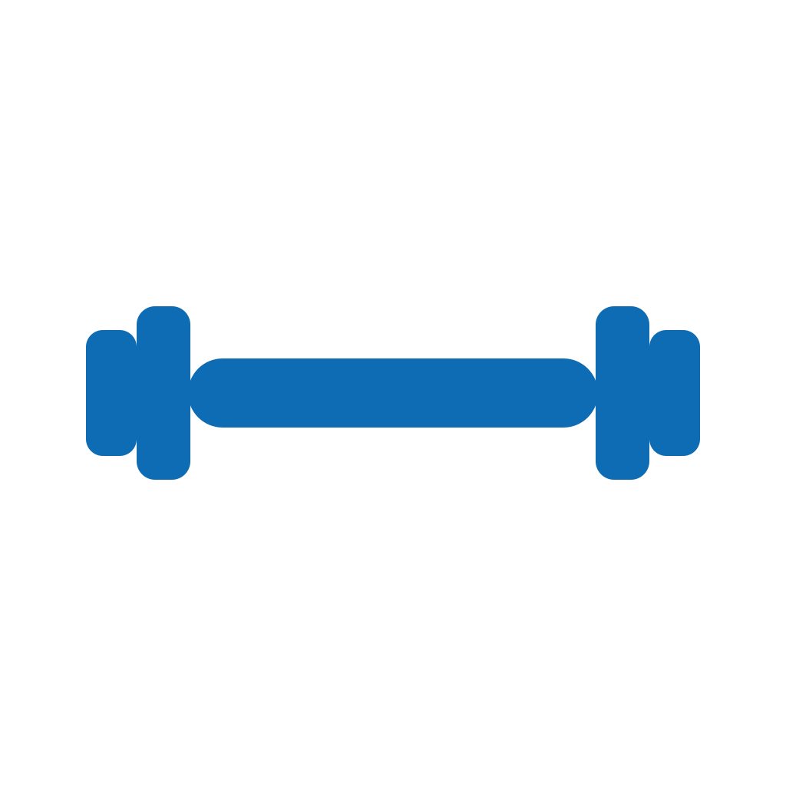

<meta name="viewport" content="width=device-width,initial-scale=1,maximum-scale=1,user-scalable=no">
<div id="app"></div>
<style>
*{box-sizing:border-box;-webkit-tap-highlight-color:transparent}
:root{--navy:#082d66;--blue:#0d63c8;--cyan:#26a6e8;--green:#168a78;--violet:#6547c9;--orange:#d7652b;--ink:#0b1f35;--muted:#64748b;--bg:#f8fafd;--line:#dce5ef;--card:#fff;--soft:#eef4fa;--danger:#bd3d46}
html,body{margin:0;padding:0;max-width:100%;overflow-x:hidden;background:linear-gradient(180deg,#fdfefe 0%,#f5f8fc 100%);color:var(--ink);font-family:-apple-system,BlinkMacSystemFont,"Segoe UI",Roboto,Arial,sans-serif}
body *{min-width:0} p,div,span,h1,h2,h3,h4,button,label{overflow-wrap:anywhere;word-break:normal} button,input,select{font:inherit}button{border:0;cursor:pointer}input,select{outline:none}
#app{min-height:100vh;width:100%;max-width:760px;margin:0 auto;padding:0 18px 42px;overflow-x:hidden}.screen{animation:enter .18s ease-out}@keyframes enter{from{opacity:.35;transform:translateY(4px)}to{opacity:1;transform:none}}
.topbar{height:78px;display:flex;align-items:center;justify-content:space-between;gap:12px}.brand{display:flex;align-items:center;gap:11px;min-width:0}.brand img{width:45px;height:45px;border-radius:13px;object-fit:cover}.brand-name{font-size:13px;letter-spacing:.13em;font-weight:800;color:var(--navy);white-space:nowrap}.brand-sub{font-size:12px;color:var(--muted);margin-top:2px}.icon-btn{width:42px;height:42px;flex:0 0 42px;border-radius:14px;background:#fff;border:1px solid var(--line);color:var(--navy);display:flex;align-items:center;justify-content:center;font-size:20px;box-shadow:0 3px 12px rgba(8,45,102,.05)}
.hero{padding:10px 3px 22px}.kicker{font-size:12px;font-weight:800;letter-spacing:.12em;color:var(--blue);text-transform:uppercase}h1{font-size:31px;line-height:1.08;margin:7px 0 9px;letter-spacing:-.03em}.lead{font-size:15px;line-height:1.55;color:var(--muted);margin:0;max-width:590px}.section-title{font-size:21px;font-weight:800;letter-spacing:-.02em;margin:22px 2px 11px}.section-sub{font-size:12px;color:var(--muted);margin:-5px 2px 12px;line-height:1.45}
.module-stack,.category-stack{display:grid;gap:14px}.module-card,.category-card{position:relative;overflow:hidden;min-height:158px;border-radius:24px;padding:23px 22px;display:flex;align-items:flex-end;text-align:left;color:#fff;box-shadow:0 10px 24px rgba(14,46,84,.10);cursor:pointer}.module-card::after,.category-card::after{content:"";position:absolute;inset:0;background:linear-gradient(115deg,rgba(0,0,0,.16),rgba(0,0,0,.02));pointer-events:none}.module-card .art,.category-card .art{position:absolute;inset:0;background-size:cover;background-position:center;opacity:.56}.module-card .copy,.category-card .copy{position:relative;z-index:2;max-width:72%}.module-card h2,.category-card h2{font-size:25px;margin:0 0 5px;letter-spacing:-.02em}.module-card p,.category-card p{font-size:13px;line-height:1.4;margin:0;color:rgba(255,255,255,.88)}.arrow{position:absolute;right:20px;bottom:21px;z-index:2;width:42px;height:42px;border-radius:50%;background:rgba(255,255,255,.18);display:flex;align-items:center;justify-content:center;font-size:21px}.module-nutrition,.macro{background:linear-gradient(135deg,#064784 0%,#0877d4 100%)}.module-exercise{background:linear-gradient(135deg,#963d21 0%,#dc6b2e 100%)}.module-sleep{background:linear-gradient(135deg,#24467f 0%,#4d78c7 100%)}.module-mind{background:linear-gradient(135deg,#403486 0%,#7567d6 100%)}.micro{background:linear-gradient(135deg,#0f746f 0%,#27a77c 100%)}.compound{background:linear-gradient(135deg,#47339b 0%,#7159d6 100%)}
.home-note,.callout{margin:18px 2px 0;padding:15px 17px;border:1px solid #dce8f4;border-radius:18px;background:rgba(255,255,255,.76);font-size:13px;line-height:1.48;color:#52657a}.home-note b,.callout b{color:var(--navy)}.disclaimer{margin-top:20px;padding:14px 15px;border-radius:16px;background:#f6f8fb;color:#6a7b8d;font-size:11px;line-height:1.55;border:1px solid #e5ebf1}

/* Local food tracker */
.food-launch{margin:0 0 18px;border-radius:24px;padding:20px;background:linear-gradient(135deg,#07508c,#128fc9);color:#fff;box-shadow:0 10px 24px rgba(14,70,120,.12)}.food-launch-top{display:flex;align-items:flex-start;justify-content:space-between;gap:12px}.food-launch h2{font-size:22px;margin:3px 0 5px}.food-launch p{font-size:12px;line-height:1.45;margin:0;color:rgba(255,255,255,.85)}.food-launch button{margin-top:14px;background:#fff;color:#0b4f7c;border-radius:14px;padding:11px 15px;font-weight:850}.food-hero{border-radius:24px;padding:20px;background:linear-gradient(135deg,#07508c,#1595cd);color:#fff;margin-bottom:16px}.food-hero .food-kcal{font-size:30px;font-weight:900;letter-spacing:-.03em}.food-macros{display:grid;grid-template-columns:repeat(4,1fr);gap:8px;margin-top:14px}.food-macro{background:rgba(255,255,255,.12);border-radius:14px;padding:10px 5px;text-align:center}.food-macro b{display:block;font-size:16px}.food-macro span{font-size:9px;opacity:.8}.food-search-row{display:grid;grid-template-columns:minmax(0,1fr) auto;gap:8px}.food-search-row input{height:48px;border:1px solid var(--line);border-radius:16px;background:#fff;padding:0 14px}.food-search-row button{padding:0 17px;border-radius:16px;background:var(--blue);color:#fff;font-weight:850}.food-filters{display:flex;gap:7px;overflow:auto;padding:10px 0 12px}.food-chip{flex:0 0 auto;padding:8px 11px;border-radius:999px;background:#edf3f8;color:#456176;font-size:11px;font-weight:800}.food-chip.active{background:#123f66;color:#fff}.food-results,.food-log{display:grid;gap:10px}.food-row{background:#fff;border:1px solid var(--line);border-radius:18px;padding:14px}.food-row-top{display:flex;justify-content:space-between;gap:12px;align-items:flex-start}.food-name{font-size:15px;font-weight:850}.food-meta{font-size:11px;color:var(--muted);margin-top:3px;line-height:1.4}.food-k{font-weight:900;color:#173f63;white-space:nowrap}.food-row-mac{font-size:11px;color:#607286;margin-top:8px}.food-addbar{display:grid;grid-template-columns:80px 1fr auto;gap:7px;margin-top:10px}.food-addbar input,.food-addbar select{height:38px;border:1px solid var(--line);border-radius:11px;background:#f9fbfd;padding:0 9px}.food-addbar button{border-radius:11px;padding:0 12px;background:#e7f3fb;color:#0b5e95;font-weight:850}.food-tools{display:flex;gap:8px;margin:10px 0 18px}.food-tools button{flex:1;padding:11px;border-radius:13px;background:#f0f5f9;color:#345a76;font-weight:800}.food-empty{text-align:center;padding:24px 12px;color:#8090a0;font-size:13px}.food-note{font-size:10px;line-height:1.45;color:#7a8998;margin:16px 2px}.custom-grid{display:grid;grid-template-columns:1fr 1fr;gap:9px}.custom-grid label{font-size:11px;color:#607286}.custom-grid input,.custom-grid select{width:100%;height:43px;margin-top:4px;border:1px solid var(--line);border-radius:12px;background:#fff;padding:0 10px}.custom-wide{grid-column:1/-1}.food-delete{background:#fff0f0!important;color:#a53b45!important}

/* Nutrition */
.water-card{position:relative;margin:2px 0 18px;border-radius:24px;padding:18px;background:linear-gradient(145deg,#e7f5ff 0%,#f8fcff 58%,#eaf7ff 100%);border:1px solid #d4eafb}.water-top{display:flex;align-items:flex-start;justify-content:space-between;gap:12px}.water-label{font-size:11px;font-weight:800;letter-spacing:.12em;text-transform:uppercase;color:#1871b8}.water-title{font-size:21px;font-weight:800;margin:4px 0 2px;color:#0a3f71}.water-meta{font-size:12px;color:#648097}.water-menu-btn{width:42px;height:34px;flex:0 0 42px;padding:0;border-radius:12px;background:rgba(255,255,255,.9);border:1px solid #d4e7f5;color:#174d78;display:flex;align-items:center;justify-content:center;gap:4px}.water-menu-btn .menu-dot{width:4px;height:4px;border-radius:50%;background:currentColor}.water-menu{position:absolute;z-index:12;top:58px;right:16px;width:178px;padding:7px;background:#fff;border:1px solid var(--line);border-radius:15px;box-shadow:0 14px 30px rgba(15,55,85,.16);display:none}.water-menu.open{display:block}.water-menu button{width:100%;padding:11px 12px;border-radius:10px;background:#f3f8fc;text-align:left;color:#164d79;font-size:13px;font-weight:750}.water-visual{display:grid;grid-template-columns:88px minmax(0,1fr);gap:16px;align-items:center;margin-top:15px}.water-orb{width:88px;height:88px;border-radius:50%;position:relative;overflow:hidden;background:#d9effe;border:5px solid rgba(255,255,255,.92);box-shadow:inset 0 0 0 1px #b9dbf1}.water-fill{position:absolute;left:-12%;right:-12%;bottom:0;height:0;background:linear-gradient(180deg,#46b9f0,#1085d0);transition:height .45s cubic-bezier(.2,.8,.2,1);will-change:height}.water-fill::before{content:"";position:absolute;top:-7px;left:-5%;width:110%;height:14px;border-radius:48%;background:rgba(255,255,255,.34);animation:wave 3.4s ease-in-out infinite}@keyframes wave{50%{transform:translateX(4%)}}.water-percent{position:absolute;inset:0;display:flex;align-items:center;justify-content:center;z-index:2;font-weight:850;font-size:17px;color:#0a497d}.water-amount{font-size:27px;font-weight:850;color:#0a3f71;letter-spacing:-.03em}.water-slider-wrap{margin:9px 0 13px}.water-adjust{width:100%;height:16px;appearance:none;-webkit-appearance:none;border-radius:999px;background:linear-gradient(90deg,#1ba0e5 var(--water-pct,0%),#d8eaf6 var(--water-pct,0%));box-shadow:inset 0 0 0 1px rgba(16,126,190,.07);transition:background .16s ease}.water-adjust:focus{outline:none}.water-adjust::-webkit-slider-runnable-track{height:16px;background:transparent;border-radius:999px}.water-adjust::-webkit-slider-thumb{-webkit-appearance:none;appearance:none;width:22px;height:22px;border-radius:50%;background:#fff;border:2px solid #0d79c8;box-shadow:0 2px 10px rgba(15,80,120,.24);margin-top:-3px;transition:transform .12s ease}.water-adjust:active::-webkit-slider-thumb{transform:scale(1.05)}.water-adjust::-moz-range-track{height:16px;background:transparent;border-radius:999px}.water-adjust::-moz-range-progress{height:16px;background:linear-gradient(90deg,#1ba0e5,#0b6fc0);border-radius:999px}.water-adjust::-moz-range-thumb{width:22px;height:22px;border-radius:50%;background:#fff;border:2px solid #0d79c8;box-shadow:0 2px 10px rgba(15,80,120,.24)}.water-actions{display:flex;gap:8px;flex-wrap:wrap}.water-actions button{flex:1 1 95px;padding:10px 8px;border-radius:12px;background:#fff;border:1px solid #d4e7f5;color:#12649d;font-size:12px;font-weight:800}.water-actions button:disabled{opacity:.42}.goal-drop{height:190px;display:flex;align-items:center;justify-content:center;position:relative}.drop-shape{position:absolute;width:92px;height:112px;background:linear-gradient(180deg,#4bc0f3,#0b79c4);border-radius:58% 58% 62% 62% / 72% 72% 42% 42%;transform:rotate(45deg);animation:floatDrop 2.8s ease-in-out infinite;will-change:transform}@keyframes floatDrop{50%{transform:rotate(45deg) translate(-5px,-5px)}}.goal-value{position:relative;z-index:2;color:#fff;font-size:22px;font-weight:850;text-shadow:0 1px 5px rgba(0,50,90,.25)}.goal-caption{text-align:center;color:var(--muted);font-size:13px;line-height:1.5}.slider-wrap{background:#fff;border:1px solid var(--line);border-radius:22px;padding:19px}.goal-slider{width:100%;height:8px;border-radius:99px;appearance:none;background:#dcebf5}.goal-slider::-webkit-slider-thumb{appearance:none;width:28px;height:28px;border-radius:50%;background:#0d79c8;border:5px solid #fff;box-shadow:0 2px 9px rgba(15,80,120,.2)}.slider-scale{display:flex;justify-content:space-between;color:var(--muted);font-size:11px;margin-top:8px}.goal-presets{display:flex;gap:8px;margin:18px 0 12px}.goal-presets button{flex:1;padding:10px;border-radius:12px;background:#eff6fb;color:#165b8c;font-weight:750}.primary-btn{width:100%;padding:14px 16px;border-radius:15px;background:var(--navy);color:#fff;font-weight:800}.secondary-btn{width:100%;padding:13px 15px;border-radius:15px;background:#fff;color:var(--navy);border:1px solid var(--line);font-weight:800}
.section-head{display:flex;align-items:center;gap:12px;padding:10px 0 14px}.section-head .title-wrap{flex:1}.section-head h1{font-size:28px;margin:0 0 3px}.section-head p{font-size:13px;color:var(--muted);margin:0}.search{width:100%;height:48px;border-radius:16px;border:1px solid var(--line);background:#fff;padding:0 15px;margin:0 0 15px;color:var(--ink)}.nutrient-list{display:grid;gap:10px}.nutrient-row{width:100%;display:flex;align-items:center;gap:13px;padding:15px;text-align:left;background:#fff;border:1px solid var(--line);border-radius:18px;color:var(--ink)}.nutri-dot{width:38px;height:38px;border-radius:13px;flex:0 0 auto;display:flex;align-items:center;justify-content:center;color:#fff;font-size:13px;font-weight:800;background:linear-gradient(135deg,var(--blue),var(--cyan))}.micro-section .nutri-dot{background:linear-gradient(135deg,#117c70,#39ae7e)}.compound-section .nutri-dot{background:linear-gradient(135deg,#5037a7,#7a62de)}.row-main{flex:1}.row-title{font-weight:760;font-size:15px;margin-bottom:3px}.row-sub{font-size:12px;color:var(--muted);white-space:nowrap;overflow:hidden;text-overflow:ellipsis}.row-arrow{color:#88a0b8;font-size:20px}.detail-head{padding:6px 0 12px}.detail-title{font-size:29px;font-weight:800;letter-spacing:-.03em;margin:8px 0 6px}.pill{display:inline-flex;align-items:center;border-radius:999px;background:#e8f2fd;color:var(--blue);font-weight:800;font-size:11px;letter-spacing:.06em;padding:7px 10px;text-transform:uppercase}.target{margin:11px 0 0;padding:13px 14px;border-radius:15px;background:#eff5fb;color:#29445f;font-size:13px;line-height:1.4}.tabs{display:grid;grid-template-columns:repeat(2,minmax(0,1fr));gap:8px;padding:4px 0 14px;width:100%}.tab{width:100%;padding:10px 8px;border-radius:14px;background:#edf2f7;color:#53677b;font-size:12px;font-weight:700;white-space:normal;line-height:1.2}.tab.active{background:var(--navy);color:#fff}.info-panel{background:#fff;border:1px solid var(--line);border-radius:20px;padding:19px 18px;line-height:1.58;font-size:15px;color:#2a4258}.info-panel h3{margin:0 0 9px;color:var(--ink);font-size:15px}.ps-note{margin-top:14px;padding:14px 15px;border-left:3px solid var(--blue);background:#f0f6fd;border-radius:0 14px 14px 0;font-size:13px;color:#3b5874;line-height:1.5}.source-intro{font-size:12px;color:var(--muted);line-height:1.45;margin:0 0 12px}.sources{display:grid;gap:10px}.source{background:#fff;border:1px solid var(--line);border-radius:16px;padding:13px 14px}.source-top{display:flex;justify-content:space-between;gap:8px;align-items:flex-start;flex-wrap:wrap}.source-name{font-size:13px;font-weight:700;color:#20384f;flex:1 1 180px}.source-val{font-size:12px;font-weight:800;color:var(--blue);text-align:right}.bar{height:8px;border-radius:999px;background:#edf2f6;overflow:hidden;margin-top:9px}.bar>span{display:block;height:100%;border-radius:inherit;background:linear-gradient(90deg,var(--blue),#2b99df)}.compound-source{display:flex;align-items:flex-start;gap:12px;background:#fff;border:1px solid var(--line);border-radius:15px;padding:13px 14px;font-size:13px;font-weight:650;color:#29445f}.source-bullet{width:8px;height:8px;border-radius:50%;background:var(--violet);flex:0 0 auto;margin-top:5px}
/* Exercise */
.exercise-hero{padding:8px 0 15px}.workout-cta{position:relative;overflow:hidden;border-radius:23px;padding:21px;background:linear-gradient(135deg,#172f51,#0c67af);color:#fff}.workout-cta h2{font-size:24px;margin:0 0 6px}.workout-cta p{font-size:13px;margin:0 0 16px;color:rgba(255,255,255,.8);line-height:1.45}.workout-cta button{padding:12px 17px;border-radius:14px;background:#fff;color:#0c4d83;font-weight:850}.mini-stats{display:grid;grid-template-columns:repeat(3,minmax(0,1fr));gap:8px;margin:12px 0 18px}.stat{background:#fff;border:1px solid var(--line);border-radius:16px;padding:12px}.stat-label{font-size:10px;letter-spacing:.06em;text-transform:uppercase;color:var(--muted);font-weight:800}.stat-value{font-size:21px;font-weight:850;color:var(--navy);margin-top:3px}.action-grid{display:grid;grid-template-columns:repeat(2,minmax(0,1fr));gap:12px}.action-card{min-height:126px;padding:18px 16px;border-radius:20px;background:#fff;border:1px solid var(--line);text-align:center;color:var(--ink);display:flex;flex-direction:column;align-items:center;justify-content:flex-start}.action-icon{width:60px;height:60px;border-radius:18px;background:linear-gradient(145deg,#edf5ff,#f8fbff);color:#5d738b;display:flex;align-items:center;justify-content:center;font-weight:900;font-size:18px;margin:0 auto 12px;box-shadow:inset 0 0 0 1px rgba(150,175,200,.14)}.action-icon svg{width:34px;height:34px;stroke:currentColor;stroke-width:1.9;fill:none;stroke-linecap:round;stroke-linejoin:round;display:block}.action-icon svg .fill-soft{fill:rgba(115,145,176,.16);stroke:none}.action-icon svg .fill-mid{fill:rgba(115,145,176,.24);stroke:none}.action-card b{display:block;font-size:15px;text-align:center}.action-card span{display:block;font-size:11px;color:var(--muted);margin-top:4px;line-height:1.35;text-align:center;max-width:160px}.routine-list{display:grid;gap:10px}.routine-row{width:100%;display:flex;align-items:center;gap:13px;background:#fff;border:1px solid var(--line);border-radius:18px;padding:15px 14px;text-align:left;color:var(--ink)}.routine-mark{width:50px;height:50px;border-radius:16px;background:radial-gradient(circle at 50% 45%,#123e6b 0%,#0a2340 58%,#071627 100%);color:var(--blue);display:flex;align-items:center;justify-content:center;font-size:16px;font-weight:900;flex:0 0 50px;overflow:hidden;box-shadow:inset 0 0 0 1px rgba(42,86,130,.42)}.routine-mark img{width:100%;height:100%;display:block;object-fit:contain;object-position:center;padding:4px}.routine-actions{margin-left:auto;display:flex;gap:6px}.tiny-btn{padding:9px 12px;border-radius:11px;background:#edf5fb;color:#155c8e;font-size:11px;font-weight:800}
.filter-wrap{display:flex;gap:7px;flex-wrap:wrap;margin:0 0 14px}.filter-chip{padding:8px 11px;border-radius:999px;background:#eef3f7;color:#52667a;font-size:11px;font-weight:800}.filter-chip.active{background:var(--navy);color:#fff}.exercise-list{display:grid;gap:10px}.exercise-row{width:100%;display:grid;grid-template-columns:86px minmax(0,1fr) auto;gap:14px;align-items:center;background:#fff;border:1px solid var(--line);border-radius:20px;padding:12px 13px;text-align:left;color:var(--ink);min-height:88px}.exercise-visual{height:66px;border-radius:16px;background:#f5f9fd;display:flex;align-items:center;justify-content:center;color:#0e5d9d;overflow:hidden;border:1px solid #e0eaf3}.exercise-visual img{width:100%;height:100%;display:block;object-fit:contain;padding:7px;object-position:center}.exercise-name{font-size:14px;font-weight:800;line-height:1.25}.exercise-meta{font-size:11px;color:var(--muted);margin-top:4px;line-height:1.35}.star-btn{width:38px;height:38px;border-radius:12px;background:#f2f6fa;color:#9babb9;font-size:18px;flex:0 0 38px}.star-btn.on{color:#c89117;background:#fff8df}.library-count{font-size:11px;color:var(--muted);margin:-7px 1px 12px}.exercise-detail-visual{height:250px;border-radius:26px;background:#f7fafd;display:flex;align-items:center;justify-content:center;color:#0b5a9a;margin-bottom:18px;padding:18px;border:1px solid #e0eaf3}.exercise-detail-visual svg{width:100%;height:100%;display:block}.exercise-detail-visual img{width:100%;height:100%;display:block;object-fit:contain;object-position:center;padding:2px}.tag-row{display:flex;gap:8px;flex-wrap:wrap;margin:10px 0 16px}.tag{padding:8px 12px;border-radius:999px;background:#eef4f9;color:#456077;font-size:11px;font-weight:750}.detail-block{background:#fff;border:1px solid var(--line);border-radius:18px;padding:18px 16px;margin-bottom:12px}.detail-block h3{font-size:13px;margin:0 0 8px}.detail-block p{font-size:13px;color:#486078;line-height:1.52;margin:0}.exercise-history-row{display:flex;justify-content:space-between;gap:10px;padding:10px 0;border-top:1px solid #edf1f5;font-size:12px}.exercise-history-row:first-child{border-top:0}.muted{color:var(--muted)}
/* Active workout */
.workout-header{padding:7px 0 12px}.workout-header-top{display:flex;align-items:flex-start;justify-content:space-between;gap:10px}.workout-name{font-size:27px;font-weight:850;letter-spacing:-.03em}.workout-clock{font-size:12px;color:var(--muted);margin-top:3px}.finish-btn{padding:10px 13px;border-radius:12px;background:#0d6cb4;color:#fff;font-size:12px;font-weight:850}.workout-tools{display:flex;gap:7px;flex-wrap:wrap;margin-top:11px}.tool-chip{padding:8px 10px;border-radius:11px;background:#eef4f8;color:#476078;font-size:11px;font-weight:800}.tool-chip.on{background:#e7f2fd;color:#0b63a7}.exercise-log-card{background:#fff;border:1px solid var(--line);border-radius:21px;padding:14px;margin:0 0 12px}.log-card-head{display:grid;grid-template-columns:64px minmax(0,1fr) auto;gap:12px;align-items:center;margin-bottom:14px}.log-card-head .exercise-visual{height:56px}.log-title{font-size:15px;font-weight:850}.log-sub{font-size:11px;color:var(--muted);margin-top:3px}.remove-ex{width:32px;height:32px;border-radius:10px;background:#f5f7f9;color:#8797a5;font-size:16px}.set-head,.set-row{display:grid;grid-template-columns:28px minmax(58px,1fr) 58px 54px 36px;gap:6px;align-items:center}.set-head{padding:0 2px 6px;color:#8a98a6;font-size:9px;font-weight:800;text-transform:uppercase;letter-spacing:.04em}.set-row{padding:7px 2px;border-top:1px solid #eef2f5}.set-row.done{opacity:.62}.set-num{font-size:11px;font-weight:850;color:#62778a;text-align:center}.prev-val{font-size:10px;color:#738698;line-height:1.2;text-align:center}.set-input{width:100%;height:36px;border-radius:10px;border:1px solid #dce5ed;background:#fbfdff;text-align:center;color:#19354e;padding:0 4px;font-size:13px;font-weight:750}.set-check{width:36px;height:36px;border-radius:11px;background:#edf3f7;color:#7690a6;font-weight:900}.set-check.done{background:#168a78;color:#fff}.advanced-row{display:grid;grid-template-columns:1fr 1.4fr;gap:7px;padding:0 2px 8px}.advanced-row label{font-size:9px;color:#8795a3;font-weight:800;text-transform:uppercase}.advanced-row input,.advanced-row select{width:100%;height:33px;margin-top:3px;border:1px solid #dfe6ed;border-radius:9px;background:#fafcfd;padding:0 8px;color:#345069;font-size:11px}.add-set{width:100%;padding:10px;border-radius:12px;background:#f0f6fb;color:#145e94;font-size:11px;font-weight:850;margin-top:7px}.workout-bottom-actions{display:grid;grid-template-columns:1fr 1fr;gap:9px;margin:13px 0}.rest-panel{position:sticky;bottom:10px;z-index:10;margin-top:12px;background:#0d355c;color:#fff;border-radius:18px;padding:12px 13px;display:none;align-items:center;gap:10px;box-shadow:0 8px 24px rgba(7,39,70,.18)}.rest-panel.show{display:flex}.rest-time{font-size:22px;font-weight:900;min-width:58px}.rest-copy{flex:1;font-size:11px;color:#c9d9e7}.rest-actions{display:flex;gap:5px}.rest-actions button{width:34px;height:34px;border-radius:10px;background:rgba(255,255,255,.12);color:#fff;font-size:11px;font-weight:800}
/* History + analytics */
.history-list{display:grid;gap:10px}.history-card{width:100%;text-align:left;background:#fff;border:1px solid var(--line);border-radius:18px;padding:15px;color:var(--ink)}.history-top{display:flex;justify-content:space-between;gap:10px}.history-name{font-size:15px;font-weight:850}.history-date{font-size:11px;color:var(--muted);white-space:nowrap}.history-metrics{display:flex;gap:13px;flex-wrap:wrap;margin-top:9px;font-size:11px;color:#577087}.history-metrics b{color:#183d5d}.summary-grid{display:grid;grid-template-columns:repeat(2,minmax(0,1fr));gap:9px;margin:12px 0}.summary-card{background:#fff;border:1px solid var(--line);border-radius:17px;padding:14px}.summary-card span{display:block;color:var(--muted);font-size:10px;text-transform:uppercase;font-weight:800}.summary-card b{display:block;font-size:21px;color:var(--navy);margin-top:4px}.muscle-bars{display:grid;gap:10px}.muscle-row{display:grid;grid-template-columns:82px minmax(0,1fr) 30px;align-items:center;gap:8px;font-size:11px}.mini-bar{height:9px;background:#e9eef3;border-radius:999px;overflow:hidden}.mini-bar span{display:block;height:100%;border-radius:999px;background:linear-gradient(90deg,#0e65ad,#28a5e6)}.pr-card{background:#fff;border:1px solid var(--line);border-radius:16px;padding:12px 14px;display:flex;justify-content:space-between;gap:10px;align-items:center;margin-bottom:8px}.pr-card b{font-size:13px}.pr-card span{font-size:11px;color:var(--muted)}
/* Routines */
.form-card{background:#fff;border:1px solid var(--line);border-radius:20px;padding:16px}.field-label{font-size:10px;font-weight:800;text-transform:uppercase;color:#7a8b9a}.text-field{width:100%;height:46px;margin-top:5px;border:1px solid #dce5ed;border-radius:13px;padding:0 12px;background:#fbfdff;color:var(--ink)}.draft-list{display:grid;gap:7px;margin:12px 0}.draft-ex{display:flex;align-items:center;gap:9px;padding:10px;border-radius:13px;background:#f4f8fb}.draft-ex span{flex:1;font-size:12px;font-weight:750}.draft-ex button{width:30px;height:30px;border-radius:9px;background:#fff;color:#9a6470}.form-actions{display:grid;grid-template-columns:1fr 1fr;gap:8px;margin-top:12px}
/* Mindfulness */
.mind-card{background:linear-gradient(145deg,#eeedff,#fbfbff);border:1px solid #dedbf7;border-radius:24px;padding:20px;text-align:center}.breath-orb{width:126px;height:126px;border-radius:50%;margin:14px auto;background:radial-gradient(circle at 35% 30%,#fff,#8f85e4 48%,#6152bf);box-shadow:0 10px 26px rgba(84,72,177,.14);transform:scale(.82);transition:transform 4s ease-in-out;will-change:transform}.breath-orb.inhale{transform:scale(1.08)}.mind-phase{font-size:22px;font-weight:850;color:#473d94}.mind-time{font-size:13px;color:#756e9a;margin-top:3px}.mind-buttons{display:flex;gap:8px;justify-content:center;flex-wrap:wrap;margin-top:16px}.mind-buttons button{padding:10px 13px;border-radius:12px;background:#fff;color:#554aa4;border:1px solid #ddd9f4;font-size:12px;font-weight:800}.mind-stop{margin-top:13px;background:#574aa8!important;color:#fff!important}.simple-protocols{display:grid;gap:9px;margin-top:15px}.protocol{background:#fff;border:1px solid var(--line);border-radius:17px;padding:14px}.protocol b{font-size:13px}.protocol p{font-size:12px;color:var(--muted);line-height:1.45;margin:5px 0 0}
.empty{padding:28px;text-align:center;color:var(--muted);font-size:14px}.empty.small{padding:15px}.hidden{display:none!important}
@media(max-width:390px){#app{padding-left:14px;padding-right:14px}h1{font-size:28px}.module-card,.category-card{min-height:145px}.module-card .copy,.category-card .copy{max-width:77%}.brand-name{font-size:12px;letter-spacing:.1em}.water-visual{grid-template-columns:76px minmax(0,1fr);gap:12px}.water-orb{width:76px;height:76px}.water-amount{font-size:23px}.action-grid{gap:8px}.set-head,.set-row{grid-template-columns:25px minmax(50px,1fr) 54px 50px 34px;gap:5px}.set-input,.set-check{height:34px}.set-check{width:34px}}
@media(prefers-reduced-motion:reduce){.screen,.water-fill,.water-progress span,.drop-shape,.breath-orb{animation:none;transition:none}}

.inline-link{display:inline-flex;align-items:center;gap:6px;background:#eef5fb;color:#135d94;padding:8px 10px;border-radius:999px;font-size:12px;font-weight:800;margin-top:10px}
.primary-inline{padding:10px 14px;border-radius:13px;background:var(--navy);color:#fff;font-weight:800}.beginner-note{margin:14px 0 0;padding:14px 15px;border-radius:18px;background:#f1f6fb;border:1px solid var(--line);font-size:13px;color:#466177;line-height:1.5}.beginner-note b{color:var(--navy)}
.sleep-card{background:#fff;border:1px solid var(--line);border-radius:24px;padding:18px 18px 16px}.sleep-summary{display:grid;grid-template-columns:96px minmax(0,1fr);gap:15px;align-items:center}.sleep-ring{width:96px;height:96px;border-radius:50%;position:relative;overflow:hidden;background:#e3edff;border:5px solid rgba(255,255,255,.92);box-shadow:inset 0 0 0 1px #cbd8f1}.sleep-ring-fill{position:absolute;left:-10%;right:-10%;bottom:0;background:linear-gradient(180deg,#91afff,#476fd1);transition:height .4s ease}.sleep-ring-fill::before{content:'';position:absolute;top:-8px;left:-5%;width:110%;height:15px;border-radius:50%;background:rgba(255,255,255,.34)}.sleep-ring-text{position:absolute;inset:0;display:flex;align-items:center;justify-content:center;z-index:2;font-size:18px;font-weight:850;color:#17366b}.sleep-big{font-size:27px;font-weight:850;letter-spacing:-.03em;color:#132f5f}.sleep-sub{font-size:12px;color:var(--muted);margin-top:4px}.sleep-grid{display:grid;grid-template-columns:repeat(2,minmax(0,1fr));gap:10px;margin-top:16px}.sleep-field{display:block;font-size:12px;font-weight:750;color:#425b72}.sleep-input{width:100%;height:48px;border-radius:14px;border:1px solid var(--line);background:#f9fbfe;padding:0 13px;color:var(--ink);margin-top:6px}.sleep-target{margin-top:14px}.sleep-target-top{display:flex;justify-content:space-between;gap:10px;font-size:13px;font-weight:800;color:#173a6d;margin-bottom:8px}.sleep-actions{margin-top:14px}.sleep-link-card{display:flex;align-items:center;justify-content:space-between;gap:10px;padding:16px 17px;border-radius:20px;background:linear-gradient(135deg,#eef5ff,#f9fbff);border:1px solid #d8e5f4;margin-top:14px}.sleep-link-card p{font-size:12px;line-height:1.45;color:#5d7287;margin:5px 0 0}.sleep-food-list{display:grid;gap:10px}.sleep-food-card{background:#fff;border:1px solid var(--line);border-radius:18px;padding:15px}.sleep-food-head b{font-size:15px}.sleep-food-card p{font-size:13px;line-height:1.5;color:#49627a;margin:7px 0 0}.food-tags{display:flex;gap:7px;flex-wrap:wrap;margin-top:10px}.food-tag{padding:6px 10px;border-radius:999px;background:#eef4fb;color:#385978;font-size:11px;font-weight:760}
@media(max-width:370px){.screen{padding-left:15px;padding-right:15px}.action-grid{gap:9px}.action-card{padding:15px 11px}.action-icon{width:54px;height:54px}.exercise-row{grid-template-columns:78px minmax(0,1fr) auto;padding:11px}.exercise-visual{height:62px}.routine-row{padding:13px 11px}.routine-mark{width:46px;height:46px;flex-basis:46px}.water-visual{grid-template-columns:82px minmax(0,1fr);gap:12px}.water-orb{width:82px;height:82px}}

/* v9.4 dashboard redesign */
.home-hero{padding:8px 3px 14px}.home-hero h1{margin-bottom:7px}.home-hero .lead{max-width:620px}
.dashboard-head{display:flex;align-items:flex-end;justify-content:space-between;gap:16px;margin:2px 2px 11px}.dashboard-head h2{margin:0;font-size:18px;letter-spacing:-.02em}.dashboard-head span{font-size:11px;color:var(--muted);font-weight:750;letter-spacing:.05em;text-transform:uppercase}
.today-focus{margin-bottom:13px;padding:12px 2px 12px 13px;border-left:3px solid #168a78;display:flex;align-items:center;gap:11px}.today-focus-dot{width:8px;height:8px;border-radius:50%;background:#168a78;box-shadow:0 0 0 5px rgba(22,138,120,.09);flex:0 0 auto}.today-focus b{display:block;font-size:13px;color:#16334e;margin-bottom:2px}.today-focus p{margin:0;color:#667c91;font-size:12px;line-height:1.35}
.dashboard-mosaic{display:grid;grid-template-columns:1fr 1fr;gap:10px;margin-bottom:18px}.dash-panel{border:0;background:#fff;border-radius:22px;text-align:left;color:var(--ink);position:relative;overflow:hidden;box-shadow:0 7px 22px rgba(12,46,80,.055)}.dash-panel:active{transform:scale(.995)}.dash-label{font-size:9px;font-weight:900;letter-spacing:.12em;text-transform:uppercase;color:#74899b}.dash-arrow{font-size:18px;color:#8aa1b4}.dash-panel-top{display:flex;align-items:center;justify-content:space-between;gap:8px}
.dash-hydration{min-height:184px;padding:15px;background:linear-gradient(155deg,#e8f7ff 0%,#f8fcff 62%,#fff 100%)}.dash-hydration-body{display:grid;grid-template-columns:92px minmax(0,1fr);align-items:center;gap:12px;margin-top:14px}.dash-water-ring{width:92px;height:92px;border-radius:50%;display:grid;place-items:center;position:relative;background:conic-gradient(#198fd1 calc(var(--p)*1%),#dcecf5 0)}.dash-water-ring::after{content:'';position:absolute;inset:9px;border-radius:50%;background:#f7fcff}.dash-water-ring strong{z-index:1;font-size:19px;color:#16476a;letter-spacing:-.03em}.dash-water-ring small{display:block;font-size:8px;color:#7990a2;text-align:center;z-index:1;margin-top:-26px}.dash-hydration-copy b{display:block;font-size:22px;color:#123c5d;letter-spacing:-.04em}.dash-hydration-copy span{display:block;margin-top:4px;font-size:10px;line-height:1.4;color:#71879a}.dash-mini-add{display:inline-flex;margin-top:10px;padding:7px 10px;border-radius:999px;background:rgba(24,143,209,.11);font-size:9px;font-weight:850;color:#1978ac}
.dash-clinical{min-height:184px;padding:15px;background:linear-gradient(155deg,#f5f9fc,#fff)}.dash-clinical-title{display:flex;align-items:center;gap:7px;margin-top:11px;font-size:18px;font-weight:850;color:#163a58}.dash-clinical-pulse{width:9px;height:9px;border-radius:50%;background:#60b58e;box-shadow:0 0 0 4px rgba(96,181,142,.11)}.dash-clinical-pulse.alert{background:#d56560;box-shadow:0 0 0 4px rgba(213,101,96,.11)}.dash-clinical-strip{display:flex;gap:3px;height:24px;align-items:flex-end;margin:15px 0 9px}.dash-clinical-strip i{display:block;flex:1;min-width:3px;border-radius:99px;background:#72bb9a;height:15px}.dash-clinical-strip i.abnormal{background:#d86f67;height:23px}.dash-clinical-strip i.unknown{background:#c6d1da;height:10px}.dash-clinical-meta{font-size:10px;color:#75899a;line-height:1.4}.dash-clinical-meta b{color:#224662}
.dash-training{grid-column:1/-1;padding:15px 16px;min-height:150px;background:linear-gradient(145deg,#fff8f4,#fff)}.dash-training-grid{display:grid;grid-template-columns:minmax(0,1fr) 150px;gap:14px;align-items:end;margin-top:10px}.dash-training-copy b{display:block;font-size:18px;color:#5e3526}.dash-training-copy span{display:block;font-size:10px;color:#8a756d;margin-top:4px;line-height:1.4}.dash-week-bars{display:flex;align-items:flex-end;justify-content:space-between;gap:5px;height:69px}.dash-week-day{flex:1;text-align:center}.dash-week-day i{display:block;width:100%;max-width:14px;margin:0 auto 5px;border-radius:7px 7px 3px 3px;background:#e6d5cc;min-height:5px}.dash-week-day i.active{background:#cf7048}.dash-week-day span{font-size:7px;font-weight:850;color:#9a877d;text-transform:uppercase}.dash-training-foot{display:flex;gap:14px;margin-top:9px;font-size:9px;color:#927d73}.dash-training-foot b{font-size:11px;color:#6b4433}
.dash-body{min-height:157px;padding:15px;background:linear-gradient(155deg,#f2efff,#fff)}.dash-body-value{font-size:22px;font-weight:880;color:#35345e;letter-spacing:-.04em;margin-top:10px}.dash-body-sub{font-size:9.5px;color:#7b7996;margin-top:3px;line-height:1.35}.dash-spark{width:100%;height:48px;margin-top:10px;overflow:visible}.dash-spark path{fill:none;stroke:#715fc3;stroke-width:3;stroke-linecap:round;stroke-linejoin:round}.dash-spark circle{fill:#fff;stroke:#715fc3;stroke-width:2.5}.dash-spark-empty{height:48px;margin-top:10px;display:flex;align-items:center;color:#9792ac;font-size:9px}
.dash-sleep{min-height:157px;padding:15px;background:linear-gradient(155deg,#eef3ff,#fff)}.dash-sleep-duration{font-size:22px;font-weight:880;color:#2c4679;letter-spacing:-.04em;margin-top:10px}.dash-sleep-window{height:11px;border-radius:999px;background:#e1e8f6;margin-top:13px;position:relative;overflow:hidden}.dash-sleep-window span{position:absolute;inset:0;background:linear-gradient(90deg,#6687d9,#8aa8f0);border-radius:inherit}.dash-sleep-times{display:flex;justify-content:space-between;font-size:8px;color:#7c8ca9;margin-top:5px}.dash-sleep-status{font-size:9.5px;color:#7383a0;margin-top:9px}
.dash-nutrition{grid-column:1/-1;padding:16px;background:linear-gradient(135deg,#0c4e82,#167bb2);color:#fff;min-height:143px}.dash-nutrition .dash-label{color:rgba(255,255,255,.67)}.dash-nutrition .dash-arrow{color:rgba(255,255,255,.65)}.dash-nutrition-main{display:grid;grid-template-columns:minmax(0,1fr) auto;gap:15px;align-items:center;margin-top:10px}.dash-energy b{display:block;font-size:24px;letter-spacing:-.04em}.dash-energy span{display:block;font-size:9.5px;color:rgba(255,255,255,.72);margin-top:3px}.dash-nutrition-pills{display:grid;gap:5px}.dash-nutrition-pills span{padding:6px 9px;border-radius:999px;background:rgba(255,255,255,.13);font-size:8px;font-weight:850;text-align:center}.dash-nutrition-foot{font-size:9px;color:rgba(255,255,255,.72);margin-top:10px}
.dashboard-secondary{display:grid;grid-template-columns:1fr 1fr;gap:10px;margin-top:4px}.dash-secondary-link{border:0;border-radius:18px;background:transparent;padding:14px 4px;text-align:left;border-top:1px solid #dfe7ee}.dash-secondary-link b{font-size:13px;color:#1c3d57}.dash-secondary-link span{display:block;font-size:10px;color:#7b8e9e;margin-top:3px;line-height:1.35}
@media(max-width:390px){.dashboard-mosaic{gap:8px}.dash-hydration,.dash-clinical,.dash-body,.dash-sleep{padding:13px}.dash-hydration-body{grid-template-columns:78px minmax(0,1fr);gap:9px}.dash-water-ring{width:78px;height:78px}.dash-water-ring strong{font-size:17px}.dash-training-grid{grid-template-columns:minmax(0,1fr) 126px}.dash-week-bars{gap:3px}.dash-nutrition{padding:14px}.dash-nutrition-main{gap:8px}}

/* Dedicated hydration destination */
.water-page-hero{padding-bottom:14px}.water-page .water-card{margin-top:0}.water-page .water-card .water-title{font-size:23px}.water-page-note{margin-top:11px;padding:13px 15px;border-radius:16px;background:#f3f8fc;border:1px solid #e0ebf3;color:#657c90;font-size:12px;line-height:1.45}
/* Samsung Health landing slot: intentionally no fake wearable metrics */
.health-connect-slot{margin:0 0 14px;padding:15px;border-radius:19px;background:linear-gradient(145deg,#f3f5ff,#fff);border:1px solid #dfe4f4;display:flex;gap:12px;align-items:flex-start}.health-connect-badge{width:36px;height:36px;border-radius:12px;background:#e6ebff;color:#365ab5;display:flex;align-items:center;justify-content:center;font-size:18px;flex:0 0 auto}.health-connect-slot b{font-size:13px;color:#273d69}.health-connect-slot p{font-size:11px;line-height:1.45;color:#74839c;margin:4px 0 0}.health-connect-state{display:inline-flex;margin-top:8px;padding:5px 8px;border-radius:999px;background:#eef2fb;color:#526a9b;font-size:9px;font-weight:850;text-transform:uppercase;letter-spacing:.07em}
@media(max-width:390px){.dashboard-grid{gap:8px}.dash-card{padding:12px}.dash-water{padding:14px}.dash-week{grid-template-columns:1.2fr repeat(3,.68fr);padding:12px 10px}.dash-metric b{font-size:14px}.module-card{min-height:128px;padding:18px}.module-card h2{font-size:21px}}

/* v8.7 Body & Progress + shared health context */
.dash-body{grid-column:1/-1;min-height:98px;padding:14px 16px;background:linear-gradient(145deg,#f5f2ff,#fff 68%);display:flex;align-items:center;gap:14px}.dash-body-icon{width:42px;height:42px;border-radius:14px;background:#ebe5ff;color:#644fc1;display:flex;align-items:center;justify-content:center;font-size:20px;flex:0 0 auto}.dash-body-copy{flex:1;min-width:0}.dash-body-copy .dash-label{margin-bottom:4px}.dash-body-main{display:flex;align-items:baseline;gap:8px;flex-wrap:wrap}.dash-body-main b{font-size:22px;letter-spacing:-.04em;color:#27345b}.dash-body-main span{font-size:11px;color:#76859a;font-weight:700}.dash-body-goal{font-size:11px;color:#718095;margin-top:3px}.dash-body .dash-arrow{margin-left:auto}
.body-page .hero{padding-bottom:15px}.body-summary{background:linear-gradient(145deg,#342b73,#6150be);color:#fff;border-radius:24px;padding:20px;box-shadow:0 10px 28px rgba(58,45,123,.16);margin-bottom:12px}.body-summary-top{display:flex;justify-content:space-between;gap:14px;align-items:flex-start}.body-summary-label{font-size:10px;text-transform:uppercase;letter-spacing:.12em;font-weight:850;color:rgba(255,255,255,.7)}.body-current{font-size:38px;font-weight:880;letter-spacing:-.055em;margin-top:5px}.body-current small{font-size:15px;font-weight:750;letter-spacing:0;color:rgba(255,255,255,.72)}.body-trend{display:inline-flex;margin-top:7px;padding:6px 9px;border-radius:999px;background:rgba(255,255,255,.13);font-size:10px;font-weight:800;color:#fff}.body-summary-action{width:40px;height:40px;border-radius:13px;background:rgba(255,255,255,.14);color:#fff;font-size:19px}.goal-line{margin-top:16px}.goal-line-top{display:flex;justify-content:space-between;gap:12px;font-size:10px;color:rgba(255,255,255,.73);font-weight:750}.goal-bar{height:8px;background:rgba(255,255,255,.15);border-radius:999px;overflow:hidden;margin-top:7px}.goal-bar span{height:100%;display:block;background:#fff;border-radius:inherit}.body-grid{display:grid;grid-template-columns:1fr 1fr;gap:10px;margin:12px 0}.body-info-card{background:#fff;border:1px solid #dfe7ef;border-radius:19px;padding:14px;min-height:104px;box-shadow:0 4px 14px rgba(13,44,74,.035)}.body-info-label{font-size:9px;text-transform:uppercase;letter-spacing:.09em;font-weight:850;color:#8191a1}.body-info-value{font-size:21px;font-weight:850;letter-spacing:-.035em;color:#183852;margin-top:6px}.body-info-value small{font-size:11px;color:#788b9d;letter-spacing:0}.body-info-sub{font-size:10px;line-height:1.38;color:#72869a;margin-top:4px}.body-section{margin-top:16px}.body-section-head{display:flex;align-items:center;justify-content:space-between;gap:10px;margin:0 2px 9px}.body-section-head h2{font-size:16px;margin:0;color:#183750}.body-section-head span{font-size:10px;color:#8595a5}.body-chart-card,.body-list-card,.body-callout{background:#fff;border:1px solid #dfe7ef;border-radius:20px;padding:15px;box-shadow:0 4px 14px rgba(13,44,74,.035)}.body-chart{width:100%;height:155px;display:block}.body-chart-grid{stroke:#e9eef4;stroke-width:1}.body-chart-line{fill:none;stroke:#654fc1;stroke-width:3.5;stroke-linecap:round;stroke-linejoin:round}.body-chart-dot{fill:#fff;stroke:#654fc1;stroke-width:3}.body-chart-label{fill:#8795a4;font-size:22px;font-family:Arial,sans-serif}.body-empty{text-align:center;padding:24px 12px;color:#788a9c;font-size:12px;line-height:1.5}.body-actions{display:grid;grid-template-columns:1fr 1fr;gap:9px;margin:12px 0}.body-primary,.body-secondary{min-height:46px;border-radius:15px;font-weight:820;font-size:12px}.body-primary{background:#0d63c8;color:#fff}.body-secondary{background:#edf3f9;color:#214664;border:1px solid #dbe6ef}.body-history-row{display:grid;grid-template-columns:1fr auto auto;gap:12px;align-items:center;padding:12px 2px;border-bottom:1px solid #edf1f5}.body-history-row:last-child{border-bottom:0}.body-history-date{font-size:11px;color:#778a9c}.body-history-main{font-size:13px;font-weight:800;color:#203d55}.body-history-extra{font-size:10px;color:#8a98a6;margin-top:2px}.body-delete{width:30px;height:30px;border-radius:10px;background:#f7f1f1;color:#a46464;font-size:16px}.measurement-chips{display:flex;flex-wrap:wrap;gap:7px;margin-top:10px}.measurement-chip{padding:6px 8px;border-radius:999px;background:#f0f4f8;color:#60758a;font-size:10px;font-weight:760}
.profile-card{background:#fff;border:1px solid #dfe7ef;border-radius:22px;padding:17px;margin-bottom:12px;box-shadow:0 4px 14px rgba(13,44,74,.035)}.form-title{font-size:14px;font-weight:850;color:#173852;margin-bottom:4px}.form-help{font-size:10px;line-height:1.45;color:#7d8e9e;margin-bottom:13px}.form-grid{display:grid;grid-template-columns:1fr 1fr;gap:11px}.field{display:block}.field.full{grid-column:1/-1}.field-label{display:block;font-size:9px;text-transform:uppercase;letter-spacing:.08em;font-weight:850;color:#73879a;margin:0 0 5px 2px}.field input,.field select{width:100%;height:44px;border:1px solid #d9e4ed;border-radius:13px;background:#fbfcfe;padding:0 11px;color:#173650;outline:none;font-size:13px}.field input:focus,.field select:focus{border-color:#89b6e3;box-shadow:0 0 0 3px rgba(13,99,200,.07)}.height-imperial{display:grid;grid-template-columns:1fr 1fr;gap:8px}.unit-switch{display:grid;grid-template-columns:1fr 1fr;gap:5px;padding:4px;border-radius:14px;background:#edf2f7;margin-bottom:13px}.unit-switch button{height:35px;border-radius:10px;background:transparent;color:#657b90;font-size:11px;font-weight:800}.unit-switch button.active{background:#fff;color:#143e61;box-shadow:0 2px 8px rgba(19,58,91,.08)}.profile-save{width:100%;height:48px;border-radius:15px;background:#0d63c8;color:#fff;font-weight:850;margin-top:3px}.profile-note{padding:12px 13px;border-radius:15px;background:#f3f7fb;border:1px solid #e0e9f1;color:#6e8295;font-size:10px;line-height:1.5;margin-top:11px}.energy-card{width:100%;text-align:left;margin:0 0 14px;padding:15px 16px;border-radius:19px;background:linear-gradient(145deg,#fff7eb,#fff);border:1px solid #f0e3cf;color:#20384c;display:flex;align-items:center;gap:12px}.energy-icon{width:38px;height:38px;border-radius:13px;background:#fff0d7;color:#9b6923;display:flex;align-items:center;justify-content:center;font-size:18px;flex:0 0 auto}.energy-copy{flex:1;min-width:0}.energy-copy b{display:block;font-size:13px}.energy-value{font-size:20px!important;letter-spacing:-.035em;margin-top:2px}.energy-copy span{display:block;font-size:10px;line-height:1.4;color:#7d756b;margin-top:2px}.energy-arrow{color:#aa9274;font-size:18px}.exercise-body-context{width:100%;text-align:left;margin:0 0 13px;padding:12px 14px;border-radius:17px;background:#f5f2ff;border:1px solid #e4def5;color:#27385b;display:flex;align-items:center;gap:11px}.exercise-body-context .badge{width:31px;height:31px;border-radius:10px;background:#e9e2ff;display:flex;align-items:center;justify-content:center;color:#644fc1}.exercise-body-context b{font-size:12px}.exercise-body-context span{display:block;font-size:10px;color:#78839a;margin-top:2px}.setup-body{padding:18px;border-radius:20px;background:linear-gradient(145deg,#f4f1ff,#fff);border:1px solid #e3def3;margin-bottom:12px}.setup-body b{font-size:14px;color:#2f3760}.setup-body p{font-size:11px;line-height:1.45;color:#758299;margin:5px 0 12px}.setup-body button{height:40px;padding:0 14px;border-radius:12px;background:#654fc1;color:#fff;font-size:11px;font-weight:820}
@media(max-width:390px){.body-current{font-size:34px}.form-grid{gap:9px}.body-grid{gap:8px}.body-info-card{padding:12px}.dash-body{padding:13px}.body-actions{gap:7px}}

/* v8.9 experimental direct BLE smart scale */
.scale-entry-card{width:100%;margin:0 0 12px;padding:15px 16px;border:1px solid #dce7ef;border-radius:19px;background:linear-gradient(145deg,#eef8ff,#fff 70%);display:flex;align-items:center;gap:12px;text-align:left;color:#193a52;box-shadow:0 4px 14px rgba(13,44,74,.035)}
.scale-entry-icon{width:42px;height:42px;border-radius:14px;background:#dff1fc;color:#12689e;display:flex;align-items:center;justify-content:center;font-size:19px;flex:0 0 auto}.scale-entry-copy{flex:1;min-width:0}.scale-entry-copy b{display:block;font-size:13px}.scale-entry-copy span{display:block;font-size:10px;color:#71879a;line-height:1.4;margin-top:3px}.scale-entry-arrow{font-size:20px;color:#7b98ab}
.scale-page .hero{padding-bottom:14px}.scale-card{background:#fff;border:1px solid #dce7ef;border-radius:22px;padding:17px;box-shadow:0 5px 18px rgba(13,44,74,.04);margin-bottom:12px}.scale-kicker{font-size:9px;text-transform:uppercase;letter-spacing:.1em;font-weight:850;color:#7990a1}.scale-status{margin-top:6px;font-size:13px;font-weight:800;color:#193a52}.scale-help{font-size:11px;line-height:1.5;color:#708496;margin:6px 0 0}.scale-mac-row{display:flex;gap:8px;align-items:center;margin-top:13px}.scale-mac-row input{flex:1;min-width:0;border:1px solid #d9e4ec;border-radius:13px;padding:11px 12px;background:#fbfdff;color:#23445d;font-size:12px}.scale-btn-row{display:grid;grid-template-columns:1fr 1fr;gap:8px;margin-top:10px}.scale-btn{padding:12px;border-radius:14px;font-weight:800;font-size:11px;background:#0d6cb4;color:#fff}.scale-btn.secondary{background:#eef4f8;color:#31546c}.scale-btn.stop{background:#f7eded;color:#945555}.scale-reading{margin-top:13px;padding:16px;border-radius:18px;background:linear-gradient(145deg,#0c5e9e,#1081ce);color:#fff}.scale-reading-label{font-size:9px;text-transform:uppercase;letter-spacing:.1em;font-weight:850;color:rgba(255,255,255,.72)}.scale-reading-main{font-size:36px;font-weight:900;letter-spacing:-.055em;margin-top:3px}.scale-reading-main small{font-size:14px;font-weight:750;letter-spacing:0}.scale-reading-meta{font-size:10px;color:rgba(255,255,255,.75);margin-top:4px}.scale-save{width:100%;padding:13px;border-radius:14px;background:#fff;color:#0c609f;font-weight:850;margin-top:11px}.scale-diagnostic{font-family:monospace;font-size:9px;line-height:1.45;word-break:break-all;background:#f5f8fa;border:1px solid #e1e8ee;border-radius:14px;padding:11px;margin-top:10px;color:#5c7284}.scale-device{display:flex;gap:8px;align-items:center;padding:10px 0;border-top:1px solid #edf1f4}.scale-device:first-child{border-top:0}.scale-device-copy{flex:1;min-width:0}.scale-device-copy b{display:block;font-size:11px;color:#27465c}.scale-device-copy span{display:block;font-size:9px;color:#7b8f9e;margin-top:2px}.scale-device button{padding:8px 10px;border-radius:10px;background:#edf4f8;color:#305a75;font-size:9px;font-weight:800}.scale-pill{display:inline-flex;margin-top:8px;padding:5px 8px;border-radius:999px;background:#edf5fb;color:#356886;font-size:9px;font-weight:850}.scale-pill.live{background:#e5f6ed;color:#24724a}.scale-warning{margin-top:11px;padding:11px 12px;border-radius:14px;background:#fff8e9;border:1px solid #f3e7c4;color:#806a34;font-size:10px;line-height:1.45}

/* v9.2.1 Clinical Health - preserve original screenshot bytes for OCR */
.clinical-card{background:#fff;border:1px solid #dfe7ef;border-radius:22px;padding:16px;margin:10px 0;box-shadow:0 6px 20px rgba(13,44,74,.045)}.clinical-meta{font-size:10px;color:#778b9d;line-height:1.45}.clinical-pill{display:inline-flex;align-items:center;padding:5px 9px;border-radius:999px;background:#edf5ff;color:#285f91;font-size:9px;font-weight:850;margin:3px 4px 3px 0}.clinical-pill.warn{background:#fff4d9;color:#86631b}.clinical-import{width:100%;min-height:52px;border-radius:16px;background:#0d63c8;color:#fff;font-weight:850;margin-top:8px;box-shadow:0 8px 18px rgba(13,99,200,.16)}.clinical-secondary{width:100%;min-height:44px;border-radius:14px;background:#edf3f9;color:#214664;font-weight:800;margin-top:8px}.clinical-panel-head{display:flex;justify-content:space-between;gap:12px;align-items:flex-start;margin-bottom:10px}.clinical-panel-head b{color:#173852;font-size:15px}.clinical-value{font-size:20px;font-weight:850;color:#173852}.clinical-marker{padding:12px 0;border-bottom:1px solid #edf1f5}.clinical-marker:last-child{border-bottom:0}.clinical-marker-top{display:flex;justify-content:space-between;gap:10px}.clinical-file{display:none}.clinical-preview{display:flex;gap:8px;overflow:auto;margin-top:12px;padding-bottom:2px}.clinical-preview img{width:72px;height:92px;object-fit:cover;border-radius:12px;border:1px solid #dfe7ef;box-shadow:0 3px 10px rgba(12,44,70,.08)}.clinical-import-card{background:linear-gradient(145deg,#f8fbff,#eef6ff);border-color:#d8e8f8}.clinical-import-icon{width:44px;height:44px;border-radius:14px;background:#dcebff;color:#0d63c8;display:flex;align-items:center;justify-content:center;font-size:22px;font-weight:900;margin-bottom:12px}.clinical-import-status{margin-top:10px;padding:10px 12px;border-radius:12px;background:rgba(255,255,255,.7);border:1px solid #e1eaf3;color:#5d7488;font-size:10px;line-height:1.45}.clinical-review-head{display:flex;align-items:center;justify-content:space-between;gap:10px;margin:18px 2px 8px}.clinical-review-head h3{margin:0;color:#173852;font-size:17px}.clinical-review-head span{font-size:10px;color:#7b8fa2}.clinical-result-card{position:relative;background:#fff;border:1px solid #dfe7ef;border-radius:20px;padding:14px 14px 13px;margin:10px 0;box-shadow:0 4px 14px rgba(13,44,74,.04);overflow:hidden}.clinical-result-card:before{content:'';position:absolute;left:0;top:0;bottom:0;width:4px;background:#a8b8c6}.clinical-result-card.normal:before{background:#39a56b}.clinical-result-card.high:before{background:#d88438}.clinical-result-card.low:before{background:#4d87c8}.clinical-result-top{display:flex;align-items:flex-start;justify-content:space-between;gap:12px;margin-bottom:12px}.clinical-result-name{min-width:0}.clinical-result-name b{display:block;color:#173852;font-size:14px;line-height:1.25}.clinical-result-name span{display:block;color:#8093a4;font-size:9px;margin-top:3px}.clinical-status{flex:none;display:inline-flex;align-items:center;gap:5px;border-radius:999px;padding:6px 9px;font-size:9px;font-weight:900;background:#eef2f5;color:#5f7485}.clinical-status.normal{background:#e9f7ef;color:#277a4d}.clinical-status.high{background:#fff0e4;color:#9b5a20}.clinical-status.low{background:#eaf2fb;color:#356ca8}.clinical-edit-grid{display:grid;grid-template-columns:1fr .9fr;gap:9px}.clinical-value-field{grid-column:1/2}.clinical-date-field{grid-column:2/3}.clinical-edit-grid input{width:100%;height:44px;border:1px solid #d9e4ed;border-radius:12px;padding:0 10px;background:#fbfcfe;color:#173852;font-size:13px;font-weight:750}.clinical-value-field input{font-size:20px;font-weight:900;letter-spacing:-.3px}.clinical-constant-row{grid-column:1/-1;display:flex;flex-wrap:wrap;gap:7px;margin-top:1px}.clinical-constant{display:inline-flex;align-items:center;gap:5px;background:#f3f7fa;border-radius:10px;padding:7px 9px;color:#526c80;font-size:9px;font-weight:750}.clinical-constant b{color:#23445e;font-size:10px}.clinical-result-foot{display:flex;justify-content:space-between;align-items:center;gap:8px;margin-top:10px;padding-top:9px;border-top:1px solid #eef2f5}.clinical-checks{display:flex;flex-wrap:wrap;gap:5px}.clinical-remove{background:none;color:#a46464;font-size:9px;font-weight:800;padding:5px}.clinical-empty{padding:24px 14px;text-align:center;background:#f7f9fb;border:1px dashed #d8e3ec;border-radius:16px;color:#71879a;font-size:11px;line-height:1.5}.clinical-manual-name{grid-column:1/-1}.clinical-manual-name input{font-size:12px;font-weight:700}.module-clinical{background:linear-gradient(135deg,#184b64,#2787a1)}

/* v9.2.3 clinical trends + range visual */
.clinical-latest-card{background:linear-gradient(145deg,#173d58,#215f82);color:#fff;border-radius:22px;padding:18px;margin:10px 0 14px}.clinical-latest-kicker{font-size:9px;text-transform:uppercase;letter-spacing:.11em;font-weight:850;color:rgba(255,255,255,.68)}.clinical-latest-value{font-size:36px;font-weight:900;letter-spacing:-.04em;margin:5px 0 1px}.clinical-latest-value small{font-size:13px;font-weight:750;color:rgba(255,255,255,.7);letter-spacing:0}.clinical-latest-meta{font-size:10px;color:rgba(255,255,255,.72)}
.clinical-range-visual{margin-top:16px}.clinical-range-track{position:relative;height:12px;border-radius:999px;background:linear-gradient(90deg,#dce9f5 0 15%,#65c7b0 15% 85%,#f0c27a 85% 100%);box-shadow:inset 0 0 0 1px rgba(255,255,255,.35)}.clinical-range-marker{position:absolute;top:-7px;width:4px;height:26px;border-radius:4px;background:#fff;box-shadow:0 2px 7px rgba(0,0,0,.2);transform:translateX(-50%)}.clinical-range-marker:after{content:'';position:absolute;top:-4px;left:50%;width:8px;height:8px;border-radius:50%;background:#fff;transform:translate(-50%,-50%)}.clinical-range-labels{display:flex;justify-content:space-between;margin-top:7px;font-size:9px;color:rgba(255,255,255,.68)}.clinical-range-caption{display:flex;justify-content:space-between;gap:8px;margin-top:8px;font-size:10px}.clinical-range-caption b{color:#fff}.clinical-range-caption span{color:rgba(255,255,255,.72)}

.clinical-info-card{background:#fff;border:1px solid #dfe7ef;border-radius:20px;padding:16px;margin:12px 0 14px;box-shadow:0 4px 14px rgba(13,44,74,.035)}
.clinical-info-head{display:flex;align-items:flex-start;justify-content:space-between;gap:10px;margin-bottom:12px}.clinical-info-head b{font-size:15px;color:#173852}.clinical-info-head span{font-size:9px;color:#7c90a2;background:#f1f6fa;padding:5px 8px;border-radius:999px;font-weight:800}
.clinical-info-intro{font-size:12px;line-height:1.55;color:#536d81;margin:0 0 13px}.clinical-info-grid{display:grid;grid-template-columns:1fr 1fr;gap:9px}.clinical-info-block{border-radius:15px;padding:12px;background:#f6f9fb;border:1px solid #e8eef3}.clinical-info-block.high{background:#fff4f1;border-color:#f5dfd8}.clinical-info-block.low{background:#f2f7fc;border-color:#dde9f4}.clinical-info-label{display:flex;align-items:center;gap:6px;font-size:10px;font-weight:900;color:#294b65;margin-bottom:5px}.clinical-info-dot{width:7px;height:7px;border-radius:50%;background:#7892a5}.clinical-info-block.high .clinical-info-dot{background:#c86854}.clinical-info-block.low .clinical-info-dot{background:#4e83b8}.clinical-info-block p{font-size:11px;line-height:1.5;color:#5b7082;margin:0}.clinical-info-note{margin-top:11px;padding-top:10px;border-top:1px solid #edf1f4;font-size:9px;line-height:1.5;color:#80909e}
@media(max-width:390px){.clinical-info-grid{grid-template-columns:1fr}}
.clinical-trend-card{background:#fff;border:1px solid #dfe7ef;border-radius:20px;padding:15px;margin:10px 0 14px;box-shadow:0 4px 14px rgba(13,44,74,.035)}.clinical-trend-head{display:flex;justify-content:space-between;align-items:flex-start;gap:10px;margin-bottom:7px}.clinical-trend-head b{font-size:14px;color:#173852}.clinical-trend-head span{font-size:9px;color:#7c90a2}.clinical-trend-key{display:flex;align-items:center;gap:12px;flex-wrap:wrap;margin:0 0 7px;font-size:8px;font-weight:800;color:#718698}.clinical-trend-key i{display:inline-block;width:8px;height:8px;border-radius:50%;margin-right:4px;vertical-align:-1px}.clinical-trend-key .k-normal{background:#35a66d}.clinical-trend-key .k-high{background:#d97c32}.clinical-trend-key .k-low{background:#4a82c2}.clinical-trend-svg{display:block;width:100%;height:auto;overflow:visible}.clinical-trend-grid{stroke:#edf1f5;stroke-width:1}.clinical-trend-band{fill:#e7f6ef}.clinical-trend-outside{fill:#fff0f0}.clinical-trend-outside.high{fill:#fff0ec}.clinical-trend-boundary{stroke:#79b99d;stroke-width:1.2;stroke-dasharray:4 4}.clinical-trend-line{fill:none;stroke:#173f5d;stroke-width:2.7;stroke-linecap:round;stroke-linejoin:round}.clinical-trend-dot{fill:#fff;stroke-width:3.2}.clinical-trend-dot.normal{stroke:#35a66d}.clinical-trend-dot.high{stroke:#d97c32;fill:#fff8f1}.clinical-trend-dot.low{stroke:#4a82c2;fill:#f4f8fd}.clinical-trend-label{fill:#8192a2;font-size:9px;font-family:Arial,sans-serif}.clinical-trend-edge{fill:#56816f;font-size:8px;font-weight:700;font-family:Arial,sans-serif}.clinical-trend-value{font-size:8px;font-weight:800;font-family:Arial,sans-serif}.clinical-trend-value.normal{fill:#2e7e55}.clinical-trend-value.high{fill:#a85f28}.clinical-trend-value.low{fill:#386b9f}.clinical-history-title{display:flex;justify-content:space-between;align-items:end;margin:18px 2px 7px}.clinical-history-title b{font-size:14px;color:#173852}.clinical-history-title span{font-size:9px;color:#8192a2}.clinical-marker{transition:background .18s ease,border-color .18s ease,transform .18s ease;border-radius:12px;padding-left:8px;padding-right:8px}.clinical-marker.is-highlighted{background:#eef7ff;border:1px solid #b8d8f3;transform:scale(1.01)}.clinical-delta{display:inline-flex;align-items:center;gap:4px;margin-top:7px;padding:5px 8px;border-radius:999px;background:rgba(255,255,255,.12);color:#fff;font-size:9px;font-weight:850}.clinical-import-summary{display:flex;gap:6px;flex-wrap:wrap;margin-top:9px}.clinical-import-summary span{display:inline-flex;align-items:center;padding:6px 9px;border-radius:999px;font-size:9px;font-weight:850;background:#eef4f8;color:#526b7d}.clinical-import-summary .normal{background:#e9f7ef;color:#277a4d}.clinical-import-summary .high,.clinical-import-summary .low{background:#fff0ee;color:#a34c45}.clinical-duplicate{background:#fff3e8!important;color:#9a5b23!important}

/* v9.2.8 clinical operating system */
.clinical-overview-grid{display:grid;grid-template-columns:repeat(4,minmax(0,1fr));gap:8px;margin:10px 0 14px}.clinical-overview-stat{background:#fff;border:1px solid #dfe7ef;border-radius:16px;padding:12px 10px}.clinical-overview-stat span{display:block;font-size:8px;text-transform:uppercase;letter-spacing:.08em;font-weight:850;color:#8394a3}.clinical-overview-stat b{display:block;margin-top:4px;font-size:22px;color:#173852}.clinical-overview-stat.high b,.clinical-overview-stat.low b{color:#b24f48}.clinical-overview-stat.normal b{color:#31815a}.clinical-toolbar{display:flex;gap:8px;margin:10px 0}.clinical-toolbar .search{margin:0;flex:1}.clinical-tools{display:flex;gap:8px;margin:8px 0 14px}.clinical-tools button{flex:1;min-height:40px;border-radius:13px;background:#edf4fa;color:#245475;font-size:10px;font-weight:850}.clinical-category-row{display:flex;gap:7px;overflow:auto;padding:1px 0 7px;margin-bottom:4px}.clinical-category-chip{flex:none;padding:8px 11px;border-radius:999px;background:#eef3f7;color:#5d7182;font-size:9px;font-weight:850}.clinical-category-chip.active{background:#173f5d;color:#fff}.clinical-dashboard-section{margin:18px 0 7px;display:flex;justify-content:space-between;align-items:end}.clinical-dashboard-section b{font-size:15px;color:#173852}.clinical-dashboard-section span{font-size:9px;color:#8192a2}.clinical-latest-list{background:#fff;border:1px solid #dfe7ef;border-radius:20px;padding:8px 14px}.clinical-marker-status-dot{width:8px;height:8px;border-radius:50%;display:inline-block;margin-right:6px;background:#9bacb9}.clinical-marker-status-dot.normal{background:#35a66d}.clinical-marker-status-dot.high,.clinical-marker-status-dot.low{background:#c95e56}.clinical-marker-row-btn{width:100%;background:none;text-align:left}.clinical-session-card{width:100%;background:#fff;border:1px solid #dfe7ef;border-radius:18px;padding:14px;margin:8px 0;text-align:left}.clinical-session-top{display:flex;justify-content:space-between;gap:10px;align-items:flex-start}.clinical-session-top b{font-size:13px;color:#173852}.clinical-session-date{font-size:10px;color:#73889a}.clinical-session-summary{display:flex;gap:6px;flex-wrap:wrap;margin-top:8px}.clinical-mini-chip{padding:5px 7px;border-radius:999px;background:#eef4f8;color:#5b7182;font-size:8px;font-weight:850}.clinical-mini-chip.normal{background:#e9f7ef;color:#277a4d}.clinical-mini-chip.abnormal{background:#fff0ee;color:#a34c45}.clinical-insight-card{background:linear-gradient(145deg,#173d58,#215f82);color:#fff;border-radius:20px;padding:16px;margin:10px 0 14px}.clinical-insight-title{font-size:15px;font-weight:900}.clinical-insight-sub{font-size:9px;color:rgba(255,255,255,.68);margin-top:3px}.clinical-insight-grid{display:grid;grid-template-columns:repeat(3,minmax(0,1fr));gap:7px;margin-top:12px}.clinical-insight-stat{background:rgba(255,255,255,.09);border-radius:13px;padding:10px}.clinical-insight-stat span{font-size:8px;color:rgba(255,255,255,.65);display:block}.clinical-insight-stat b{font-size:18px;display:block;margin-top:2px}.clinical-insight-line{margin-top:10px;font-size:10px;line-height:1.5;color:rgba(255,255,255,.86)}.clinical-related{display:flex;gap:7px;flex-wrap:wrap;margin-top:10px}.clinical-related button{padding:7px 10px;border-radius:999px;background:#eef5fb;color:#24597d;font-size:9px;font-weight:850}.clinical-provenance{display:inline-flex;margin-top:8px;padding:5px 8px;border-radius:999px;background:rgba(255,255,255,.12);font-size:8px;color:rgba(255,255,255,.76);font-weight:800}.clinical-history-actions{display:flex;gap:5px;margin-top:7px}.clinical-history-actions button{padding:6px 9px;border-radius:10px;background:#edf4fa;color:#285b7e;font-size:8px;font-weight:850}.clinical-history-actions .danger{background:#fff0ee;color:#a34c45}.clinical-confidence{display:inline-flex;align-items:center;gap:5px}.clinical-confidence i{width:6px;height:6px;border-radius:50%;background:#35a66d}.clinical-confidence.medium i{background:#d6a13b}.clinical-confidence.low i{background:#c95e56}@media(max-width:420px){.clinical-overview-grid{grid-template-columns:repeat(2,minmax(0,1fr))}.clinical-insight-grid{grid-template-columns:repeat(3,minmax(0,1fr))}}


/* v9.4.1 dashboard corrective pass */
.dashboard-mosaic{display:grid;grid-template-columns:1fr 1fr;gap:11px;margin-bottom:18px}
.dash-panel{display:block;width:100%;min-width:0;border:1px solid #e2e9ef;background:#fff;border-radius:21px;padding:15px;text-align:left;color:var(--ink);position:relative;overflow:hidden;box-shadow:0 5px 16px rgba(12,46,80,.045)}
.dash-panel-top{display:flex;align-items:center;justify-content:space-between;gap:8px;margin-bottom:10px}.dash-label{font-size:9px;font-weight:900;letter-spacing:.12em;text-transform:uppercase;color:#74899b}.dash-arrow{font-size:19px;line-height:1;color:#8aa1b4;flex:0 0 auto}
.dash-hydration,.dash-clinical,.dash-training,.dash-body,.dash-sleep,.dash-nutrition{min-height:0;background:#fff}
.dash-hydration{grid-column:1/-1;background:linear-gradient(145deg,#f4fbff,#fff 65%)}.dash-hydration-body{display:grid;grid-template-columns:82px minmax(0,1fr);align-items:center;gap:14px;margin-top:2px}.dash-water-ring{width:82px;height:82px}.dash-water-ring::after{inset:8px}.dash-hydration-copy b{font-size:23px}.dash-hydration-copy span{font-size:10px}.dash-mini-add{margin-top:8px}
.dash-clinical{grid-column:1/-1;background:linear-gradient(145deg,#f8fbfd,#fff)}.dash-clinical-title{margin-top:0;font-size:17px}.dash-clinical-strip{height:20px;margin:12px 0 8px}.dash-clinical-strip i.abnormal{height:20px}.dash-clinical-meta{font-size:10px}
.dash-training{grid-column:1/-1;background:linear-gradient(145deg,#fff9f6,#fff)}.dash-training-grid{grid-template-columns:minmax(0,1fr) 132px;gap:12px;align-items:center;margin-top:0}.dash-training-copy b{font-size:17px}.dash-week-bars{height:58px}.dash-training-foot{gap:11px;flex-wrap:wrap}
.dash-body{grid-column:auto;display:block;min-height:158px;padding:15px;background:linear-gradient(145deg,#f7f5ff,#fff)}.dash-body-value{font-size:21px;margin-top:4px;line-height:1.08;overflow-wrap:anywhere}.dash-body-sub{font-size:9.5px;line-height:1.35;min-height:26px}.dash-spark,.dash-spark-empty{height:42px;margin-top:8px}
.dash-sleep{grid-column:auto;display:block;min-height:158px;padding:15px;background:linear-gradient(145deg,#f4f7ff,#fff)}.dash-sleep-duration{font-size:21px;margin-top:4px}.dash-sleep-window{margin-top:10px}.dash-sleep-status{line-height:1.3}
.dash-nutrition{grid-column:1/-1;color:var(--ink);background:linear-gradient(145deg,#f3f8ff,#fff);min-height:0;padding:15px}.dash-nutrition .dash-label{color:#74899b}.dash-nutrition .dash-arrow{color:#8aa1b4}.dash-nutrition-main{display:grid;grid-template-columns:minmax(0,1fr) auto;gap:12px;align-items:center;margin-top:0}.dash-energy b{display:block;font-size:21px;letter-spacing:-.035em;color:#173852}.dash-energy span{display:block;font-size:9.5px;color:#71879a;margin-top:3px;line-height:1.35}.dash-nutrition-pills{display:flex;gap:5px;flex-wrap:wrap;justify-content:flex-end;max-width:145px}.dash-nutrition-pills span{padding:5px 7px;border-radius:999px;background:#e6f0fa;color:#35617f;font-size:7.5px;font-weight:850;text-align:center}.dash-nutrition-foot{font-size:9px;color:#71879a;margin-top:9px}
.dashboard-secondary{display:grid;grid-template-columns:1fr 1fr;gap:10px}.dash-secondary-link{min-width:0}
@media(max-width:390px){.dashboard-mosaic{gap:9px}.dash-panel{padding:13px}.dash-hydration-body{grid-template-columns:74px minmax(0,1fr);gap:11px}.dash-water-ring{width:74px;height:74px}.dash-training-grid{grid-template-columns:minmax(0,1fr) 116px}.dash-body,.dash-sleep{min-height:152px}.dash-body-value,.dash-sleep-duration{font-size:19px}.dash-nutrition-main{grid-template-columns:1fr}.dash-nutrition-pills{justify-content:flex-start;max-width:none}.dashboard-secondary{grid-template-columns:1fr}}


/* v9.4.6 dashboard imagery refinement — water + training only; no layout geometry changes */
.dash-panel>*{position:relative;z-index:1}
.dash-hydration::before,.dash-training::before,.dash-sleep::before,.dash-nutrition::before{
  content:'';position:absolute;pointer-events:none;z-index:0;background-repeat:no-repeat;background-size:cover;
}
.dash-hydration::before{
  right:0;top:0;width:34%;height:100%;
  background-image:linear-gradient(90deg,rgba(255,255,255,1) 0%,rgba(255,255,255,.58) 38%,rgba(255,255,255,.12) 100%),url('dashboard_water.png');
  background-position:center;opacity:.54;
}
.dash-training::before{
  right:0;top:0;width:36%;height:100%;
  background-image:linear-gradient(90deg,rgba(255,255,255,1) 0%,rgba(255,255,255,.74) 34%,rgba(255,255,255,.22) 100%),url('dashboard_training.png');
  background-position:center center;opacity:.34;
}
.dash-sleep::before{
  right:0;top:0;width:52%;height:100%;
  background-image:linear-gradient(90deg,rgba(255,255,255,.98) 0%,rgba(255,255,255,.72) 40%,rgba(255,255,255,.18) 100%),url('dashboard_sleep.png');
  background-position:center center;opacity:.20;
}
.dash-nutrition::before{
  right:0;top:0;width:42%;height:100%;
  background-image:linear-gradient(90deg,rgba(255,255,255,1) 0%,rgba(255,255,255,.56) 40%,rgba(255,255,255,.10) 100%),url('dashboard_nutrition.png');
  background-position:center;opacity:.34;
}
@media(max-width:390px){
  .dash-hydration::before{width:36%;opacity:.50}
  .dash-training::before{width:38%;opacity:.30}
  .dash-sleep::before{width:54%;opacity:.17}
  .dash-nutrition::before{width:44%;opacity:.30}
}


/* v9.4.7 command-centre hero + training edge-bleed fix */
.today-command{position:relative;overflow:hidden;margin:12px 0 16px;padding:18px;border-radius:24px;background:linear-gradient(135deg,#0b4f86 0%,#0d6cb4 58%,#2498b8 100%);color:#fff;box-shadow:0 10px 28px rgba(13,108,180,.16)}
.today-command:after{content:'';position:absolute;right:-40px;top:-55px;width:190px;height:190px;border:1px solid rgba(255,255,255,.12);border-radius:50%;box-shadow:0 0 0 26px rgba(255,255,255,.035),0 0 0 54px rgba(255,255,255,.025);pointer-events:none}
.today-command-head{display:flex;justify-content:space-between;gap:12px;align-items:flex-start;position:relative;z-index:1}.today-command-kicker{font-size:10px;font-weight:850;letter-spacing:1.3px;opacity:.78;text-transform:uppercase}.today-command h1{font-size:23px;line-height:1.1;margin:6px 0 0;color:#fff;max-width:290px}.today-command-mark{display:grid;place-items:center;width:36px;height:36px;border-radius:12px;background:rgba(255,255,255,.13);font-size:10px;font-weight:900;letter-spacing:1px}.today-command-progress{height:6px;border-radius:8px;background:rgba(255,255,255,.18);margin:16px 0 14px;overflow:hidden;position:relative;z-index:1}.today-command-progress span{display:block;height:100%;border-radius:8px;background:#fff;min-width:3px}.today-command-stats{display:grid;grid-template-columns:repeat(4,1fr);gap:7px;position:relative;z-index:1}.today-command-stats span{min-width:0}.today-command-stats small{display:block;font-size:7px;letter-spacing:.6px;font-weight:800;opacity:.65;white-space:nowrap}.today-command-stats b{display:block;font-size:12px;margin-top:3px;white-space:nowrap;overflow:hidden;text-overflow:ellipsis}.today-command>p{font-size:11px;line-height:1.45;margin:14px 0 0;opacity:.82;position:relative;z-index:1}.dash-training::before{right:-2px!important;top:-2px!important;height:calc(100% + 4px)!important;width:calc(36% + 4px)!important}.dash-training{overflow:hidden!important}
@media(max-width:390px){.today-command{padding:16px}.today-command h1{font-size:21px}.today-command-stats{gap:4px}.today-command-stats b{font-size:11px}}
/* v9.4.8 micro-polish: centre hydration label + fully cover training image edge */
.dash-water-ring{display:flex!important;flex-direction:column!important;align-items:center!important;justify-content:center!important;gap:2px!important}
.dash-water-ring strong{position:relative!important;z-index:1!important;line-height:1!important;margin:0!important}
.dash-water-ring small{position:relative!important;z-index:1!important;display:block!important;line-height:1!important;margin:2px 0 0!important}
.dash-training::before{right:-6px!important;top:-6px!important;height:calc(100% + 12px)!important;width:calc(36% + 12px)!important;background-size:cover!important;background-position:center center!important}
@media(max-width:390px){.dash-training::before{width:calc(38% + 12px)!important}}


/* v9.4.9 Vitals: screenshot blood pressure + pulse */
.vitals-entry{width:100%;border:1px solid #dfe7ef;background:linear-gradient(145deg,#f7fbff,#fff);border-radius:20px;padding:15px;margin:12px 0;text-align:left;display:grid;grid-template-columns:minmax(0,1fr) auto;gap:12px;align-items:center;box-shadow:0 4px 14px rgba(13,44,74,.035)}
.vitals-entry b{display:block;font-size:15px;color:#173852}.vitals-entry p{margin:4px 0 0;font-size:10px;line-height:1.45;color:#71879a}.vitals-mini{display:flex;align-items:baseline;gap:5px;color:#173852}.vitals-mini strong{font-size:24px;letter-spacing:-.04em}.vitals-mini span{font-size:9px;color:#7c90a2;font-weight:800}
.vitals-hero{background:linear-gradient(145deg,#173d58,#246e91);color:#fff;border-radius:22px;padding:17px;margin:10px 0 14px}.vitals-hero-top{display:flex;justify-content:space-between;gap:10px;align-items:flex-start}.vitals-hero .k{font-size:8px;text-transform:uppercase;letter-spacing:.12em;font-weight:900;color:rgba(255,255,255,.66)}.vitals-bp{font-size:37px;font-weight:900;letter-spacing:-.05em;margin-top:5px}.vitals-bp small{font-size:11px;letter-spacing:0;color:rgba(255,255,255,.66)}.vitals-pulse{min-width:82px;border-radius:15px;background:rgba(255,255,255,.1);padding:10px;text-align:center}.vitals-pulse span{display:block;font-size:8px;color:rgba(255,255,255,.65);text-transform:uppercase;letter-spacing:.08em}.vitals-pulse b{display:block;font-size:22px;margin-top:2px}.vitals-meta{margin-top:10px;font-size:9px;color:rgba(255,255,255,.7);line-height:1.45}.vitals-grid{display:grid;grid-template-columns:1fr 1fr;gap:9px;margin:12px 0}.vitals-stat{background:#fff;border:1px solid #dfe7ef;border-radius:17px;padding:13px}.vitals-stat span{display:block;font-size:8px;color:#7d90a0;text-transform:uppercase;letter-spacing:.08em;font-weight:850}.vitals-stat b{display:block;margin-top:4px;color:#173852;font-size:18px}.vitals-history-row{padding:13px 0;border-bottom:1px solid #edf1f5}.vitals-history-row:last-child{border-bottom:0}.vitals-history-head{display:flex;justify-content:space-between;align-items:center;gap:10px}.vitals-history-head b{font-size:12px;color:#173852}.vitals-history-head strong{font-size:15px;color:#173852}.vitals-history-sub{font-size:9px;color:#7b8e9f;margin-top:4px}.vitals-import-btn{width:100%;min-height:46px;border-radius:14px;background:#eaf4fb;color:#235f83;font-weight:850;margin-top:8px}


/* v9.5.4 multi-layout BP monitor reader */
.bp-scan-actions{display:grid;grid-template-columns:1fr 1fr;gap:10px;margin:12px 0}.bp-scan-action{min-height:74px;border-radius:18px;border:1px solid #dfe8ef;background:#fff;text-align:left;padding:14px;color:#173852}.bp-scan-action.primary{background:linear-gradient(145deg,#17415f,#246f93);color:#fff;border-color:transparent}.bp-scan-action b{display:block;font-size:14px}.bp-scan-action span{display:block;margin-top:4px;font-size:9px;line-height:1.4;opacity:.72}.bp-file{display:none}.bp-preview{margin:12px 0}.bp-preview img{display:block;width:100%;max-height:250px;object-fit:contain;border-radius:17px;background:#eef3f7}.bp-scan-status{font-size:10px;line-height:1.45;color:#6f8495;margin:10px 1px}.bp-review{background:#fff;border:1px solid #dfe7ef;border-radius:20px;padding:15px;margin:12px 0}.bp-review-title{display:flex;justify-content:space-between;align-items:center;gap:10px}.bp-review-title b{font-size:15px;color:#173852}.bp-review-title span{font-size:8px;color:#73889a;text-transform:uppercase;letter-spacing:.08em;font-weight:850}.bp-reading-grid{display:grid;grid-template-columns:1fr 1fr 1fr;gap:8px;margin-top:13px}.bp-field{background:#f5f8fb;border-radius:14px;padding:10px}.bp-field span{display:block;font-size:8px;color:#7c8fa0;text-transform:uppercase;letter-spacing:.08em;font-weight:850}.bp-field input{width:100%;border:0;background:transparent;color:#173852;font-size:22px;font-weight:900;padding:4px 0 0;outline:none}.bp-field small{font-size:8px;color:#8395a4}.bp-date-wrap{margin-top:10px}.bp-date-wrap label{display:block;font-size:8px;text-transform:uppercase;letter-spacing:.08em;font-weight:850;color:#7b8e9e}.bp-date-wrap>div{margin-top:5px;border:1px solid #dfe7ef;border-radius:13px;padding:9px 10px}.bp-date-wrap input{display:block;width:100%;min-width:0;border:0;background:transparent;padding:0;color:#173852}.bp-save{width:100%;min-height:48px;border-radius:15px;background:#173f5d;color:#fff;font-weight:900;margin-top:12px}.bp-manual{width:100%;min-height:43px;border-radius:14px;background:#eef4f8;color:#285b7e;font-weight:850;margin-top:8px}@media(max-width:370px){.bp-scan-actions{grid-template-columns:1fr}.bp-reading-grid{gap:6px}.bp-field{padding:8px}.bp-field input{font-size:19px}}


/* v9.6.0 Health Connect sleep shell */
.health-connect-slot{display:block}.health-connect-top{display:flex;gap:12px;align-items:flex-start}.health-connect-copy{min-width:0;flex:1}.health-connect-actions{display:flex;gap:8px;margin-top:12px;flex-wrap:wrap}.health-connect-actions button{min-height:38px;border-radius:12px;padding:0 13px;font-size:10px;font-weight:850}.health-connect-actions .hc-primary{background:#355fc3;color:#fff}.health-connect-actions .hc-secondary{background:#edf2fb;color:#3e5f9d}.health-connect-actions button:disabled{opacity:.45}.health-connect-state.connected{background:#e9f7ef;color:#277a4d}.health-connect-state.waiting{background:#fff5e8;color:#94631c}.hc-last{margin-top:12px;padding-top:12px;border-top:1px solid #e4e9f3}.hc-last-grid{display:grid;grid-template-columns:repeat(3,minmax(0,1fr));gap:7px;margin-top:8px}.hc-stat{background:rgba(70,104,180,.06);border-radius:12px;padding:9px}.hc-stat span{display:block;font-size:8px;color:#7b8ba6;text-transform:uppercase;letter-spacing:.06em;font-weight:800}.hc-stat b{display:block;margin-top:2px;font-size:14px;color:#273d69}.hc-stage-row{display:flex;gap:5px;flex-wrap:wrap;margin-top:8px}.hc-stage-row span{padding:5px 7px;border-radius:999px;background:#eef2fb;color:#526a9b;font-size:8px;font-weight:800}.hc-note{font-size:9px;color:#8190a7;margin-top:8px;line-height:1.4}.hc-history{margin:10px 0 14px}.hc-history-row{display:flex;justify-content:space-between;align-items:center;gap:10px;padding:10px 0;border-bottom:1px solid #edf0f5}.hc-history-row:last-child{border-bottom:0}.hc-history-row b{font-size:11px;color:#29415f}.hc-history-row span{font-size:9px;color:#8391a5}.hc-debt{margin-top:10px;padding:10px 12px;border-radius:14px;background:#f5f7fc;display:flex;align-items:center;justify-content:space-between;gap:10px}.hc-debt span{font-size:9px;color:#7d8ba0}.hc-debt b{font-size:14px;color:#29415f}

/* v9.6.7 wearable-first sleep tracker */
.sleep967-hero{margin:10px 0 14px;padding:20px;border-radius:25px;background:linear-gradient(145deg,#102f67,#3e63c9 64%,#718de3);color:#fff;overflow:hidden;position:relative}.sleep967-hero:after{content:'';position:absolute;width:180px;height:180px;border-radius:50%;right:-62px;top:-82px;border:1px solid rgba(255,255,255,.16);box-shadow:0 0 0 28px rgba(255,255,255,.045),0 0 0 58px rgba(255,255,255,.028)}.sleep967-kicker{font-size:9px;font-weight:900;letter-spacing:.13em;text-transform:uppercase;color:rgba(255,255,255,.68);position:relative;z-index:1}.sleep967-main{display:flex;justify-content:space-between;gap:14px;align-items:flex-end;margin-top:8px;position:relative;z-index:1}.sleep967-duration{font-size:42px;line-height:1;font-weight:900;letter-spacing:-.055em}.sleep967-date{font-size:10px;color:rgba(255,255,255,.72);margin-top:7px}.sleep967-times{display:flex;gap:16px;text-align:right}.sleep967-times span{display:block;font-size:8px;text-transform:uppercase;letter-spacing:.08em;color:rgba(255,255,255,.58);font-weight:850}.sleep967-times b{display:block;font-size:16px;margin-top:3px}.sleep967-goal{margin-top:16px;height:7px;border-radius:10px;background:rgba(255,255,255,.18);overflow:hidden;position:relative;z-index:1}.sleep967-goal i{display:block;height:100%;border-radius:10px;background:#fff}.sleep967-goalcopy{display:flex;justify-content:space-between;margin-top:7px;font-size:8px;color:rgba(255,255,255,.7);position:relative;z-index:1}.sleep967-card{background:#fff;border:1px solid #e1e7ef;border-radius:24px;padding:17px;margin:12px 0}.sleep967-section-head{display:flex;justify-content:space-between;gap:12px;align-items:end;margin-bottom:12px}.sleep967-section-head b{font-size:16px;color:#173852}.sleep967-section-head span{font-size:9px;color:#8492a4}.sleep967-hypno{position:relative;height:174px;border-radius:18px;background:#f7f9fc;overflow:hidden}.sleep967-band{position:absolute;left:0;right:0;height:25%;border-bottom:1px solid rgba(70,90,120,.07)}.sleep967-band:nth-child(1){top:0;background:rgba(242,139,130,.075)}.sleep967-band:nth-child(2){top:25%;background:rgba(167,139,250,.07)}.sleep967-band:nth-child(3){top:50%;background:rgba(90,184,255,.065)}.sleep967-band:nth-child(4){top:75%;background:rgba(35,71,166,.065);border-bottom:0}.sleep967-labels{position:absolute;left:10px;top:0;bottom:0;width:36px;display:grid;grid-template-rows:repeat(4,1fr);align-items:center;font-size:7px;font-weight:850;color:#8490a3;z-index:2}.sleep967-svg{position:absolute;left:48px;right:8px;top:8px;bottom:8px;width:calc(100% - 56px);height:calc(100% - 16px)}.sleep967-axis{display:flex;justify-content:space-between;padding:7px 8px 0 48px;font-size:8px;color:#8b98a8}.sleep967-stage-grid{display:grid;grid-template-columns:repeat(4,minmax(0,1fr));gap:7px;margin-top:13px}.sleep967-stage{padding:11px 9px;border-radius:15px;background:#f5f7fb;border:1px solid transparent}.sleep967-stage.awake{background:rgba(242,139,130,.075);border-color:rgba(242,139,130,.15)}.sleep967-stage.rem{background:rgba(167,139,250,.075);border-color:rgba(167,139,250,.15)}.sleep967-stage.light{background:rgba(90,184,255,.075);border-color:rgba(90,184,255,.15)}.sleep967-stage.deep{background:rgba(35,71,166,.07);border-color:rgba(35,71,166,.14)}.sleep967-stage span{display:flex;align-items:center;gap:5px;font-size:8px;color:#7d8ca0;font-weight:850}.sleep967-dot{width:7px;height:7px;border-radius:50%;display:inline-block;box-shadow:0 0 0 2px rgba(255,255,255,.75)}.sleep967-stage b{display:block;font-size:14px;color:#233d66;margin-top:5px;white-space:nowrap}.sleep967-stage small{display:block;font-size:7px;color:#9aa5b3;margin-top:2px}.sleep967-dot.awake{background:#f28b82}.sleep967-dot.rem{background:#a78bfa}.sleep967-dot.light{background:#5ab8ff}.sleep967-dot.deep{background:#2347a6}.sleep967-trend{display:grid;grid-template-columns:repeat(7,1fr);gap:7px;align-items:end;height:100px;margin-top:8px}.sleep967-day{text-align:center}.sleep967-barwrap{height:72px;display:flex;align-items:flex-end;justify-content:center}.sleep967-bar{width:13px;min-height:4px;border-radius:8px 8px 3px 3px;background:linear-gradient(180deg,#6f8be0,#3d64c7)}.sleep967-day b{display:block;font-size:7px;color:#8b98a8;margin-top:5px}.sleep967-day.today b{color:#315db9}.sleep967-balance{display:grid;grid-template-columns:1fr auto;gap:12px;align-items:center;padding:13px 14px;border-radius:17px;background:#f4f7fc;margin-top:13px}.sleep967-balance span{font-size:9px;color:#7b899d;line-height:1.4}.sleep967-balance b{font-size:18px;color:#243e68}.sleep967-sync{display:flex;justify-content:space-between;gap:10px;align-items:center;margin:12px 0;padding:12px 14px;border:1px solid #e1e7ef;border-radius:18px;background:#fff}.sleep967-sync-copy{min-width:0}.sleep967-sync-copy b{font-size:11px;color:#29415f}.sleep967-sync-copy span{display:block;margin-top:3px;font-size:8px;color:#8795a7;white-space:nowrap;overflow:hidden;text-overflow:ellipsis}.sleep967-sync-actions{display:flex;gap:6px;flex-shrink:0}.sleep967-sync-actions button{min-height:34px;border-radius:11px;padding:0 10px;font-size:8px;font-weight:850}.sleep967-goal-card{display:flex;align-items:center;gap:12px}.sleep967-goal-card>div{flex:1}.sleep967-goal-card label{font-size:9px;color:#7e8ca0;font-weight:800}.sleep967-empty{padding:28px 16px;text-align:center;color:#7d8ca0;font-size:10px;line-height:1.5}.sleep967-history-row{display:flex;justify-content:space-between;gap:12px;padding:11px 0;border-bottom:1px solid #edf1f5}.sleep967-history-row:last-child{border-bottom:0}.sleep967-history-row b{font-size:11px;color:#29415f}.sleep967-history-row span{display:block;font-size:8px;color:#8896a8;margin-top:2px}
/* v9.7.5 prominent sleep-score hero */
.sleep974-topline{position:relative;z-index:2}.sleep974-summary{display:grid;grid-template-columns:minmax(0,1.25fr) minmax(118px,.75fr);gap:15px;align-items:center;margin-top:11px;position:relative;z-index:2}.sleep974-durationblock{min-width:0}.sleep974-score{min-height:112px;border-left:1px solid rgba(255,255,255,.20);padding-left:16px;display:flex;flex-direction:column;justify-content:center;align-items:flex-start}.sleep974-score-head{display:flex;align-items:center;gap:7px}.sleep974-score-head span{font-size:9px;text-transform:uppercase;letter-spacing:.11em;font-weight:900;color:rgba(255,255,255,.72)}.sleep974-score-num{font-size:62px;line-height:.88;font-weight:950;letter-spacing:-.065em;color:#fff;margin-top:5px;text-shadow:0 3px 18px rgba(0,20,70,.14)}.sleep974-score-bottom{display:flex;align-items:center;gap:7px;margin-top:8px}.sleep974-score-ring{width:26px;height:26px;border-radius:50%;border:4px solid rgba(104,232,143,.95);box-shadow:inset 0 0 0 2px rgba(255,255,255,.10);display:grid;place-items:center;font-size:10px;color:#dfffea;font-weight:900}.sleep974-score-label{font-size:11px;font-weight:850;color:#89f0a7}.sleep974-meta{display:grid;grid-template-columns:repeat(4,minmax(0,1fr));position:relative;z-index:2;margin-top:16px;padding-top:13px;border-top:1px solid rgba(255,255,255,.13)}.sleep974-meta>div{padding:0 10px;border-right:1px solid rgba(255,255,255,.12);min-width:0}.sleep974-meta>div:first-child{padding-left:0}.sleep974-meta>div:last-child{padding-right:0;border-right:0}.sleep974-meta span{display:block;font-size:7px;text-transform:uppercase;letter-spacing:.08em;color:rgba(255,255,255,.57);font-weight:850}.sleep974-meta b{display:block;font-size:13px;margin-top:3px;color:#fff;white-space:nowrap;overflow:hidden;text-overflow:ellipsis}.sleep973-score-note{position:relative;z-index:1;margin-top:9px;padding-top:9px;border-top:1px solid rgba(255,255,255,.12);display:flex;align-items:center;justify-content:space-between;gap:10px;color:rgba(255,255,255,.66);font-size:7px;line-height:1.35}.sleep973-score-note b{color:rgba(255,255,255,.9);font-size:7px}.sleep973-contributors{display:flex;gap:5px;flex-wrap:wrap}.sleep973-contributors span{padding:3px 6px;border-radius:999px;background:rgba(255,255,255,.09);white-space:nowrap}.sleep973-unlocks{opacity:.72}@media(max-width:390px){.sleep974-summary{grid-template-columns:minmax(0,1.15fr) minmax(108px,.85fr);gap:11px}.sleep974-score{padding-left:12px;min-height:102px}.sleep974-score-num{font-size:54px}.sleep974-score-label{font-size:10px}.sleep974-meta>div{padding:0 7px}.sleep974-meta b{font-size:12px}.sleep973-contributors span:nth-child(n+4){display:none}}
@media(max-width:390px){.sleep967-duration{font-size:37px}.sleep967-times{gap:10px}.sleep967-times b{font-size:14px}.sleep967-stage-grid{grid-template-columns:1fr 1fr}.sleep967-sync{align-items:flex-start;flex-direction:column}.sleep967-sync-actions{width:100%}.sleep967-sync-actions button{flex:1}}


/* v9.7.0 Data Vault */
.vault-hero{background:linear-gradient(145deg,#102f49,#17577c);color:#fff;border-radius:24px;padding:20px;margin-bottom:14px}.vault-hero .kicker{color:#a9d6f3}.vault-hero h1{margin:5px 0 7px;font-size:27px}.vault-hero p{margin:0;color:#d6e8f4;font-size:12px;line-height:1.5}.vault-grid{display:grid;grid-template-columns:1fr 1fr;gap:10px;margin:12px 0}.vault-stat{background:#fff;border:1px solid #dfe7ef;border-radius:18px;padding:14px}.vault-stat span{display:block;font-size:9px;color:#7890a3;text-transform:uppercase;letter-spacing:.07em;font-weight:850}.vault-stat b{display:block;margin-top:5px;color:#173852;font-size:17px}.vault-card{background:#fff;border:1px solid #dfe7ef;border-radius:22px;padding:16px;margin:12px 0}.vault-card h3{margin:0 0 5px;color:#173852;font-size:15px}.vault-card p{margin:0 0 12px;color:#73889a;font-size:10px;line-height:1.5}.vault-primary,.vault-secondary{width:100%;min-height:46px;border-radius:14px;font-weight:850;margin-top:8px}.vault-primary{background:#0d63c8;color:#fff}.vault-secondary{background:#edf3f9;color:#214664}.vault-status{margin-top:11px;padding:10px 12px;border-radius:13px;background:#f3f7fb;border:1px solid #e0e9f1;color:#61788b;font-size:10px;line-height:1.45}.vault-note{font-size:10px;color:#7c8f9f;line-height:1.5;margin:12px 2px}.vault-file{display:none}.vault-dot{display:inline-block;width:8px;height:8px;border-radius:50%;background:#39a56b;margin-right:6px}.dash-vault{border-color:#d9e6f0!important;background:linear-gradient(145deg,#f8fbfe,#eef6fb)!important}

/* v9.7.2 Data Vault browser */
.vault-browse-btn{width:100%;min-height:52px;margin-top:12px;border-radius:16px;background:linear-gradient(135deg,#163f65,#206f91);color:#fff;font-weight:900;font-size:14px;display:flex;align-items:center;justify-content:space-between;padding:0 17px;text-align:left}.vault-browse-btn span{font-size:22px;font-weight:500;opacity:.7}.vault-list{display:grid;gap:9px;margin:12px 0}.vault-group{width:100%;border:1px solid #dfe7ef;background:#fff;border-radius:18px;padding:14px 15px;text-align:left;display:grid;grid-template-columns:minmax(0,1fr) auto;gap:12px;align-items:center}.vault-group-name{display:block;color:#173852;font-size:14px;font-weight:850}.vault-group-key{display:block;color:#8192a2;font-size:8px;margin-top:4px;white-space:nowrap;overflow:hidden;text-overflow:ellipsis}.vault-group-meta{text-align:right}.vault-group-meta b{display:block;color:#173852;font-size:13px}.vault-group-meta span{display:block;color:#8696a5;font-size:8px;margin-top:2px}.vault-browser-summary{border-radius:19px;background:linear-gradient(145deg,#eef6fb,#f8fbfd);border:1px solid #dce8ef;padding:15px;margin:10px 0 14px}.vault-browser-summary b{display:block;font-size:18px;color:#173852}.vault-browser-summary span{display:block;font-size:10px;color:#71879a;margin-top:4px;line-height:1.45}.vault-data-card{background:#fff;border:1px solid #dfe7ef;border-radius:20px;padding:15px;margin:12px 0}.vault-data-head{display:flex;justify-content:space-between;gap:10px;align-items:flex-start}.vault-data-head b{color:#173852;font-size:15px}.vault-data-head span{font-size:8px;color:#74899a;text-transform:uppercase;letter-spacing:.08em;font-weight:850}.vault-pre{margin:12px 0 0;border-radius:14px;background:#f4f7fa;border:1px solid #e4ebf0;padding:12px;white-space:pre-wrap;overflow-wrap:anywhere;font:9px/1.5 ui-monospace,SFMono-Regular,Menlo,Consolas,monospace;color:#29445a;max-height:52vh;overflow:auto}.vault-records{display:grid;gap:8px;margin-top:12px}.vault-record{background:#f7f9fb;border:1px solid #e6ecf1;border-radius:14px;padding:11px}.vault-record b{display:block;font-size:10px;color:#24445e;margin-bottom:5px}.vault-record pre{margin:0;white-space:pre-wrap;overflow-wrap:anywhere;font:8px/1.45 ui-monospace,SFMono-Regular,Menlo,Consolas,monospace;color:#607586}.vault-empty{padding:26px 14px;text-align:center;color:#7b8e9f;font-size:11px;line-height:1.5;background:#f8fafc;border-radius:18px;border:1px dashed #dce5ec}


/* v9.8.0 - Superhuman Insights: cross-module Sleep x Body intelligence */
.insight-hero{position:relative;overflow:hidden;border-radius:25px;padding:22px 20px;background:linear-gradient(138deg,#082d66 0%,#0d63c8 58%,#25a6e8 100%);color:#fff;margin:2px 0 15px;box-shadow:0 14px 34px rgba(8,45,102,.15)}
.insight-hero .insight-kicker{font-size:10px;font-weight:900;letter-spacing:.14em;text-transform:uppercase;color:rgba(255,255,255,.72)}.insight-hero h1{font-size:29px;margin:7px 0 7px;color:#fff}.insight-hero p{margin:0;color:rgba(255,255,255,.78);font-size:13px;line-height:1.5;max-width:570px}.insight-hero::after{content:"";position:absolute;width:170px;height:170px;border-radius:50%;right:-68px;top:-82px;border:34px solid rgba(255,255,255,.07)}
.insight-summary{display:grid;grid-template-columns:repeat(3,minmax(0,1fr));gap:8px;margin:0 0 14px}.insight-summary-card{background:#fff;border:1px solid var(--line);border-radius:17px;padding:13px 12px;min-height:88px}.insight-summary-card span{display:block;font-size:8px;letter-spacing:.08em;text-transform:uppercase;color:var(--muted);font-weight:900}.insight-summary-card b{display:block;font-size:20px;color:var(--navy);margin-top:7px;letter-spacing:-.03em}.insight-summary-card small{display:block;font-size:9px;color:var(--muted);margin-top:3px;line-height:1.35}
.insight-card{background:#fff;border:1px solid var(--line);border-radius:21px;padding:17px 16px;margin:10px 0}.insight-card-head{display:flex;align-items:center;justify-content:space-between;gap:10px;margin-bottom:11px}.insight-card-head b{font-size:14px;color:var(--ink)}.insight-badge{padding:5px 8px;border-radius:999px;background:#eaf3fd;color:#0d63c8;font-size:8px;font-weight:900;letter-spacing:.06em;text-transform:uppercase;white-space:nowrap}.insight-badge.early{background:#fff3df;color:#9a6413}.insight-badge.pattern{background:#e8f6f0;color:#16715e}.insight-copy{font-size:13px;line-height:1.52;color:#425a70}.insight-copy strong{color:#132f4b}.insight-meter{height:7px;border-radius:999px;background:#edf2f7;overflow:hidden;margin:12px 0 5px}.insight-meter i{display:block;height:100%;border-radius:inherit;background:linear-gradient(90deg,#0d63c8,#26a6e8)}.insight-foot{font-size:9px;color:#8090a1;line-height:1.45}.insight-pair{display:grid;grid-template-columns:1fr auto 1fr;gap:9px;align-items:stretch}.insight-pair-box{padding:12px;border-radius:15px;background:#f5f8fc;border:1px solid #e4ebf3}.insight-pair-box span{display:block;font-size:8px;text-transform:uppercase;letter-spacing:.07em;color:var(--muted);font-weight:850}.insight-pair-box b{display:block;font-size:17px;margin-top:5px;color:var(--navy)}.insight-pair-link{align-self:center;color:#5b7b9b;font-weight:900;font-size:15px}.insight-empty{padding:15px;border-radius:16px;background:#f4f7fa;color:#5c6f82;font-size:12px;line-height:1.5}.insight-actions{display:grid;grid-template-columns:1fr 1fr;gap:8px;margin-top:12px}.insight-actions button{padding:12px 9px;border-radius:13px;background:#eff5fb;color:#0a518e;font-size:11px;font-weight:850}.insight-disclaimer{font-size:10px;line-height:1.5;color:#74879a;padding:3px 2px 10px}.insight-link-card{display:flex;align-items:center;justify-content:space-between;gap:12px;background:linear-gradient(135deg,#eef6ff,#f9fcff);border:1px solid #d9e8f7;border-radius:18px;padding:14px 15px;margin:11px 0}.insight-link-card div{font-size:12px;color:#526b81;line-height:1.4}.insight-link-card b{display:block;color:#123d67;font-size:13px;margin-bottom:2px}.insight-link-card button{padding:9px 11px;border-radius:11px;background:#0d63c8;color:#fff;font-size:10px;font-weight:850;white-space:nowrap}
@media(max-width:390px){.insight-summary-card{padding:11px 9px}.insight-summary-card b{font-size:17px}.insight-summary-card small{font-size:8px}.insight-pair{gap:6px}.insight-pair-box{padding:10px 8px}.insight-pair-box b{font-size:15px}}


/* v9.8.1 - developer drawer + reversible synthetic test dataset */
.ps-settings-btn{width:42px;height:42px;flex:0 0 42px;border-radius:14px;background:#fff;border:1px solid var(--line);color:#173d65;display:grid;place-items:center;font-size:21px;box-shadow:0 4px 14px rgba(12,46,80,.05)}
.ps-home-brand{display:flex;align-items:center;gap:9px;min-width:0}.ps-home-brand img{width:42px;height:42px;border-radius:13px;object-fit:cover}.ps-home-top-left{display:flex;align-items:center;gap:9px;min-width:0}
.ps-drawer-scrim{position:fixed;inset:0;background:rgba(4,18,38,.38);z-index:80;opacity:0;pointer-events:none;transition:opacity .18s ease}.ps-drawer-scrim.open{opacity:1;pointer-events:auto}
.ps-drawer{position:fixed;left:0;top:0;bottom:0;width:min(84vw,330px);background:#f9fbfd;z-index:81;padding:22px 17px 26px;box-shadow:18px 0 44px rgba(8,36,70,.18);transform:translateX(-105%);transition:transform .22s cubic-bezier(.2,.8,.2,1);overflow:auto}.ps-drawer.open{transform:none}
.ps-drawer-head{display:flex;align-items:center;justify-content:space-between;gap:12px;padding:7px 2px 19px;border-bottom:1px solid #e3eaf1}.ps-drawer-head b{font-size:16px;color:#123d67}.ps-drawer-head span{display:block;font-size:10px;color:#7b8d9e;margin-top:3px}.ps-drawer-close{width:36px;height:36px;border-radius:12px;background:#eef3f8;color:#234660;font-size:20px}
.ps-drawer-menu{display:grid;gap:9px;margin-top:16px}.ps-drawer-item{width:100%;display:flex;align-items:center;gap:12px;text-align:left;padding:15px;border-radius:16px;background:#fff;border:1px solid #e1e8ef;color:#173a58}.ps-drawer-item i{width:36px;height:36px;border-radius:11px;background:#eaf3fd;display:grid;place-items:center;font-style:normal;font-size:17px}.ps-drawer-item b{display:block;font-size:13px}.ps-drawer-item span{display:block;font-size:10px;color:#7890a3;margin-top:2px}.ps-drawer-version{margin-top:18px;padding:0 4px;font-size:9px;color:#8b9baa}
.dev-hero{border-radius:24px;padding:22px 19px;background:linear-gradient(138deg,#112a4f,#0d63c8);color:#fff;margin:2px 0 14px}.dev-hero .kicker{color:rgba(255,255,255,.7)}.dev-hero h1{color:#fff;font-size:29px;margin:6px 0}.dev-hero p{margin:0;color:rgba(255,255,255,.78);font-size:12px;line-height:1.5}
.dev-card{background:#fff;border:1px solid var(--line);border-radius:21px;padding:17px 16px;margin:10px 0}.dev-card h2{font-size:15px;margin:0;color:#143a5a}.dev-card p{font-size:11px;line-height:1.5;color:#6a7f93;margin:7px 0 0}.dev-status{display:flex;justify-content:space-between;align-items:center;gap:10px;margin-top:13px;padding:11px 12px;border-radius:13px;background:#f3f7fb}.dev-status span{font-size:10px;color:#6c8195}.dev-status b{font-size:11px;color:#173f64;text-align:right}.dev-actions{display:grid;grid-template-columns:1fr 1fr;gap:8px;margin-top:13px}.dev-actions button{padding:13px 10px;border-radius:13px;font-size:11px;font-weight:850}.dev-generate{background:#0d63c8;color:#fff}.dev-remove{background:#fff0f0;color:#a53c47;border:1px solid #f1d3d6}.dev-remove:disabled{opacity:.45}.dev-coverage{display:grid;grid-template-columns:1fr 1fr;gap:8px;margin-top:13px}.dev-module{padding:11px;border-radius:13px;background:#f6f9fc;border:1px solid #e6edf3}.dev-module b{display:block;font-size:10px;color:#24465f}.dev-module span{display:block;font-size:9px;color:#7d8f9f;margin-top:3px;line-height:1.35}.dev-warning{padding:13px 14px;border-radius:15px;background:#fff7e8;border:1px solid #f1dfbb;color:#775927;font-size:10px;line-height:1.5;margin-top:10px}
@media(max-width:390px){.ps-home-brand img{display:none}.dev-actions{grid-template-columns:1fr}.dev-coverage{grid-template-columns:1fr 1fr}}


/* v9.8.3 - Clinical body/system navigator */
.clinical-system-map{background:linear-gradient(150deg,#f7fbff,#fff);border:1px solid #dfe8f0;border-radius:24px;padding:16px 14px 14px;margin:10px 0 14px;box-shadow:0 8px 22px rgba(16,54,86,.05)}
.clinical-system-head{display:flex;justify-content:space-between;gap:12px;align-items:flex-start;margin-bottom:12px}.clinical-system-head b{font-size:15px;color:#173852}.clinical-system-head span{font-size:9px;color:#7d8f9e;line-height:1.4;text-align:right;max-width:145px}
.clinical-body-wrap{position:relative;max-width:265px;height:240px;margin:0 auto 13px}.clinical-body-svg{position:absolute;left:50%;top:5px;transform:translateX(-50%);width:118px;height:228px;opacity:.95}.clinical-body-svg .body-fill{fill:#e7f2fb;stroke:#8eb9d8;stroke-width:2}.clinical-body-svg .body-line{fill:none;stroke:#bad4e7;stroke-width:2;stroke-linecap:round}
.clinical-hotspot{position:absolute;min-width:66px;padding:7px 9px;border-radius:12px;background:#fff;border:1px solid #dbe7f0;color:#275371;font-size:8.5px;font-weight:850;box-shadow:0 4px 12px rgba(21,65,98,.08);z-index:2}.clinical-hotspot:after{content:'';position:absolute;width:7px;height:7px;border-radius:50%;background:#4aa4d8;box-shadow:0 0 0 4px rgba(74,164,216,.12)}
.clinical-hotspot.abnormal{border-color:#f0c5c1;color:#9d443f;background:#fff8f7}.clinical-hotspot.abnormal:after{background:#d9665d;box-shadow:0 0 0 4px rgba(217,102,93,.12)}.clinical-hotspot.normal:after{background:#43aa7a}.clinical-hotspot.active{background:#173f5d;color:#fff;border-color:#173f5d}.clinical-hotspot.active:after{background:#fff}
.clinical-hotspot.brain{left:4px;top:14px}.clinical-hotspot.brain:after{right:-15px;top:13px}.clinical-hotspot.thyroid{right:0;top:52px}.clinical-hotspot.thyroid:after{left:-14px;top:14px}.clinical-hotspot.heart{left:0;top:91px}.clinical-hotspot.heart:after{right:-15px;top:14px}.clinical-hotspot.liver{right:-2px;top:116px}.clinical-hotspot.liver:after{left:-14px;top:14px}.clinical-hotspot.kidneys{left:0;top:151px}.clinical-hotspot.kidneys:after{right:-15px;top:14px}.clinical-hotspot.bone{right:2px;top:180px}.clinical-hotspot.bone:after{left:-14px;top:14px}
.clinical-system-chips{display:flex;gap:7px;overflow:auto;padding:2px 1px 3px}.clinical-system-chip{flex:none;padding:8px 10px;border-radius:999px;background:#eef4f8;color:#536d80;font-size:8.5px;font-weight:850;border:1px solid transparent}.clinical-system-chip.abnormal{background:#fff1ef;color:#a44c45;border-color:#f1d0cc}.clinical-system-chip.normal{background:#eef8f3;color:#34795a}.clinical-system-chip.active{background:#173f5d;color:#fff;border-color:#173f5d}.clinical-system-note{font-size:8px;color:#8a9aa8;line-height:1.4;margin-top:9px;text-align:center}


/* v9.8.7 clinical alignment hardening */
.clinical-marker-top{align-items:flex-start;min-width:0}
.clinical-marker-top>b{flex:1 1 auto;min-width:0;text-align:left;overflow-wrap:anywhere}
.clinical-marker-top .clinical-value{flex:0 0 42%;max-width:42%;min-width:0;text-align:right;line-height:1.05;overflow-wrap:anywhere;word-break:normal}
.clinical-marker-top .clinical-value small{display:block;margin-top:4px;font-size:10px;line-height:1.15;font-weight:750;color:#61788b;overflow-wrap:anywhere}
.clinical-latest-list .clinical-marker{padding-top:13px;padding-bottom:13px}
.clinical-latest-list .clinical-marker-top{gap:12px}
@media(max-width:380px){.clinical-marker-top .clinical-value{flex-basis:44%;max-width:44%;font-size:18px}.clinical-marker-top .clinical-value small{font-size:9px}}

.off-scan-card{background:linear-gradient(145deg,#061f3d,#0b5f91);color:#fff;border-radius:24px;padding:18px;margin-bottom:16px;box-shadow:0 12px 28px rgba(8,54,90,.16)}.off-scan-card h2{margin:2px 0 5px;font-size:21px}.off-scan-card p{font-size:12px;line-height:1.45;color:rgba(255,255,255,.82);margin:0 0 13px}.off-scan-actions{display:grid;grid-template-columns:1fr auto;gap:8px}.off-scan-actions input{height:46px;border:0;border-radius:14px;padding:0 13px;background:#fff;color:#17324c}.off-scan-actions button,.off-camera-btn{border-radius:14px;padding:0 14px;background:#fff;color:#07578b;font-weight:850;min-height:46px}.off-camera-btn{display:flex;align-items:center;justify-content:center;margin-top:8px;width:100%}.off-status{font-size:11px;line-height:1.45;margin-top:10px;color:rgba(255,255,255,.8)}.off-product{background:#fff;border:1px solid var(--line);border-radius:20px;padding:14px;margin-bottom:16px}.off-product-top{display:grid;grid-template-columns:66px minmax(0,1fr);gap:12px;align-items:center}.off-product img{width:66px;height:66px;border-radius:14px;object-fit:contain;background:#f4f7fa}.off-product .name{font-size:16px;font-weight:900}.off-product .brand{font-size:11px;color:var(--muted);margin-top:3px}.off-source{font-size:10px;color:#6d8294;margin-top:7px}.off-bad{padding:12px;border-radius:14px;background:#fff3f3;color:#8d3940;font-size:12px;margin-bottom:14px}

.food-search-status{font-size:10px;color:#6e8395;margin:7px 2px 12px;min-height:14px}.food-source-pill{display:inline-flex;align-items:center;padding:3px 7px;border-radius:999px;background:#edf5fa;color:#41647d;font-size:8px;font-weight:850;letter-spacing:.04em;text-transform:uppercase;margin-top:5px}.food-row.has-image .food-row-top{grid-template-columns:52px minmax(0,1fr) auto;align-items:center}.food-thumb{width:52px;height:52px;border-radius:12px;object-fit:contain;background:#f3f6f8}.off-image-actions{display:grid;grid-template-columns:1fr 1fr;gap:8px;margin-top:8px}.off-image-actions button{min-height:44px;border-radius:13px;background:rgba(255,255,255,.13);border:1px solid rgba(255,255,255,.22);color:#fff;font-weight:850}.food-search-row{grid-template-columns:minmax(0,1fr) auto}.food-search-row button{min-width:76px}.food-results .food-row{overflow:hidden}@media(max-width:380px){.off-image-actions{grid-template-columns:1fr}.food-row.has-image .food-row-top{grid-template-columns:44px minmax(0,1fr) auto}.food-thumb{width:44px;height:44px}}

/* v9.9.3 food portion + screenshot scanner polish */
.food-portion-wrap{display:grid;grid-template-columns:minmax(0,1.25fr) minmax(92px,.75fr);gap:8px;margin-top:11px}.food-portion-field{display:flex;flex-direction:column;gap:5px}.food-portion-field label{font-size:10px;font-weight:850;letter-spacing:.08em;text-transform:uppercase;color:#7890a3}.food-portion-field select,.food-portion-field input{height:46px;border:1px solid #dce6ee;border-radius:14px;background:#fff;padding:0 12px;color:#17324c;font-size:14px;min-width:0}.food-portion-summary{font-size:11px;color:#70879a;margin-top:7px}.off-product .food-portion-field label{color:#7890a3}.food-addbar.portion-add{grid-template-columns:minmax(0,1fr) auto;margin-top:9px}.food-addbar.portion-add select{min-width:0}.barcode-tip{font-size:10px;color:rgba(255,255,255,.72);margin-top:8px;line-height:1.4}

/* Hydration 2.0 — entry-based logging */
.hydra-page{display:grid;gap:14px;padding-bottom:18px}.hydra-hero{position:relative;overflow:hidden;border-radius:28px;padding:20px;background:linear-gradient(145deg,#073f6d 0%,#0879b6 52%,#23b9cf 100%);color:#fff;box-shadow:0 16px 36px rgba(5,91,139,.18)}.hydra-hero:after{content:'';position:absolute;width:210px;height:210px;border-radius:50%;right:-82px;bottom:-112px;background:rgba(255,255,255,.09);box-shadow:-58px -36px 0 rgba(255,255,255,.045)}.hydra-hero>*{position:relative;z-index:1}.hydra-hero-top{display:flex;align-items:flex-start;justify-content:space-between;gap:14px}.hydra-kicker{font-size:9px;font-weight:900;letter-spacing:.16em;color:rgba(255,255,255,.7)}.hydra-hero h1{margin:5px 0 3px;font-size:28px;letter-spacing:-.04em}.hydra-hero p{margin:0;font-size:11px;color:rgba(255,255,255,.72)}.hydra-goal-btn{flex:0 0 auto;min-width:94px;padding:10px 11px;border-radius:16px;background:rgba(255,255,255,.12);border:1px solid rgba(255,255,255,.18);color:#fff;text-align:left}.hydra-goal-btn span{display:block;font-size:8px;color:rgba(255,255,255,.68);font-weight:800;text-transform:uppercase;letter-spacing:.08em}.hydra-goal-btn b{display:block;margin-top:3px;font-size:15px}.hydra-progress-wrap{display:grid;grid-template-columns:118px minmax(0,1fr);align-items:center;gap:18px;margin-top:22px}.hydra-ring{width:118px;height:118px;border-radius:50%;display:grid;place-items:center;background:conic-gradient(#a9f6ee var(--hydra-p),rgba(255,255,255,.17) 0);position:relative;box-shadow:0 8px 22px rgba(0,42,75,.16)}.hydra-ring:after{content:'';position:absolute;inset:10px;border-radius:50%;background:linear-gradient(145deg,#075589,#0a79a8)}.hydra-ring>div{position:relative;z-index:1;text-align:center}.hydra-ring strong{display:block;font-size:27px;line-height:1;letter-spacing:-.05em}.hydra-ring span{display:block;margin-top:5px;font-size:8px;font-weight:800;color:rgba(255,255,255,.68);text-transform:uppercase;letter-spacing:.07em}.hydra-big{font-size:30px;font-weight:900;letter-spacing:-.05em;line-height:1}.hydra-of{font-size:11px;color:rgba(255,255,255,.69);margin-top:5px}.hydra-status-line{font-size:10px;line-height:1.35;color:rgba(255,255,255,.84);margin-top:10px}.hydra-track{height:8px;border-radius:999px;background:rgba(255,255,255,.17);margin-top:12px;position:relative;overflow:hidden}.hydra-track i{position:absolute;left:0;top:0;bottom:0;border-radius:inherit;background:#a9f6ee}.hydra-track span{position:absolute;top:0;bottom:0;width:1px;background:rgba(6,75,108,.35);z-index:2}.hydra-track .m25{left:25%}.hydra-track .m50{left:50%}.hydra-track .m75{left:75%}.hydra-card{background:var(--card,#fff);border:1px solid var(--line);border-radius:23px;padding:17px;box-shadow:0 5px 18px rgba(12,46,80,.035)}.hydra-section-head{display:flex;align-items:flex-end;justify-content:space-between;gap:12px;margin-bottom:13px}.hydra-section-head span{display:block;font-size:8px;font-weight:900;letter-spacing:.12em;text-transform:uppercase;color:#6d879b}.hydra-section-head b{display:block;font-size:17px;color:var(--ink);margin-top:3px}.hydra-section-head small{font-size:8.5px;color:var(--muted);text-align:right}.hydra-presets{display:grid;grid-template-columns:repeat(4,minmax(0,1fr));gap:8px}.hydra-presets button{min-width:0;padding:12px 5px 10px;border-radius:16px;background:linear-gradient(160deg,#eef9ff,#f9fdff);border:1px solid #d9ebf5;color:#174f73;text-align:center}.hydra-presets button:active{transform:scale(.97)}.hydra-presets i{display:block;font-style:normal;font-size:18px;font-weight:900;letter-spacing:-.04em;color:#087eb8}.hydra-presets b{display:block;font-size:8.5px;margin-top:3px;white-space:nowrap;overflow:hidden;text-overflow:ellipsis}.hydra-presets span{display:block;font-size:7px;color:#8297a7;margin-top:1px}.hydra-custom-open{width:100%;margin-top:9px;padding:11px;border-radius:14px;background:#f3f8fb;border:1px dashed #cbdde9;color:#35627f;font-size:11px;font-weight:800}.hydra-custom-open span{font-size:15px;vertical-align:-1px;margin-right:4px}.hydra-custom{margin-top:10px;padding:12px;border-radius:16px;background:#f2f8fc}.hydra-custom label{display:block;font-size:9px;font-weight:850;color:#557188;margin-bottom:6px}.hydra-custom-row{display:grid;grid-template-columns:minmax(0,1fr) auto auto auto;gap:7px;align-items:center}.hydra-custom-row input{height:42px;min-width:0;border:1px solid #cfe0eb;border-radius:12px;padding:0 11px;background:#fff;color:var(--ink);font-weight:850}.hydra-custom-row span{font-size:10px;color:#748b9d}.hydra-custom-row button{height:42px;padding:0 13px;border-radius:12px;background:#0b83be;color:#fff;font-size:10px;font-weight:850}.hydra-custom-row .close{width:42px;padding:0;background:#e8f0f5;color:#627b8e;font-size:19px}.hydra-timeline{display:grid;gap:8px}.hydra-entry{display:flex;align-items:center;gap:10px;padding:11px 10px;border-radius:15px;background:#f7fafc}.hydra-entry-dot{width:10px;height:10px;border-radius:50%;background:#24a9dc;box-shadow:0 0 0 5px #e1f5fb;flex:0 0 auto}.hydra-entry-copy{min-width:0;flex:1}.hydra-entry-copy b{display:block;font-size:14px;color:#21445d}.hydra-entry-copy span{display:block;font-size:8.5px;color:#8091a0;margin-top:2px;white-space:nowrap;overflow:hidden;text-overflow:ellipsis}.hydra-entry-edit{padding:7px 9px;border-radius:10px;background:#eaf4fa;color:#326989;font-size:8.5px;font-weight:850}.hydra-entry-delete{width:29px;height:29px;border-radius:10px;background:#f3f0f0;color:#9a6a6a;font-size:16px}.hydra-entry.editing{display:block;padding:12px}.hydra-edit-fields{display:grid;grid-template-columns:1fr 1fr;gap:8px}.hydra-edit-fields label{font-size:8px;font-weight:850;color:#6b8192}.hydra-edit-fields input{width:100%;height:41px;margin-top:5px;border:1px solid #cedde8;border-radius:11px;background:#fff;padding:0 10px;color:var(--ink)}.hydra-edit-actions{display:flex;justify-content:flex-end;gap:7px;margin-top:9px}.hydra-edit-actions button{padding:9px 12px;border-radius:11px;background:#edf3f7;color:#526d80;font-size:9px;font-weight:850}.hydra-edit-actions .primary{background:#0c7fb7;color:#fff}.hydra-empty{padding:20px 12px;text-align:center;border-radius:16px;background:#f8fbfd}.hydra-empty-drop{font-size:26px;color:#58b8db}.hydra-empty b{display:block;font-size:13px;margin-top:3px;color:#31566f}.hydra-empty span{display:block;font-size:9px;line-height:1.45;color:#8192a0;max-width:250px;margin:4px auto 0}.hydra-bars{display:grid;grid-template-columns:repeat(7,minmax(0,1fr));gap:7px;align-items:end;height:132px}.hydra-bar{text-align:center;min-width:0}.hydra-bar-track{height:82px;border-radius:9px;background:#edf3f7;position:relative;overflow:hidden;display:flex;align-items:flex-end}.hydra-bar-track i{display:block;width:100%;min-height:0;border-radius:8px 8px 0 0;background:linear-gradient(180deg,#5bc6df,#198bc3)}.hydra-bar.today .hydra-bar-track{box-shadow:0 0 0 2px rgba(25,139,195,.15)}.hydra-bar b{display:block;font-size:8px;color:#607789;margin-top:5px}.hydra-bar.today b{color:#087cb5}.hydra-bar span{display:block;font-size:6.5px;color:#8fa0ad;margin-top:1px;white-space:nowrap;overflow:hidden}.hydra-tip{display:flex;gap:11px;padding:14px;border-radius:18px;background:#edf8fb;color:#315c71}.hydra-tip-icon{width:27px;height:27px;border-radius:50%;display:grid;place-items:center;flex:0 0 auto;background:#d8f1f6;color:#1885a7;font-size:11px;font-weight:900}.hydra-tip b{display:block;font-size:10px}.hydra-tip span{display:block;font-size:8.5px;line-height:1.45;color:#688494;margin-top:3px}.hydra-goal-page{display:grid;gap:14px}.hydra-goal-hero{border-radius:27px;padding:22px;background:linear-gradient(145deg,#074a78,#1ba8c7);color:#fff;text-align:center}.hydra-goal-hero .hydra-kicker{color:rgba(255,255,255,.7)}.hydra-goal-hero h1{margin:7px 0 5px;font-size:27px;letter-spacing:-.04em}.hydra-goal-hero p{margin:0 auto;max-width:330px;font-size:10px;line-height:1.5;color:rgba(255,255,255,.72)}.hydra-goal-number{margin-top:22px;font-size:38px;font-weight:900;letter-spacing:-.06em}.hydra-goal-controls{padding:19px}.hydra-goal-presets{display:grid;grid-template-columns:repeat(5,1fr);gap:6px;margin:17px 0 12px}.hydra-goal-presets button{padding:9px 3px;border-radius:11px;background:#eef6fa;color:#266282;font-size:9px;font-weight:850}.hydra-save-goal{width:100%;height:48px;border-radius:14px;background:#0b527f;color:#fff;font-weight:900}.water-page .goal-slider{height:9px}.water-page .goal-slider::-webkit-slider-thumb{width:27px;height:27px;background:#17a0d6}.water-page-hero,.water-page-note{display:none}
@media(max-width:390px){.hydra-hero{padding:17px}.hydra-progress-wrap{grid-template-columns:102px minmax(0,1fr);gap:13px}.hydra-ring{width:102px;height:102px}.hydra-ring strong{font-size:23px}.hydra-big{font-size:26px}.hydra-presets{gap:6px}.hydra-presets button{padding-left:3px;padding-right:3px}.hydra-presets i{font-size:16px}.hydra-goal-presets{grid-template-columns:repeat(5,1fr);gap:5px}.hydra-goal-presets button{font-size:8px}.hydra-bars{gap:5px}.hydra-bar span{font-size:6px}}
/* Hydration 2.1 */
.hydra-undo{position:sticky;top:8px;z-index:30;display:flex;align-items:center;gap:8px;padding:10px 11px;border-radius:15px;background:#123d59;color:#fff;box-shadow:0 10px 28px rgba(10,45,68,.22);font-size:10px}.hydra-undo span{flex:1;font-weight:750}.hydra-undo button{padding:6px 9px;border-radius:9px;background:#d9f5f5;color:#175b6d;font-size:9px;font-weight:900}.hydra-undo .dismiss{width:28px;padding:6px 0;background:rgba(255,255,255,.12);color:#fff;font-size:14px}.hydra-pace{display:flex;gap:12px;align-items:center;padding:14px 15px;border-radius:20px;background:linear-gradient(135deg,#edf9fb,#f8fcfd);border:1px solid #d8edf1}.hydra-pace-mark{width:39px;height:39px;border-radius:14px;display:grid;place-items:center;background:#d9f2f4;flex:0 0 auto}.hydra-pace-mark i{width:11px;height:20px;border-radius:8px 8px 10px 10px;background:linear-gradient(#65cbd5,#168da8);transform:rotate(8deg)}.hydra-pace span{display:block;font-size:7.5px;font-weight:900;letter-spacing:.11em;color:#6b8a95}.hydra-pace b{display:block;font-size:14px;color:#21586a;margin-top:2px}.hydra-pace p{margin:3px 0 0;font-size:8.5px;line-height:1.45;color:#728b94}.hydra-manage-presets{width:100%;margin-top:8px;padding:9px;border-radius:12px;background:transparent;border:0;color:#648194;font-size:8.5px;font-weight:850;text-decoration:underline;text-underline-offset:2px}.hydra-preset-editor{margin-top:10px;padding:12px;border-radius:17px;background:#f4f8fb;border:1px solid #e1ebf1}.hydra-preset-editor-head b{display:block;font-size:11px;color:#31566f}.hydra-preset-editor-head span{display:block;font-size:8px;color:#8193a0;margin-top:2px}.hydra-preset-rows{display:grid;gap:7px;margin-top:10px}.hydra-preset-rows>div{display:grid;grid-template-columns:minmax(0,1fr) 100px;gap:7px}.hydra-preset-rows input{width:100%;height:38px;border:1px solid #d2e0e9;border-radius:10px;background:#fff;padding:0 9px;color:#29495d;font-size:10px}.hydra-preset-rows label{display:grid;grid-template-columns:1fr auto;align-items:center;border:1px solid #d2e0e9;border-radius:10px;background:#fff;padding-right:8px}.hydra-preset-rows label input{border:0;background:transparent}.hydra-preset-rows label span{font-size:8px;color:#80909b}.hydra-preset-actions{display:flex;gap:6px;justify-content:flex-end;margin-top:9px}.hydra-preset-actions button{padding:8px 9px;border-radius:10px;background:#e8f0f5;color:#587286;font-size:8px;font-weight:850}.hydra-preset-actions .primary{background:#0b78aa;color:#fff}.hydra-consistency{display:grid;grid-template-columns:repeat(3,1fr);gap:7px;margin-bottom:13px}.hydra-consistency>div{padding:9px 8px;border-radius:13px;background:#f5f9fb;text-align:center}.hydra-consistency span{display:block;font-size:6.8px;text-transform:uppercase;letter-spacing:.06em;color:#84949f;font-weight:800}.hydra-consistency b{display:block;font-size:16px;color:#2c607b;margin-top:2px}.hydra-bar{appearance:none;border:0;background:transparent;padding:0;color:inherit}.hydra-bar.selected .hydra-bar-track{box-shadow:0 0 0 2px #1f9acb}.hydra-day-detail .hydra-section-head>button{padding:7px 9px;border-radius:10px;background:#edf4f8;color:#547085;font-size:8px;font-weight:850}.hydra-day-total{display:flex;align-items:baseline;gap:8px;margin:-2px 0 12px}.hydra-day-total b{font-size:24px;color:#22546e;letter-spacing:-.04em}.hydra-day-total span{font-size:8.5px;color:#7b909e}
@media(max-width:390px){.hydra-preset-rows>div{grid-template-columns:minmax(0,1fr) 92px}.hydra-consistency span{font-size:6.2px}.hydra-consistency b{font-size:14px}}

/* Hydration performance isolation */
.hydra-hero,.hydra-card,.hydra-pace,.hydra-tip{contain:layout paint style}.hydra-timeline,.hydra-bars{contain:layout paint}
</style>
<script src="food_db.js"></script>
<script>
const NUTRITION={"macros":[{"name":"Protein","tag":"FOUNDATION","target":"Practical personal target: 130-170 g/day","what":"Muscle maintenance and growth, tissue repair, enzymes, hormones, immune function, and satiety.","low":"Chronically low intake can mean poorer recovery, loss of lean mass, weakness, and low satiety.","high":"High-protein diets are usually well tolerated in healthy adults, but huge intakes can crowd out fiber and worsen GI load. Kidney disease changes the equation.","sources":[{"name":"Chicken breast, 150 g","label":"~35%","value":35},{"name":"Salmon, 150 g","label":"~25%","value":25},{"name":"Tuna tin, ~120 g drained","label":"~23%","value":23},{"name":"Serek wiejski, 200 g","label":"~18%","value":18},{"name":"Skyr, 200 g","label":"~17%","value":17},{"name":"Whey, 1 scoop","label":"~18%","value":18},{"name":"Lentils, 200 g cooked","label":"~14%","value":14},{"name":"Kefir, 500 ml","label":"~13%","value":13},{"name":"Eggs, 2","label":"~10%","value":10},{"name":"Tofu, 200 g","label":"~18%","value":18}],"note":"Best low-friction move: keep 2-3 high-protein top-ups available every day."},{"name":"Carbohydrates","tag":"FOUNDATION","target":"EFSA reference intake: 45–60% of total energy","what":"Primary dietary fuel, especially for higher-intensity activity; carbohydrate-rich foods also deliver fiber, vitamins, minerals, and glycogen for training.","low":"Very low intake can reduce glycogen availability and may make hard training feel more difficult. The optimal amount depends strongly on total energy intake and activity.","high":"Excess energy intake from any macronutrient can promote weight gain. Frequent high-sugar foods and drinks can also displace more nutrient-dense foods and increase dental risk.","note":"Treat carbohydrate as a flexible energy lever rather than a number to fear. Prefer mostly minimally processed sources that you tolerate.","sources":[{"name":"Cooked rice, 250 g","label":"~45%*","value":45},{"name":"Potatoes, 400 g cooked","label":"~35%*","value":35},{"name":"Oats, 100 g dry","label":"~35%*","value":35},{"name":"Pasta, 250 g cooked","label":"~40%*","value":40},{"name":"Bananas, 2 medium","label":"~20%*","value":20},{"name":"Rye bread, 4 slices","label":"~25%*","value":25},{"name":"Lentils, 250 g cooked","label":"~25%*","value":25}],"asterisk":"Illustrative shares use a 300 g carbohydrate anchor, not a universal daily target."},{"name":"Dietary Fats","tag":"FOUNDATION","target":"EFSA reference intake: 20–35% of total energy","what":"Provides essential fatty acids, supports cell membranes and hormone synthesis, helps absorb vitamins A, D, E and K, and supplies concentrated energy.","low":"Chronically very low fat intake can make it harder to obtain essential fatty acids and fat-soluble vitamins and may reduce diet satisfaction.","high":"Very high-fat meals are energy-dense and can worsen reflux for some people. Saturated and trans fats should stay low within an overall adequate diet.","note":"Build most fat intake around olive oil, nuts/seeds, eggs, dairy if tolerated, avocado, and oily fish.","sources":[{"name":"Olive oil, 1 tbsp","label":"~20%*","value":20},{"name":"Almonds, 30 g","label":"~22%*","value":22},{"name":"Avocado, 1 medium","label":"~32%*","value":32},{"name":"Salmon, 150 g","label":"~25%*","value":25},{"name":"Eggs, 2","label":"~15%*","value":15},{"name":"Peanut butter, 30 g","label":"~20%*","value":20},{"name":"Pumpkin seeds, 30 g","label":"~18%*","value":18}],"asterisk":"Illustrative shares use a 70 g fat anchor, not a universal daily target."},{"name":"Fiber","tag":"FOUNDATION","target":"Practical target: 25-30 g/day; build gradually","what":"Supports stool quality, gut microbes, cholesterol control, blood-sugar regulation, and satiety.","low":"Low intake commonly means poorer bowel regularity and less diverse plant intake.","high":"Increasing too quickly can cause bloating, gas, cramping, or diarrhea - especially with IBS.","sources":[{"name":"Lentils, 200 g cooked","label":"~53%","value":53},{"name":"White beans, 200 g cooked","label":"~47%","value":47},{"name":"Raspberries, 150 g","label":"~33%","value":33},{"name":"Oats, 80 g dry","label":"~27%","value":27},{"name":"Chia seeds, 20 g","label":"~23%","value":23},{"name":"Potatoes, 300 g cooked","label":"~20%","value":20},{"name":"Carrots, 200 g","label":"~20%","value":20},{"name":"Rye bread, 2 slices","label":"~20%","value":20},{"name":"Pear, 1 medium","label":"~18%","value":18},{"name":"Kiwi, 2","label":"~13%","value":13}],"note":"For IBS: increase one source at a time and judge tolerance over several days."}],"micros":[{"name":"Vitamin A","tag":"CORE","target":"Adult reference: ~900 mcg RAE/day","what":"Vision, immune function, skin and epithelial tissues, growth, and cell differentiation.","low":"Deficiency can impair night vision and immunity; severe deficiency can damage the eyes.","high":"Chronic excess preformed vitamin A can harm the liver and bones. Beta-carotene from food is different.","sources":[{"name":"Beef liver, 100 g","label":">800%","value":800},{"name":"Sweet potato, 200 g","label":">180%","value":180},{"name":"Carrots, 100 g","label":"~90%","value":90},{"name":"Spinach, 100 g cooked","label":"~55%","value":55},{"name":"Kale, 100 g cooked","label":"~45%","value":45},{"name":"Red pepper, 150 g","label":"~25%","value":25},{"name":"Eggs, 2","label":"~20%","value":20},{"name":"Apricots, 150 g","label":"~15%","value":15},{"name":"Cheese, 30 g","label":"~10%","value":10},{"name":"Butter, 10 g","label":"~8%","value":8}],"note":"Avoid treating liver as a daily multivitamin. Occasional portions are plenty."},{"name":"Vitamin C","tag":"CORE","target":"Adult male reference: ~90 mg/day","what":"Antioxidant functions, collagen synthesis, wound healing, and improves absorption of non-heme iron.","low":"Long-term severe deficiency causes scurvy; milder low intake can mean poor fruit/veg coverage.","high":"High supplemental doses can cause diarrhea, cramps, and nausea; food sources rarely cause excess.","sources":[{"name":"Blackcurrants, 100 g","label":">200%","value":200},{"name":"Red bell pepper, 1 medium","label":">190%","value":190},{"name":"Kiwi, 2","label":">150%","value":150},{"name":"Broccoli, 150 g cooked","label":">110%","value":110},{"name":"Strawberries, 150 g","label":"~100%","value":100},{"name":"Orange, 1 medium","label":"~80%","value":80},{"name":"Cabbage, 150 g","label":"~50%","value":50},{"name":"Potatoes, 300 g cooked","label":"~50%","value":50},{"name":"Tomatoes, 250 g","label":"~40%","value":40},{"name":"Sauerkraut, 100 g","label":"~20%","value":20}],"note":"A kiwi + pepper habit can cover this almost automatically."},{"name":"Vitamin D","tag":"HIGH VALUE","target":"Adult reference: 15 mcg (600 IU)/day; sunlight status matters","what":"Calcium regulation, bone health, muscle function, and immune function.","low":"Low status can contribute to bone weakness, muscle weakness, and eventually osteomalacia.","high":"Excess supplements can raise blood calcium and cause kidney and other complications. Food alone rarely causes toxicity.","sources":[{"name":"Cod liver oil, 1 tsp","label":">150%","value":150},{"name":"Salmon, 150 g","label":"~100%","value":100},{"name":"Herring, 100 g","label":"~80%","value":80},{"name":"Mackerel, 100 g","label":"~60%","value":60},{"name":"UV-exposed mushrooms, 100 g","label":"~30%","value":30},{"name":"Sardines, 100 g","label":"~25%","value":25},{"name":"Eggs, 2","label":"~15%","value":15},{"name":"Fortified milk, 250 ml","label":"~15%","value":15},{"name":"Fortified yogurt, 200 g","label":"~10%","value":10}],"note":"Polish winters make supplementation practical for many people, but dose should reflect total intake and, ideally, bloodwork."},{"name":"Vitamin E","tag":"CORE","target":"Adult reference: ~15 mg/day","what":"Fat-soluble antioxidant that helps protect cell membranes and supports immune function.","low":"True deficiency is uncommon but can cause nerve and muscle problems in severe malabsorption states.","high":"High-dose supplements can increase bleeding risk, especially alongside anticoagulant medicines.","sources":[{"name":"Sunflower seeds, 30 g","label":"~55%","value":55},{"name":"Almonds, 30 g","label":"~50%","value":50},{"name":"Sunflower oil, 1 tbsp","label":"~40%","value":40},{"name":"Hazelnuts, 30 g","label":"~30%","value":30},{"name":"Avocado, 1 medium","label":"~20%","value":20},{"name":"Peanut butter, 30 g","label":"~15%","value":15},{"name":"Spinach, 150 g cooked","label":"~15%","value":15},{"name":"Eggs, 2","label":"~8%","value":8}],"note":"Seeds and nuts are the easiest food-first strategy, but portions matter if reflux worsens with high- fat meals."},{"name":"Vitamin K","tag":"CORE","target":"Adult male adequate intake: ~120 mcg/day","what":"Normal blood clotting and proteins involved in bone metabolism.","low":"Deficiency can impair clotting and increase bleeding; it is uncommon in healthy adults eating varied diets.","high":"No usual food-toxicity problem, but major intake changes matter for people taking warfarin-type anticoagulants.","sources":[{"name":"Kale, 100 g cooked","label":">350%","value":350},{"name":"Spinach, 100 g cooked","label":">300%","value":300},{"name":"Parsley, 20 g","label":"~100%","value":100},{"name":"Broccoli, 150 g","label":">150%","value":150},{"name":"Brussels sprouts, 150 g","label":">160%","value":160},{"name":"Cabbage, 150 g","label":"~100%","value":100},{"name":"Sauerkraut, 100 g","label":"~50%","value":50},{"name":"Kiwi, 2","label":"~50%","value":50},{"name":"Olive oil, 1 tbsp","label":"~10%","value":10}],"note":"A regular serving of leafy greens usually makes this easy."},{"name":"Vitamin B1 (Thiamin)","tag":"CORE","target":"Adult male reference: ~1.2 mg/day","what":"Helps convert carbohydrate into usable energy and supports nerve and heart function.","low":"Deficiency can cause fatigue, weakness, nerve problems, and in severe cases beriberi.","high":"No established toxicity from food; very high supplemental intakes have limited evidence of harm.","sources":[{"name":"Pork, 100 g","label":"~70%","value":70},{"name":"Sunflower seeds, 30 g","label":"~35%","value":35},{"name":"Peas, 200 g cooked","label":"~35%","value":35},{"name":"Oats, 80 g dry","label":"~30%","value":30},{"name":"Lentils, 200 g cooked","label":"~30%","value":30},{"name":"Beans, 200 g cooked","label":"~30%","value":30},{"name":"Brown rice, 200 g cooked","label":"~20%","value":20},{"name":"Wholegrain bread, 2 slices","label":"~20%","value":20}],"note":"Whole grains + legumes + pork cover thiamin efficiently."},{"name":"Vitamin B2 (Riboflavin)","tag":"CORE","target":"Adult male reference: ~1.3 mg/day","what":"Energy metabolism, antioxidant enzyme systems, and maintenance of skin and mucous tissues.","low":"Deficiency can cause sore throat, cracks at the corners of the mouth, and inflamed tongue or skin.","high":"No established toxicity from ordinary food or common supplement amounts; excess is largely excreted.","sources":[{"name":"Beef liver, 100 g","label":">200%","value":200},{"name":"Eggs, 2","label":"~35%","value":35},{"name":"Yogurt, 200 g","label":"~30%","value":30},{"name":"Mushrooms, 150 g","label":"~30%","value":30},{"name":"Salmon, 150 g","label":"~30%","value":30},{"name":"Milk, 250 ml","label":"~25%","value":25},{"name":"Beef, 100 g","label":"~20%","value":20},{"name":"Almonds, 30 g","label":"~20%","value":20}],"note":"Dairy + eggs gives a very low-effort baseline."},{"name":"Vitamin B3 (Niacin)","tag":"CORE","target":"Adult male reference: ~16 mg NE/day","what":"Supports energy metabolism, DNA repair, and normal nervous-system and skin function.","low":"Severe deficiency causes pellagra: dermatitis, diarrhea, and neurological symptoms.","high":"High-dose nicotinic acid supplements can cause flushing and, at larger doses, liver or glucose problems.","sources":[{"name":"Chicken breast, 150 g","label":"~90%","value":90},{"name":"Tuna, 120 g","label":"~80%","value":80},{"name":"Turkey, 150 g","label":"~80%","value":80},{"name":"Salmon, 150 g","label":"~60%","value":60},{"name":"Beef, 150 g","label":"~50%","value":50},{"name":"Peanuts, 30 g","label":"~25%","value":25},{"name":"Potatoes, 300 g","label":"~25%","value":25},{"name":"Mushrooms, 150 g","label":"~20%","value":20},{"name":"Wholegrain bread, 2 slices","label":"~15%","value":15}],"note":"Lean meat or fish usually makes niacin a non-issue."},{"name":"Vitamin B5 (Pantothenic acid)","tag":"CORE","target":"Adult adequate intake: ~5 mg/day","what":"Required for coenzyme A, which is central to energy and fatty-acid metabolism.","low":"Deficiency is very rare; severe low intake can cause fatigue, irritability, and numbness or burning sensations.","high":"No common food excess problem; large supplemental doses can cause diarrhea or GI upset.","sources":[{"name":"Beef liver, 100 g","label":"~100%","value":100},{"name":"Mushrooms, 150 g","label":"~35%","value":35},{"name":"Avocado, 1 medium","label":"~30%","value":30},{"name":"Chicken, 150 g","label":"~25%","value":25},{"name":"Eggs, 2","label":"~25%","value":25},{"name":"Potatoes, 300 g","label":"~20%","value":20},{"name":"Yogurt, 200 g","label":"~15%","value":15},{"name":"Sunflower seeds, 30 g","label":"~15%","value":15}],"note":"This is widely distributed in food; it rarely deserves special optimization."},{"name":"Vitamin B6","tag":"CORE","target":"Adult reference: ~1.3 mg/day","what":"Amino-acid metabolism, neurotransmitter production, haemoglobin formation, and immune function.","low":"Deficiency can cause anaemia, dermatitis, mouth changes, depression, confusion, or weakened immunity.","high":"Chronic high-dose supplements can cause sensory nerve damage. This is one nutrient where megadosing is a bad idea.","sources":[{"name":"Salmon, 150 g","label":"~65%","value":65},{"name":"Chickpeas, 200 g cooked","label":"~60%","value":60},{"name":"Chicken, 150 g","label":"~50%","value":50},{"name":"Tuna, 120 g","label":"~50%","value":50},{"name":"Potatoes, 300 g","label":"~45%","value":45},{"name":"Bananas, 2","label":"~45%","value":45},{"name":"Pork, 150 g","label":"~45%","value":45},{"name":"Spinach, 150 g cooked","label":"~20%","value":20}],"note":"Food coverage is straightforward; be much more cautious with high-dose B-complex products."},{"name":"Vitamin B7 (Biotin)","tag":"CORE","target":"Adult adequate intake: ~30 mcg/day","what":"Cofactor for enzymes involved in fat, carbohydrate, and amino-acid metabolism.","low":"Deficiency is rare but can cause hair thinning, rash, neurological symptoms, and fatigue.","high":"No established toxicity, but high- dose biotin can seriously interfere with some laboratory tests.","sources":[{"name":"Beef liver, 100 g","label":"~100%","value":100},{"name":"Eggs, 2","label":"~30%","value":30},{"name":"Salmon, 150 g","label":"~20%","value":20},{"name":"Sunflower seeds, 30 g","label":"~20%","value":20},{"name":"Sweet potato, 200 g","label":"~15%","value":15},{"name":"Almonds, 30 g","label":"~15%","value":15},{"name":"Mushrooms, 150 g","label":"~10%","value":10},{"name":"Avocado, 1 medium","label":"~10%","value":10}],"note":"Important hidden risk: high-dose biotin supplements can distort thyroid, troponin, and other lab results."},{"name":"Vitamin B9 (Folate)","tag":"CORE","target":"Adult reference: ~400 mcg DFE/day","what":"DNA synthesis, cell division, and red-blood-cell formation.","low":"Deficiency can cause megaloblastic anaemia and fatigue; pregnancy needs are higher.","high":"High folic-acid supplements can mask vitamin B12 deficiency and have their own upper limits.","sources":[{"name":"Lentils, 200 g cooked","label":"~45%","value":45},{"name":"Asparagus, 150 g","label":"~40%","value":40},{"name":"Spinach, 100 g cooked","label":"~35%","value":35},{"name":"White beans, 200 g cooked","label":"~35%","value":35},{"name":"Broccoli, 150 g","label":"~30%","value":30},{"name":"Beetroot, 150 g","label":"~25%","value":25},{"name":"Avocado, 1 medium","label":"~20%","value":20},{"name":"Oranges, 2","label":"~20%","value":20},{"name":"Eggs, 2","label":"~12%","value":12}],"note":"Legumes + greens are the strongest food-first combination."},{"name":"Vitamin B12","tag":"HIGH VALUE","target":"Adult reference: ~2.4 mcg/day","what":"Nerve function, DNA synthesis, and normal red-blood-cell formation.","low":"Deficiency can cause anaemia, fatigue, numbness, balance issues, and potentially irreversible nerve injury if prolonged.","high":"No established food toxicity; very high supplemental doses are usually unnecessary.","sources":[{"name":"Beef liver, 100 g","label":">2500%","value":2500},{"name":"Sardines, 100 g","label":">300%","value":300},{"name":"Salmon, 150 g","label":">200%","value":200},{"name":"Tuna, 120 g","label":"~100%","value":100},{"name":"Beef, 150 g","label":"~100%","value":100},{"name":"Milk, 250 ml","label":"~50%","value":50},{"name":"Yogurt or kefir, 200 g","label":"~40%","value":40},{"name":"Eggs, 2","label":"~40%","value":40}],"note":"Digestive problems and some medications can affect absorption; persistent symptoms belong with bloodwork, not guesswork."},{"name":"Choline","tag":"USEFUL","target":"Adult male adequate intake: ~550 mg/day","what":"Cell membranes, acetylcholine production, lipid transport, and liver function.","low":"Very low intake can contribute to liver and muscle damage; most people do not think about choline explicitly.","high":"Very high supplemental intake can cause fishy body odour, sweating, GI upset, and low blood pressure.","sources":[{"name":"Beef liver, 100 g","label":"~75%","value":75},{"name":"Eggs, 2","label":"~55%","value":55},{"name":"Beef, 150 g","label":"~30%","value":30},{"name":"Soybeans, 200 g cooked","label":"~30%","value":30},{"name":"Chicken, 150 g","label":"~25%","value":25},{"name":"Salmon, 150 g","label":"~25%","value":25},{"name":"Milk, 500 ml","label":"~15%","value":15},{"name":"Broccoli, 150 g","label":"~10%","value":10}],"note":"Eggs are the simplest daily anchor."},{"name":"Calcium","tag":"HIGH VALUE","target":"Adult reference: ~1000 mg/day","what":"Bone and tooth structure, muscle contraction, nerve signalling, and blood clotting.","low":"Long-term inadequate intake can reduce bone strength; severe low blood calcium has neurological and muscle effects.","high":"Excess supplements can cause constipation and may contribute to kidney stones or high calcium in susceptible people.","sources":[{"name":"Sardines with bones, 100 g","label":"~35%","value":35},{"name":"Milk, 250 ml","label":"~30%","value":30},{"name":"Kefir, 250 ml","label":"~30%","value":30},{"name":"Calcium-set tofu, 150 g","label":"~30%","value":30},{"name":"Hard cheese, 30 g","label":"~25%","value":25},{"name":"Skyr/Greek yogurt, 200 g","label":"~20%","value":20},{"name":"Tahini, 30 g","label":"~20%","value":20},{"name":"Kale, 150 g cooked","label":"~20%","value":20},{"name":"Chia seeds, 20 g","label":"~12%","value":12}],"note":"Dairy is a very efficient Poland-friendly base if tolerated."},{"name":"Phosphorus","tag":"CORE","target":"EFSA adult adequate intake: ~550 mg/day","what":"Bone mineral, ATP/energy metabolism, cell membranes, and acid-base balance.","low":"Deficiency is uncommon but can cause weakness, bone pain, and poor appetite when severe.","high":"Usually a concern in kidney disease or with heavy phosphate- additive intake rather than ordinary whole foods.","sources":[{"name":"Salmon, 150 g","label":"~70%","value":70},{"name":"Chicken, 150 g","label":"~65%","value":65},{"name":"Pumpkin seeds, 30 g","label":"~65%","value":65},{"name":"Oats, 80 g","label":"~50%","value":50},{"name":"Lentils, 200 g cooked","label":"~45%","value":45},{"name":"Yogurt, 200 g","label":"~40%","value":40},{"name":"Cheese, 30 g","label":"~25%","value":25},{"name":"Milk, 250 ml","label":"~20%","value":20}],"note":"This is rarely a nutrient you need to chase if protein intake is adequate."},{"name":"Magnesium","tag":"HIGH VALUE","target":"EFSA adult male adequate intake: ~350 mg/day","what":"Hundreds of enzyme reactions, muscle and nerve function, glucose metabolism, and energy production.","low":"Low intake can contribute to weakness, cramps, irritability, or abnormal rhythms when deficiency becomes significant.","high":"Food excess is not a typical problem; supplemental magnesium commonly causes diarrhea and, in kidney disease, can accumulate.","sources":[{"name":"Pumpkin seeds, 30 g","label":"~45%","value":45},{"name":"Oats, 80 g dry","label":"~30%","value":30},{"name":"Beans, 200 g cooked","label":"~30%","value":30},{"name":"Spinach, 150 g cooked","label":"~30%","value":30},{"name":"Almonds, 30 g","label":"~25%","value":25},{"name":"Cashews, 30 g","label":"~20%","value":20},{"name":"Dark chocolate, 30 g","label":"~20%","value":20},{"name":"Bananas, 2","label":"~15%","value":15},{"name":"Rye bread, 2 slices","label":"~15%","value":15}],"note":"If supplementing with IBS, tolerance often matters more than chasing the biggest label number."},{"name":"Potassium","tag":"HIGH VALUE","target":"EFSA adult adequate intake: ~3500 mg/day","what":"Fluid balance, nerve impulses, muscle contraction, and blood- pressure regulation.","low":"Low intake is associated with higher blood pressure; true hypokalaemia can cause weakness and heart-rhythm problems.","high":"Food potassium is usually safe with healthy kidneys. Kidney disease and some medications can make high intake dangerous.","sources":[{"name":"White beans, 200 g cooked","label":"~30%","value":30},{"name":"Potatoes, 300 g cooked","label":"~25%","value":25},{"name":"Lentils, 200 g cooked","label":"~20%","value":20},{"name":"Bananas, 2","label":"~20%","value":20},{"name":"Salmon, 150 g","label":"~20%","value":20},{"name":"Spinach, 150 g cooked","label":"~20%","value":20},{"name":"Avocado, 1 medium","label":"~20%","value":20},{"name":"Tomato juice, 250 ml","label":"~15%","value":15},{"name":"Dried apricots, 50 g","label":"~15%","value":15},{"name":"Yogurt/kefir, 250 g","label":"~10%","value":10}],"note":"Potatoes + beans + dairy + fruit is the easiest pattern."},{"name":"Sodium + Chloride","tag":"BALANCE","target":"General guide: avoid chronic excess; sodium limit often ~2 g/day (~5 g salt)","what":"Major extracellular electrolytes for fluid balance, nerve signalling, muscle function, and stomach acid production.","low":"True dietary deficiency is unusual; losses from heavy sweating, vomiting, or diarrhea can cause symptoms.","high":"Chronic high sodium intake raises blood pressure in many people. Processed foods are the common driver.","sources":[{"name":"Table salt, 1 g","label":"~33%","value":33},{"name":"Cottage cheese, 200 g","label":"~30%","value":30},{"name":"Bread, 2 slices","label":"~20%","value":20},{"name":"Broth, 250 ml","label":"~30%","value":30},{"name":"Cheese, 30 g","label":"~10%","value":10},{"name":"Pickles, 100 g","label":"~35%","value":35},{"name":"Ham, 100 g","label":"~45%","value":45},{"name":"Electrolyte drink, 500 ml","label":"~20%","value":20}],"note":"Do not treat salt as a supplement unless there is a clear reason such as significant sweating or fluid loss."},{"name":"Iron","tag":"CORE","target":"Adult male reference: ~8 mg/day","what":"Haemoglobin and oxygen transport, energy metabolism, and many enzymes.","low":"Deficiency can cause low ferritin, anaemia, fatigue, reduced exercise tolerance, and shortness of breath.","high":"Excess iron can damage organs. Supplements should not be taken casually when deficiency has not been demonstrated.","sources":[{"name":"Beef liver, 100 g","label":"~75%","value":75},{"name":"Beef, 150 g","label":"~45%","value":45},{"name":"White beans, 200 g cooked","label":"~45%","value":45},{"name":"Lentils, 200 g cooked","label":"~40%","value":40},{"name":"Sardines, 100 g","label":"~35%","value":35},{"name":"Spinach, 150 g cooked","label":"~30%","value":30},{"name":"Pumpkin seeds, 30 g","label":"~25%","value":25},{"name":"Oats, 80 g","label":"~25%","value":25},{"name":"Dark chocolate, 30 g","label":"~20%","value":20},{"name":"Eggs, 2","label":"~15%","value":15}],"note":"Pair plant iron with vitamin C. Given your breathing/chest concerns, do not assume fatigue or breathlessness equals iron deficiency - test it."},{"name":"Zinc","tag":"CORE","target":"Adult male reference: ~11 mg/day","what":"Immune function, wound healing, DNA synthesis, growth, taste, and reproductive function.","low":"Deficiency can impair wound healing, taste/smell, immunity, and growth.","high":"Chronic high-dose supplements can cause nausea and induce copper deficiency.","sources":[{"name":"Oysters, 100 g","label":">300%","value":300},{"name":"Beef, 150 g","label":"~60%","value":60},{"name":"Oats, 80 g","label":"~25%","value":25},{"name":"Pumpkin seeds, 30 g","label":"~20%","value":20},{"name":"Lentils, 200 g","label":"~20%","value":20},{"name":"Sardines, 100 g","label":"~15%","value":15},{"name":"Yogurt, 200 g","label":"~12%","value":12},{"name":"Cheese, 30 g","label":"~10%","value":10},{"name":"Eggs, 2","label":"~10%","value":10}],"note":"Meat, dairy, oats, and seeds make a reliable mixed-diet base."},{"name":"Iodine","tag":"HIGH VALUE","target":"Adult reference: ~150 mcg/day","what":"Required to make thyroid hormones, which regulate metabolism and development.","low":"Deficiency can enlarge the thyroid and impair thyroid hormone production.","high":"Excess can also disrupt thyroid function. Seaweed is especially variable and can overshoot dramatically.","sources":[{"name":"Cod or haddock, 150 g","label":"~100%","value":100},{"name":"Iodized salt, 3 g","label":"~75%","value":75},{"name":"Milk, 250 ml","label":"~25%","value":25},{"name":"Yogurt, 200 g","label":"~30%","value":30},{"name":"Eggs, 2","label":"~30%","value":30},{"name":"Sardines, 100 g","label":"~20%","value":20},{"name":"Cheese, 30 g","label":"~10%","value":10},{"name":"Seaweed, 1 small serving","label":">200%","value":200}],"note":"Use iodized salt in ordinary cooking rather than trying to micromanage seaweed."},{"name":"Selenium","tag":"CORE","target":"Adult reference: ~55 mcg/day","what":"Antioxidant enzymes, thyroid hormone metabolism, and immune function.","low":"Deficiency is uncommon in mixed diets but can affect thyroid and antioxidant systems.","high":"Selenium has a relatively narrow safety margin. Chronic excess can cause hair/nail changes, GI symptoms, and nerve problems.","sources":[{"name":"Brazil nut, 1 large","label":">120%","value":120},{"name":"Tuna, 120 g","label":"~100%","value":100},{"name":"Sardines, 100 g","label":"~70%","value":70},{"name":"Chicken, 150 g","label":"~70%","value":70},{"name":"Pork, 150 g","label":"~60%","value":60},{"name":"Eggs, 2","label":"~55%","value":55},{"name":"Sunflower seeds, 30 g","label":"~30%","value":30},{"name":"Oats, 80 g","label":"~25%","value":25}],"note":"Brazil nuts are potent enough that \"more\" is not better."},{"name":"Copper","tag":"TRACE","target":"Adult reference: ~0.9 mg/day","what":"Iron metabolism, connective-tissue enzymes, antioxidant systems, and nervous-system function.","low":"Deficiency can cause anaemia, low white cells, and neurological problems.","high":"Chronic excess can damage the liver and GI tract. High-dose zinc can drive copper low.","sources":[{"name":"Beef liver, 100 g","label":">1000%","value":1000},{"name":"Oysters, 100 g","label":">500%","value":500},{"name":"Cashews, 30 g","label":"~70%","value":70},{"name":"Dark chocolate, 30 g","label":"~60%","value":60},{"name":"Lentils, 200 g","label":"~55%","value":55},{"name":"Sunflower seeds, 30 g","label":"~40%","value":40},{"name":"Mushrooms, 150 g","label":"~30%","value":30},{"name":"Avocado, 1 medium","label":"~25%","value":25}],"note":"If zinc supplementation ever becomes chronic, copper balance becomes relevant."},{"name":"Manganese","tag":"TRACE","target":"Adult male adequate intake: ~2.3-3 mg/day","what":"Enzyme cofactor involved in metabolism, bone formation, and antioxidant defence.","low":"Deficiency is very rare in humans eating normal diets.","high":"Excess from supplements or environmental exposure can affect the nervous system.","sources":[{"name":"Oats, 80 g","label":"~80%","value":80},{"name":"Hazelnuts, 30 g","label":"~60%","value":60},{"name":"Pineapple, 200 g","label":"~50%","value":50},{"name":"Chickpeas, 200 g","label":"~45%","value":45},{"name":"Spinach, 150 g cooked","label":"~40%","value":40},{"name":"Brown rice, 200 g","label":"~40%","value":40},{"name":"Wholegrain bread, 2 slices","label":"~35%","value":35},{"name":"Tea, 2 cups","label":"~30%","value":30}],"note":"Whole grains, legumes, and nuts usually make this self-solving."},{"name":"Chromium","tag":"TRACE","target":"Reference values are uncertain; some systems use ~35-40 mcg/day","what":"Chromium has been linked to insulin action, but its essentiality and precise dietary requirement are debated.","low":"Clear deficiency is rare outside unusual clinical situations; there is no useful everyday symptom checklist.","high":"High-dose supplements are not proven as a general metabolic shortcut and have rare reports of kidney or liver injury.","sources":[{"name":"Broccoli, 150 g","label":"~60%","value":60},{"name":"Wholegrain bread, 2 slices","label":"~30%","value":30},{"name":"Potatoes, 300 g","label":"~25%","value":25},{"name":"Beef, 150 g","label":"~20%","value":20},{"name":"Grape juice, 250 ml","label":"~20%","value":20},{"name":"Oats, 80 g","label":"~20%","value":20},{"name":"Eggs, 2","label":"~10%","value":10},{"name":"Green beans, 150 g","label":"~15%","value":15}],"note":"Food chromium values vary widely, so these bars are especially approximate."},{"name":"Molybdenum","tag":"TRACE","target":"Adult reference: ~45-65 mcg/day","what":"Cofactor for enzymes that process sulfur-containing compounds and other metabolites.","low":"Deficiency is extraordinarily rare outside specialised medical nutrition situations.","high":"Very high supplemental intake may affect uric acid and copper metabolism.","sources":[{"name":"Lentils, 200 g cooked","label":">150%","value":150},{"name":"Beans, 200 g cooked","label":">130%","value":130},{"name":"Oats, 80 g","label":"~70%","value":70},{"name":"Beef liver, 100 g","label":"~70%","value":70},{"name":"Wholegrain bread, 2 slices","label":"~30%","value":30},{"name":"Potatoes, 300 g","label":"~25%","value":25},{"name":"Milk, 250 ml","label":"~20%","value":20},{"name":"Yogurt, 200 g","label":"~20%","value":20}],"note":"Legumes make this easy; there is little reason to supplement it independently."},{"name":"Fluoride (special case)","tag":"SPECIAL CASE","target":"No universal dietary target used here; dental benefit depends strongly on local water and toothpaste exposure","what":"Helps strengthen tooth enamel and reduce dental caries when exposure is appropriate.","low":"Low fluoride exposure can increase cavity risk, especially without fluoride toothpaste.","high":"Chronic excess during tooth development can cause dental fluorosis; very high exposure can affect bone.","sources":[{"name":"Fluoridated water, 1 L","label":"~80%","value":80},{"name":"Black tea, 2 cups","label":"~40%","value":40},{"name":"Sardines, 100 g","label":"~20%","value":20},{"name":"Shrimp, 150 g","label":"~15%","value":15},{"name":"Raisins, 50 g","label":"~10%","value":10},{"name":"Potatoes, 300 g","label":"~10%","value":10}],"note":"For dental health, fluoride toothpaste is usually more relevant than trying to \"eat\" fluoride. Local Polish water levels vary."}],"compounds":[{"name":"Omega-3 (EPA + DHA)","evidence":"STRONG FOR TRIGLYCERIDES / FOOD PATTERN","what":"Long-chain marine fats used in cell membranes and signalling. Fatty fish intake is consistently associated with cardiovascular benefit; concentrated supplements have more specific uses.","benefits":"Triglyceride lowering at therapeutic doses; fish consumption supports cardiovascular nutrition; possible roles in inflammation signalling and brain/eye tissues.","cautions":"Fish oil can cause reflux, burping, or GI upset. High supplemental doses can interact with anticoagulants. Product dose matters.","context":"For your reflux: food sources may be easier than oily capsules; if using oil, take with a meal and stop if symptoms worsen.","sources":[{"name":"Herring, 100 g"},{"name":"Mackerel, 100 g"},{"name":"Salmon, 150 g"},{"name":"Sardines, 100 g"},{"name":"Trout, 150 g"},{"name":"Cod liver oil"},{"name":"Fish oil supplement"}]},{"name":"Creatine MASS","evidence":"STRONG FOR STRENGTH / LEAN","what":"A naturally occurring compound that helps rapidly regenerate ATP, especially in muscle and brain.","benefits":"Improves high-intensity exercise capacity and supports strength and lean-mass gains when paired with training. Cognitive benefits are plausible in some contexts but less universal.","cautions":"Can cause a small increase in body water and occasional GI upset. People with kidney disease need medical guidance.","context":"Potentially high-value once your back is stable enough for progressive training. Food contains useful amounts, but supplements are the evidence-based way to reach research doses.","sources":[{"name":"Herring, 100 g"},{"name":"Beef, 100 g"},{"name":"Pork, 100 g"},{"name":"Salmon, 100 g"},{"name":"Tuna, 100 g"},{"name":"Cod, 100 g"},{"name":"Creatine monohydrate"}]},{"name":"Probiotics + Fermented Foods","evidence":"STRAIN / CONDITION SPECIFIC","what":"Live microorganisms in foods or supplements. Effects depend heavily on strain, dose, and the condition being studied.","benefits":"Some strains help certain diarrheal conditions; IBS evidence is mixed. Fermented foods can also diversify the diet.","cautions":"Can worsen bloating or gas. Not every fermented food contains live cultures. Serious infections are rare but matter in severely immunocompromised people.","context":"Your IBS means \"start small and judge the response\" is more useful than assuming probiotics are automatically good.","sources":[{"name":"Kefir"},{"name":"Live-culture yogurt"},{"name":"Sauerkraut, unpasteurised"},{"name":"Kimchi, unpasteurised"},{"name":"Fermented pickles"},{"name":"Probiotic supplement"}]},{"name":"Melatonin","evidence":"USEFUL FOR CIRCADIAN TIMING; LIMITED FOR CHRONIC INSOMNIA","what":"A hormone produced by the brain in darkness that helps time the circadian rhythm. It is not an essential nutrient.","benefits":"Can help jet lag and some circadian-rhythm disorders. Evidence for routine chronic insomnia treatment is much less impressive.","cautions":"Can cause next-day drowsiness, headache, or dizziness. Long-term supplement safety is less certain than short-term safety; medication interactions exist.","context":"The high-leverage move is still morning light + regular sleep timing. Melatonin is a timing tool, not a replacement for that system.","sources":[{"name":"Tart cherries"},{"name":"Pistachios"},{"name":"Milk"},{"name":"Oats"},{"name":"Walnuts"},{"name":"Food sources overall"},{"name":"Melatonin supplement"}]},{"name":"Glycine BASE","evidence":"PROMISING / SMALL CLINICAL","what":"A simple amino acid used in collagen, neurotransmission, and many metabolic pathways.","benefits":"Small studies suggest possible sleep-quality benefits; it is also a major building block of collagen.","cautions":"Not an essential supplement. Larger supplemental doses may cause GI upset. Evidence is smaller than for creatine.","context":"Interesting for sleep or connective tissue, but it belongs after the fundamentals, not before them.","sources":[{"name":"Gelatin"},{"name":"Collagen peptides"},{"name":"Pork skin"},{"name":"Chicken skin"},{"name":"Bone broth"},{"name":"Beef"},{"name":"Legumes"}]},{"name":"Taurine","evidence":"EMERGING TO MODERATE","what":"A sulfur-containing compound concentrated in many tissues and involved in bile acids, cell-volume regulation, and calcium signalling.","benefits":"Research is exploring cardiometabolic and exercise effects; it is not yet a core longevity intervention.","cautions":"Supplement evidence is still evolving. Avoid stacking it casually with many other supplements when the benefit is unclear.","context":"A \"nice-to-know\" compound, not something I would make central to your protocol today.","sources":[{"name":"Shellfish"},{"name":"Dark poultry meat"},{"name":"Tuna"},{"name":"Sardines"},{"name":"Beef"},{"name":"Dairy"},{"name":"Taurine supplement"}]},{"name":"Collagen + Gelatin","evidence":"MODERATE FOR SKIN / JOINT-SPECIFIC OUTCOMES","what":"Collagen is the main structural protein in connective tissue. Gelatin and collagen peptides provide collagen- rich amino acids.","benefits":"Some studies show modest improvements in skin properties and certain joint/tendon outcomes.","cautions":"It is not a complete protein and should not replace your normal protein intake. Benefits are smaller than good rehab and progressive loading.","context":"For your back, rehabilitation and load management matter far more than collagen powder. Treat this as optional support.","sources":[{"name":"Collagen peptides"},{"name":"Gelatin"},{"name":"Bone broth"},{"name":"Chicken skin"},{"name":"Fish skin"},{"name":"Pork skin"}]},{"name":"Curcumin / Turmeric","evidence":"LIMITED TO MODERATE; PRODUCT DEPENDENT","what":"Curcumin is a group of compounds in turmeric studied for anti-inflammatory signalling.","benefits":"Some evidence suggests modest osteoarthritis symptom benefits, but products and bioavailability differ substantially.","cautions":"Can cause nausea, diarrhea, stomach upset, or acid reflux. Highly bioavailable products have rare liver- injury reports.","context":"Because reflux/gastritis are part of your picture, this is not automatically a good supplement for you.","sources":[{"name":"Turmeric powder"},{"name":"Curry dishes"},{"name":"Fresh turmeric root"},{"name":"Curcumin supplement"}]},{"name":"Polyphenols","evidence":"STRONGEST AS A FOOD PATTERN","what":"A large family of plant compounds that influence signalling, vascular function, oxidation, and gut- microbe metabolism.","benefits":"Higher-polyphenol dietary patterns overlap with the foods consistently associated with better cardiometabolic health.","cautions":"Extract supplements are not equivalent to eating plants and can introduce dose or interaction problems.","context":"This is a perfect \"food diversity\" target: rotate colours rather than buying exotic extracts.","sources":[{"name":"Berries"},{"name":"Cocoa / dark chocolate"},{"name":"Extra-virgin olive oil"},{"name":"Coffee"},{"name":"Green tea"},{"name":"Herbs + spices"},{"name":"Red/purple grapes"},{"name":"Apples"}]},{"name":"Coenzyme Q10","evidence":"CONDITION-SPECIFIC / MIXED FOR GENERAL WELLNESS","what":"A lipid-soluble molecule involved in mitochondrial electron transport and antioxidant systems.","benefits":"Used clinically in some contexts and studied for statin- associated muscle symptoms, migraine, heart failure, and fatigue, with mixed strength of evidence by condition.","cautions":"Can interact with warfarin and some medicines. General healthy adults do not automatically need a supplement.","context":"Interesting, but low priority unless a specific indication emerges.","sources":[{"name":"Beef heart / organ meat"},{"name":"Sardines"},{"name":"Mackerel"},{"name":"Beef"},{"name":"Chicken"},{"name":"Peanuts"},{"name":"CoQ10 supplement"}]},{"name":"Lutein + Zeaxanthin","evidence":"GOOD FOR MACULAR PIGMENT / SPECIFIC EYE CONTEXTS","what":"Carotenoids concentrated in the macula of the eye. They filter blue light and act as local antioxidants.","benefits":"Higher intake supports macular pigment; specific supplement combinations have evidence in age- related macular degeneration, not as a cure for other eye conditions.","cautions":"Generally food-safe. Supplements should not be framed as a treatment for amblyopia.","context":"Worth emphasizing as a food pattern for eye nutrition, while being clear it does not reverse amblyopia.","sources":[{"name":"Kale"},{"name":"Spinach"},{"name":"Parsley"},{"name":"Peas"},{"name":"Corn"},{"name":"Egg yolks"},{"name":"Broccoli"},{"name":"Pistachios"}]},{"name":"Electrolytes REAL","evidence":"HIGH VALUE WHEN LOSSES ARE","what":"Sodium, potassium, chloride, magnesium, and calcium carry electrical charge and regulate fluid, nerve, and muscle function.","benefits":"Useful when sweating heavily, during GI fluid losses, or when intake is low. Routine supplementation is not automatically better.","cautions":"Kidney disease, blood-pressure issues, and certain medications can make extra electrolytes unsafe. Too much sodium is common.","context":"Use as a tool for actual fluid loss or heat, not as a daily longevity ritual by default.","sources":[{"name":"Mineral water"},{"name":"Milk / kefir"},{"name":"Potatoes + salted meal"},{"name":"Tomato juice"},{"name":"Banana + yogurt"},{"name":"Electrolyte tablet/drink"}]},{"name":"Dietary Nitrate","evidence":"MODERATE FOR EXERCISE / BLOOD PRESSURE","what":"Naturally occurring nitrate from vegetables can be converted to nitric oxide through oral and vascular pathways.","benefits":"Beetroot/nitrate can modestly improve blood pressure and some endurance outcomes in certain people.","cautions":"Effects vary. Beetroot can change urine/stool colour. Concentrated products may not suit everyone with low blood pressure.","context":"Food-first is easy: beetroot and leafy greens give you nitrate plus other nutrients.","sources":[{"name":"Beetroot"},{"name":"Rocket / arugula"},{"name":"Spinach"},{"name":"Lettuce"},{"name":"Celery"},{"name":"Beetroot juice"}]},{"name":"Prebiotic Fibers + Resistant Starch","evidence":"GOOD BIOLOGICAL RATIONALE; TOLERANCE DEPENDENT","what":"Fibers and starches that reach the colon and are fermented by gut microbes, producing short-chain fatty acids.","benefits":"Can support beneficial microbial activity and stool function, but the best type and amount are individual.","cautions":"A classic IBS trap: more is not always better. Inulin/ FOS can cause major bloating in sensitive people.","context":"For you, tolerance testing beats chasing the highest- prebiotic food.","sources":[{"name":"Cooked + cooled potatoes"},{"name":"Oats"},{"name":"Slightly green banana"},{"name":"Lentils"},{"name":"Beans"},{"name":"Onion / garlic"},{"name":"Chicory/inulin"}]}]};
const EXERCISES=[{"id":"barbell-bench-press","name":"Barbell Bench Press","group":"Chest","secondary":"Triceps \u00b7 Front delts","equipment":"Barbell","type":"strength","visual":"press","cue":"Set the upper back firmly, lower under control, then press through a stable path. Keep the shoulder position comfortable and avoid bouncing."},{"id":"incline-barbell-bench-press","name":"Incline Barbell Bench Press","group":"Chest","secondary":"Triceps \u00b7 Front delts","equipment":"Barbell","type":"strength","visual":"press","cue":"Set the upper back firmly, lower under control, then press through a stable path. Keep the shoulder position comfortable and avoid bouncing."},{"id":"decline-barbell-bench-press","name":"Decline Barbell Bench Press","group":"Chest","secondary":"Triceps \u00b7 Front delts","equipment":"Barbell","type":"strength","visual":"press","cue":"Set the upper back firmly, lower under control, then press through a stable path. Keep the shoulder position comfortable and avoid bouncing."},{"id":"dumbbell-bench-press","name":"Dumbbell Bench Press","group":"Chest","secondary":"Triceps \u00b7 Front delts","equipment":"Dumbbells","type":"strength","visual":"press","cue":"Set the upper back firmly, lower under control, then press through a stable path. Keep the shoulder position comfortable and avoid bouncing."},{"id":"incline-dumbbell-press","name":"Incline Dumbbell Press","group":"Chest","secondary":"Triceps \u00b7 Front delts","equipment":"Dumbbells","type":"strength","visual":"press","cue":"Set the upper back firmly, lower under control, then press through a stable path. Keep the shoulder position comfortable and avoid bouncing."},{"id":"decline-dumbbell-press","name":"Decline Dumbbell Press","group":"Chest","secondary":"Triceps \u00b7 Front delts","equipment":"Dumbbells","type":"strength","visual":"press","cue":"Set the upper back firmly, lower under control, then press through a stable path. Keep the shoulder position comfortable and avoid bouncing."},{"id":"dumbbell-floor-press","name":"Dumbbell Floor Press","group":"Chest","secondary":"Triceps \u00b7 Front delts","equipment":"Dumbbells","type":"strength","visual":"press","cue":"Set the upper back firmly, lower under control, then press through a stable path. Keep the shoulder position comfortable and avoid bouncing."},{"id":"machine-chest-press","name":"Machine Chest Press","group":"Chest","secondary":"Triceps \u00b7 Front delts","equipment":"Machine","type":"strength","visual":"press","cue":"Set the upper back firmly, lower under control, then press through a stable path. Keep the shoulder position comfortable and avoid bouncing."},{"id":"incline-machine-chest-press","name":"Incline Machine Chest Press","group":"Chest","secondary":"Triceps \u00b7 Front delts","equipment":"Machine","type":"strength","visual":"press","cue":"Set the upper back firmly, lower under control, then press through a stable path. Keep the shoulder position comfortable and avoid bouncing."},{"id":"smith-machine-bench-press","name":"Smith Machine Bench Press","group":"Chest","secondary":"Triceps \u00b7 Front delts","equipment":"Machine","type":"strength","visual":"press","cue":"Set the upper back firmly, lower under control, then press through a stable path. Keep the shoulder position comfortable and avoid bouncing."},{"id":"smith-machine-incline-press","name":"Smith Machine Incline Press","group":"Chest","secondary":"Triceps \u00b7 Front delts","equipment":"Machine","type":"strength","visual":"press","cue":"Set the upper back firmly, lower under control, then press through a stable path. Keep the shoulder position comfortable and avoid bouncing."},{"id":"push-up","name":"Push-Up","group":"Chest","secondary":"Triceps \u00b7 Front delts","equipment":"Bodyweight","type":"bodyweight","visual":"pushup","cue":"Brace from head to heel, lower the chest under control, then press the floor away. Scale the angle if form starts to break down."},{"id":"incline-push-up","name":"Incline Push-Up","group":"Chest","secondary":"Triceps \u00b7 Front delts","equipment":"Bodyweight","type":"bodyweight","visual":"pushup","cue":"Brace from head to heel, lower the chest under control, then press the floor away. Scale the angle if form starts to break down."},{"id":"weighted-push-up","name":"Weighted Push-Up","group":"Chest","secondary":"Triceps \u00b7 Front delts","equipment":"Bodyweight","type":"bodyweight","visual":"pushup","cue":"Brace from head to heel, lower the chest under control, then press the floor away. Scale the angle if form starts to break down."},{"id":"decline-push-up","name":"Decline Push-Up","group":"Chest","secondary":"Triceps \u00b7 Front delts","equipment":"Bodyweight","type":"bodyweight","visual":"pushup","cue":"Brace from head to heel, lower the chest under control, then press the floor away. Scale the angle if form starts to break down."},{"id":"ring-push-up","name":"Ring Push-Up","group":"Chest","secondary":"Triceps \u00b7 Front delts","equipment":"Rings","type":"bodyweight","visual":"pushup","cue":"Brace from head to heel, lower the chest under control, then press the floor away. Scale the angle if form starts to break down."},{"id":"chest-dip","name":"Chest Dip","group":"Chest","secondary":"Triceps \u00b7 Front delts","equipment":"Dip Bars","type":"bodyweight","visual":"dip","cue":"Use a controlled range, stable setup, and repeatable technique. Stop or modify the movement if it produces sharp or worsening pain."},{"id":"assisted-chest-dip","name":"Assisted Chest Dip","group":"Chest","secondary":"Triceps \u00b7 Front delts","equipment":"Assisted Dip Machine","type":"assisted","visual":"dip","cue":"Use a controlled range, stable setup, and repeatable technique. Stop or modify the movement if it produces sharp or worsening pain."},{"id":"cable-fly","name":"Cable Fly","group":"Chest","secondary":"Triceps \u00b7 Front delts","equipment":"Cable","type":"strength","visual":"fly","cue":"Use a soft elbow bend and move through the shoulder rather than chasing maximum stretch. Bring the arms together under control."},{"id":"high-to-low-cable-fly","name":"High-to-Low Cable Fly","group":"Chest","secondary":"Triceps \u00b7 Front delts","equipment":"Cable","type":"strength","visual":"fly","cue":"Use a soft elbow bend and move through the shoulder rather than chasing maximum stretch. Bring the arms together under control."},{"id":"low-to-high-cable-fly","name":"Low-to-High Cable Fly","group":"Chest","secondary":"Triceps \u00b7 Front delts","equipment":"Cable","type":"strength","visual":"fly","cue":"Use a soft elbow bend and move through the shoulder rather than chasing maximum stretch. Bring the arms together under control."},{"id":"pec-deck-fly","name":"Pec Deck Fly","group":"Chest","secondary":"Triceps \u00b7 Front delts","equipment":"Machine","type":"strength","visual":"fly","cue":"Use a soft elbow bend and move through the shoulder rather than chasing maximum stretch. Bring the arms together under control."},{"id":"dumbbell-fly","name":"Dumbbell Fly","group":"Chest","secondary":"Triceps \u00b7 Front delts","equipment":"Dumbbells","type":"strength","visual":"fly","cue":"Use a soft elbow bend and move through the shoulder rather than chasing maximum stretch. Bring the arms together under control."},{"id":"svend-press","name":"Svend Press","group":"Chest","secondary":"Triceps \u00b7 Front delts","equipment":"Bodyweight","type":"bodyweight","visual":"fly","cue":"Use a soft elbow bend and move through the shoulder rather than chasing maximum stretch. Bring the arms together under control."},{"id":"single-arm-landmine-press","name":"Single-Arm Landmine Press","group":"Chest","secondary":"Triceps \u00b7 Front delts","equipment":"Landmine","type":"strength","visual":"press","cue":"Set the upper back firmly, lower under control, then press through a stable path. Keep the shoulder position comfortable and avoid bouncing."},{"id":"barbell-bent-over-row","name":"Barbell Bent-Over Row","group":"Back","secondary":"Biceps \u00b7 Rear delts","equipment":"Barbell","type":"strength","visual":"row","cue":"Keep the torso stable, reach without losing position, then drive the elbow back. Pause briefly at the contracted position."},{"id":"pendlay-row","name":"Pendlay Row","group":"Back","secondary":"Biceps \u00b7 Rear delts","equipment":"Bodyweight","type":"bodyweight","visual":"row","cue":"Keep the torso stable, reach without losing position, then drive the elbow back. Pause briefly at the contracted position."},{"id":"t-bar-row","name":"T-Bar Row","group":"Back","secondary":"Biceps \u00b7 Rear delts","equipment":"Bodyweight","type":"bodyweight","visual":"row","cue":"Keep the torso stable, reach without losing position, then drive the elbow back. Pause briefly at the contracted position."},{"id":"chest-supported-dumbbell-row","name":"Chest-Supported Dumbbell Row","group":"Back","secondary":"Biceps \u00b7 Rear delts","equipment":"Dumbbells","type":"strength","visual":"row","cue":"Keep the torso stable, reach without losing position, then drive the elbow back. Pause briefly at the contracted position."},{"id":"chest-supported-machine-row","name":"Chest-Supported Machine Row","group":"Back","secondary":"Biceps \u00b7 Rear delts","equipment":"Machine","type":"strength","visual":"row","cue":"Keep the torso stable, reach without losing position, then drive the elbow back. Pause briefly at the contracted position."},{"id":"one-arm-dumbbell-row","name":"One-Arm Dumbbell Row","group":"Back","secondary":"Biceps \u00b7 Rear delts","equipment":"Dumbbells","type":"strength","visual":"row","cue":"Keep the torso stable, reach without losing position, then drive the elbow back. Pause briefly at the contracted position."},{"id":"seated-cable-row","name":"Seated Cable Row","group":"Back","secondary":"Biceps \u00b7 Rear delts","equipment":"Cable","type":"strength","visual":"row","cue":"Keep the torso stable, reach without losing position, then drive the elbow back. Pause briefly at the contracted position."},{"id":"wide-grip-cable-row","name":"Wide-Grip Cable Row","group":"Back","secondary":"Biceps \u00b7 Rear delts","equipment":"Cable","type":"strength","visual":"row","cue":"Keep the torso stable, reach without losing position, then drive the elbow back. Pause briefly at the contracted position."},{"id":"close-grip-cable-row","name":"Close-Grip Cable Row","group":"Back","secondary":"Biceps \u00b7 Rear delts","equipment":"Cable","type":"strength","visual":"row","cue":"Keep the torso stable, reach without losing position, then drive the elbow back. Pause briefly at the contracted position."},{"id":"machine-row","name":"Machine Row","group":"Back","secondary":"Biceps \u00b7 Rear delts","equipment":"Machine","type":"strength","visual":"row","cue":"Keep the torso stable, reach without losing position, then drive the elbow back. Pause briefly at the contracted position."},{"id":"single-arm-cable-row","name":"Single-Arm Cable Row","group":"Back","secondary":"Biceps \u00b7 Rear delts","equipment":"Cable","type":"strength","visual":"row","cue":"Keep the torso stable, reach without losing position, then drive the elbow back. Pause briefly at the contracted position."},{"id":"landmine-row","name":"Landmine Row","group":"Back","secondary":"Biceps \u00b7 Rear delts","equipment":"Landmine","type":"strength","visual":"row","cue":"Keep the torso stable, reach without losing position, then drive the elbow back. Pause briefly at the contracted position."},{"id":"lat-pulldown","name":"Lat Pulldown","group":"Back","secondary":"Biceps \u00b7 Rear delts","equipment":"Bodyweight","type":"bodyweight","visual":"pulldown","cue":"Start with the shoulders set, pull the elbows toward the ribs, and control the return. Avoid turning it into a swinging torso movement."},{"id":"wide-grip-lat-pulldown","name":"Wide-Grip Lat Pulldown","group":"Back","secondary":"Biceps \u00b7 Rear delts","equipment":"Bodyweight","type":"bodyweight","visual":"pulldown","cue":"Start with the shoulders set, pull the elbows toward the ribs, and control the return. Avoid turning it into a swinging torso movement."},{"id":"neutral-grip-lat-pulldown","name":"Neutral-Grip Lat Pulldown","group":"Back","secondary":"Biceps \u00b7 Rear delts","equipment":"Bodyweight","type":"bodyweight","visual":"pulldown","cue":"Start with the shoulders set, pull the elbows toward the ribs, and control the return. Avoid turning it into a swinging torso movement."},{"id":"close-grip-lat-pulldown","name":"Close-Grip Lat Pulldown","group":"Back","secondary":"Biceps \u00b7 Rear delts","equipment":"Bodyweight","type":"bodyweight","visual":"pulldown","cue":"Start with the shoulders set, pull the elbows toward the ribs, and control the return. Avoid turning it into a swinging torso movement."},{"id":"pull-up","name":"Pull-Up","group":"Back","secondary":"Biceps \u00b7 Rear delts","equipment":"Pull-up Bar","type":"bodyweight","visual":"pulldown","cue":"Start with the shoulders set, pull the elbows toward the ribs, and control the return. Avoid turning it into a swinging torso movement."},{"id":"chin-up","name":"Chin-Up","group":"Back","secondary":"Biceps \u00b7 Rear delts","equipment":"Pull-up Bar","type":"bodyweight","visual":"pulldown","cue":"Start with the shoulders set, pull the elbows toward the ribs, and control the return. Avoid turning it into a swinging torso movement."},{"id":"neutral-grip-pull-up","name":"Neutral-Grip Pull-Up","group":"Back","secondary":"Biceps \u00b7 Rear delts","equipment":"Pull-up Bar","type":"bodyweight","visual":"pulldown","cue":"Start with the shoulders set, pull the elbows toward the ribs, and control the return. Avoid turning it into a swinging torso movement."},{"id":"assisted-pull-up","name":"Assisted Pull-Up","group":"Back","secondary":"Biceps \u00b7 Rear delts","equipment":"Pull-up Bar","type":"assisted","visual":"pulldown","cue":"Start with the shoulders set, pull the elbows toward the ribs, and control the return. Avoid turning it into a swinging torso movement."},{"id":"straight-arm-pulldown","name":"Straight-Arm Pulldown","group":"Back","secondary":"Biceps \u00b7 Rear delts","equipment":"Bodyweight","type":"bodyweight","visual":"pulldown","cue":"Start with the shoulders set, pull the elbows toward the ribs, and control the return. Avoid turning it into a swinging torso movement."},{"id":"dumbbell-pullover","name":"Dumbbell Pullover","group":"Back","secondary":"Biceps \u00b7 Rear delts","equipment":"Dumbbells","type":"strength","visual":"pullover","cue":"Use a controlled range, stable setup, and repeatable technique. Stop or modify the movement if it produces sharp or worsening pain."},{"id":"cable-pullover","name":"Cable Pullover","group":"Back","secondary":"Biceps \u00b7 Rear delts","equipment":"Cable","type":"strength","visual":"pullover","cue":"Use a controlled range, stable setup, and repeatable technique. Stop or modify the movement if it produces sharp or worsening pain."},{"id":"inverted-row","name":"Inverted Row","group":"Back","secondary":"Biceps \u00b7 Rear delts","equipment":"Bodyweight","type":"bodyweight","visual":"row","cue":"Keep the torso stable, reach without losing position, then drive the elbow back. Pause briefly at the contracted position."},{"id":"seal-row","name":"Seal Row","group":"Back","secondary":"Biceps \u00b7 Rear delts","equipment":"Bodyweight","type":"bodyweight","visual":"row","cue":"Keep the torso stable, reach without losing position, then drive the elbow back. Pause briefly at the contracted position."},{"id":"barbell-shrug","name":"Barbell Shrug","group":"Back","secondary":"Biceps \u00b7 Rear delts","equipment":"Barbell","type":"strength","visual":"shrug","cue":"Use a controlled range, stable setup, and repeatable technique. Stop or modify the movement if it produces sharp or worsening pain."},{"id":"dumbbell-shrug","name":"Dumbbell Shrug","group":"Back","secondary":"Biceps \u00b7 Rear delts","equipment":"Dumbbells","type":"strength","visual":"shrug","cue":"Use a controlled range, stable setup, and repeatable technique. Stop or modify the movement if it produces sharp or worsening pain."},{"id":"back-extension","name":"Back Extension","group":"Back","secondary":"Biceps \u00b7 Rear delts","equipment":"Bodyweight","type":"bodyweight","visual":"backext","cue":"Use a controlled range, stable setup, and repeatable technique. Stop or modify the movement if it produces sharp or worsening pain."},{"id":"barbell-overhead-press","name":"Barbell Overhead Press","group":"Shoulders","secondary":"Triceps \u00b7 Upper back","equipment":"Barbell","type":"strength","visual":"shoulderpress","cue":"Brace the torso and press without forcing the shoulders into a painful path. Lower with control to a comfortable depth."},{"id":"dumbbell-shoulder-press","name":"Dumbbell Shoulder Press","group":"Shoulders","secondary":"Triceps \u00b7 Upper back","equipment":"Dumbbells","type":"strength","visual":"shoulderpress","cue":"Brace the torso and press without forcing the shoulders into a painful path. Lower with control to a comfortable depth."},{"id":"arnold-press","name":"Arnold Press","group":"Shoulders","secondary":"Triceps \u00b7 Upper back","equipment":"Bodyweight","type":"bodyweight","visual":"shoulderpress","cue":"Brace the torso and press without forcing the shoulders into a painful path. Lower with control to a comfortable depth."},{"id":"machine-shoulder-press","name":"Machine Shoulder Press","group":"Shoulders","secondary":"Triceps \u00b7 Upper back","equipment":"Machine","type":"strength","visual":"shoulderpress","cue":"Brace the torso and press without forcing the shoulders into a painful path. Lower with control to a comfortable depth."},{"id":"smith-machine-shoulder-press","name":"Smith Machine Shoulder Press","group":"Shoulders","secondary":"Triceps \u00b7 Upper back","equipment":"Machine","type":"strength","visual":"shoulderpress","cue":"Brace the torso and press without forcing the shoulders into a painful path. Lower with control to a comfortable depth."},{"id":"landmine-press","name":"Landmine Press","group":"Shoulders","secondary":"Triceps \u00b7 Upper back","equipment":"Landmine","type":"strength","visual":"shoulderpress","cue":"Brace the torso and press without forcing the shoulders into a painful path. Lower with control to a comfortable depth."},{"id":"dumbbell-lateral-raise","name":"Dumbbell Lateral Raise","group":"Shoulders","secondary":"Triceps \u00b7 Upper back","equipment":"Dumbbells","type":"strength","visual":"raise","cue":"Lead the movement smoothly and keep the torso quiet. Use a load that lets the target shoulder muscles do the work."},{"id":"cable-lateral-raise","name":"Cable Lateral Raise","group":"Shoulders","secondary":"Triceps \u00b7 Upper back","equipment":"Cable","type":"strength","visual":"raise","cue":"Lead the movement smoothly and keep the torso quiet. Use a load that lets the target shoulder muscles do the work."},{"id":"machine-lateral-raise","name":"Machine Lateral Raise","group":"Shoulders","secondary":"Triceps \u00b7 Upper back","equipment":"Machine","type":"strength","visual":"raise","cue":"Lead the movement smoothly and keep the torso quiet. Use a load that lets the target shoulder muscles do the work."},{"id":"lean-away-cable-lateral-raise","name":"Lean-Away Cable Lateral Raise","group":"Shoulders","secondary":"Triceps \u00b7 Upper back","equipment":"Cable","type":"strength","visual":"raise","cue":"Lead the movement smoothly and keep the torso quiet. Use a load that lets the target shoulder muscles do the work."},{"id":"dumbbell-front-raise","name":"Dumbbell Front Raise","group":"Shoulders","secondary":"Triceps \u00b7 Upper back","equipment":"Dumbbells","type":"strength","visual":"raise","cue":"Lead the movement smoothly and keep the torso quiet. Use a load that lets the target shoulder muscles do the work."},{"id":"cable-front-raise","name":"Cable Front Raise","group":"Shoulders","secondary":"Triceps \u00b7 Upper back","equipment":"Cable","type":"strength","visual":"raise","cue":"Lead the movement smoothly and keep the torso quiet. Use a load that lets the target shoulder muscles do the work."},{"id":"reverse-pec-deck","name":"Reverse Pec Deck","group":"Shoulders","secondary":"Triceps \u00b7 Upper back","equipment":"Machine","type":"strength","visual":"fly","cue":"Use a soft elbow bend and move through the shoulder rather than chasing maximum stretch. Bring the arms together under control."},{"id":"rear-delt-dumbbell-fly","name":"Rear-Delt Dumbbell Fly","group":"Shoulders","secondary":"Triceps \u00b7 Upper back","equipment":"Dumbbells","type":"strength","visual":"fly","cue":"Use a soft elbow bend and move through the shoulder rather than chasing maximum stretch. Bring the arms together under control."},{"id":"cable-rear-delt-fly","name":"Cable Rear-Delt Fly","group":"Shoulders","secondary":"Triceps \u00b7 Upper back","equipment":"Cable","type":"strength","visual":"fly","cue":"Use a soft elbow bend and move through the shoulder rather than chasing maximum stretch. Bring the arms together under control."},{"id":"face-pull","name":"Face Pull","group":"Shoulders","secondary":"Triceps \u00b7 Upper back","equipment":"Bodyweight","type":"bodyweight","visual":"raise","cue":"Lead the movement smoothly and keep the torso quiet. Use a load that lets the target shoulder muscles do the work."},{"id":"barbell-upright-row","name":"Barbell Upright Row","group":"Shoulders","secondary":"Triceps \u00b7 Upper back","equipment":"Barbell","type":"strength","visual":"row","cue":"Keep the torso stable, reach without losing position, then drive the elbow back. Pause briefly at the contracted position."},{"id":"cable-upright-row","name":"Cable Upright Row","group":"Shoulders","secondary":"Triceps \u00b7 Upper back","equipment":"Cable","type":"strength","visual":"row","cue":"Keep the torso stable, reach without losing position, then drive the elbow back. Pause briefly at the contracted position."},{"id":"incline-y-raise","name":"Incline Y Raise","group":"Shoulders","secondary":"Triceps \u00b7 Upper back","equipment":"Bodyweight","type":"bodyweight","visual":"raise","cue":"Lead the movement smoothly and keep the torso quiet. Use a load that lets the target shoulder muscles do the work."},{"id":"cable-y-raise","name":"Cable Y Raise","group":"Shoulders","secondary":"Triceps \u00b7 Upper back","equipment":"Cable","type":"strength","visual":"raise","cue":"Lead the movement smoothly and keep the torso quiet. Use a load that lets the target shoulder muscles do the work."},{"id":"external-rotation-cable","name":"External Rotation Cable","group":"Shoulders","secondary":"Triceps \u00b7 Upper back","equipment":"Cable","type":"strength","visual":"externalrot","cue":"Use a controlled range, stable setup, and repeatable technique. Stop or modify the movement if it produces sharp or worsening pain."},{"id":"barbell-curl","name":"Barbell Curl","group":"Biceps","secondary":"Forearms","equipment":"Barbell","type":"strength","visual":"curl","cue":"Keep the upper arm mostly still, curl without swinging, and control the lowering phase. Stop before technique turns into body momentum."},{"id":"ez-bar-curl","name":"EZ-Bar Curl","group":"Biceps","secondary":"Forearms","equipment":"EZ Bar","type":"strength","visual":"curl","cue":"Keep the upper arm mostly still, curl without swinging, and control the lowering phase. Stop before technique turns into body momentum."},{"id":"dumbbell-curl","name":"Dumbbell Curl","group":"Biceps","secondary":"Forearms","equipment":"Dumbbells","type":"strength","visual":"curl","cue":"Keep the upper arm mostly still, curl without swinging, and control the lowering phase. Stop before technique turns into body momentum."},{"id":"alternating-dumbbell-curl","name":"Alternating Dumbbell Curl","group":"Biceps","secondary":"Forearms","equipment":"Dumbbells","type":"strength","visual":"curl","cue":"Keep the upper arm mostly still, curl without swinging, and control the lowering phase. Stop before technique turns into body momentum."},{"id":"hammer-curl","name":"Hammer Curl","group":"Biceps","secondary":"Forearms","equipment":"Barbell","type":"strength","visual":"curl","cue":"Keep the upper arm mostly still, curl without swinging, and control the lowering phase. Stop before technique turns into body momentum."},{"id":"incline-dumbbell-curl","name":"Incline Dumbbell Curl","group":"Biceps","secondary":"Forearms","equipment":"Dumbbells","type":"strength","visual":"curl","cue":"Keep the upper arm mostly still, curl without swinging, and control the lowering phase. Stop before technique turns into body momentum."},{"id":"preacher-curl","name":"Preacher Curl","group":"Biceps","secondary":"Forearms","equipment":"Barbell","type":"strength","visual":"curl","cue":"Keep the upper arm mostly still, curl without swinging, and control the lowering phase. Stop before technique turns into body momentum."},{"id":"machine-preacher-curl","name":"Machine Preacher Curl","group":"Biceps","secondary":"Forearms","equipment":"Machine","type":"strength","visual":"curl","cue":"Keep the upper arm mostly still, curl without swinging, and control the lowering phase. Stop before technique turns into body momentum."},{"id":"cable-curl","name":"Cable Curl","group":"Biceps","secondary":"Forearms","equipment":"Cable","type":"strength","visual":"curl","cue":"Keep the upper arm mostly still, curl without swinging, and control the lowering phase. Stop before technique turns into body momentum."},{"id":"bayesian-cable-curl","name":"Bayesian Cable Curl","group":"Biceps","secondary":"Forearms","equipment":"Cable","type":"strength","visual":"curl","cue":"Keep the upper arm mostly still, curl without swinging, and control the lowering phase. Stop before technique turns into body momentum."},{"id":"concentration-curl","name":"Concentration Curl","group":"Biceps","secondary":"Forearms","equipment":"Barbell","type":"strength","visual":"curl","cue":"Keep the upper arm mostly still, curl without swinging, and control the lowering phase. Stop before technique turns into body momentum."},{"id":"spider-curl","name":"Spider Curl","group":"Biceps","secondary":"Forearms","equipment":"Barbell","type":"strength","visual":"curl","cue":"Keep the upper arm mostly still, curl without swinging, and control the lowering phase. Stop before technique turns into body momentum."},{"id":"reverse-curl","name":"Reverse Curl","group":"Biceps","secondary":"Forearms","equipment":"Barbell","type":"strength","visual":"curl","cue":"Keep the upper arm mostly still, curl without swinging, and control the lowering phase. Stop before technique turns into body momentum."},{"id":"cross-body-hammer-curl","name":"Cross-Body Hammer Curl","group":"Biceps","secondary":"Forearms","equipment":"Barbell","type":"strength","visual":"curl","cue":"Keep the upper arm mostly still, curl without swinging, and control the lowering phase. Stop before technique turns into body momentum."},{"id":"rope-triceps-pushdown","name":"Rope Triceps Pushdown","group":"Triceps","secondary":"Chest \u00b7 Front delts","equipment":"Rope","type":"strength","visual":"triceps","cue":"Keep the shoulder position stable and extend the elbow through a comfortable range. Control the return and avoid using torso momentum."},{"id":"straight-bar-triceps-pushdown","name":"Straight-Bar Triceps Pushdown","group":"Triceps","secondary":"Chest \u00b7 Front delts","equipment":"Bodyweight","type":"bodyweight","visual":"triceps","cue":"Keep the shoulder position stable and extend the elbow through a comfortable range. Control the return and avoid using torso momentum."},{"id":"overhead-cable-triceps-extension","name":"Overhead Cable Triceps Extension","group":"Triceps","secondary":"Chest \u00b7 Front delts","equipment":"Cable","type":"strength","visual":"triceps","cue":"Keep the shoulder position stable and extend the elbow through a comfortable range. Control the return and avoid using torso momentum."},{"id":"single-arm-cable-triceps-extension","name":"Single-Arm Cable Triceps Extension","group":"Triceps","secondary":"Chest \u00b7 Front delts","equipment":"Cable","type":"strength","visual":"triceps","cue":"Keep the shoulder position stable and extend the elbow through a comfortable range. Control the return and avoid using torso momentum."},{"id":"cross-body-cable-triceps-extension","name":"Cross-Body Cable Triceps Extension","group":"Triceps","secondary":"Chest \u00b7 Front delts","equipment":"Cable","type":"strength","visual":"triceps","cue":"Keep the shoulder position stable and extend the elbow through a comfortable range. Control the return and avoid using torso momentum."},{"id":"ez-bar-skull-crusher","name":"EZ-Bar Skull Crusher","group":"Triceps","secondary":"Chest \u00b7 Front delts","equipment":"EZ Bar","type":"strength","visual":"triceps","cue":"Keep the shoulder position stable and extend the elbow through a comfortable range. Control the return and avoid using torso momentum."},{"id":"dumbbell-skull-crusher","name":"Dumbbell Skull Crusher","group":"Triceps","secondary":"Chest \u00b7 Front delts","equipment":"Dumbbells","type":"strength","visual":"triceps","cue":"Keep the shoulder position stable and extend the elbow through a comfortable range. Control the return and avoid using torso momentum."},{"id":"close-grip-bench-press","name":"Close-Grip Bench Press","group":"Triceps","secondary":"Chest \u00b7 Front delts","equipment":"Barbell","type":"strength","visual":"press","cue":"Set the upper back firmly, lower under control, then press through a stable path. Keep the shoulder position comfortable and avoid bouncing."},{"id":"triceps-dip","name":"Triceps Dip","group":"Triceps","secondary":"Chest \u00b7 Front delts","equipment":"Dip Bars","type":"bodyweight","visual":"triceps","cue":"Keep the shoulder position stable and extend the elbow through a comfortable range. Control the return and avoid using torso momentum."},{"id":"assisted-dip","name":"Assisted Dip","group":"Triceps","secondary":"Chest \u00b7 Front delts","equipment":"Dip Bars","type":"assisted","visual":"triceps","cue":"Keep the shoulder position stable and extend the elbow through a comfortable range. Control the return and avoid using torso momentum."},{"id":"dumbbell-overhead-triceps-extension","name":"Dumbbell Overhead Triceps Extension","group":"Triceps","secondary":"Chest \u00b7 Front delts","equipment":"Dumbbells","type":"strength","visual":"triceps","cue":"Keep the shoulder position stable and extend the elbow through a comfortable range. Control the return and avoid using torso momentum."},{"id":"triceps-kickback","name":"Triceps Kickback","group":"Triceps","secondary":"Chest \u00b7 Front delts","equipment":"Bodyweight","type":"bodyweight","visual":"hip","cue":"Drive through the hips while keeping the ribs controlled. Finish with the glutes rather than overextending the lower back."},{"id":"jm-press","name":"JM Press","group":"Triceps","secondary":"Chest \u00b7 Front delts","equipment":"Barbell","type":"strength","visual":"triceps","cue":"Keep the shoulder position stable and extend the elbow through a comfortable range. Control the return and avoid using torso momentum."},{"id":"diamond-push-up","name":"Diamond Push-Up","group":"Triceps","secondary":"Chest \u00b7 Front delts","equipment":"Bodyweight","type":"bodyweight","visual":"pushup","cue":"Brace from head to heel, lower the chest under control, then press the floor away. Scale the angle if form starts to break down."},{"id":"machine-dip","name":"Machine Dip","group":"Triceps","secondary":"Chest \u00b7 Front delts","equipment":"Machine","type":"strength","visual":"triceps","cue":"Keep the shoulder position stable and extend the elbow through a comfortable range. Control the return and avoid using torso momentum."},{"id":"back-squat","name":"Back Squat","group":"Quads","secondary":"Glutes \u00b7 Adductors","equipment":"Barbell","type":"strength","visual":"squat","cue":"Brace before descending, let the knees track with the toes, and keep pressure balanced through the foot. Use the deepest range you can control."},{"id":"front-squat","name":"Front Squat","group":"Quads","secondary":"Glutes \u00b7 Adductors","equipment":"Barbell","type":"strength","visual":"squat","cue":"Brace before descending, let the knees track with the toes, and keep pressure balanced through the foot. Use the deepest range you can control."},{"id":"goblet-squat","name":"Goblet Squat","group":"Quads","secondary":"Glutes \u00b7 Adductors","equipment":"Barbell","type":"strength","visual":"squat","cue":"Brace before descending, let the knees track with the toes, and keep pressure balanced through the foot. Use the deepest range you can control."},{"id":"hack-squat","name":"Hack Squat","group":"Quads","secondary":"Glutes \u00b7 Adductors","equipment":"Machine","type":"strength","visual":"squat","cue":"Brace before descending, let the knees track with the toes, and keep pressure balanced through the foot. Use the deepest range you can control."},{"id":"smith-machine-squat","name":"Smith Machine Squat","group":"Quads","secondary":"Glutes \u00b7 Adductors","equipment":"Machine","type":"strength","visual":"squat","cue":"Brace before descending, let the knees track with the toes, and keep pressure balanced through the foot. Use the deepest range you can control."},{"id":"leg-press","name":"Leg Press","group":"Quads","secondary":"Glutes \u00b7 Adductors","equipment":"Machine","type":"strength","visual":"squat","cue":"Brace before descending, let the knees track with the toes, and keep pressure balanced through the foot. Use the deepest range you can control."},{"id":"narrow-stance-leg-press","name":"Narrow-Stance Leg Press","group":"Quads","secondary":"Glutes \u00b7 Adductors","equipment":"Machine","type":"strength","visual":"row","cue":"Keep the torso stable, reach without losing position, then drive the elbow back. Pause briefly at the contracted position."},{"id":"bulgarian-split-squat","name":"Bulgarian Split Squat","group":"Quads","secondary":"Glutes \u00b7 Adductors","equipment":"Barbell","type":"strength","visual":"lunge","cue":"Use a stable stance, lower under control, and keep the knee tracking naturally over the foot. Drive through the whole foot to stand."},{"id":"rear-foot-elevated-split-squat","name":"Rear-Foot-Elevated Split Squat","group":"Quads","secondary":"Glutes \u00b7 Adductors","equipment":"Barbell","type":"strength","visual":"lunge","cue":"Use a stable stance, lower under control, and keep the knee tracking naturally over the foot. Drive through the whole foot to stand."},{"id":"walking-lunge","name":"Walking Lunge","group":"Quads","secondary":"Glutes \u00b7 Adductors","equipment":"Bodyweight","type":"bodyweight","visual":"lunge","cue":"Use a stable stance, lower under control, and keep the knee tracking naturally over the foot. Drive through the whole foot to stand."},{"id":"reverse-lunge","name":"Reverse Lunge","group":"Quads","secondary":"Glutes \u00b7 Adductors","equipment":"Bodyweight","type":"bodyweight","visual":"lunge","cue":"Use a stable stance, lower under control, and keep the knee tracking naturally over the foot. Drive through the whole foot to stand."},{"id":"forward-lunge","name":"Forward Lunge","group":"Quads","secondary":"Glutes \u00b7 Adductors","equipment":"Bodyweight","type":"bodyweight","visual":"lunge","cue":"Use a stable stance, lower under control, and keep the knee tracking naturally over the foot. Drive through the whole foot to stand."},{"id":"step-up","name":"Step-Up","group":"Quads","secondary":"Glutes \u00b7 Adductors","equipment":"Bodyweight","type":"bodyweight","visual":"lunge","cue":"Use a stable stance, lower under control, and keep the knee tracking naturally over the foot. Drive through the whole foot to stand."},{"id":"leg-extension","name":"Leg Extension","group":"Quads","secondary":"Glutes \u00b7 Adductors","equipment":"Bodyweight","type":"bodyweight","visual":"legext","cue":"Keep the hips supported and extend the knee smoothly. Avoid slamming into lockout or using momentum."},{"id":"single-leg-extension","name":"Single-Leg Extension","group":"Quads","secondary":"Glutes \u00b7 Adductors","equipment":"Bodyweight","type":"bodyweight","visual":"legext","cue":"Keep the hips supported and extend the knee smoothly. Avoid slamming into lockout or using momentum."},{"id":"cyclist-squat","name":"Cyclist Squat","group":"Quads","secondary":"Glutes \u00b7 Adductors","equipment":"Barbell","type":"strength","visual":"squat","cue":"Brace before descending, let the knees track with the toes, and keep pressure balanced through the foot. Use the deepest range you can control."},{"id":"sissy-squat","name":"Sissy Squat","group":"Quads","secondary":"Glutes \u00b7 Adductors","equipment":"Barbell","type":"strength","visual":"squat","cue":"Brace before descending, let the knees track with the toes, and keep pressure balanced through the foot. Use the deepest range you can control."},{"id":"romanian-deadlift","name":"Romanian Deadlift","group":"Hamstrings","secondary":"Glutes \u00b7 Back","equipment":"Barbell","type":"strength","visual":"hinge","cue":"Brace, push the hips back, and keep the load close. Stop the range where you can maintain a strong neutral position."},{"id":"barbell-romanian-deadlift","name":"Barbell Romanian Deadlift","group":"Hamstrings","secondary":"Glutes \u00b7 Back","equipment":"Barbell","type":"strength","visual":"hinge","cue":"Brace, push the hips back, and keep the load close. Stop the range where you can maintain a strong neutral position."},{"id":"dumbbell-romanian-deadlift","name":"Dumbbell Romanian Deadlift","group":"Hamstrings","secondary":"Glutes \u00b7 Back","equipment":"Dumbbells","type":"strength","visual":"hinge","cue":"Brace, push the hips back, and keep the load close. Stop the range where you can maintain a strong neutral position."},{"id":"conventional-deadlift","name":"Conventional Deadlift","group":"Hamstrings","secondary":"Glutes \u00b7 Back","equipment":"Barbell","type":"strength","visual":"hinge","cue":"Brace, push the hips back, and keep the load close. Stop the range where you can maintain a strong neutral position."},{"id":"sumo-deadlift","name":"Sumo Deadlift","group":"Hamstrings","secondary":"Glutes \u00b7 Back","equipment":"Barbell","type":"strength","visual":"hinge","cue":"Brace, push the hips back, and keep the load close. Stop the range where you can maintain a strong neutral position."},{"id":"good-morning","name":"Good Morning","group":"Hamstrings","secondary":"Glutes \u00b7 Back","equipment":"Barbell","type":"strength","visual":"hinge","cue":"Brace, push the hips back, and keep the load close. Stop the range where you can maintain a strong neutral position."},{"id":"seated-leg-curl","name":"Seated Leg Curl","group":"Hamstrings","secondary":"Glutes \u00b7 Back","equipment":"Barbell","type":"strength","visual":"legcurl","cue":"Keep the hips stable and curl through a controlled range. Slow the return instead of letting the stack drop."},{"id":"lying-leg-curl","name":"Lying Leg Curl","group":"Hamstrings","secondary":"Glutes \u00b7 Back","equipment":"Barbell","type":"strength","visual":"legcurl","cue":"Keep the hips stable and curl through a controlled range. Slow the return instead of letting the stack drop."},{"id":"standing-single-leg-curl","name":"Standing Single-Leg Curl","group":"Hamstrings","secondary":"Glutes \u00b7 Back","equipment":"Barbell","type":"strength","visual":"legcurl","cue":"Keep the hips stable and curl through a controlled range. Slow the return instead of letting the stack drop."},{"id":"nordic-hamstring-curl","name":"Nordic Hamstring Curl","group":"Hamstrings","secondary":"Glutes \u00b7 Back","equipment":"Rings","type":"bodyweight","visual":"legcurl","cue":"Keep the hips stable and curl through a controlled range. Slow the return instead of letting the stack drop."},{"id":"cable-pull-through","name":"Cable Pull-Through","group":"Hamstrings","secondary":"Glutes \u00b7 Back","equipment":"Cable","type":"strength","visual":"pullthrough","cue":"Use a controlled range, stable setup, and repeatable technique. Stop or modify the movement if it produces sharp or worsening pain."},{"id":"barbell-hip-thrust","name":"Barbell Hip Thrust","group":"Glutes","secondary":"Hamstrings \u00b7 Quads","equipment":"Barbell","type":"strength","visual":"hip","cue":"Drive through the hips while keeping the ribs controlled. Finish with the glutes rather than overextending the lower back."},{"id":"smith-machine-hip-thrust","name":"Smith Machine Hip Thrust","group":"Glutes","secondary":"Hamstrings \u00b7 Quads","equipment":"Machine","type":"strength","visual":"hip","cue":"Drive through the hips while keeping the ribs controlled. Finish with the glutes rather than overextending the lower back."},{"id":"dumbbell-hip-thrust","name":"Dumbbell Hip Thrust","group":"Glutes","secondary":"Hamstrings \u00b7 Quads","equipment":"Dumbbells","type":"strength","visual":"hip","cue":"Drive through the hips while keeping the ribs controlled. Finish with the glutes rather than overextending the lower back."},{"id":"glute-bridge","name":"Glute Bridge","group":"Glutes","secondary":"Hamstrings \u00b7 Quads","equipment":"Bodyweight","type":"bodyweight","visual":"hip","cue":"Drive through the hips while keeping the ribs controlled. Finish with the glutes rather than overextending the lower back."},{"id":"single-leg-glute-bridge","name":"Single-Leg Glute Bridge","group":"Glutes","secondary":"Hamstrings \u00b7 Quads","equipment":"Bodyweight","type":"bodyweight","visual":"hip","cue":"Drive through the hips while keeping the ribs controlled. Finish with the glutes rather than overextending the lower back."},{"id":"cable-glute-kickback","name":"Cable Glute Kickback","group":"Glutes","secondary":"Hamstrings \u00b7 Quads","equipment":"Cable","type":"strength","visual":"hip","cue":"Drive through the hips while keeping the ribs controlled. Finish with the glutes rather than overextending the lower back."},{"id":"machine-hip-abduction","name":"Machine Hip Abduction","group":"Glutes","secondary":"Hamstrings \u00b7 Quads","equipment":"Machine","type":"strength","visual":"hipabduction","cue":"Use a controlled range, stable setup, and repeatable technique. Stop or modify the movement if it produces sharp or worsening pain."},{"id":"cable-hip-abduction","name":"Cable Hip Abduction","group":"Glutes","secondary":"Hamstrings \u00b7 Quads","equipment":"Cable","type":"strength","visual":"hipabduction","cue":"Use a controlled range, stable setup, and repeatable technique. Stop or modify the movement if it produces sharp or worsening pain."},{"id":"kettlebell-swing","name":"Kettlebell Swing","group":"Glutes","secondary":"Hamstrings \u00b7 Quads","equipment":"Kettlebell","type":"strength","visual":"hip","cue":"Drive through the hips while keeping the ribs controlled. Finish with the glutes rather than overextending the lower back."},{"id":"sled-push","name":"Sled Push","group":"Glutes","secondary":"Hamstrings \u00b7 Quads","equipment":"Sled","type":"strength","visual":"sledpush","cue":"Use a controlled range, stable setup, and repeatable technique. Stop or modify the movement if it produces sharp or worsening pain."},{"id":"standing-calf-raise","name":"Standing Calf Raise","group":"Calves","secondary":"Lower leg","equipment":"Bodyweight","type":"bodyweight","visual":"calf","cue":"Use a full comfortable stretch, rise onto the ball of the foot, and pause at the top. Keep the movement controlled."},{"id":"seated-calf-raise","name":"Seated Calf Raise","group":"Calves","secondary":"Lower leg","equipment":"Bodyweight","type":"bodyweight","visual":"calf","cue":"Use a full comfortable stretch, rise onto the ball of the foot, and pause at the top. Keep the movement controlled."},{"id":"leg-press-calf-raise","name":"Leg Press Calf Raise","group":"Calves","secondary":"Lower leg","equipment":"Machine","type":"strength","visual":"squat","cue":"Brace before descending, let the knees track with the toes, and keep pressure balanced through the foot. Use the deepest range you can control."},{"id":"single-leg-calf-raise","name":"Single-Leg Calf Raise","group":"Calves","secondary":"Lower leg","equipment":"Bodyweight","type":"bodyweight","visual":"calf","cue":"Use a full comfortable stretch, rise onto the ball of the foot, and pause at the top. Keep the movement controlled."},{"id":"smith-machine-calf-raise","name":"Smith Machine Calf Raise","group":"Calves","secondary":"Lower leg","equipment":"Machine","type":"strength","visual":"calf","cue":"Use a full comfortable stretch, rise onto the ball of the foot, and pause at the top. Keep the movement controlled."},{"id":"donkey-calf-raise","name":"Donkey Calf Raise","group":"Calves","secondary":"Lower leg","equipment":"Bodyweight","type":"bodyweight","visual":"calf","cue":"Use a full comfortable stretch, rise onto the ball of the foot, and pause at the top. Keep the movement controlled."},{"id":"front-plank","name":"Front Plank","group":"Core","secondary":"Trunk \u00b7 Hip stabilisers","equipment":"Bodyweight","type":"bodyweight","visual":"core","cue":"Create tension through the trunk and breathe without losing position. Quality and control matter more than chasing extra reps."},{"id":"side-plank","name":"Side Plank","group":"Core","secondary":"Trunk \u00b7 Hip stabilisers","equipment":"Bodyweight","type":"bodyweight","visual":"core","cue":"Create tension through the trunk and breathe without losing position. Quality and control matter more than chasing extra reps."},{"id":"dead-bug","name":"Dead Bug","group":"Core","secondary":"Trunk \u00b7 Hip stabilisers","equipment":"Bodyweight","type":"bodyweight","visual":"core","cue":"Create tension through the trunk and breathe without losing position. Quality and control matter more than chasing extra reps."},{"id":"bird-dog","name":"Bird Dog","group":"Core","secondary":"Trunk \u00b7 Hip stabilisers","equipment":"Bodyweight","type":"bodyweight","visual":"core","cue":"Create tension through the trunk and breathe without losing position. Quality and control matter more than chasing extra reps."},{"id":"crunch","name":"Crunch","group":"Core","secondary":"Trunk \u00b7 Hip stabilisers","equipment":"Bodyweight","type":"bodyweight","visual":"core","cue":"Create tension through the trunk and breathe without losing position. Quality and control matter more than chasing extra reps."},{"id":"cable-crunch","name":"Cable Crunch","group":"Core","secondary":"Trunk \u00b7 Hip stabilisers","equipment":"Cable","type":"strength","visual":"core","cue":"Create tension through the trunk and breathe without losing position. Quality and control matter more than chasing extra reps."},{"id":"reverse-crunch","name":"Reverse Crunch","group":"Core","secondary":"Trunk \u00b7 Hip stabilisers","equipment":"Bodyweight","type":"bodyweight","visual":"core","cue":"Create tension through the trunk and breathe without losing position. Quality and control matter more than chasing extra reps."},{"id":"hanging-knee-raise","name":"Hanging Knee Raise","group":"Core","secondary":"Trunk \u00b7 Hip stabilisers","equipment":"Pull-up Bar","type":"bodyweight","visual":"core","cue":"Create tension through the trunk and breathe without losing position. Quality and control matter more than chasing extra reps."},{"id":"hanging-leg-raise","name":"Hanging Leg Raise","group":"Core","secondary":"Trunk \u00b7 Hip stabilisers","equipment":"Pull-up Bar","type":"bodyweight","visual":"core","cue":"Create tension through the trunk and breathe without losing position. Quality and control matter more than chasing extra reps."},{"id":"ab-wheel-rollout","name":"Ab Wheel Rollout","group":"Core","secondary":"Trunk \u00b7 Hip stabilisers","equipment":"Ab Wheel","type":"strength","visual":"core","cue":"Create tension through the trunk and breathe without losing position. Quality and control matter more than chasing extra reps."},{"id":"pallof-press","name":"Pallof Press","group":"Core","secondary":"Trunk \u00b7 Hip stabilisers","equipment":"Bodyweight","type":"bodyweight","visual":"core","cue":"Create tension through the trunk and breathe without losing position. Quality and control matter more than chasing extra reps."},{"id":"russian-twist","name":"Russian Twist","group":"Core","secondary":"Trunk \u00b7 Hip stabilisers","equipment":"Bodyweight","type":"bodyweight","visual":"core","cue":"Create tension through the trunk and breathe without losing position. Quality and control matter more than chasing extra reps."},{"id":"cable-wood-chop","name":"Cable Wood Chop","group":"Core","secondary":"Trunk \u00b7 Hip stabilisers","equipment":"Cable","type":"strength","visual":"core","cue":"Create tension through the trunk and breathe without losing position. Quality and control matter more than chasing extra reps."},{"id":"farmer-carry","name":"Farmer Carry","group":"Core","secondary":"Trunk \u00b7 Hip stabilisers","equipment":"Bodyweight","type":"bodyweight","visual":"core","cue":"Create tension through the trunk and breathe without losing position. Quality and control matter more than chasing extra reps."},{"id":"suitcase-carry","name":"Suitcase Carry","group":"Core","secondary":"Trunk \u00b7 Hip stabilisers","equipment":"Bodyweight","type":"bodyweight","visual":"core","cue":"Create tension through the trunk and breathe without losing position. Quality and control matter more than chasing extra reps."},{"id":"hollow-body-hold","name":"Hollow Body Hold","group":"Core","secondary":"Trunk \u00b7 Hip stabilisers","equipment":"Bodyweight","type":"bodyweight","visual":"core","cue":"Create tension through the trunk and breathe without losing position. Quality and control matter more than chasing extra reps."},{"id":"mountain-climber","name":"Mountain Climber","group":"Core","secondary":"Trunk \u00b7 Hip stabilisers","equipment":"Bodyweight","type":"bodyweight","visual":"core","cue":"Create tension through the trunk and breathe without losing position. Quality and control matter more than chasing extra reps."},{"id":"treadmill-run","name":"Treadmill Run","group":"Cardio","secondary":"Cardiovascular system","equipment":"Treadmill","type":"cardio","visual":"run","cue":"Build intensity gradually and keep the pace sustainable for the intended session. Record time and distance so progress is comparable."},{"id":"outdoor-run","name":"Outdoor Run","group":"Cardio","secondary":"Cardiovascular system","equipment":"Bodyweight","type":"cardio","visual":"run","cue":"Build intensity gradually and keep the pace sustainable for the intended session. Record time and distance so progress is comparable."},{"id":"treadmill-walk","name":"Treadmill Walk","group":"Cardio","secondary":"Cardiovascular system","equipment":"Treadmill","type":"cardio","visual":"run","cue":"Build intensity gradually and keep the pace sustainable for the intended session. Record time and distance so progress is comparable."},{"id":"incline-treadmill-walk","name":"Incline Treadmill Walk","group":"Cardio","secondary":"Cardiovascular system","equipment":"Treadmill","type":"cardio","visual":"run","cue":"Build intensity gradually and keep the pace sustainable for the intended session. Record time and distance so progress is comparable."},{"id":"stationary-cycling","name":"Stationary Cycling","group":"Cardio","secondary":"Cardiovascular system","equipment":"Bike","type":"cardio","visual":"bike","cue":"Set a comfortable position, keep cadence smooth, and match resistance to the session goal. Record time and distance."},{"id":"outdoor-cycling","name":"Outdoor Cycling","group":"Cardio","secondary":"Cardiovascular system","equipment":"Bike","type":"cardio","visual":"bike","cue":"Set a comfortable position, keep cadence smooth, and match resistance to the session goal. Record time and distance."},{"id":"rowing-ergometer","name":"Rowing Ergometer","group":"Cardio","secondary":"Cardiovascular system","equipment":"Rower","type":"cardio","visual":"cardiorow","cue":"Drive with the legs, then finish with the trunk and arms; reverse that order on the return. Keep the stroke smooth rather than rushed."},{"id":"stair-climber","name":"Stair Climber","group":"Cardio","secondary":"Cardiovascular system","equipment":"Stair Machine","type":"cardio","visual":"run","cue":"Build intensity gradually and keep the pace sustainable for the intended session. Record time and distance so progress is comparable."},{"id":"elliptical","name":"Elliptical","group":"Cardio","secondary":"Cardiovascular system","equipment":"Elliptical","type":"cardio","visual":"run","cue":"Build intensity gradually and keep the pace sustainable for the intended session. Record time and distance so progress is comparable."},{"id":"swimming","name":"Swimming","group":"Cardio","secondary":"Cardiovascular system","equipment":"Pool","type":"cardio","visual":"run","cue":"Build intensity gradually and keep the pace sustainable for the intended session. Record time and distance so progress is comparable."},{"id":"jump-rope","name":"Jump Rope","group":"Cardio","secondary":"Cardiovascular system","equipment":"Rope","type":"cardio","visual":"run","cue":"Build intensity gradually and keep the pace sustainable for the intended session. Record time and distance so progress is comparable."},{"id":"assault-bike","name":"Assault Bike","group":"Cardio","secondary":"Cardiovascular system","equipment":"Bike","type":"cardio","visual":"bike","cue":"Set a comfortable position, keep cadence smooth, and match resistance to the session goal. Record time and distance."},{"id":"ski-erg","name":"Ski Erg","group":"Cardio","secondary":"Cardiovascular system","equipment":"SkiErg","type":"cardio","visual":"run","cue":"Build intensity gradually and keep the pace sustainable for the intended session. Record time and distance so progress is comparable."},{"id":"sled-drag","name":"Sled Drag","group":"Cardio","secondary":"Cardiovascular system","equipment":"Sled","type":"cardio","visual":"run","cue":"Build intensity gradually and keep the pace sustainable for the intended session. Record time and distance so progress is comparable."},{"id":"cat-cow-mobility","name":"Cat-Cow Mobility","group":"Mobility","secondary":"Mobility \u00b7 Recovery","equipment":"Bodyweight","type":"duration","visual":"mobility","cue":"Move slowly into a comfortable range and avoid forcing sharp or worsening pain. Use relaxed breathing and repeat consistently."},{"id":"thoracic-rotation","name":"Thoracic Rotation","group":"Mobility","secondary":"Mobility \u00b7 Recovery","equipment":"Bodyweight","type":"duration","visual":"mobility","cue":"Move slowly into a comfortable range and avoid forcing sharp or worsening pain. Use relaxed breathing and repeat consistently."},{"id":"couch-stretch","name":"Couch Stretch","group":"Mobility","secondary":"Mobility \u00b7 Recovery","equipment":"Bodyweight","type":"duration","visual":"mobility","cue":"Move slowly into a comfortable range and avoid forcing sharp or worsening pain. Use relaxed breathing and repeat consistently."},{"id":"half-kneeling-hip-flexor-stretch","name":"Half-Kneeling Hip Flexor Stretch","group":"Mobility","secondary":"Mobility \u00b7 Recovery","equipment":"Bodyweight","type":"duration","visual":"mobility","cue":"Move slowly into a comfortable range and avoid forcing sharp or worsening pain. Use relaxed breathing and repeat consistently."},{"id":"hamstring-stretch","name":"Hamstring Stretch","group":"Mobility","secondary":"Mobility \u00b7 Recovery","equipment":"Rings","type":"duration","visual":"mobility","cue":"Move slowly into a comfortable range and avoid forcing sharp or worsening pain. Use relaxed breathing and repeat consistently."},{"id":"90-90-hip-mobility","name":"90/90 Hip Mobility","group":"Mobility","secondary":"Mobility \u00b7 Recovery","equipment":"Bodyweight","type":"duration","visual":"mobility","cue":"Move slowly into a comfortable range and avoid forcing sharp or worsening pain. Use relaxed breathing and repeat consistently."},{"id":"ankle-dorsiflexion-mobilization","name":"Ankle Dorsiflexion Mobilization","group":"Mobility","secondary":"Mobility \u00b7 Recovery","equipment":"Bodyweight","type":"duration","visual":"mobility","cue":"Move slowly into a comfortable range and avoid forcing sharp or worsening pain. Use relaxed breathing and repeat consistently."},{"id":"doorway-pec-stretch","name":"Doorway Pec Stretch","group":"Mobility","secondary":"Mobility \u00b7 Recovery","equipment":"Bodyweight","type":"duration","visual":"mobility","cue":"Move slowly into a comfortable range and avoid forcing sharp or worsening pain. Use relaxed breathing and repeat consistently."},{"id":"lat-stretch","name":"Lat Stretch","group":"Mobility","secondary":"Mobility \u00b7 Recovery","equipment":"Bodyweight","type":"duration","visual":"mobility","cue":"Move slowly into a comfortable range and avoid forcing sharp or worsening pain. Use relaxed breathing and repeat consistently."},{"id":"shoulder-pass-through","name":"Shoulder Pass-Through","group":"Mobility","secondary":"Mobility \u00b7 Recovery","equipment":"Bodyweight","type":"duration","visual":"mobility","cue":"Move slowly into a comfortable range and avoid forcing sharp or worsening pain. Use relaxed breathing and repeat consistently."},{"id":"child-s-pose","name":"Child\u2019s Pose","group":"Mobility","secondary":"Mobility \u00b7 Recovery","equipment":"Bodyweight","type":"duration","visual":"mobility","cue":"Move slowly into a comfortable range and avoid forcing sharp or worsening pain. Use relaxed breathing and repeat consistently."},{"id":"deep-squat-hold","name":"Deep Squat Hold","group":"Mobility","secondary":"Mobility \u00b7 Recovery","equipment":"Barbell","type":"duration","visual":"squat","cue":"Brace before descending, let the knees track with the toes, and keep pressure balanced through the foot. Use the deepest range you can control."},{"id":"figure-four-glute-stretch","name":"Figure-Four Glute Stretch","group":"Mobility","secondary":"Mobility \u00b7 Recovery","equipment":"Bodyweight","type":"duration","visual":"mobility","cue":"Move slowly into a comfortable range and avoid forcing sharp or worsening pain. Use relaxed breathing and repeat consistently."},{"id":"adductor-rockback","name":"Adductor Rockback","group":"Mobility","secondary":"Mobility \u00b7 Recovery","equipment":"Bodyweight","type":"duration","visual":"mobility","cue":"Move slowly into a comfortable range and avoid forcing sharp or worsening pain. Use relaxed breathing and repeat consistently."},{"id":"wall-shoulder-flexion","name":"Wall Shoulder Flexion","group":"Mobility","secondary":"Mobility \u00b7 Recovery","equipment":"Bodyweight","type":"duration","visual":"mobility","cue":"Move slowly into a comfortable range and avoid forcing sharp or worsening pain. Use relaxed breathing and repeat consistently."}];
const BUILTIN_ROUTINES=[{"id":"push","name":"Push","subtitle":"Chest · shoulders · triceps","exerciseIds":["barbell-bench-press","incline-dumbbell-press","dumbbell-lateral-raise","machine-shoulder-press","rope-triceps-pushdown","overhead-cable-triceps-extension"]},{"id":"pull","name":"Pull","subtitle":"Back · biceps · rear delts","exerciseIds":["pull-up","chest-supported-machine-row","lat-pulldown","seated-cable-row","face-pull","incline-dumbbell-curl"]},{"id":"legs","name":"Legs","subtitle":"Quads · hamstrings · glutes · calves","exerciseIds":["back-squat","romanian-deadlift","leg-press","seated-leg-curl","leg-extension","standing-calf-raise"]},{"id":"upper","name":"Upper Body","subtitle":"Balanced upper-body session","exerciseIds":["dumbbell-bench-press","chest-supported-dumbbell-row","lat-pulldown","dumbbell-shoulder-press","dumbbell-lateral-raise","cable-curl","rope-triceps-pushdown"]},{"id":"lower","name":"Lower Body","subtitle":"Strength + posterior chain","exerciseIds":["front-squat","barbell-romanian-deadlift","bulgarian-split-squat","seated-leg-curl","barbell-hip-thrust","seated-calf-raise"]},{"id":"full-a","name":"Full Body A","subtitle":"Simple full-body foundation","exerciseIds":["goblet-squat","dumbbell-bench-press","seated-cable-row","barbell-romanian-deadlift","dumbbell-lateral-raise","front-plank"]},{"id":"full-b","name":"Full Body B","subtitle":"Alternate full-body session","exerciseIds":["leg-press","incline-dumbbell-press","lat-pulldown","barbell-hip-thrust","cable-lateral-raise","pallof-press"]}];
const ARTS={"nutrition": "", "exercise": "", "mindfulness": "", "sleep": "", "macro": "", "micro": "", "compound": ""};
const ICON='icon.png';
const app=document.getElementById('app');
function syncNativeAppVersion(){try{const v=(window.SuperhumanApp&&SuperhumanApp.getVersionName)?SuperhumanApp.getVersionName():'';if(v){setTimeout(()=>{const e=document.getElementById('psAppVersion');if(e)e.textContent='v'+v+' · developer tools'},0)}}catch(_){}}
const EX_BY_ID=Object.fromEntries(EXERCISES.map(x=>[x.id,x]));
const WATER_GOAL_KEY='ps_water_goal_ml',WATER_INTAKE_KEY='ps_water_intake_ml',WATER_DAY_KEY='ps_water_day',WATER_LOG_KEY='ps_water_log_v2',WATER_PRESETS_KEY='ps_water_presets_v1';
const CLINICAL_INBOX_KEY='ps_clinical_inbox_v1';const DEV_DATA_KEY='ps_dev_dataset_v981';
const HISTORY_KEY='ps_workout_history_v1',ACTIVE_KEY='ps_active_workout_v1',ROUTINES_KEY='ps_custom_routines_v1',CUSTOM_EX_KEY='ps_custom_exercises_v1',FAV_KEY='ps_favourite_exercises_v1',REST_KEY='ps_rest_seconds_v1',ADV_KEY='ps_advanced_logging_v1',SLEEP_LOG_KEY='ps_sleep_log_v1',SLEEP_GOAL_HOURS_KEY='ps_sleep_goal_hours_v1',HEALTH_PROFILE_KEY='ps_health_profile_v1',BODY_LOG_KEY='ps_body_log_v1',SCALE_MAC_KEY='ps_scale_mac_v1';
let route={view:'home'};let bodyProfileDraft=null;let libraryMode='browse',librarySearch='',libraryFilter='All';let routineDraft=null;let lastCompleted=null;let mindful={active:false,end:0,duration:0,phase:'Ready',phaseEnd:0,inhale:true};
function esc(s){return String(s??'').replace(/[&<>"']/g,m=>({'&':'&amp;','<':'&lt;','>':'&gt;','"':'&quot;',"'":'&#39;'}[m]));}
function loadJSON(k,fallback){try{return JSON.parse(localStorage.getItem(k)||'null')??fallback}catch(e){return fallback}}
function saveJSON(k,v){localStorage.setItem(k,JSON.stringify(v))}
function defaultHealthProfile(){return{version:1,units:'metric',sex:'',age:'',heightCm:null,goal:'maintain',targetWeightKg:null,activity:'moderate'}}
function getHealthProfile(){return{...defaultHealthProfile(),...loadJSON(HEALTH_PROFILE_KEY,{})}}
function saveHealthProfile(v){saveJSON(HEALTH_PROFILE_KEY,{...defaultHealthProfile(),...v,version:1})}
function getBodyLog(){return loadJSON(BODY_LOG_KEY,[]).filter(x=>x&&Number(x.timestamp)).sort((a,b)=>a.timestamp-b.timestamp)}
function saveBodyLog(v){saveJSON(BODY_LOG_KEY,v.filter(Boolean).sort((a,b)=>a.timestamp-b.timestamp).slice(-500))}
function latestBodyMeasurement(){const x=getBodyLog();return x.length?x[x.length-1]:null}
function kgToLb(v){return Number(v)*2.2046226218}function lbToKg(v){return Number(v)/2.2046226218}function cmToIn(v){return Number(v)/2.54}function inToCm(v){return Number(v)*2.54}
function round1(v){return Math.round(Number(v)*10)/10}function dateInputToday(){const d=new Date(),p=n=>String(n).padStart(2,'0');return d.getFullYear()+'-'+p(d.getMonth()+1)+'-'+p(d.getDate())}
function displayWeight(kg,units){if(!Number.isFinite(Number(kg)))return '—';return units==='imperial'?round1(kgToLb(kg)).toLocaleString()+' lb':round1(kg).toLocaleString()+' kg'}
function displayHeight(cm,units){if(!Number.isFinite(Number(cm)))return '—';if(units!=='imperial')return round1(cm).toLocaleString()+' cm';const total=cmToIn(cm),ft=Math.floor(total/12),inch=Math.round((total-ft*12)*10)/10;return `${ft}′ ${inch}″`}
function displayLength(cm,units){if(!Number.isFinite(Number(cm)))return '—';return units==='imperial'?round1(cmToIn(cm)).toLocaleString()+' in':round1(cm).toLocaleString()+' cm'}
function activityFactor(v){return({sedentary:1.2,light:1.375,moderate:1.55,high:1.725})[v]||1.55}
function energyEstimate(profile,weightKg){const age=Number(profile.age),h=Number(profile.heightCm),w=Number(weightKg);if(!profile.sex||!w||!h||!age||age<18)return null;const ree=10*w+6.25*h-5*age+(profile.sex==='male'?5:-161),maintenance=ree*activityFactor(profile.activity),goalFactor=profile.goal==='lose'?0.90:profile.goal==='gain'?1.10:1;return{ree:Math.round(ree/10)*10,maintenance:Math.round(maintenance/10)*10,target:Math.round(maintenance*goalFactor/10)*10,goalFactor}}
function bodyWeightDelta(days=30){const l=getBodyLog(),latest=l[l.length-1];if(!latest)return null;const cutoff=latest.timestamp-days*86400000,candidates=l.filter(x=>x.timestamp>=cutoff&&x.timestamp<=latest.timestamp&&Number(x.weightKg));if(candidates.length<2)return null;return round1(latest.weightKg-candidates[0].weightKg)}
function goalProgress(profile,logs){const valid=logs.filter(x=>Number(x.weightKg)),latest=valid[valid.length-1],first=valid[0],target=Number(profile.targetWeightKg);if(!latest||!first||!target||profile.goal==='maintain')return null;const total=target-first.weightKg,done=latest.weightKg-first.weightKg;if(Math.abs(total)<.01)return 100;return Math.max(0,Math.min(100,Math.round(done/total*100)))}
function latestBodyField(body,field){for(let i=body.length-1;i>=0;i--)if(body[i]?.[field]!=null&&body[i]?.[field]!=='')return body[i][field];return null}
function getHealthContext(){const profile=getHealthProfile(),body=getBodyLog(),latest=body.length?body[body.length-1]:null,weightKg=latest?Number(latest.weightKg):null;return{profile,body,latest,current:{weightKg,heightCm:Number(profile.heightCm)||null,bodyFatPct:latestBodyField(body,'bodyFatPct'),waistCm:latestBodyField(body,'waistCm'),chestCm:latestBodyField(body,'chestCm'),armCm:latestBodyField(body,'armCm'),hipsCm:latestBodyField(body,'hipsCm'),thighCm:latestBodyField(body,'thighCm')},energy:energyEstimate(profile,weightKg),weightDelta30:bodyWeightDelta(30),goalProgress:goalProgress(profile,body),sources:{weight:latest?.source||null,profile:'manual'}}}
function bodyProfileReady(ctx=getHealthContext()){return !!(ctx.profile.sex&&Number(ctx.profile.age)&&Number(ctx.profile.heightCm)&&Number(ctx.current.weightKg))}
function dateToTimestamp(s){const d=new Date(String(s||dateInputToday())+'T12:00:00');return Number.isFinite(d.getTime())?d.getTime():Date.now()}
function upsertBodyRecord(rec){const list=getBodyLog(),key=new Date(rec.timestamp).toLocaleDateString(),i=list.findIndex(x=>new Date(x.timestamp).toLocaleDateString()===key);if(i>=0)list[i]={...list[i],...rec};else list.push(rec);saveBodyLog(list)}
function weightTrendText(ctx){const d=ctx.weightDelta30,u=ctx.profile.units;if(d===null)return 'Add another weight entry to unlock your 30-day trend.';if(Math.abs(d)<.05)return 'Stable over the last 30 days';const shown=u==='imperial'?kgToLb(Math.abs(d)):Math.abs(d);return `${d>0?'▲':'▼'} ${shown.toFixed(1)} ${u==='imperial'?'lb':'kg'} over the last 30 days`}

function todayKey(){const d=new Date();return d.getFullYear()+'-'+(d.getMonth()+1)+'-'+d.getDate()}
function fmtDate(ts){const d=new Date(ts);return d.toLocaleDateString(undefined,{day:'numeric',month:'short',year:'numeric'})}
function fmtDuration(sec){sec=Math.max(0,Math.round(sec));const h=Math.floor(sec/3600),m=Math.floor((sec%3600)/60),s=sec%60;return h?`${h}h ${String(m).padStart(2,'0')}m`:`${m}:${String(s).padStart(2,'0')}`}
let waterEditId=null,waterCustomOpen=false,waterPresetEditOpen=false,waterSelectedDay=null,waterLastUndo=null;
function waterDayKey(ts=Date.now()){const d=new Date(ts);return d.getFullYear()+'-'+(d.getMonth()+1)+'-'+d.getDate()}
function waterMlLabel(ml){const n=Math.round(Number(ml)||0);if(n>=1000){const l=n/1000;return (Number.isInteger(l)?l.toFixed(0):l.toFixed(1))+' L'}return n.toLocaleString()+' ml'}
function defaultWaterPresets(){return[{label:'Glass',ml:250},{label:'Small bottle',ml:330},{label:'Bottle',ml:500},{label:'Large bottle',ml:750}]}
function getWaterPresets(){
  const raw=loadJSON(WATER_PRESETS_KEY,null);
  if(!Array.isArray(raw)||raw.length!==4)return defaultWaterPresets();
  return raw.map((x,i)=>{const d=defaultWaterPresets()[i],ml=Math.round(Number(x?.ml));return{label:String(x?.label||d.label).trim().slice(0,18)||d.label,ml:Number.isFinite(ml)&&ml>=50&&ml<=3000?ml:d.ml}})
}
function saveWaterPresets(rows){saveJSON(WATER_PRESETS_KEY,rows.slice(0,4).map((x,i)=>{const d=defaultWaterPresets()[i],ml=Math.round(Number(x?.ml));return{label:String(x?.label||d.label).trim().slice(0,18)||d.label,ml:Number.isFinite(ml)&&ml>=50&&ml<=3000?ml:d.ml}}))}
function waterDayDateLabel(key){
  const p=String(key||'').split('-').map(Number);if(p.length!==3||!p[0]||!p[1]||!p[2])return 'Selected day';
  return new Date(p[0],p[1]-1,p[2],12).toLocaleDateString(undefined,{weekday:'long',day:'numeric',month:'short'})
}
function waterPaceModel(intake=getWaterIntake(),goal=getWaterGoal()){
  const d=new Date(),h=d.getHours()+d.getMinutes()/60,start=7,end=22;
  const fraction=Math.max(0,Math.min(1,(h-start)/(end-start))),expected=Math.round(goal*fraction/50)*50,delta=intake-expected;
  if(h<start)return{expected:0,delta:intake,label:'Fresh start',copy:'The pace guide begins at 07:00 and spreads your current goal evenly through the day.'};
  if(h>=end)return{expected:goal,delta:intake-goal,label:intake>=goal?'Goal covered':'Day summary',copy:intake>=goal?'You reached your current reference target today.':'This compares today with your current reference target; it is not a prompt to catch up quickly.'};
  if(Math.abs(delta)<=150)return{expected,delta,label:'On pace',copy:'You are close to an even spread of your current goal across 07:00–22:00.'};
  if(delta>0)return{expected,delta,label:'Ahead of pace',copy:waterMlLabel(delta)+' ahead of an even daytime spread. No need to force extra water.'};
  return{expected,delta,label:'Below even pace',copy:waterMlLabel(Math.abs(delta))+' below an even daytime spread. Use this only as context, not a reason to drink rapidly.'}
}
function waterConsistencyModel(){
  const totals=waterSnapshot().totals,goal=getWaterGoal(),days=[];
  for(let i=29;i>=0;i--){const d=new Date();d.setHours(12,0,0,0);d.setDate(d.getDate()-i);const key=waterDayKey(d.getTime()),total=Math.round(totals[key]||0);days.push({key,total,hit:total>=goal*.9})}
  const complete=days.filter(x=>x.hit).length;let streak=0;
  for(let i=days.length-1;i>=0;i--){if(i===days.length-1&&!days[i].hit)continue;if(days[i].hit)streak++;else break}
  return{complete,tracked:days.filter(x=>x.total>0).length,streak}
}
function waterUndoMarkup(){return waterLastUndo?`<div class="hydra-undo"><span>${esc(waterLastUndo.message||'Hydration updated')}</span><button data-action="water-undo">Undo</button><button class="dismiss" data-action="water-undo-dismiss">×</button></div>`:''}
function undoWaterMutation(){
  const u=waterLastUndo;if(!u)return;
  let rows=getWaterEntries();
  if(u.type==='remove')rows=rows.filter(x=>String(x.id)!==String(u.id));
  else if(u.type==='restore'){rows=rows.filter(x=>String(x.id)!==String(u.entry.id));rows.push(u.entry)}
  saveWaterEntries(rows);waterLastUndo=null
}
function getWaterGoal(){return Math.min(6000,Math.max(1000,Number(localStorage.getItem(WATER_GOAL_KEY))||4000))}
let waterDataCache={raw:null,rows:null,byDay:null,totals:null};
function waterIndexRows(rows,raw){
  const clean=(Array.isArray(rows)?rows:[]).filter(x=>x&&Number.isFinite(Number(x.ml))&&Number(x.ml)>0&&x.day).sort((a,b)=>Number(a.ts||0)-Number(b.ts||0)).slice(-500),byDay=Object.create(null),totals=Object.create(null);
  for(const x of clean){const day=String(x.day);(byDay[day]||(byDay[day]=[])).push(x);totals[day]=(totals[day]||0)+Number(x.ml||0)}
  waterDataCache={raw,rows:clean,byDay,totals};return waterDataCache
}
function waterSnapshot(){
  let raw=localStorage.getItem(WATER_LOG_KEY);
  if(waterDataCache.rows&&raw===waterDataCache.raw)return waterDataCache;
  let rows=null;
  if(raw!==null){try{rows=JSON.parse(raw)}catch(_){}}
  if(!Array.isArray(rows)){
    rows=[];
    const legacyMl=Math.max(0,Math.min(12000,Math.round(Number(localStorage.getItem(WATER_INTAKE_KEY))||0))),legacyDay=localStorage.getItem(WATER_DAY_KEY)||todayKey();
    if(legacyMl>0)rows.push({id:'legacy-'+Date.now(),ml:legacyMl,ts:Date.now(),day:legacyDay,label:'Imported total',legacy:true});
    raw=JSON.stringify(rows);localStorage.setItem(WATER_LOG_KEY,raw)
  }
  return waterIndexRows(rows,raw)
}
function getWaterEntries(){return waterSnapshot().rows}
function saveWaterEntries(rows){
  const clean=(rows||[]).filter(x=>x&&Number.isFinite(Number(x.ml))&&Number(x.ml)>0&&x.day).sort((a,b)=>Number(a.ts||0)-Number(b.ts||0)).slice(-500),raw=JSON.stringify(clean);
  if(localStorage.getItem(WATER_LOG_KEY)!==raw)localStorage.setItem(WATER_LOG_KEY,raw);
  const snap=waterIndexRows(clean,raw),day=todayKey(),today=Math.round(snap.totals[day]||0);
  if(localStorage.getItem(WATER_DAY_KEY)!==day)localStorage.setItem(WATER_DAY_KEY,day);
  if(Number(localStorage.getItem(WATER_INTAKE_KEY))!==today)localStorage.setItem(WATER_INTAKE_KEY,String(today))
}
function waterEntriesForDay(day=todayKey()){return waterSnapshot().byDay[day]||[]}
function waterDayTotal(day=todayKey()){return Math.round(waterSnapshot().totals[day]||0)}
function getWaterIntake(){return waterDayTotal(todayKey())}
function setWaterIntake(v){
  const ml=Math.max(0,Math.min(12000,Math.round(Number(v)||0))),day=todayKey(),other=getWaterEntries().filter(x=>x.day!==day);
  if(ml>0)other.push({id:'adjusted-'+Date.now(),ml,ts:Date.now(),day,label:'Adjusted total'});
  saveWaterEntries(other);return ml
}
function addWaterEntry(v,label='Water'){
  const raw=Number(v);if(!Number.isFinite(raw)||raw<10||raw>3000)return false;const ml=Math.round(raw),entry={id:'water-'+Date.now()+'-'+Math.floor(Math.random()*100000),ml,ts:Date.now(),day:todayKey(),label:String(label||'Water').slice(0,24)};
  const rows=getWaterEntries().slice();rows.push(entry);saveWaterEntries(rows);waterLastUndo={type:'remove',id:entry.id,message:waterMlLabel(ml)+' logged'};return true
}
function updateWaterEntry(id,ml,timeValue){
  const rows=getWaterEntries().slice(),i=rows.findIndex(x=>String(x.id)===String(id));if(i<0)return false;
  const raw=Number(ml);if(!Number.isFinite(raw)||raw<10||raw>3000)return false;const amount=Math.round(raw),previous={...rows[i]};
  let ts=Number(rows[i].ts)||Date.now();
  if(timeValue&&/^\d{2}:\d{2}$/.test(timeValue)){const [h,m]=timeValue.split(':').map(Number),d=new Date();d.setHours(h,m,0,0);ts=d.getTime()}
  rows[i]={...rows[i],ml:amount,ts,day:todayKey(),legacy:false};saveWaterEntries(rows);waterLastUndo={type:'restore',entry:previous,message:'Drink updated'};return true
}
function deleteWaterEntry(id){const rows=getWaterEntries(),entry=rows.find(x=>String(x.id)===String(id));if(!entry)return;saveWaterEntries(rows.filter(x=>String(x.id)!==String(id)));waterLastUndo={type:'restore',entry,message:'Drink removed'}}
function waterEntryTime(ts){const d=new Date(Number(ts)||Date.now());return d.toLocaleTimeString(undefined,{hour:'2-digit',minute:'2-digit'})}
function waterTimeInput(ts){const d=new Date(Number(ts)||Date.now());return String(d.getHours()).padStart(2,'0')+':'+String(d.getMinutes()).padStart(2,'0')}
function waterWeekModel(){
  const snap=waterSnapshot(),goal=getWaterGoal(),out=[];
  for(let i=6;i>=0;i--){const d=new Date();d.setHours(12,0,0,0);d.setDate(d.getDate()-i);const key=waterDayKey(d.getTime()),total=Math.round(snap.totals[key]||0);out.push({key,total,pct:goal?Math.round(total/goal*100):0,label:d.toLocaleDateString(undefined,{weekday:'short'}),dateLabel:d.toLocaleDateString(undefined,{day:'numeric',month:'short'}),today:i===0})}
  return out
}
function waterWeekAverage(days=waterWeekModel()){const tracked=days.filter(x=>x.total>0);return tracked.length?Math.round(tracked.reduce((n,x)=>n+x.total,0)/tracked.length):0}
function getSleepGoal(){return Math.min(10,Math.max(5,Number(localStorage.getItem(SLEEP_GOAL_HOURS_KEY))||8))}
function setSleepGoal(v){localStorage.setItem(SLEEP_GOAL_HOURS_KEY,String(Math.min(10,Math.max(5,Number(v)||8))))}
function getSleepLog(){return loadJSON(SLEEP_LOG_KEY,{date:todayKey(),bed:'23:00',wake:'07:00'})}
function timeToMin(t){const a=String(t||'').split(':');return (Number(a[0])||0)*60+(Number(a[1])||0)}
function calcSleepMinutes(bed,wake){let start=timeToMin(bed),end=timeToMin(wake);if(end<=start)end+=1440;return Math.max(0,end-start)}
function saveSleepLog(v){saveJSON(SLEEP_LOG_KEY,v)}
function fmtSleep(min){const h=Math.floor(min/60),m=min%60;return `${h}h ${String(m).padStart(2,'0')}m`}
function sleepQualityLabel(min,goal){if(min>=goal*60)return 'On target';if(min>=goal*60-45)return 'Nearly there';if(min>=360)return 'Could improve';return 'Recovery likely compromised'}
function paintSleepGoal(){const sl=document.getElementById('sleepGoalSlider'),v=document.getElementById('sleepGoalValue');if(!sl||!v)return;const hours=Number(sl.value);v.textContent=hours.toFixed(1)+' h';const p=(hours-5)/5*100;sl.style.background=`linear-gradient(90deg,#476fd1 ${p}%,#dde7f6 ${p}%)`}
function saveSleepEntry(){const bed=document.getElementById('sleepBed')?.value||'23:00',wake=document.getElementById('sleepWake')?.value||'07:00',goal=Number(document.getElementById('sleepGoalSlider')?.value||getSleepGoal());setSleepGoal(goal);saveSleepLog({date:todayKey(),bed,wake});renderSleep()}
const HC_SLEEP_KEY='ps_health_connect_sleep_v1';let hcSyncDraft=[];
function getHealthSleepSessions(){return loadJSON(HC_SLEEP_KEY,[]).filter(x=>Number(x.start)&&Number(x.end)&&x.end>x.start).sort((a,b)=>b.end-a.end)}
function saveHealthSleepSessions(v){const seen=new Set(),clean=[];for(const x of [...v].sort((a,b)=>b.end-a.end)){const k=`${x.start}-${x.end}`;if(seen.has(k))continue;seen.add(k);clean.push(x)}saveJSON(HC_SLEEP_KEY,clean.slice(0,180))}
function hcTime(ts){return new Date(ts).toLocaleTimeString(undefined,{hour:'2-digit',minute:'2-digit',hour12:false})}
function hcStageName(t){return ({0:'Unknown',1:'Awake',2:'Sleeping',3:'Out of bed',4:'Light',5:'Deep',6:'REM',7:'Awake in bed'})[Number(t)]||`Stage ${t}`}
function hcStageTotals(s){const out={};for(const x of s?.stages||[]){const n=hcStageName(x.type),m=Math.max(0,Math.round((x.end-x.start)/60000));out[n]=(out[n]||0)+m}return out}
function hcLatest(){return getHealthSleepSessions()[0]||null}
function dashboardSleepData(){const w=hcLatest();if(w){return{bed:hcTime(w.start),wake:hcTime(w.end),minutes:Math.max(0,Math.round((w.end-w.start)/60000)),source:'Health Connect'}}const m=getSleepLog();return{...m,minutes:calcSleepMinutes(m.bed,m.wake),source:'Manual'}}
function hcSevenDayBalance(){const goal=getSleepGoal()*60,cut=Date.now()-8*86400000,byDay={};for(const s of getHealthSleepSessions().filter(x=>x.end>=cut)){const k=new Date(s.end).toLocaleDateString();const m=Math.round((s.end-s.start)/60000);byDay[k]=Math.max(byDay[k]||0,m)}const vals=Object.values(byDay).slice(0,7);return{days:vals.length,balance:Math.round(vals.reduce((a,m)=>a+(m-goal),0))}}
function hcStageCanonicalName(t){const n=hcStageName(t);if(n==='Awake in bed'||n==='Out of bed')return'Awake';if(n==='Sleeping'||n==='Unknown')return'Light';return n}
function hcCanonicalStageTotals(s){const out={Awake:0,REM:0,Light:0,Deep:0};for(const x of s?.stages||[]){const n=hcStageCanonicalName(x.type);if(out[n]===undefined)continue;out[n]+=Math.max(0,Math.round((x.end-x.start)/60000))}return out}
function hcHypnogram(s){const stages=[...(s?.stages||[])].filter(x=>x.end>x.start).sort((a,b)=>a.start-b.start),start=Number(s?.start),end=Number(s?.end),dur=Math.max(1,end-start);if(!stages.length)return'';const y={Awake:18,REM:53,Light:88,Deep:123},colour={Awake:'#f28b82',REM:'#a78bfa',Light:'#5ab8ff',Deep:'#2347a6'};let pieces='',lastY=null,lastX=null;for(const st of stages){const n=hcStageCanonicalName(st.type),yy=y[n]??88,x1=48+((Math.max(start,st.start)-start)/dur)*252,x2=48+((Math.min(end,st.end)-start)/dur)*252,c=colour[n]||colour.Light;if(lastY!==null){const cx=Math.max(lastX??x1,x1);pieces+=`<path d="M${cx.toFixed(1)} ${lastY} L${cx.toFixed(1)} ${yy}" fill="none" stroke="rgba(73,91,126,.25)" stroke-width="2.2" stroke-linecap="round"/>`}pieces+=`<path d="M${x1.toFixed(1)} ${yy} L${x2.toFixed(1)} ${yy}" fill="none" stroke="${c}" stroke-width="5.2" stroke-linecap="round"/>`;lastY=yy;lastX=x2}return`<svg class="sleep967-svg" viewBox="48 0 260 142" preserveAspectRatio="none" role="img" aria-label="Colour-coded sleep stage timeline: awake coral, REM purple, light blue, deep navy">${pieces}</svg>`}
function hcSevenNightSeries(){const sessions=getHealthSleepSessions(),byDay={};for(const s of sessions){const k=new Date(s.end);const key=`${k.getFullYear()}-${k.getMonth()+1}-${k.getDate()}`;const mins=Math.round((s.end-s.start)/60000);if(!byDay[key]||mins>byDay[key].mins)byDay[key]={date:k,mins}}const out=[];for(let i=6;i>=0;i--){const d=new Date();d.setHours(12,0,0,0);d.setDate(d.getDate()-i);const key=`${d.getFullYear()}-${d.getMonth()+1}-${d.getDate()}`;out.push({date:d,mins:byDay[key]?.mins||0})}return out}

function psClamp(v,a=0,b=100){return Math.max(a,Math.min(b,v))}
function psStageBandScore(pct,idealLow,idealHigh,outerLow,outerHigh){pct=Number(pct)||0;if(pct>=idealLow&&pct<=idealHigh)return 100;if(pct<idealLow){const span=Math.max(.1,idealLow-outerLow);return psClamp(100-((idealLow-pct)/span)*70,25,100)}const span=Math.max(.1,outerHigh-idealHigh);return psClamp(100-((pct-idealHigh)/span)*70,25,100)}
function psCircularMinuteDistance(a,b){const d=Math.abs(a-b)%1440;return Math.min(d,1440-d)}
function psLocalMinute(ts){const d=new Date(Number(ts));return d.getHours()*60+d.getMinutes()}
function psCircularMedian(vals){if(!vals.length)return 0;let best=vals[0],bestCost=Infinity;for(const c of vals){const cost=vals.reduce((n,v)=>n+psCircularMinuteDistance(c,v),0);if(cost<bestCost){bestCost=cost;best=c}}return best}
function psSleepScore(session,goalHours=getSleepGoal()){
 const totalM=Math.max(1,Math.round((Number(session?.end)-Number(session?.start))/60000)),st=hcCanonicalStageTotals(session),stageSleep=st.REM+st.Light+st.Deep,awake=st.Awake||0,asleep=stageSleep>0?stageSleep:Math.max(0,totalM-awake),goalM=Math.max(300,Number(goalHours||8)*60);
 const shortage=Math.max(0,goalM-asleep),excess=Math.max(0,asleep-goalM-90),duration=psClamp(100-shortage*.35-excess*.18);
 const efficiency=psClamp(asleep/totalM,0,1),effScore=psClamp((efficiency-.78)/.17*100),awakeSegments=(session?.stages||[]).filter(x=>hcStageCanonicalName(x.type)==='Awake'&&Number(x.end)>Number(x.start)).length,fragScore=psClamp(100-Math.max(0,awakeSegments-6)*2.1),continuity=Math.round(effScore*.76+fragScore*.24);
 const stageDen=Math.max(1,stageSleep),remPct=st.REM/stageDen*100,deepPct=st.Deep/stageDen*100,rem=psStageBandScore(remPct,18,28,8,35),deep=psStageBandScore(deepPct,10,22,3,30);
 const recent=getHealthSleepSessions().slice(0,7);let consistency=null,consistencyN=recent.length;if(recent.length>=3){const beds=recent.map(x=>psLocalMinute(x.start)),wakes=recent.map(x=>psLocalMinute(x.end)),mb=psCircularMedian(beds),mw=psCircularMedian(wakes),avg=(recent.reduce((n,x)=>n+psCircularMinuteDistance(psLocalMinute(x.start),mb)+psCircularMinuteDistance(psLocalMinute(x.end),mw),0)/(recent.length*2));consistency=Math.round(psClamp(100-avg/1.2))}
 const parts=[['Duration',duration,40],['Continuity',continuity,30],['REM',rem,10],['Deep',deep,10]];if(consistency!==null)parts.push(['Consistency',consistency,10]);const weight=parts.reduce((n,x)=>n+x[2],0),total=Math.round(parts.reduce((n,x)=>n+x[1]*x[2],0)/weight),label=total>=90?'Excellent':total>=80?'Strong':total>=70?'Good':total>=60?'Fair':'Needs attention';
 return{total,label,duration:Math.round(duration),continuity:Math.round(continuity),rem:Math.round(rem),deep:Math.round(deep),consistency,consistencyN,efficiency:Math.round(efficiency*100),asleep,totalM,awakeSegments,remPct,deepPct};
}
function hcLastSynced(){const s=hcLatest();if(!s?.syncedAt)return'Not synced yet';const d=new Date(s.syncedAt);return`Last synced ${d.toLocaleTimeString(undefined,{hour:'2-digit',minute:'2-digit'})}`}

function nativeHealthStatus(){if(typeof window.SuperhumanHealth==='undefined')return{available:false,reason:'bridge_unavailable'};try{return JSON.parse(window.SuperhumanHealth.getHealthConnectStatus())}catch(e){return{available:false,reason:'bridge_error'}}}
function updateHCState(msg,kind=''){const el=document.getElementById('hcState');if(el){el.textContent=msg;el.className='health-connect-state '+kind}}
window.ProjectSuperhumanHealth={
 beginSync(){hcSyncDraft=[];updateHCState('Syncing sleep…','waiting')},
 onSleepRecord(start,end){start=Number(start);end=Number(end);if(end>start)hcSyncDraft.push({start,end,stages:[],source:'Health Connect',syncedAt:Date.now()})},
 onSleepStage(sessionStart,start,end,type){const s=hcSyncDraft.find(x=>x.start===Number(sessionStart));if(s&&Number(end)>Number(start))s.stages.push({start:Number(start),end:Number(end),type:Number(type)})},
 endSync(){saveHealthSleepSessions([...hcSyncDraft,...getHealthSleepSessions()]);hcSyncDraft=[];if(route?.view==='sleep')renderSleep()},
 onHealthError(message){updateHCState(String(message||'Health Connect error'),'waiting')}
};
function requestHealthSleep(){if(typeof window.SuperhumanHealth==='undefined'){updateHCState('Native Health Connect bridge unavailable','waiting');return}try{window.SuperhumanHealth.requestSleepPermission();updateHCState('Health Connect opened — allow Sleep access, then return and tap Sync','waiting')}catch(e){updateHCState('Could not open Health Connect permissions','waiting')}}
function syncHealthSleep(){if(typeof window.SuperhumanHealth==='undefined'){updateHCState('Native Health Connect bridge unavailable','waiting');return}try{window.SuperhumanHealth.syncSleep();updateHCState('Reading up to 30 days of sleep…','waiting')}catch(e){updateHCState('Sleep sync error: '+String(e&&e.message?e.message:e),'waiting')}}

function getHistory(){return loadJSON(HISTORY_KEY,[])}function saveHistory(v){saveJSON(HISTORY_KEY,v.slice(0,300))}
function getActive(){return loadJSON(ACTIVE_KEY,null)}function saveActive(v){if(v)saveJSON(ACTIVE_KEY,v);else localStorage.removeItem(ACTIVE_KEY)}
function getCustomRoutines(){return loadJSON(ROUTINES_KEY,[])}function saveCustomRoutines(v){saveJSON(ROUTINES_KEY,v)}
function getCustomExercises(){return loadJSON(CUSTOM_EX_KEY,[])}function allExercises(){const custom=getCustomExercises();return EXERCISES.concat(custom)}
function favs(){return new Set(loadJSON(FAV_KEY,[]))}function toggleFav(id){const f=favs();f.has(id)?f.delete(id):f.add(id);saveJSON(FAV_KEY,[...f])}
function getRestDefault(){return Math.min(300,Math.max(30,Number(localStorage.getItem(REST_KEY))||90))}function cycleRest(){const cur=getRestDefault(),next=cur===60?90:cur===90?120:cur===120?180:60;localStorage.setItem(REST_KEY,String(next));return next}
function advancedOn(){return localStorage.getItem(ADV_KEY)==='1'}
function topbar(back=false,subtitle='Human performance system'){setTimeout(syncNativeAppVersion,0);if(back)return `<div class="topbar"><div class="brand"><button class="icon-btn" data-action="back" aria-label="Back">←</button><div><div class="brand-name">PROJECT SUPERHUMAN</div><div class="brand-sub">${esc(subtitle)}</div></div></div></div>`;return `<div class="topbar"><div class="ps-home-brand"><div><div class="brand-name">PROJECT SUPERHUMAN</div><div class="brand-sub">${esc(subtitle)}</div></div></div><button class="ps-settings-btn" data-action="toggle-app-menu" aria-label="Open menu">⚙</button></div><button class="ps-drawer-scrim" id="psDrawerScrim" data-action="close-app-menu" aria-label="Close menu"></button><aside class="ps-drawer" id="psDrawer" aria-hidden="true"><div class="ps-drawer-head"><div><b>Project Superhuman</b><span>App menu</span></div><button class="ps-drawer-close" data-action="close-app-menu" aria-label="Close menu">×</button></div><div class="ps-drawer-menu"><button class="ps-drawer-item" data-action="open-developer"><i>⌘</i><span><b>Developer Options</b><span>Testing and synthetic data tools</span></span></button></div><div class="ps-drawer-version" id="psAppVersion">v9.9.4 · developer tools</div></aside>`}
function screen(html,cls=''){app.className='screen '+cls;app.innerHTML=html;window.scrollTo(0,0)}
let psNavTrail=[];
let psNavDepth=0;
function psRouteKey(st){
  const clean={};
  Object.keys(st||{}).filter(k=>!k.startsWith('__ps')).sort().forEach(k=>{clean[k]=st[k]});
  return JSON.stringify(clean);
}
function psDecorateRoute(st,depth){return {...st,__psNavDepth:depth,__psRouteKey:psRouteKey(st)}}
function nav(view,params={}){
  const target={view,...params},key=psRouteKey(target),current=history.state||route||{view:'home'};
  if(psRouteKey(current)===key){render(current);return}
  let found=-1;
  for(let i=Math.min(psNavDepth,psNavTrail.length-1);i>=0;i--){if(psNavTrail[i]?.key===key){found=i;break}}
  if(found>=0){history.go(found-psNavDepth);return}
  psNavTrail=psNavTrail.slice(0,psNavDepth+1);
  psNavDepth++;
  const st=psDecorateRoute(target,psNavDepth);
  psNavTrail.push({key,state:st});
  history.pushState(st,'','#'+view);
  render(st)
}
function replace(view,params={}){
  const target={view,...params},st=psDecorateRoute(target,psNavDepth),key=psRouteKey(target);
  if(!psNavTrail.length)psNavTrail=[{key,state:st}];else psNavTrail[psNavDepth]={key,state:st};
  history.replaceState(st,'','#'+view);
  render(st)
}
function render(st){route=st||{view:'home'};const v=route.view;if(v==='home')renderHome();else if(v==='nutrition')renderNutrition();else if(v==='foodTracker')renderFoodTracker();else if(v==='foodCustom')renderFoodCustom();else if(v==='water')renderWater();else if(v==='waterGoal')renderWaterGoal();else if(v==='body')renderBody();else if(v==='clinical')renderClinical();else if(v==='vitals')renderVitals();else if(v==='bpScanner')renderBPScanner();else if(v==='clinicalImport')renderClinicalImport();else if(v==='clinicalPanel')renderClinicalPanel(route.id);else if(v==='clinicalSession')renderClinicalSession(route.id);else if(v==='clinicalMarker')renderClinicalMarker(route.marker);else if(v==='bodyProfile')renderBodyProfile();else if(v==='bodyLog')renderBodyLog();else if(v==='smartScale')renderSmartScale();else if(v==='insights')renderInsights();else if(v==='developer')renderDeveloperOptions();else if(v==='nutriCategory')renderNutriCategory(route.cat);else if(v==='nutriDetail')renderNutriDetail(route.cat,route.name,route.tab||0);else if(v==='sleepFoods')renderSleepFoods();else if(v==='exerciseHome')renderExerciseHome();else if(v==='exerciseLibrary')renderExerciseLibrary(route.mode||'browse');else if(v==='exerciseDetail')renderExerciseDetail(route.id);else if(v==='activeWorkout')renderActiveWorkout();else if(v==='routines')renderRoutines();else if(v==='routineDetail')renderRoutineDetail(route.id,route.builtin);else if(v==='routineEditor')renderRoutineEditor();else if(v==='customExercise')createCustomExercisePage();else if(v==='history')renderHistory();else if(v==='historyDetail')renderHistoryDetail(route.id);else if(v==='progress')renderProgress();else if(v==='sleep')renderSleep();else if(v==='dataVault')renderDataVault();else if(v==='vaultBrowser')renderVaultBrowser();else if(v==='vaultGroup')renderVaultGroup(route.key);else if(v==='mindfulness')renderMindfulness();else renderHome()}

function isTodayTimestamp(ts){if(!ts)return false;const a=new Date(ts),b=new Date();return a.getFullYear()===b.getFullYear()&&a.getMonth()===b.getMonth()&&a.getDate()===b.getDate()}
function todayTrainingState(){const active=getActive();if(active)return{label:'Workout in progress',sub:`${active.exercises.length} exercise${active.exercises.length===1?'':'s'} added`};const done=getHistory().filter(w=>isTodayTimestamp(w.endedAt));if(done.length){const sets=done.reduce((n,w)=>n+(w.exercises||[]).reduce((m,e)=>m+(e.sets||[]).filter(s=>s.done).length,0),0);return{label:done.length===1?'Workout complete':`${done.length} workouts complete`,sub:`${sets} completed set${sets===1?'':'s'} today`}}return{label:'Ready when you are',sub:'No workout logged today'}}
function homeFocusText(waterPct,training){if(training.label==='Workout in progress')return['Training in progress','Your active workout is waiting — hydration is at '+waterPct+'%.'];if(waterPct>=100)return['Hydration target complete',training.label==='Ready when you are'?'Water is done. Training is the next live lever today.':'Water goal reached and training is logged.'];if(waterPct>=75)return['Close to your water goal','Hydration is at '+waterPct+'%. Keep the last stretch easy and steady.'];if(waterPct>=35)return['Keep hydration moving','You are '+waterPct+'% of the way to today’s water target.'];return['Today’s clearest live target','Hydration is at '+waterPct+'%. Small, regular top-ups will move this first.']}

function bodyGoalLabel(p){return p.goal==='lose'?'Lose fat':p.goal==='gain'?'Gain':'Maintain'}
function bodySourceLabel(x){return x?.source==='health_connect'?'Health Connect':x?.source==='okok_ble'?'Smart scale':'Manual'}
function bodyDashboardCopy(ctx){const u=ctx.profile.units;if(!ctx.latest)return{main:'Set your baseline',sub:'Add height and weight to start body progress tracking'};const d=ctx.weightDelta30,delta=d===null?'First measurement':Math.abs(d)<.05?'Stable 30d':`${d>0?'+':''}${(u==='imperial'?kgToLb(d):d).toFixed(1)} ${u==='imperial'?'lb':'kg'} · 30d`;return{main:displayWeight(ctx.current.weightKg,u),sub:`${delta} · ${bodyGoalLabel(ctx.profile)}`}}
function nutritionEnergyCard(){const c=getHealthContext();if(!bodyProfileReady(c)||!c.energy)return `<button class="energy-card" data-action="open-body-profile"><span class="energy-icon">◎</span><span class="energy-copy"><b>Personal calorie guide</b><span>Complete Body & Progress to calculate a starting energy estimate from your own height, weight, age and goal.</span></span><span class="energy-arrow">›</span></button>`;return `<button class="energy-card" data-action="open-body"><span class="energy-icon">◎</span><span class="energy-copy"><b>Personal calorie guide</b><b class="energy-value">${c.energy.target.toLocaleString()} kcal/day</b><span>Starting estimate · maintenance ≈ ${c.energy.maintenance.toLocaleString()} kcal · ${bodyGoalLabel(c.profile)} goal. Tap for the body data behind it.</span></span><span class="energy-arrow">›</span></button>`}
function exerciseBodyContext(){const c=getHealthContext();if(!c.latest)return `<button class="exercise-body-context" data-action="open-body-profile"><span class="badge">◎</span><span><b>Add your body baseline</b><span>Bodyweight can later power relative-strength and progress insights.</span></span></button>`;return `<button class="exercise-body-context" data-action="open-body"><span class="badge">◎</span><span><b>Bodyweight ${displayWeight(c.current.weightKg,c.profile.units)}</b><span>Shared with Exercise · relative-strength insights can build on this baseline.</span></span></button>`}
function weightChartSvg(ctx){const logs=ctx.body.filter(x=>Number(x.weightKg)).slice(-30),u=ctx.profile.units;if(logs.length<2)return `<div class="body-empty">Log at least two weights and your trend graph will appear here.</div>`;const vals=logs.map(x=>u==='imperial'?kgToLb(x.weightKg):Number(x.weightKg)),min=Math.min(...vals),max=Math.max(...vals),pad=Math.max((max-min)*.2,.8),lo=min-pad,hi=max+pad,W=660,H=250,L=28,R=18,T=22,B=36,iw=W-L-R,ih=H-T-B,pts=vals.map((v,i)=>{const x=L+(logs.length===1?iw/2:i*iw/(logs.length-1)),y=T+(hi-v)/(hi-lo)*ih;return[x,y]}),poly=pts.map(p=>p.join(',')).join(' '),dots=pts.map((p,i)=>`<circle class="body-chart-dot" cx="${p[0].toFixed(1)}" cy="${p[1].toFixed(1)}" r="5"><title>${new Date(logs[i].timestamp).toLocaleDateString()} · ${vals[i].toFixed(1)} ${u==='imperial'?'lb':'kg'}</title></circle>`).join(''),grid=[0,.5,1].map(f=>`<line class="body-chart-grid" x1="${L}" x2="${W-R}" y1="${(T+f*ih).toFixed(1)}" y2="${(T+f*ih).toFixed(1)}"/>`).join('');return `<svg class="body-chart" viewBox="0 0 ${W} ${H}" role="img" aria-label="Weight trend">${grid}<polyline class="body-chart-line" points="${poly}"/>${dots}<text class="body-chart-label" x="${L}" y="${H-7}">${new Date(logs[0].timestamp).toLocaleDateString(undefined,{day:'numeric',month:'short'})}</text><text class="body-chart-label" text-anchor="end" x="${W-R}" y="${H-7}">${new Date(logs[logs.length-1].timestamp).toLocaleDateString(undefined,{day:'numeric',month:'short'})}</text></svg>`}
function bodyMeasurementChips(ctx){const u=ctx.profile.units,l=ctx.current;if(!ctx.latest)return '';const vals=[['Body fat',l.bodyFatPct!=null?round1(l.bodyFatPct)+'%':null],['Impedance',l.impedanceOhm!=null?round1(l.impedanceOhm)+' Ω':null],['Fat mass',l.fatMassKg!=null?displayWeight(l.fatMassKg,u):null],['Fat-free',l.fatFreeMassKg!=null?displayWeight(l.fatFreeMassKg,u):null],['Body water',l.totalBodyWaterL!=null?round1(l.totalBodyWaterL)+' L':null],['Water',l.waterPct!=null?round1(l.waterPct)+'%':null],['Skeletal muscle',l.skeletalMusclePct!=null?round1(l.skeletalMusclePct)+'%':null],['Muscle',l.musclePct!=null?round1(l.musclePct)+'%':null],['Visceral fat',l.visceralFatEstimate!=null?round1(l.visceralFatEstimate):null],['BMI',l.bmi!=null?round1(l.bmi):null],['FFMI',l.ffmi!=null?round1(l.ffmi):null],['Waist',l.waistCm?displayLength(l.waistCm,u):null],['Chest',l.chestCm?displayLength(l.chestCm,u):null],['Arm',l.armCm?displayLength(l.armCm,u):null],['Hips',l.hipsCm?displayLength(l.hipsCm,u):null],['Thigh',l.thighCm?displayLength(l.thighCm,u):null]].filter(x=>x[1]!=null);return vals.length?`<div class="measurement-chips">${vals.map(x=>`<span class="measurement-chip">${x[0]} ${x[1]}</span>`).join('')}</div>${l.bodyCompEstimated?'<div class="form-help" style="margin-top:9px">Body composition is a BIA estimate from measured weight + impedance, not a direct measurement. Use trends under similar conditions rather than treating one reading as exact.</div>':''}`:''}
function renderBody(){const c=getHealthContext(),p=c.profile,u=p.units,weight=c.current.weightKg,progress=c.goalProgress,target=Number(p.targetWeightKg),trend=weightTrendText(c);if(!bodyProfileReady(c)){screen(topbar(true,'Body & Progress')+`<section class="hero"><div class="kicker">Body & Progress</div><h1>Create your baseline.</h1><p class="lead">One shared body profile for Nutrition, Exercise, the dashboard and future Health Connect data.</p></section><div class="setup-body"><b>Your body profile is not complete yet.</b><p>Add your basic details and first weight. Everything is stored as structured data so other modules can use it rather than asking again.</p><button data-action="edit-body-profile">Set up body profile</button></div>${c.latest?`<div class="body-callout">Latest weight: <b>${displayWeight(weight,u)}</b></div>`:''}`,'body-page');return}const targetText=target?displayWeight(target,u):(p.goal==='maintain'?'Current range':'Not set'),goalPct=progress===null?0:progress,energy=c.energy;screen(topbar(true,'Body & Progress')+`<section class="hero"><div class="kicker">Body & Progress</div><h1>Your physical baseline.</h1><p class="lead">Smart-scale weight and impedance feed the same shared body history as manual data. Body-composition outputs are estimated, not direct measurements.</p></section><section class="body-summary"><div class="body-summary-top"><div><div class="body-summary-label">Current weight</div><div class="body-current">${u==='imperial'?round1(kgToLb(weight)).toLocaleString():round1(weight).toLocaleString()} <small>${u==='imperial'?'lb':'kg'}</small></div><span class="body-trend">${esc(trend)}</span></div><button class="body-summary-action" data-action="edit-body-profile" aria-label="Edit body profile">✎</button></div><div class="goal-line"><div class="goal-line-top"><span>${bodyGoalLabel(p)}</span><span>Target ${targetText}</span></div>${progress!==null?`<div class="goal-bar"><span style="width:${goalPct}%"></span></div>`:`<div class="goal-bar"><span style="width:${p.goal==='maintain'?100:0}%"></span></div>`}</div></section><div class="body-actions"><button class="body-primary" data-action="log-body">Log measurement</button><button class="body-secondary" data-action="edit-body-profile">Edit profile</button></div><button class="scale-entry-card" data-action="open-smart-scale"><span class="scale-entry-icon">⚖</span><span class="scale-entry-copy"><b>Bluetooth smart scale</b><span>Experimental direct OKOK / Chipsea reader · bypasses the vendor app.</span></span><span class="scale-entry-arrow">›</span></button><div class="body-grid"><div class="body-info-card"><div class="body-info-label">Starting calorie guide</div><div class="body-info-value">${energy?energy.target.toLocaleString():'—'} <small>${energy?'kcal/day':''}</small></div><div class="body-info-sub">${energy?`Maintenance estimate ≈ ${energy.maintenance.toLocaleString()} kcal. Starting guide, not a prescription.`:'Complete the energy inputs to unlock an estimate.'}</div></div><div class="body-info-card"><div class="body-info-label">Profile</div><div class="body-info-value">${displayHeight(p.heightCm,u)}</div><div class="body-info-sub">${p.sex==='male'?'Male':'Female'} · age ${p.age} · ${esc(p.activity)} activity</div></div></div><div class="body-section"><div class="body-section-head"><h2>Weight trend</h2><span>Last 30 entries</span></div><div class="body-chart-card">${weightChartSvg(c)}</div></div><div class="body-section"><div class="body-section-head"><h2>Latest measurements</h2><span>${c.latest?fmtDate(c.latest.timestamp):''}</span></div><div class="body-list-card">${c.latest?`<div class="body-history-main">${displayWeight(c.latest.weightKg,u)}</div>${bodyMeasurementChips(c)}`:'<div class="body-empty">No measurements yet.</div>'}</div></div><div class="body-section"><div class="body-section-head"><h2>History</h2><span>${c.body.length} entries</span></div><div class="body-list-card">${c.body.length?c.body.slice().reverse().slice(0,12).map(x=>`<div class="body-history-row"><div><div class="body-history-main">${displayWeight(x.weightKg,u)}</div><div class="body-history-date">${fmtDate(x.timestamp)} · ${bodySourceLabel(x)}</div><div class="body-history-extra">${x.bodyFatPct!=null?'Body fat '+round1(x.bodyFatPct)+'%'+(x.bodyCompEstimated?' est.':''):''}${x.impedanceOhm!=null?' · '+round1(x.impedanceOhm)+' Ω':''}</div></div><div></div><button class="body-delete" data-action="delete-body-record" data-id="${x.id||x.timestamp}" aria-label="Delete measurement">×</button></div>`).join(''):'<div class="body-empty">No body history yet.</div>'}</div></div><div class="profile-note">Energy values are estimates. Project Superhuman stores the raw profile and measurement history separately so future recommendations can be recalculated as your body data changes.</div>`,'body-page')}
function captureBodyProfileForm(){const form=document.getElementById('bodyProfileForm'),units=form?.dataset.units||getHealthProfile().units,p=bodyProfileDraft?{...bodyProfileDraft}:{...getHealthProfile()},num=id=>{const v=Number(document.getElementById(id)?.value);return Number.isFinite(v)&&v>0?v:null};p.units=units;p.sex=document.getElementById('profileSex')?.value||'';p.age=num('profileAge')||'';p.goal=document.getElementById('profileGoal')?.value||'maintain';p.activity=document.getElementById('profileActivity')?.value||'moderate';if(units==='metric'){p.heightCm=num('profileHeightCm');p._weightKg=num('profileWeight');p.targetWeightKg=num('profileTargetWeight')}else{const ft=num('profileHeightFt')||0,inch=Number(document.getElementById('profileHeightIn')?.value)||0;p.heightCm=(ft||inch)?inToCm(ft*12+inch):null;p._weightKg=num('profileWeight')?lbToKg(num('profileWeight')):null;p.targetWeightKg=num('profileTargetWeight')?lbToKg(num('profileTargetWeight')):null}return p}
function renderBodyProfile(){const p=bodyProfileDraft||getHealthProfile(),u=p.units,c=getHealthContext(),latest=c.current.weightKg,weightSource=Number(p._weightKg)||latest,hIn=Number(p.heightCm)?cmToIn(p.heightCm):null,ft=hIn?Math.floor(hIn/12):'',inch=hIn?Math.round((hIn-ft*12)*10)/10:'',w=weightSource?(u==='imperial'?round1(kgToLb(weightSource)):round1(weightSource)):'',tw=p.targetWeightKg?(u==='imperial'?round1(kgToLb(p.targetWeightKg)):round1(p.targetWeightKg)):'';screen(topbar(true,'Body profile')+`<section class="hero"><div class="kicker">Shared health data</div><h1>Body profile.</h1><p class="lead">Enter it once. Nutrition, Exercise and future health integrations can reuse the same normalized data.</p></section><div class="profile-card"><div class="form-title">Units</div><div class="form-help">Metric is the default. Internal records stay metric even if you display imperial.</div><div class="unit-switch"><button class="${u==='metric'?'active':''}" data-action="profile-unit" data-unit="metric">Metric</button><button class="${u==='imperial'?'active':''}" data-action="profile-unit" data-unit="imperial">Imperial</button></div><div id="bodyProfileForm" data-units="${u}"><div class="form-grid"><label class="field"><span class="field-label">Sex</span><select id="profileSex"><option value="">Choose</option><option value="male" ${p.sex==='male'?'selected':''}>Male</option><option value="female" ${p.sex==='female'?'selected':''}>Female</option></select></label><label class="field"><span class="field-label">Age</span><input id="profileAge" type="number" min="18" max="100" step="1" value="${esc(p.age||'')}" placeholder="Years"></label>${u==='metric'?`<label class="field"><span class="field-label">Height</span><input id="profileHeightCm" type="number" min="120" max="230" step="0.1" value="${p.heightCm?round1(p.heightCm):''}" placeholder="cm"></label>`:`<div class="field"><span class="field-label">Height</span><div class="height-imperial"><input id="profileHeightFt" type="number" min="3" max="8" step="1" value="${ft}" placeholder="ft"><input id="profileHeightIn" type="number" min="0" max="11.9" step="0.1" value="${inch}" placeholder="in"></div></div>`}<label class="field"><span class="field-label">Current weight</span><input id="profileWeight" type="number" min="30" max="700" step="0.1" value="${w}" placeholder="${u==='imperial'?'lb':'kg'}"></label><label class="field"><span class="field-label">Weight goal</span><select id="profileGoal"><option value="lose" ${p.goal==='lose'?'selected':''}>Lose fat</option><option value="maintain" ${p.goal==='maintain'?'selected':''}>Maintain</option><option value="gain" ${p.goal==='gain'?'selected':''}>Gain</option></select></label><label class="field"><span class="field-label">Target weight · optional</span><input id="profileTargetWeight" type="number" min="30" max="700" step="0.1" value="${tw}" placeholder="${u==='imperial'?'lb':'kg'}"></label><label class="field full"><span class="field-label">Typical activity</span><select id="profileActivity"><option value="sedentary" ${p.activity==='sedentary'?'selected':''}>Sedentary · mostly sitting</option><option value="light" ${p.activity==='light'?'selected':''}>Light · some movement</option><option value="moderate" ${p.activity==='moderate'?'selected':''}>Moderate · regularly active</option><option value="high" ${p.activity==='high'?'selected':''}>High · very active</option></select></label></div></div><button class="profile-save" data-action="save-body-profile">Save body profile</button><div class="profile-note">Age, sex, height, current weight and activity are used only to create a starting energy estimate. You can change or override your targets later. For under-18 profiles, Project Superhuman will not generate this adult energy estimate.</div></div>`,'body-page')}

let scaleState={status:'Idle',code:'idle',reading:null,impedance:null,impedanceStableCount:0,lastImpedance:null,stableCount:0,lastWeight:null,lastSeen:0,devices:{},raw:'',parser:'',rssi:null,mac:'',sessionActive:false,sessionEnds:0,restartTimer:null};
function getScaleMac(){return (localStorage.getItem(SCALE_MAC_KEY)||'28:FA:7A:4D:42:59').toUpperCase()}
function setScaleMac(v){const m=String(v||'').trim().toUpperCase();localStorage.setItem(SCALE_MAC_KEY,m);return m}
function nativeScaleAvailable(){return typeof window.SuperhumanBLE!=='undefined'&&typeof window.SuperhumanBLE.startScaleScan==='function'}
function resetScaleMeasurement(){scaleState.reading=null;scaleState.impedance=null;scaleState.impedanceStableCount=0;scaleState.lastImpedance=null;scaleState.stableCount=0;scaleState.lastWeight=null;scaleState.lastSeen=0;scaleState.raw='';scaleState.parser='';scaleState.rssi=null;scaleState.code='scanning';scaleState.status='Starting a new measurement — step on barefoot and keep still.'}
function startScaleSession(discover){if(!nativeScaleAvailable())return false;if(scaleState.restartTimer){clearTimeout(scaleState.restartTimer);scaleState.restartTimer=null}try{SuperhumanBLE.stopScaleScan()}catch(e){}resetScaleMeasurement();scaleState.sessionActive=true;scaleState.sessionEnds=Date.now()+45000;renderScaleDynamic();setTimeout(()=>{if(!scaleState.sessionActive)return;try{SuperhumanBLE.startScaleScan(discover?'':getScaleMac(),!!discover)}catch(e){scaleState.sessionActive=false;scaleState.code='scan_failed';scaleState.status='Could not start Bluetooth scan.';renderScaleDynamic()}},180);return true}
function restartScaleScanIfNeeded(){if(!scaleState.sessionActive||Date.now()>=scaleState.sessionEnds)return false;if(scaleState.restartTimer)clearTimeout(scaleState.restartTimer);scaleState.restartTimer=setTimeout(()=>{scaleState.restartTimer=null;if(!scaleState.sessionActive||Date.now()>=scaleState.sessionEnds)return;try{SuperhumanBLE.startScaleScan(getScaleMac(),false)}catch(e){}},220);return true}
function stopScaleSession(){scaleState.sessionActive=false;scaleState.sessionEnds=0;if(scaleState.restartTimer){clearTimeout(scaleState.restartTimer);scaleState.restartTimer=null}if(nativeScaleAvailable())try{SuperhumanBLE.stopScaleScan()}catch(e){}}
function scaleUnitWeight(kg){const u=getHealthProfile().units;return u==='imperial'?`${round1(kgToLb(kg))} lb`:`${round1(kg)} kg`}
function scaleBytes(raw){try{const hex=String(raw||'').replace(/[^0-9a-f]/gi,'');if(hex.length%2)return[];const b=[];for(let i=0;i<hex.length;i+=2)b.push(parseInt(hex.slice(i,i+2),16));return b}catch(e){return[]}}
function decodeScalePayloadWeight(raw){try{const b=scaleBytes(raw);if(b.length<22)return null;const kg=((b[20]<<8)|b[21])/100;return Number.isFinite(kg)&&kg>=15&&kg<=350?kg:null}catch(e){return null}}
function decodeScalePayloadImpedance(raw){try{const b=scaleBytes(raw);if(b.length<24)return null;/* On this OKOK/Chipsea OEM frame bytes 22-23 follow the centi-kg field. The observed 0x1388 maps to 500.0 ohm, a physiologically plausible foot-to-foot BIA resistance. Keep a strict plausible range so random packet fields are never promoted to body data. */const ohm=((b[22]<<8)|b[23])/10;return Number.isFinite(ohm)&&ohm>=250&&ohm<=1200?round1(ohm):null}catch(e){return null}}
function biaEstimate(weightKg,impedanceOhm,profile){const w=Number(weightKg),r=Number(impedanceOhm),h=Number(profile?.heightCm),sex=profile?.sex;if(!(w>0&&r>=250&&r<=1200&&h>=120&&h<=230&&(sex==='male'||sex==='female')))return null;const ri=h*h/r;let ffm,tbw;if(sex==='male'){ffm=-10.68+0.65*ri+0.26*w+0.02*r;tbw=1.20+0.45*ri+0.18*w}else{ffm=-9.53+0.69*ri+0.17*w+0.02*r;tbw=3.75+0.45*ri+0.11*w}ffm=Math.max(0,Math.min(w,ffm));tbw=Math.max(0,Math.min(ffm,tbw));const fm=Math.max(0,w-ffm),bf=w?fm/w*100:0,hm=h/100,bmi=w/(hm*hm),ffmi=ffm/(hm*hm),fmi=fm/(hm*hm),waterPct=w?tbw/w*100:0,musclePct=Math.max(0,Math.min(100,100-bf-3.8)),muscleKg=w*musclePct/100,skelPct=musclePct*0.569,skelKg=w*skelPct/100,visceral=Math.max(1,Math.min(30,Math.round(bf*0.394)));return{bodyFatPct:round1(bf),fatMassKg:round1(fm),fatFreeMassKg:round1(ffm),totalBodyWaterL:round1(tbw),waterPct:round1(waterPct),musclePct:round1(musclePct),muscleMassKg:round1(muscleKg),skeletalMusclePct:round1(skelPct),skeletalMuscleMassKg:round1(skelKg),visceralFatEstimate:visceral,bmi:round1(bmi),ffmi:round1(ffmi),fmi:round1(fmi),bodyCompEstimated:true}}
window.ProjectSuperhumanScale={
 onStatus:function(payload){try{const x=JSON.parse(payload);const code=x.code||'';if(code==='timeout'&&restartScaleScanIfNeeded()){scaleState.code='scanning';scaleState.status=scaleState.reading==null?'Still listening — step on the scale now.':'Still listening for the final weight…'}else{scaleState.code=code;scaleState.status=x.message||code||'';if(code==='scan_failed'||code==='scanner_unavailable'||code==='bluetooth_off')scaleState.sessionActive=false}if(route.view==='smartScale')renderScaleDynamic()}catch(e){}},
 onAdvertisement:function(payload){try{const x=JSON.parse(payload),now=Date.now();scaleState.devices[x.mac||('device'+Object.keys(scaleState.devices).length)]={...x,seen:now};scaleState.raw=x.raw||scaleState.raw;scaleState.rssi=x.rssi;scaleState.mac=x.mac||scaleState.mac;const payloadWeight=decodeScalePayloadWeight(x.raw),payloadImpedance=decodeScalePayloadImpedance(x.raw),nativeParser=String(x.parser||'').toLowerCase(),nativeWeight=(x.okok&&Number(x.weightKg)>0&&!nativeParser.includes('legacy'))?Number(x.weightKg):null,w=payloadWeight!=null?payloadWeight:nativeWeight;if(payloadImpedance!=null){if(scaleState.lastImpedance!==null&&Math.abs(payloadImpedance-scaleState.lastImpedance)<=2)scaleState.impedanceStableCount++;else scaleState.impedanceStableCount=1;scaleState.lastImpedance=payloadImpedance;scaleState.impedance=payloadImpedance}if(w!=null){if(scaleState.lastWeight!==null&&Math.abs(w-scaleState.lastWeight)<=0.12&&now-scaleState.lastSeen<3500)scaleState.stableCount++;else scaleState.stableCount=1;scaleState.lastWeight=w;scaleState.lastSeen=now;scaleState.reading=w;scaleState.parser=payloadWeight!=null?'OKOK / Chipsea BIA payload':'BLE';const both=scaleState.impedance!=null;scaleState.status=scaleState.stableCount>=3?(both?'Weight + impedance captured':'Weight stable — waiting for impedance'):'Weight decoded — hold still';scaleState.code=scaleState.stableCount>=3?'stable':'reading'}else if(nativeParser.includes('legacy')){scaleState.reading=null;scaleState.stableCount=0;scaleState.status='Scale detected — ignoring the old false 28.2 kg decoder and waiting for a valid payload.';scaleState.code='scanning'}if(route.view==='smartScale')renderScaleDynamic()}catch(e){} }
};
function scaleStatusHtml(){const c=String(scaleState.code||'idle');if(c==='idle'||c==='ready')return '';if(c==='scanning')return `<div class="scale-status">Measuring…</div><p class="scale-help">Step on barefoot and stay still while the scale finishes.</p>`;if(c==='reading')return `<div class="scale-status">Reading your measurement…</div><p class="scale-help">Keep still and maintain contact with all electrodes.</p>`;if(c==='stable')return `<div class="scale-status">Measurement ready</div>`;if(c==='saved')return `<div class="scale-status">Saved to Body & Progress</div>`;if(c==='stopped')return `<div class="scale-status">Measurement cancelled</div>`;if(c==='bluetooth_off')return `<div class="scale-status">Bluetooth is off</div><p class="scale-help">Turn Bluetooth on, then try again.</p>`;if(c==='scan_failed'||c==='scanner_unavailable')return `<div class="scale-status">Couldn’t start the scale</div><p class="scale-help">Check Bluetooth permissions and try again.</p>`;return scaleState.status?`<div class="scale-status">${esc(scaleState.status)}</div>`:''}
function scaleReadingHtml(){if(scaleState.reading==null)return `<div class="scale-status">Ready for a measurement</div><p class="scale-help">Step on barefoot and stay still until your weight and body composition appear.</p>`;const p=getHealthProfile(),bia=scaleState.impedance!=null?biaEstimate(scaleState.reading,scaleState.impedance,p):null,unit=p.units==='imperial'?'lb':'kg';let comp=bia?`<div class="body-grid" style="margin-top:12px"><div class="body-info-card"><div class="body-info-label">Body fat</div><div class="body-info-value">${bia.bodyFatPct}%</div><div class="body-info-sub">${bia.fatMassKg} kg fat mass</div></div><div class="body-info-card"><div class="body-info-label">Body water</div><div class="body-info-value">${bia.waterPct}%</div><div class="body-info-sub">${bia.totalBodyWaterL} L</div></div><div class="body-info-card"><div class="body-info-label">Skeletal muscle</div><div class="body-info-value">${bia.skeletalMusclePct}%</div><div class="body-info-sub">${bia.skeletalMuscleMassKg} kg</div></div><div class="body-info-card"><div class="body-info-label">Muscle</div><div class="body-info-value">${bia.musclePct}%</div><div class="body-info-sub">${bia.muscleMassKg} kg</div></div></div><div class="measurement-chips"><span class="measurement-chip">BMI ${bia.bmi}</span><span class="measurement-chip">Visceral fat ${bia.visceralFatEstimate}</span><span class="measurement-chip">Fat-free ${bia.fatFreeMassKg} kg</span><span class="measurement-chip">FFMI ${bia.ffmi}</span></div><div class="form-help" style="margin-top:10px;color:#dcebf4">Body-composition values are BIA estimates. Compare trends under similar conditions.</div>`:`<div class="scale-reading-meta">Keep both bare feet on the electrodes to complete body composition.</div>`;return `<div class="scale-reading"><div class="scale-reading-label">Current measurement</div><div class="scale-reading-main">${esc(scaleUnitWeight(scaleState.reading).split(' ')[0])} <small>${unit}</small></div>${comp}<button class="scale-save" data-action="save-scale-reading">Save measurement</button></div>`}
function scaleDevicesHtml(){const ds=Object.values(scaleState.devices).sort((a,b)=>(b.seen||0)-(a.seen||0)).slice(0,8);if(!ds.length)return '<div class="body-empty">No nearby BLE devices seen yet.</div>';return ds.map(d=>`<div class="scale-device"><div class="scale-device-copy"><b>${esc(d.name||'Unnamed BLE device')}</b><span>${esc(d.mac||'Unknown MAC')} · ${d.rssi!=null?d.rssi+' dBm':''}${d.okok?' · OKOK packet':''}</span></div><button data-action="use-scale-device" data-mac="${esc(d.mac||'')}">Use</button></div>`).join('')}
function renderScaleDynamic(){const host=document.getElementById('scaleDynamic');if(host)host.innerHTML=`${scaleStatusHtml()}${scaleReadingHtml()}`}
function renderSmartScale(){const cap=nativeScaleAvailable()?(SuperhumanBLE.capability?SuperhumanBLE.capability():'ready'):'browser';screen(topbar(true,'Smart scale')+`<section class="hero"><div class="kicker">Body composition</div><h1>Smart scale.</h1><p class="lead">Track weight and body composition directly in Project Superhuman.</p></section><div class="scale-card"><div class="scale-status">${cap==='bluetooth_off'?'Turn Bluetooth on to measure':'Scale ready'}</div><p class="scale-help">Step on barefoot, keep both feet on the electrodes, and stay still until the measurement settles.</p><div class="scale-btn-row"><button class="scale-btn" data-action="scan-scale">New measurement</button><button class="scale-btn secondary" data-action="stop-scale-scan">Cancel</button></div></div><div class="scale-card" id="scaleDynamic"></div><div class="profile-note">Weight is measured directly. Body-composition values are BIA estimates and are most useful for tracking trends under consistent conditions.</div>`,'scale-page');renderScaleDynamic()}
function saveScaleReading(){const w=Number(scaleState.reading),z=Number(scaleState.impedance);if(!Number.isFinite(w)||w<15||w>350){scaleState.status='No valid scale weight to save.';renderScaleDynamic();return}const rec={id:'s'+Date.now(),timestamp:Date.now(),weightKg:round1(w),source:'okok_ble',sourceMac:scaleState.mac||getScaleMac(),sourceParser:scaleState.parser||'BLE'};if(Number.isFinite(z)&&z>=250&&z<=1200){rec.impedanceOhm=round1(z);rec.impedanceMeasured=true;const bia=biaEstimate(w,z,getHealthProfile());if(bia)Object.assign(rec,bia)}upsertBodyRecord(rec);scaleState.status=rec.impedanceOhm?'Saved weight + impedance + BIA estimates':'Saved weight. No impedance was captured on this measurement.';scaleState.code='saved';renderScaleDynamic()}

function renderBodyLog(){const c=getHealthContext(),u=c.profile.units,l=c.latest,wv=l?.weightKg?(u==='imperial'?round1(kgToLb(l.weightKg)):round1(l.weightKg)):'';screen(topbar(true,'Log body data')+`<section class="hero"><div class="kicker">Measurement</div><h1>Log what matters.</h1><p class="lead">Weight is the core trend. Everything else is optional.</p></section><div class="profile-card"><div class="form-title">Body measurement</div><div class="form-help">Saving another entry on the same date updates that day instead of creating a duplicate.</div><div class="form-grid"><label class="field full"><span class="field-label">Date</span><input id="bodyDate" type="date" value="${dateInputToday()}"></label><label class="field"><span class="field-label">Weight · ${u==='imperial'?'lb':'kg'}</span><input id="bodyWeight" type="number" min="30" max="700" step="0.1" value="${wv}"></label><label class="field"><span class="field-label">Body fat % · optional</span><input id="bodyFat" type="number" min="1" max="75" step="0.1" value="" placeholder="%"></label><label class="field"><span class="field-label">Waist · ${u==='imperial'?'in':'cm'}</span><input id="bodyWaist" type="number" step="0.1" value=""></label><label class="field"><span class="field-label">Chest · ${u==='imperial'?'in':'cm'}</span><input id="bodyChest" type="number" step="0.1" value=""></label><label class="field"><span class="field-label">Arm · ${u==='imperial'?'in':'cm'}</span><input id="bodyArm" type="number" step="0.1" value=""></label><label class="field"><span class="field-label">Hips · ${u==='imperial'?'in':'cm'}</span><input id="bodyHips" type="number" step="0.1" value=""></label><label class="field"><span class="field-label">Thigh · ${u==='imperial'?'in':'cm'}</span><input id="bodyThigh" type="number" step="0.1" value=""></label></div><button class="profile-save" data-action="save-body-log">Save measurement</button><div class="profile-note">Each record includes its date and source. Manual records use <b>manual</b>; future Health Connect imports can use the same schema with their own source label.</div></div>`,'body-page')}
function saveBodyProfileFromForm(){const p=captureBodyProfileForm(),age=Number(p.age),h=Number(p.heightCm),w=Number(p._weightKg);if(!p.sex||!age||age<18||age>100||!h||h<120||h>230||!w){alert('Please add sex, age (18–100), height and current weight.');return}delete p._weightKg;saveHealthProfile(p);const latest=latestBodyMeasurement();if(!latest||Math.abs(Number(latest.weightKg)-w)>.01)upsertBodyRecord({id:'b'+Date.now(),timestamp:Date.now(),weightKg:round1(w),source:'manual'});bodyProfileDraft=null;history.back()}
function saveBodyLogFromForm(){const c=getHealthContext(),u=c.profile.units,num=id=>{const v=Number(document.getElementById(id)?.value);return Number.isFinite(v)&&v>0?v:null},wRaw=num('bodyWeight');if(!wRaw){alert('Add a weight for this entry.');return}const length=id=>{const v=num(id);return v==null?null:round1(u==='imperial'?inToCm(v):v)},weightKg=round1(u==='imperial'?lbToKg(wRaw):wRaw),bf=num('bodyFat'),ts=dateToTimestamp(document.getElementById('bodyDate')?.value);const rec={id:'b'+ts,timestamp:ts,weightKg,source:'manual'},optional={bodyFatPct:bf==null?null:round1(bf),waistCm:length('bodyWaist'),chestCm:length('bodyChest'),armCm:length('bodyArm'),hipsCm:length('bodyHips'),thighCm:length('bodyThigh')};Object.entries(optional).forEach(([k,v])=>{if(v!=null)rec[k]=v});upsertBodyRecord(rec);history.back()}

const CLINICAL_KEY='ps_clinical_v90';let clinicalDraft=[];let clinicalImages=[];let bpDraft={systolic:'',diastolic:'',pulse:'',date:'',capturedAt:0,confidence:0,source:''};
const LAB_MARKERS={
 wbc:{name:'White blood cells',panel:'Full Blood Count',aliases:['total white cell count','white blood cell count','white blood cells','total white blood','wbc'],unit:'10^9/L',range:{low:'3.6',high:'11.0'}},
 rbc:{name:'Red blood cells',panel:'Full Blood Count',aliases:['red blood cell (rbc) count','red blood cell count','red blood cells','rbc count','rbc'],unit:'10^12/L',rangeMale:{low:'4.50',high:'6.50'},rangeFemale:{low:'3.80',high:'5.80'}},
 haemoglobin:{name:'Haemoglobin',panel:'Full Blood Count',aliases:['haemoglobin estimation','hemoglobin estimation','haemoglobin','hemoglobin','hb'],unit:'g/L',rangeMale:{low:'130',high:'180'},rangeFemale:{low:'115',high:'165'}},
 haematocrit:{name:'Haematocrit',panel:'Full Blood Count',aliases:['haematocrit','hematocrit','packed cell volume','hct'],unit:'L/L',rangeMale:{low:'0.40',high:'0.54'},rangeFemale:{low:'0.37',high:'0.47'}},
 mcv:{name:'MCV',panel:'Full Blood Count',aliases:['mean corpuscular volume','mean cell volume','mcv'],unit:'fL',range:{low:'80',high:'100'}},
 mch:{name:'MCH',panel:'Full Blood Count',aliases:['mean corpusc. haemoglobin(mch)','mean corpuscular haemoglobin','mean corpuscular hemoglobin','mean cell haemoglobin','mean cell hemoglobin','mch'],unit:'pg',range:{low:'27',high:'32'}},
 mchc:{name:'MCHC',panel:'Full Blood Count',aliases:['mean corpusc. hb. conc. (mchc)','mean corpuscular haemoglobin concentration','mean corpuscular hemoglobin concentration','mchc'],unit:'g/L',range:{low:'310',high:'350'}},
 rdw:{name:'RDW',panel:'Full Blood Count',aliases:['red blood cell distribut width','red blood cell distribution width','red cell distribution width','rdw'],unit:'%',range:{low:'10.5',high:'16.0'}},
 platelets:{name:'Platelets',panel:'Full Blood Count',aliases:['platelet count','platelets','plt'],unit:'10^9/L',range:{low:'140',high:'400'}},
 mpv:{name:'MPV',panel:'Full Blood Count',aliases:['mean platelet volume','mpv'],unit:'fL',range:{low:'8.9',high:'13.0'}},
 pdw:{name:'Platelet distribution width',panel:'Full Blood Count',aliases:['platelet distribution width','pdw'],unit:'fL',range:{low:'8.3',high:'18.0'}},
 neutrophils:{name:'Neutrophils',panel:'Full Blood Count',aliases:['neutrophil count','neutrophils','neut'],unit:'10^9/L',range:{low:'1.8',high:'7.5'}},
 lymphocytes:{name:'Lymphocytes',panel:'Full Blood Count',aliases:['lymphocyte count','lymphocytes','lymph'],unit:'10^9/L',range:{low:'1.0',high:'4.0'}},
 monocytes:{name:'Monocytes',panel:'Full Blood Count',aliases:['monocyte count','monocytes','mono'],unit:'10^9/L',range:{low:'0.2',high:'0.8'}},
 eosinophils:{name:'Eosinophils',panel:'Full Blood Count',aliases:['eosinophil count','eosinophils','eosin'],unit:'10^9/L',range:{low:'0.1',high:'0.4'}},
 basophils:{name:'Basophils',panel:'Full Blood Count',aliases:['basophil count','basophils','baso'],unit:'10^9/L',range:{low:'0.02',high:'0.10'}},
 nrbc:{name:'Nucleated red blood cells',panel:'Full Blood Count',aliases:['nucleated red blood cell count','nucleated red blood cell','nucleated rbc','nrbc'],unit:'10^9/L',range:{low:'0.00',high:'0.01'}},
 ferritin:{name:'Ferritin',panel:'Iron Studies',panels:['Iron Studies'],aliases:['serum ferritin','ferritin'],unit:'ug/L',rangeMale:{low:'24',high:'340'},rangeFemale:{low:'11',high:'310'}},
 iron:{name:'Serum iron',panel:'Iron Studies',panels:['Iron Studies'],aliases:['serum iron level','serum iron'],unit:'umol/L',range:{low:'11.6',high:'31.3'}},
 transferrin:{name:'Transferrin',panel:'Iron Studies',panels:['Iron Studies'],aliases:['transferrin level','serum transferrin','transferrin'],unit:'g/L',range:{low:'1.74',high:'3.64'}},
 tibc:{name:'TIBC',panel:'Iron Studies',panels:['Iron Studies'],aliases:['total iron binding capacity','tibc'],unit:'umol/L'},
 transferrin_sat:{name:'Transferrin saturation',panel:'Iron Studies',panels:['Iron Studies'],aliases:['transferrin saturation index','transferrin saturation','transferrin sat'],unit:'%',range:{low:'20',high:'45'}},
 bilirubin:{name:'Total bilirubin',panel:'Liver Panel',panels:['Liver Panel'],aliases:['serum total bilirubin level','serum total bilirubin','total bilirubin','bilirubin'],unit:'umol/L'},
 conj_bilirubin:{name:'Conjugated bilirubin',panel:'Liver Panel',panels:['Liver Panel'],aliases:['serum conj bilirubin level','serum conjugated bilirubin level','conjugated bilirubin','conj bilirubin'],unit:'umol/L',range:{low:'0',high:'7'}},
 total_protein:{name:'Total protein',panel:'Liver Panel',panels:['Liver Panel'],aliases:['serum total protein','total protein'],unit:'g/L',range:{low:'60',high:'80'}},
 globulin:{name:'Globulin',panel:'Liver Panel',panels:['Liver Panel'],aliases:['serum globulin','globulin'],unit:'g/L',range:{low:'22',high:'38'}},
 albumin:{name:'Albumin',panel:'Liver Panel',panels:['Liver Panel','Bone Profile'],aliases:['serum albumin','albumin'],unit:'g/L',range:{low:'31',high:'45'}},
 alt:{name:'ALT',panel:'Liver Panel',panels:['Liver Panel'],aliases:['serum alt level','alanine aminotransferase','alanine transaminase','alt'],unit:'U/L',range:{low:'0',high:'45'}},
 alp:{name:'Alkaline phosphatase',panel:'Liver Panel',panels:['Liver Panel','Bone Profile'],aliases:['serum alkaline phosphatase','alkaline phosphatase','alp'],unit:'U/L',range:{low:'30',high:'130'}},
 ast:{name:'AST',panel:'Liver Panel',panels:['Liver Panel'],aliases:['ast serum level','serum ast level','aspartate aminotransferase','aspartate transaminase','ast'],unit:'U/L',range:{low:'5',high:'34'}},
 calcium:{name:'Serum calcium',panel:'Bone Profile',panels:['Bone Profile'],aliases:['serum calcium'],unit:'mmol/L'},
 adjusted_calcium:{name:'Adjusted calcium',panel:'Bone Profile',panels:['Bone Profile'],aliases:['serum adjusted calcium conc','serum adjusted calcium concentration','adjusted calcium conc','adjusted calcium'],unit:'mmol/L',range:{low:'2.08',high:'2.48'}},
 phosphate:{name:'Inorganic phosphate',panel:'Bone Profile',panels:['Bone Profile'],aliases:['serum inorganic phosphate','inorganic phosphate','phosphate'],unit:'mmol/L',range:{low:'0.80',high:'1.50'}},

 tsh:{name:'Serum TSH',panel:'Thyroid Function',panels:['Thyroid Function'],aliases:['serum tsh level','thyroid stimulating hormone','thyroid-stimulating hormone','tsh'],unit:'mIU/L',range:{low:'0.35',high:'4.94'}},
 free_t4:{name:'Serum free T4',panel:'Thyroid Function',panels:['Thyroid Function'],aliases:['serum free t4 level','free t4 level','free thyroxine','free t4','ft4'],unit:'pmol/L',range:{low:'9.0',high:'19.1'}},
 prothrombin_time:{name:'Prothrombin time',panel:'Clotting Screen',panels:['Clotting Screen'],aliases:['prothrombin time','pt time','pt'],unit:'sec',range:{low:'9.7',high:'12.0'}},
 inr:{name:'International normalised ratio',panel:'Clotting Screen',panels:['Clotting Screen'],aliases:['international normalised ratio','international normalized ratio','inr'],unit:'Ratio',range:{low:'0.8',high:'1.2'}},
 aptt:{name:'APTT',panel:'Clotting Screen',panels:['Clotting Screen'],aliases:['activated partial thromboplastin time','aptt'],unit:'sec',range:{low:'21.0',high:'29.0'}},
 aptt_ratio:{name:'APTT ratio',panel:'Clotting Screen',panels:['Clotting Screen'],aliases:['aptt ratio','activated partial thromboplastin time ratio'],unit:'Ratio',range:{low:'0.8',high:'1.2'}},
 sodium:{name:'Serum sodium',panel:'Renal Profile',panels:['Renal Profile'],aliases:['serum sodium level','serum sodium','sodium'],unit:'mmol/L',range:{low:'133',high:'146'}},
 potassium:{name:'Serum potassium',panel:'Renal Profile',panels:['Renal Profile'],aliases:['serum potassium level','serum potassium','potassium'],unit:'mmol/L',range:{low:'3.5',high:'5.3'}},
 creatinine:{name:'Serum creatinine',panel:'Renal Profile',panels:['Renal Profile'],aliases:['serum creatinine level','serum creatinine','creatinine'],unit:'umol/L',range:{low:'64',high:'104'}},
 egfr:{name:'eGFRcreat (CKD-EPI)/1.73 m²',panel:'Renal Profile',panels:['Renal Profile'],aliases:['egfrcreat ckd-epi','egfrcreat','egfr ckd-epi','estimated glomerular filtration rate','egfr'],unit:'mL/min/1.73m2',range:{low:'90',high:''}},
 rheumatoid_factor:{name:'Rheumatoid factor',panel:'Autoimmune',panels:['Autoimmune'],aliases:['rheumatoid factor','rf'],unit:'IU/mL',range:{low:'',high:'20'}},
 reticulocytes:{name:'Reticulocyte count',panel:'Full Blood Count',panels:['Full Blood Count'],aliases:['reticulocyte count','reticulocytes','retic count','retics'],unit:'%',range:{low:'0.5',high:'2.0'}},
 fibrinogen:{name:'Fibrinogen',panel:'Clotting Screen',panels:['Clotting Screen'],aliases:['fibrinogen','fibrinogen level'],unit:'g/L',range:{low:'1.50',high:'4.50'}},
 d_dimer:{name:'D-dimer',panel:'Clotting Screen',panels:['Clotting Screen'],aliases:['d-dimer','d dimer','d-dimer for dvt','d-dimer for pe'],unit:'ng/mL'},
 drvv_time:{name:'DRVVT time',panel:'Clotting Screen',panels:['Clotting Screen'],aliases:['drvvt','dilute russell viper venom time','drvv time'],unit:'sec',range:{low:'30',high:'50'}},
 drvv_ratio:{name:'DRVVT ratio',panel:'Clotting Screen',panels:['Clotting Screen'],aliases:['drvvt ratio','drvv ratio'],unit:'Ratio',range:{low:'0.8',high:'1.2'}},
 protein_s_total:{name:'Protein S total',panel:'Thrombophilia',panels:['Thrombophilia'],aliases:['protein s total','total protein s'],unit:'%',range:{low:'62',high:'156'}},
 protein_s_free:{name:'Protein S free',panel:'Thrombophilia',panels:['Thrombophilia'],aliases:['protein s free','free protein s'],unit:'%',rangeMale:{low:'72',high:'123'},rangeFemale:{low:'55',high:'124'}},
 protein_c:{name:'Protein C activity',panel:'Thrombophilia',panels:['Thrombophilia'],aliases:['protein c activity','protein c'],unit:'%',range:{low:'70',high:'140'}},
 antithrombin:{name:'Antithrombin',panel:'Thrombophilia',panels:['Thrombophilia'],aliases:['antithrombin','antithrombin iii','at iii'],unit:'%',range:{low:'83',high:'128'}},
 factor_ii:{name:'Factor II',panel:'Coagulation Factors',panels:['Coagulation Factors'],aliases:['factor ii','factor 2'],unit:'%',range:{low:'50',high:'150'}},
 factor_v:{name:'Factor V',panel:'Coagulation Factors',panels:['Coagulation Factors'],aliases:['factor v','factor 5'],unit:'%',range:{low:'50',high:'150'}},
 factor_vii:{name:'Factor VII',panel:'Coagulation Factors',panels:['Coagulation Factors'],aliases:['factor vii','factor 7'],unit:'%',range:{low:'50',high:'129'}},
 factor_viii:{name:'Factor VIII',panel:'Coagulation Factors',panels:['Coagulation Factors'],aliases:['factor viii','factor 8'],unit:'%',range:{low:'50',high:'150'}},
 factor_ix:{name:'Factor IX',panel:'Coagulation Factors',panels:['Coagulation Factors'],aliases:['factor ix','factor 9'],unit:'%',range:{low:'65',high:'150'}},
 factor_x:{name:'Factor X',panel:'Coagulation Factors',panels:['Coagulation Factors'],aliases:['factor x','factor 10'],unit:'%',range:{low:'50',high:'150'}},
 factor_xi:{name:'Factor XI',panel:'Coagulation Factors',panels:['Coagulation Factors'],aliases:['factor xi','factor 11'],unit:'%',range:{low:'65',high:'150'}},
 factor_xii:{name:'Factor XII',panel:'Coagulation Factors',panels:['Coagulation Factors'],aliases:['factor xii','factor 12'],unit:'%',range:{low:'50',high:'150'}},
 factor_xiii:{name:'Factor XIII',panel:'Coagulation Factors',panels:['Coagulation Factors'],aliases:['factor xiii','factor 13'],unit:'IU/mL',range:{low:'0.7',high:'1.4'}},
 vitamin_b12:{name:'Vitamin B12',panel:'Haematinics',panels:['Haematinics'],aliases:['vitamin b12','serum vitamin b12','b12'],unit:'ng/L',range:{low:'145',high:'914'}},
 folate:{name:'Serum folate',panel:'Haematinics',panels:['Haematinics'],aliases:['serum folate','folate','folic acid'],unit:'ug/L',range:{low:'4.0',high:''}},
 plasma_viscosity:{name:'Plasma viscosity',panel:'Inflammation',panels:['Inflammation'],aliases:['plasma viscosity','pv'],unit:'mPa.s',range:{low:'1.50',high:'1.72'}},
 esr:{name:'ESR',panel:'Inflammation',panels:['Inflammation'],aliases:['erythrocyte sedimentation rate','esr'],unit:'mm/h'},
 hba2:{name:'HbA2',panel:'Haemoglobinopathy',panels:['Haemoglobinopathy'],aliases:['hba2','haemoglobin a2','hemoglobin a2'],unit:'%',range:{low:'1.8',high:'3.5'}},
 hbf:{name:'HbF',panel:'Haemoglobinopathy',panels:['Haemoglobinopathy'],aliases:['hbf','foetal haemoglobin','fetal hemoglobin','haemoglobin f'],unit:'%',range:{low:'0.0',high:'2.0'}},
 urea:{name:'Urea',panel:'Renal Profile',panels:['Renal Profile'],aliases:['serum urea','urea'],unit:'mmol/L'},
 chloride:{name:'Chloride',panel:'Renal Profile',panels:['Renal Profile'],aliases:['serum chloride','chloride'],unit:'mmol/L'},
 bicarbonate:{name:'Bicarbonate',panel:'Renal Profile',panels:['Renal Profile'],aliases:['serum bicarbonate','bicarbonate','total co2'],unit:'mmol/L'},
 osmolality_serum:{name:'Serum osmolality',panel:'Renal Profile',panels:['Renal Profile'],aliases:['serum osmolality','plasma osmolality'],unit:'mOsm/kg'},
 osmolality_urine:{name:'Urine osmolality',panel:'Urine Chemistry',panels:['Urine Chemistry'],aliases:['urine osmolality'],unit:'mOsm/kg'},
 urine_sodium:{name:'Urine sodium',panel:'Urine Chemistry',panels:['Urine Chemistry'],aliases:['urine sodium'],unit:'mmol/L'},
 acr:{name:'Urine albumin:creatinine ratio',panel:'Urine Chemistry',panels:['Urine Chemistry'],aliases:['albumin creatinine ratio','albumin:creatinine ratio','urine acr','acr'],unit:'mg/mmol'},
 pcr:{name:'Urine protein:creatinine ratio',panel:'Urine Chemistry',panels:['Urine Chemistry'],aliases:['protein creatinine ratio','protein:creatinine ratio','urine pcr','pcr'],unit:'mg/mmol'},
 ggt:{name:'GGT',panel:'Liver Panel',panels:['Liver Panel'],aliases:['gamma glutamyl transferase','gamma-gt','gamma gt','ggt'],unit:'U/L'},
 ldh:{name:'LDH',panel:'Liver Panel',panels:['Liver Panel'],aliases:['lactate dehydrogenase','ldh'],unit:'U/L'},
 magnesium:{name:'Magnesium',panel:'Bone & Minerals',panels:['Bone & Minerals'],aliases:['serum magnesium','magnesium'],unit:'mmol/L'},
 pth:{name:'Parathyroid hormone',panel:'Bone & Minerals',panels:['Bone & Minerals'],aliases:['parathyroid hormone','intact pth','pth'],unit:'pmol/L'},
 vitamin_d:{name:'25-OH Vitamin D',panel:'Vitamins',panels:['Vitamins'],aliases:['25-hydroxyvitamin d','25 hydroxy vitamin d','25-oh vitamin d','vitamin d'],unit:'nmol/L'},
 zinc:{name:'Zinc',panel:'Trace Elements',panels:['Trace Elements'],aliases:['serum zinc','plasma zinc','zinc'],unit:'umol/L'},
 selenium:{name:'Selenium',panel:'Trace Elements',panels:['Trace Elements'],aliases:['serum selenium','selenium'],unit:'umol/L'},
 copper:{name:'Copper',panel:'Trace Elements',panels:['Trace Elements'],aliases:['serum copper','copper'],unit:'umol/L'},
 caeruloplasmin:{name:'Caeruloplasmin',panel:'Trace Elements',panels:['Trace Elements'],aliases:['caeruloplasmin','ceruloplasmin'],unit:'g/L'},
 cholesterol_total:{name:'Total cholesterol',panel:'Lipid Profile',panels:['Lipid Profile'],aliases:['total cholesterol','serum cholesterol','cholesterol'],unit:'mmol/L'},
 hdl:{name:'HDL cholesterol',panel:'Lipid Profile',panels:['Lipid Profile'],aliases:['hdl cholesterol','hdl-c','hdl'],unit:'mmol/L'},
 ldl:{name:'LDL cholesterol',panel:'Lipid Profile',panels:['Lipid Profile'],aliases:['ldl cholesterol','ldl-c','ldl'],unit:'mmol/L'},
 non_hdl:{name:'Non-HDL cholesterol',panel:'Lipid Profile',panels:['Lipid Profile'],aliases:['non-hdl cholesterol','non hdl cholesterol','non-hdl'],unit:'mmol/L'},
 triglycerides:{name:'Triglycerides',panel:'Lipid Profile',panels:['Lipid Profile'],aliases:['serum triglycerides','triglycerides'],unit:'mmol/L'},
 chol_hdl_ratio:{name:'Total cholesterol:HDL ratio',panel:'Lipid Profile',panels:['Lipid Profile'],aliases:['cholesterol hdl ratio','total cholesterol hdl ratio','tc hdl ratio'],unit:'Ratio'},
 glucose:{name:'Glucose',panel:'Diabetes & Metabolic',panels:['Diabetes & Metabolic'],aliases:['serum glucose','plasma glucose','glucose'],unit:'mmol/L'},
 fasting_glucose:{name:'Fasting glucose',panel:'Diabetes & Metabolic',panels:['Diabetes & Metabolic'],aliases:['fasting plasma glucose','fasting glucose'],unit:'mmol/L'},
 hba1c:{name:'HbA1c',panel:'Diabetes & Metabolic',panels:['Diabetes & Metabolic'],aliases:['hba1c','haemoglobin a1c','hemoglobin a1c'],unit:'mmol/mol'},
 insulin:{name:'Insulin',panel:'Diabetes & Metabolic',panels:['Diabetes & Metabolic'],aliases:['serum insulin','fasting insulin','insulin'],unit:'mU/L'},
 c_peptide:{name:'C-peptide',panel:'Diabetes & Metabolic',panels:['Diabetes & Metabolic'],aliases:['c-peptide','c peptide'],unit:'nmol/L'},
 lactate:{name:'Lactate',panel:'Diabetes & Metabolic',panels:['Diabetes & Metabolic'],aliases:['blood lactate','plasma lactate','lactate'],unit:'mmol/L'},
 free_t3:{name:'Serum free T3',panel:'Thyroid Function',panels:['Thyroid Function'],aliases:['serum free t3','free t3','free triiodothyronine','ft3'],unit:'pmol/L'},
 tpo_ab:{name:'Thyroid peroxidase antibodies',panel:'Thyroid Autoantibodies',panels:['Thyroid Autoantibodies'],aliases:['thyroid peroxidase antibodies','tpo antibodies','tpo ab','anti-tpo'],unit:'kU/L'},
 tg_ab:{name:'Thyroglobulin antibodies',panel:'Thyroid Autoantibodies',panels:['Thyroid Autoantibodies'],aliases:['thyroglobulin antibodies','tg antibodies','tg ab'],unit:'kU/L'},
 trab:{name:'TSH receptor antibodies',panel:'Thyroid Autoantibodies',panels:['Thyroid Autoantibodies'],aliases:['tsh receptor antibodies','trab'],unit:'IU/L'},
 crp:{name:'C-reactive protein',panel:'Inflammation',panels:['Inflammation'],aliases:['c-reactive protein','crp'],unit:'mg/L'},
 anti_ccp:{name:'Anti-CCP antibodies',panel:'Autoimmune',panels:['Autoimmune'],aliases:['anti-ccp','anti ccp','cyclic citrullinated peptide antibodies','ccp antibodies'],unit:'U/mL'},
 ana:{name:'ANA',panel:'Autoimmune',panels:['Autoimmune'],aliases:['antinuclear antibody','antinuclear antibodies','ana'],unit:'Titre'},
 igg:{name:'Immunoglobulin G',panel:'Immunology',panels:['Immunology'],aliases:['immunoglobulin g','igg'],unit:'g/L'},
 iga:{name:'Immunoglobulin A',panel:'Immunology',panels:['Immunology'],aliases:['immunoglobulin a','iga'],unit:'g/L'},
 igm:{name:'Immunoglobulin M',panel:'Immunology',panels:['Immunology'],aliases:['immunoglobulin m','igm'],unit:'g/L'},
 c3:{name:'Complement C3',panel:'Immunology',panels:['Immunology'],aliases:['complement c3','c3 complement','c3'],unit:'g/L'},
 c4:{name:'Complement C4',panel:'Immunology',panels:['Immunology'],aliases:['complement c4','c4 complement','c4'],unit:'g/L'},
 ttg_iga:{name:'Tissue transglutaminase IgA',panel:'Coeliac Screen',panels:['Coeliac Screen'],aliases:['tissue transglutaminase iga','ttg iga','tTG-IgA'],unit:'U/mL'},
 testosterone:{name:'Testosterone',panel:'Hormones',panels:['Hormones'],aliases:['serum testosterone','total testosterone','testosterone'],unit:'nmol/L'},
 shbg:{name:'SHBG',panel:'Hormones',panels:['Hormones'],aliases:['sex hormone binding globulin','shbg'],unit:'nmol/L'},
 free_testosterone:{name:'Free testosterone',panel:'Hormones',panels:['Hormones'],aliases:['free testosterone','calculated free testosterone'],unit:'pmol/L'},
 lh:{name:'LH',panel:'Hormones',panels:['Hormones'],aliases:['luteinising hormone','luteinizing hormone','lh'],unit:'IU/L'},
 fsh:{name:'FSH',panel:'Hormones',panels:['Hormones'],aliases:['follicle stimulating hormone','fsh'],unit:'IU/L'},
 prolactin:{name:'Prolactin',panel:'Hormones',panels:['Hormones'],aliases:['serum prolactin','prolactin'],unit:'mIU/L'},
 oestradiol:{name:'Oestradiol',panel:'Hormones',panels:['Hormones'],aliases:['oestradiol','estradiol','e2'],unit:'pmol/L'},
 progesterone:{name:'Progesterone',panel:'Hormones',panels:['Hormones'],aliases:['serum progesterone','progesterone'],unit:'nmol/L'},
 cortisol:{name:'Cortisol',panel:'Hormones',panels:['Hormones'],aliases:['serum cortisol','cortisol'],unit:'nmol/L'},
 acth:{name:'ACTH',panel:'Hormones',panels:['Hormones'],aliases:['adrenocorticotropic hormone','acth'],unit:'ng/L'},
 dheas:{name:'DHEAS',panel:'Hormones',panels:['Hormones'],aliases:['dheas','dhea-s','dehydroepiandrosterone sulfate'],unit:'umol/L'},
 igf1:{name:'IGF-1',panel:'Hormones',panels:['Hormones'],aliases:['igf-1','igf1','insulin-like growth factor 1'],unit:'nmol/L'},
 growth_hormone:{name:'Growth hormone',panel:'Hormones',panels:['Hormones'],aliases:['growth hormone','gh'],unit:'ug/L'},
 aldosterone:{name:'Aldosterone',panel:'Hormones',panels:['Hormones'],aliases:['aldosterone'],unit:'pmol/L'},
 renin:{name:'Renin',panel:'Hormones',panels:['Hormones'],aliases:['plasma renin','renin'],unit:'mU/L'},
 amh:{name:'AMH',panel:'Hormones',panels:['Hormones'],aliases:['anti-mullerian hormone','anti mullerian hormone','amh'],unit:'pmol/L'},
 troponin_t:{name:'Troponin T',panel:'Cardiac',panels:['Cardiac'],aliases:['troponin t','high sensitivity troponin t','hs troponin t','hs-tnt'],unit:'ng/L'},
 troponin_i:{name:'Troponin I',panel:'Cardiac',panels:['Cardiac'],aliases:['troponin i','high sensitivity troponin i','hs troponin i','hs-tni'],unit:'ng/L'},
 nt_probnp:{name:'NT-proBNP',panel:'Cardiac',panels:['Cardiac'],aliases:['nt-probnp','nt probnp','n-terminal pro bnp'],unit:'ng/L'},
 bnp:{name:'BNP',panel:'Cardiac',panels:['Cardiac'],aliases:['b-type natriuretic peptide','bnp'],unit:'ng/L'},
 ck:{name:'Creatine kinase',panel:'Muscle & Cardiac',panels:['Muscle & Cardiac'],aliases:['creatine kinase','ck'],unit:'U/L'},
 ck_mb:{name:'CK-MB',panel:'Cardiac',panels:['Cardiac'],aliases:['ck-mb','ck mb'],unit:'ug/L'},
 amylase:{name:'Amylase',panel:'Pancreas & GI',panels:['Pancreas & GI'],aliases:['serum amylase','amylase'],unit:'U/L'},
 lipase:{name:'Lipase',panel:'Pancreas & GI',panels:['Pancreas & GI'],aliases:['serum lipase','lipase'],unit:'U/L'},
 faecal_calprotectin:{name:'Faecal calprotectin',panel:'Pancreas & GI',panels:['Pancreas & GI'],aliases:['faecal calprotectin','fecal calprotectin','calprotectin'],unit:'ug/g'},
 urate:{name:'Urate',panel:'Metabolic',panels:['Metabolic'],aliases:['serum urate','uric acid','urate'],unit:'umol/L'},
 ammonia:{name:'Ammonia',panel:'Metabolic',panels:['Metabolic'],aliases:['plasma ammonia','ammonia'],unit:'umol/L'},
 haptoglobin:{name:'Haptoglobin',panel:'Haemolysis',panels:['Haemolysis'],aliases:['serum haptoglobin','haptoglobin'],unit:'g/L'},
 free_kappa:{name:'Free kappa light chains',panel:'Protein Studies',panels:['Protein Studies'],aliases:['free kappa light chains','kappa free light chains'],unit:'mg/L'},
 free_lambda:{name:'Free lambda light chains',panel:'Protein Studies',panels:['Protein Studies'],aliases:['free lambda light chains','lambda free light chains'],unit:'mg/L'},
 kappa_lambda_ratio:{name:'Kappa/lambda ratio',panel:'Protein Studies',panels:['Protein Studies'],aliases:['kappa lambda ratio','kappa/lambda ratio'],unit:'Ratio'},
 urine_protein:{name:'Urine protein',panel:'Urine Chemistry',panels:['Urine Chemistry'],aliases:['urine protein','protein urine'],unit:'mg/L'},
 urine_albumin:{name:'Urine albumin',panel:'Urine Chemistry',panels:['Urine Chemistry'],aliases:['urine albumin','microalbumin'],unit:'mg/L'},
 urine_creatinine:{name:'Urine creatinine',panel:'Urine Chemistry',panels:['Urine Chemistry'],aliases:['urine creatinine'],unit:'mmol/L'},
 systolic:{name:'Systolic blood pressure',panel:'Vitals',panels:['Vitals'],aliases:['systolic blood pressure','systolic','sys'],unit:'mmHg'},
 diastolic:{name:'Diastolic blood pressure',panel:'Vitals',panels:['Vitals'],aliases:['diastolic blood pressure','diastolic','dia'],unit:'mmHg'},
 pulse:{name:'Pulse',panel:'Vitals',panels:['Vitals'],aliases:['pulse rate','heart rate','pulse','pul'],unit:'bpm'}
};

const LAB_MARKER_INFO={"wbc":{"about":"White blood cells are immune-system cells that help your body respond to infection, inflammation and other threats.","high":"Can be seen with infection or inflammation, physical stress, smoking, steroid medicines and some blood or bone-marrow conditions.","low":"Can occur with some viral illnesses, medicines, autoimmune conditions, vitamin deficiencies or reduced bone-marrow production."},"rbc":{"about":"The red blood cell count measures how many oxygen-carrying red blood cells are present in a volume of blood.","high":"Can occur with dehydration, long-term low oxygen levels, smoking, altitude exposure or conditions that increase red-cell production.","low":"Can point toward anaemia and may occur with blood loss, iron/B12/folate deficiency, chronic illness or reduced red-cell production."},"haemoglobin":{"about":"Haemoglobin is the oxygen-carrying protein inside red blood cells. It is one of the main measurements used when assessing anaemia.","high":"Can rise with dehydration, smoking, altitude or increased red-cell production. It should be interpreted alongside haematocrit and RBC count.","low":"Commonly occurs with anaemia, including from iron/B12/folate deficiency, blood loss, chronic disease or other causes."},"haematocrit":{"about":"Haematocrit describes the proportion of your blood volume made up of red blood cells.","high":"Can be raised by dehydration or increased red-cell mass, including from chronic low oxygen or erythrocytosis.","low":"Can occur with anaemia, blood loss, excess body fluid or reduced red-cell production."},"mcv":{"about":"MCV is the average size of your red blood cells and helps classify different patterns of anaemia.","high":"Larger red cells can be associated with B12 or folate deficiency, alcohol use, liver disease, thyroid problems or some medicines.","low":"Smaller red cells are commonly associated with iron deficiency and can also occur with thalassaemia and some chronic conditions."},"mch":{"about":"MCH is the average amount of haemoglobin contained in each red blood cell. It often moves in the same direction as MCV.","high":"Often accompanies larger red cells (macrocytosis), for example with B12 or folate deficiency. It is rarely interpreted on its own.","low":"Often accompanies smaller, paler red cells and is commonly seen with iron deficiency or thalassaemia."},"mchc":{"about":"MCHC estimates the average concentration of haemoglobin inside your red blood cells.","high":"A genuinely high MCHC is less common and can occur with certain red-cell disorders or haemolysis; laboratory artefact can also affect it.","low":"Can be seen when red cells contain less haemoglobin than expected, commonly with iron-deficiency patterns."},"rdw":{"about":"RDW measures how much your red blood cells vary in size. It is most useful when interpreted together with MCV and haemoglobin.","high":"Means there is greater variation in red-cell size and can occur with iron, B12 or folate deficiency, mixed anaemias or during recovery after blood loss.","low":"A low RDW simply means the red cells are fairly uniform in size and is usually not clinically significant by itself."},"platelets":{"about":"Platelets are small blood components that help form clots and stop bleeding after injury.","high":"Can be reactive to infection, inflammation, recent bleeding, surgery or iron deficiency; persistent marked elevation can have other causes.","low":"Can increase bleeding or bruising risk when sufficiently low and may result from medicines, infections, immune destruction or reduced marrow production."},"mpv":{"about":"MPV is the average size of your platelets. Newer platelets tend to be larger, so it can give context about platelet production and turnover.","high":"Larger platelets can suggest increased platelet turnover or release of younger platelets. It needs to be read with the platelet count.","low":"Smaller average platelets can occur with reduced platelet production, but MPV alone is not diagnostic."},"pdw":{"about":"Platelet distribution width describes how much platelet size varies within the blood sample.","high":"More variation in platelet size can occur when platelet production or activation is changing, but the result is non-specific.","low":"Means platelet sizes are relatively uniform. A low PDW is usually not interpreted as a problem on its own."},"neutrophils":{"about":"Neutrophils are white blood cells that provide rapid defence, particularly against bacterial infection and tissue inflammation.","high":"Commonly rises with bacterial infection, inflammation, physical stress, smoking or steroid medicines.","low":"Can occur with viral infections, some medicines, autoimmune conditions or reduced marrow production. Very low counts can raise infection risk."},"lymphocytes":{"about":"Lymphocytes include B cells and T cells and are important for targeted immune responses, antibodies and defence against many viral infections.","high":"Can occur with viral infections and some longer-lasting immune stimulation; persistent elevations may need further assessment.","low":"Can occur with acute stress or illness, steroid treatment, immune suppression and some infections or medical conditions."},"monocytes":{"about":"Monocytes are white blood cells that help remove damaged material and develop into macrophages in tissues.","high":"Can be seen during recovery from infection, with chronic inflammation or infection, and in some blood disorders.","low":"A low monocyte count is often not important in isolation, but can occur with marrow suppression or some medicines."},"eosinophils":{"about":"Eosinophils are white blood cells involved in allergic responses, asthma and defence against certain parasites.","high":"Common associations include allergies, asthma, eczema, drug reactions and some parasitic infections.","low":"Low or zero eosinophils are common and usually not clinically significant by themselves."},"basophils":{"about":"Basophils are a small population of white blood cells involved in allergic and inflammatory signalling.","high":"Can occur with allergy or inflammation and, less commonly, certain bone-marrow or blood disorders.","low":"Low basophils are common and are generally not considered clinically significant on their own."},"nrbc":{"about":"Nucleated red blood cells are very immature red blood cells. In healthy adults they are usually absent from circulating blood.","high":"Detectable or raised NRBCs can appear when the bone marrow is under significant stress, such as severe anaemia, low oxygen or serious illness, and usually need clinical context.","low":"A result of zero is the expected finding for most healthy adults."},"ferritin":{"about":"Ferritin is a protein that stores iron and is commonly used as a marker of the body's iron reserves.","high":"Can rise with inflammation, infection, liver disease, iron overload and several other conditions, so a high value does not always mean excess usable iron.","low":"A low ferritin strongly supports depleted iron stores and is a common finding in iron deficiency."},"iron":{"about":"Serum iron measures iron circulating in the blood at the time the sample is taken. It can vary substantially during the day and with recent intake.","high":"Can occur with iron supplementation or overload and some liver or red-cell conditions. It is best interpreted with ferritin and transferrin saturation.","low":"Can occur with iron deficiency or inflammation, but serum iron alone is too variable to diagnose iron deficiency."},"transferrin":{"about":"Transferrin is the main protein that transports iron through the bloodstream.","high":"Can rise when iron stores are low, including in iron deficiency, as the body increases iron-binding capacity.","low":"Can occur with inflammation, liver disease, malnutrition or when iron stores are high."},"tibc":{"about":"TIBC estimates how much iron the blood could carry if transferrin binding sites were fully occupied.","high":"Often rises when iron stores are depleted, such as in iron deficiency.","low":"Can occur with inflammation, liver disease, malnutrition or iron overload."},"transferrin_sat":{"about":"Transferrin saturation is the percentage of transferrin iron-binding sites that are currently carrying iron.","high":"Can be seen with iron overload, excess iron intake and some liver or red-cell conditions.","low":"Often supports iron deficiency, especially when considered together with ferritin and the rest of the iron profile."},"bilirubin":{"about":"Bilirubin is a yellow pigment produced when red blood cells are broken down. The liver processes it and passes it into bile.","high":"Can rise when bilirubin production increases or when the liver or bile ducts cannot process or clear it normally. Causes range from benign patterns such as Gilbert syndrome to liver, bile-duct or red-cell conditions.","low":"Low bilirubin is generally not considered clinically significant on its own."},"total_protein":{"about":"Total protein measures the combined amount of albumin and globulins in the blood and gives broad context about protein balance, hydration and liver or immune-system activity.","high":"Can occur with dehydration or increased globulins, including during inflammation or some immune and blood conditions.","low":"Can occur with reduced protein production, protein loss, malnutrition, malabsorption or some liver and kidney conditions."},"globulin":{"about":"Globulins are a group of blood proteins that include antibodies and other transport and immune proteins. They are often interpreted alongside albumin and total protein.","high":"Can be seen with inflammation, infection, immune activation and some liver or blood disorders.","low":"Can occur with reduced antibody production, protein loss or some liver and immune conditions."},"albumin":{"about":"Albumin is the main protein made by the liver. It helps keep fluid inside blood vessels and transports hormones, medicines and other substances.","high":"Most often reflects reduced body water or dehydration rather than excess albumin production.","low":"Can occur with inflammation, reduced liver synthesis, kidney or gastrointestinal protein loss, malnutrition or other chronic illness."},"alt":{"about":"ALT is an enzyme found mainly in liver cells. It is commonly used as a marker of liver-cell irritation or injury.","high":"Can rise with fatty liver, viral or other hepatitis, alcohol, medicines or supplements, strenuous exercise and other causes of liver-cell injury.","low":"A low ALT is usually not clinically significant by itself."},"alp":{"about":"Alkaline phosphatase (ALP) is an enzyme found especially in the bile ducts and bone. It helps distinguish some liver and biliary patterns when interpreted with other tests.","high":"Can rise with bile-duct obstruction or cholestasis, some liver conditions, increased bone turnover, growth and pregnancy.","low":"Can occur with some nutritional deficiencies, hypothyroidism or rare metabolic conditions, but a mildly low result is often non-specific."},"ast":{"about":"AST is an enzyme present in liver, muscle and several other tissues. It is less liver-specific than ALT and is best interpreted together with ALT and clinical context.","high":"Can rise with liver-cell injury, alcohol-related liver injury, muscle injury or strenuous exercise and other tissue damage.","low":"A low AST is generally not considered clinically significant on its own."},"conj_bilirubin":{"about":"Conjugated (direct) bilirubin is bilirubin that has been processed by the liver so it can be excreted into bile.","high":"Can rise when bile flow is impaired or when liver cells cannot excrete bilirubin normally. It is interpreted with total bilirubin and liver enzymes.","low":"A low conjugated bilirubin level is usually not clinically significant."},"calcium":{"about":"Serum calcium measures calcium circulating in the blood. Calcium is important for bones, muscle contraction, nerves and heart rhythm.","high":"Can occur with overactive parathyroid glands, dehydration, some medicines, excess vitamin D and several other conditions.","low":"Can occur with vitamin D deficiency, low parathyroid hormone, kidney disease, low magnesium or low albumin; total calcium is often interpreted with albumin."},"adjusted_calcium":{"about":"Adjusted calcium estimates what the total calcium level would be after accounting for the effect of albumin on measured calcium.","high":"Can suggest true hypercalcaemia and may be associated with parathyroid disorders, dehydration, medicines or other causes.","low":"Can suggest true hypocalcaemia and may occur with vitamin D deficiency, parathyroid disorders, kidney disease or low magnesium."},"phosphate":{"about":"Phosphate is a mineral involved in bone structure, energy metabolism and cell function. Its level is closely linked with calcium, vitamin D, kidneys and parathyroid hormone.","high":"Can occur with reduced kidney excretion, cell breakdown, excess phosphate intake or some hormone and vitamin D disorders.","low":"Can occur with poor intake or absorption, vitamin D deficiency, refeeding, alcohol use or hormone-related phosphate loss."}};


LAB_MARKER_INFO.tsh={about:'TSH is a pituitary hormone that signals the thyroid gland and is commonly interpreted together with free T4.',high:'A raised TSH can occur when the thyroid is underactive, although interpretation depends on free T4, symptoms, medicines and the laboratory range.',low:'A low TSH can occur with an overactive thyroid or thyroid-hormone treatment and should be interpreted with free T4/free T3 and clinical context.'};
LAB_MARKER_INFO.free_t4={about:'Free T4 measures the unbound fraction of thyroxine available to tissues and is usually interpreted alongside TSH.',high:'A high free T4 can occur with hyperthyroidism or excess thyroid-hormone replacement, among other causes.',low:'A low free T4 can occur with hypothyroidism or some pituitary/systemic illnesses and should be interpreted with TSH.'};
LAB_MARKER_INFO.prothrombin_time={about:'Prothrombin time measures how long plasma takes to clot through the extrinsic/common coagulation pathways.',high:'A prolonged PT can occur with anticoagulant treatment, vitamin K deficiency, liver dysfunction or clotting-factor abnormalities.',low:'A shortened PT is usually less clinically significant than a prolonged result and is interpreted in context.'};
LAB_MARKER_INFO.inr={about:'INR standardises prothrombin time between laboratories and is especially useful for monitoring warfarin.',high:'A higher INR means blood is taking longer to clot and can increase bleeding risk depending on the clinical context and treatment target.',low:'A lower INR means relatively faster clotting; significance depends strongly on whether anticoagulation is being used.'};
LAB_MARKER_INFO.aptt={about:'APTT measures clotting time through the intrinsic/common coagulation pathways.',high:'A prolonged APTT can occur with heparin, certain clotting-factor deficiencies or inhibitors, lupus anticoagulant and other causes.',low:'A shortened APTT is usually less specific and may occur with increased clotting-factor activity or pre-analytical variation.'};
LAB_MARKER_INFO.aptt_ratio={about:'APTT ratio compares your APTT with a laboratory control value.',high:'A raised ratio indicates relatively prolonged clotting time and is interpreted together with the absolute APTT and clinical context.',low:'A low ratio indicates relatively shorter clotting time and is usually less specific.'};
LAB_MARKER_INFO.sodium={about:'Sodium is the main extracellular electrolyte and is tightly regulated by water balance, kidneys and hormones.',high:'High sodium most often reflects relatively too little body water, though other causes are possible.',low:'Low sodium can occur with excess water retention, medicines, hormone disorders, illness or fluid loss with replacement by water.'};
LAB_MARKER_INFO.potassium={about:'Potassium is essential for nerve, muscle and heart electrical activity and is closely regulated by the kidneys.',high:'High potassium can occur with kidney dysfunction, medicines, cell breakdown or sampling artefact and can matter for heart rhythm when substantially elevated.',low:'Low potassium can occur with gastrointestinal losses, diuretics, low intake or hormonal causes and can affect muscles and heart rhythm when significant.'};
LAB_MARKER_INFO.creatinine={about:'Creatinine is a waste product from muscle metabolism used to help estimate kidney filtration.',high:'A higher creatinine can reflect reduced kidney filtration, dehydration, greater muscle mass, recent intense exercise or some medicines.',low:'A low creatinine is often related to lower muscle mass and is usually not concerning on its own.'};
LAB_MARKER_INFO.egfr={about:'eGFR is an estimated measure of kidney filtration calculated mainly from creatinine plus demographic variables.',high:'Higher values generally indicate better filtration; laboratories often report values above a threshold such as >90 rather than an exact number.',low:'A persistently reduced eGFR can indicate reduced kidney filtration, but interpretation depends on age, trends and other kidney markers.'};
LAB_MARKER_INFO.rheumatoid_factor={about:'Rheumatoid factor is an antibody that can be present in rheumatoid arthritis but can also occur in other conditions or in healthy people.',high:'A positive or raised rheumatoid factor can support certain autoimmune diagnoses when symptoms fit, but it is not diagnostic by itself.',low:'A negative/low rheumatoid factor does not completely exclude rheumatoid arthritis or other inflammatory disease.'};
LAB_MARKER_INFO.systolic={about:'Systolic blood pressure is the pressure in your arteries when the heart contracts.',high:'A higher reading can be temporary or persistent and is best judged from repeated, correctly taken measurements rather than one screenshot.',low:'A lower reading may be normal for some people, but symptoms such as fainting or marked dizziness make context important.'};
LAB_MARKER_INFO.diastolic={about:'Diastolic blood pressure is the pressure in your arteries while the heart relaxes between beats.',high:'Persistent elevation across repeated measurements can matter even when systolic pressure is less elevated.',low:'Lower values can be normal in some people; symptoms and the systolic reading help determine context.'};
LAB_MARKER_INFO.pulse={about:'Pulse is your heart rate at the time of the reading, measured in beats per minute.',high:'Pulse can rise with activity, stress, illness, dehydration, stimulants and many other factors, so the circumstances of the reading matter.',low:'A lower resting pulse can be normal, especially in fitter people, but symptoms and medications are important context.'};
const CLINICAL_RELATED={wbc:['neutrophils','lymphocytes','monocytes','eosinophils','basophils'],rbc:['haemoglobin','haematocrit','mcv','mch','mchc','rdw'],haemoglobin:['rbc','haematocrit','mcv','ferritin'],haematocrit:['rbc','haemoglobin'],mcv:['haemoglobin','mch','mchc','rdw','ferritin'],mch:['mcv','mchc','haemoglobin'],mchc:['mcv','mch','haemoglobin'],rdw:['mcv','haemoglobin','ferritin'],platelets:['mpv','pdw'],mpv:['platelets','pdw'],pdw:['platelets','mpv'],neutrophils:['wbc','lymphocytes'],lymphocytes:['wbc','neutrophils'],monocytes:['wbc'],eosinophils:['wbc'],basophils:['wbc'],nrbc:['rbc','haemoglobin','haematocrit'],ferritin:['iron','transferrin','transferrin_sat','haemoglobin','mcv'],iron:['ferritin','transferrin','tibc','transferrin_sat'],transferrin:['ferritin','iron','tibc','transferrin_sat'],tibc:['iron','transferrin','transferrin_sat'],transferrin_sat:['ferritin','iron','transferrin','tibc'],bilirubin:['conj_bilirubin','alt','ast','alp','albumin'],conj_bilirubin:['bilirubin','alt','ast','alp'],total_protein:['albumin','globulin'],globulin:['total_protein','albumin'],albumin:['total_protein','globulin','alt','ast','calcium','adjusted_calcium','phosphate'],alt:['ast','alp','bilirubin','conj_bilirubin','albumin'],alp:['alt','ast','bilirubin','conj_bilirubin','calcium','adjusted_calcium','phosphate'],ast:['alt','alp','bilirubin','conj_bilirubin','albumin'],calcium:['adjusted_calcium','albumin','phosphate','alp'],adjusted_calcium:['calcium','albumin','phosphate','alp'],phosphate:['calcium','adjusted_calcium','alp','albumin']};

CLINICAL_RELATED.tsh=['free_t4'];CLINICAL_RELATED.free_t4=['tsh'];
CLINICAL_RELATED.prothrombin_time=['inr','aptt','aptt_ratio'];CLINICAL_RELATED.inr=['prothrombin_time','aptt','aptt_ratio'];CLINICAL_RELATED.aptt=['aptt_ratio','prothrombin_time','inr'];CLINICAL_RELATED.aptt_ratio=['aptt','prothrombin_time','inr'];
CLINICAL_RELATED.sodium=['potassium','creatinine','egfr'];CLINICAL_RELATED.potassium=['sodium','creatinine','egfr'];CLINICAL_RELATED.creatinine=['egfr','sodium','potassium'];CLINICAL_RELATED.egfr=['creatinine','sodium','potassium'];
CLINICAL_RELATED.systolic=['diastolic','pulse'];CLINICAL_RELATED.diastolic=['systolic','pulse'];CLINICAL_RELATED.pulse=['systolic','diastolic'];
const CLINICAL_MARKER_DB=Object.fromEntries(Object.entries(LAB_MARKERS).map(([id,m])=>[id,{id,...m,info:LAB_MARKER_INFO[id]||null,related:CLINICAL_RELATED[id]||[]}]))
function clinicalMarkerMeta(id){return CLINICAL_MARKER_DB[id]||null}
function clinicalMarkerPanels(x){const m=clinicalMarkerMeta(x?.markerId||x?.id)||x||{};return Array.isArray(m.panels)&&m.panels.length?m.panels:[m.panel||x?.panel||'Unclassified']}
function clinicalDisplayValue(x){return `${x?.qualifier||''}${x?.value??''}`}
function clinicalRangeSourceLabel(x){return x?.rangeSource==='screenshot'?'Your NHS result':x?.rangeSource==='learned'||x?.rangeSource==='history'?'Remembered NHS range':x?.rangeSource==='baseline'?'Stored NHS baseline':'Range source unknown'}
function clinicalConfidenceLabel(x){const c=Number(x?.confidence);if(!Number.isFinite(c))return{label:'Manual / unknown',cls:'medium'};if(c>=.9)return{label:'High confidence',cls:''};if(c>=.7)return{label:'Check suggested',cls:'medium'};return{label:'Review OCR',cls:'low'}}
function clinicalMarkerFallbackInfo(marker){const d=LAB_MARKERS[marker]||{},name=d.name||'This marker',panel=String(d.panel||'Laboratory').toLowerCase();let about=`${name} is a laboratory measurement in the ${d.panel||'clinical'} group. Its meaning depends on the test method, reference interval, related markers and your clinical context.`,high='A result above the laboratory reference interval can have several causes. The importance depends on how far it is outside range, whether it persists, related results, medicines and symptoms.',low='A result below the laboratory reference interval can have several causes. The importance depends on how far it is outside range, whether it persists, related results, medicines and symptoms.';if(/hormone|thyroid/.test(panel)){about=`${name} is a hormone-related laboratory marker. Hormone results can vary with time of day, age, sex, medicines and the feedback system that controls the hormone.`;high='A higher result can reflect increased production, altered feedback, medication effects or normal physiological variation depending on the specific hormone. It should be read with the related hormones in the same axis.';low='A lower result can reflect reduced production, altered feedback, medication effects or normal physiological variation depending on the specific hormone. It should be read with the related hormones in the same axis.'}else if(/full blood|haematinic|haemoglobin|haemolysis/.test(panel)){about=`${name} is part of haematology testing and helps describe blood-cell number, size, production or turnover.`;high='A higher result can reflect increased cell production or concentration, inflammation, physiological stress, dehydration, or other marker-specific causes. Other FBC/haematology results provide important context.';low='A lower result can reflect reduced production, increased loss or destruction, nutritional deficiency, dilution, or other marker-specific causes. Other FBC/haematology results provide important context.'}else if(/clot|coag|thrombo/.test(panel)){about=`${name} is part of coagulation testing and gives information about clotting time, clotting-factor activity or anticoagulant pathways.`;high='For many coagulation tests, a higher or prolonged result can mean slower clot formation or increased measured factor activity, depending on the marker. Anticoagulants, liver function and factor abnormalities may affect results.';low='For many coagulation tests, a lower or shortened result can mean faster clot formation or reduced measured factor activity, depending on the marker. Interpretation is test-specific and should use the lab range.'}else if(/renal|urine/.test(panel)){about=`${name} contributes to kidney, electrolyte or urine assessment and is best interpreted alongside creatinine/eGFR, hydration status and related electrolytes.`;high='A higher result may reflect concentration changes, altered kidney handling, increased production or other marker-specific causes. Hydration and medicines can materially affect some renal measurements.';low='A lower result may reflect dilution, reduced production, altered kidney handling or other marker-specific causes. Hydration and medicines can materially affect some renal measurements.'}else if(/liver/.test(panel)){about=`${name} is used as part of liver/biliary assessment and is usually interpreted as a pattern with the other liver markers.`;high='A higher result may occur with liver-cell stress, bile-flow problems, altered protein handling or non-liver causes depending on the specific marker. Pattern and trend matter more than one value alone.';low='A lower result is often less specific, but for some liver-related proteins it can reflect reduced synthesis, nutrition or other systemic factors. Interpretation depends on the specific marker.'}else if(/lipid/.test(panel)){about=`${name} is part of the lipid profile used to describe circulating cholesterol or triglyceride-related particles.`;high='Higher values can be relevant to cardiovascular risk depending on the specific lipid marker. Risk interpretation uses the whole lipid profile plus age, blood pressure, smoking, diabetes and other factors.';low='Lower values can be favourable for some lipid markers but not all. The meaning depends on whether this is LDL/non-HDL, HDL, triglycerides or another lipid measurement.'}else if(/diabetes|metabolic/.test(panel)){about=`${name} is a metabolic marker used to assess glucose handling or other aspects of metabolism.`;high='A higher result can reflect altered metabolism, recent food intake, stress, medicines or disease depending on the specific test and whether the sample was fasting.';low='A lower result can reflect fasting state, medication effects, reduced intake or other metabolic causes depending on the specific test.'}else if(/inflamm|autoimmune|immun|coeliac/.test(panel)){about=`${name} is an inflammation or immune-system marker. Some immune tests are quantitative while others are interpreted as positive/negative or by titre.`;high='A higher or positive result can accompany inflammation, immune activation or specific antibody activity, but many immune markers are not diagnostic by themselves and must match symptoms and other tests.';low='A lower or negative result often means less of the measured activity/antibody, but it does not necessarily exclude an inflammatory or autoimmune condition.'}else if(/cardiac|muscle/.test(panel)){about=`${name} is a cardiac or muscle-related laboratory marker. Its significance depends strongly on the specific marker, symptoms, timing and serial measurements.`;high='A higher result may reflect muscle or cardiac stress/injury, physiological exertion, kidney clearance or other marker-specific causes. Acute cardiac markers require clinical interpretation rather than a generic range alone.';low='A low result is often not concerning for many cardiac/muscle biomarkers, although the meaning is marker-specific.'}else if(/bone|mineral|vitamin|trace/.test(panel)){about=`${name} is a vitamin, mineral or bone-metabolism marker. Levels can be influenced by diet, absorption, kidney function, hormones and supplementation.`;high='A higher result can reflect supplementation, altered regulation, kidney handling or other marker-specific causes; excess can matter for some nutrients and be benign for others.';low='A lower result can reflect low intake, reduced absorption, increased requirements, losses or altered regulation depending on the nutrient or mineral.'}else if(/pancreas|gi/.test(panel)){about=`${name} is used in gastrointestinal or pancreatic assessment and should be interpreted with symptoms and related tests.`;high='A higher result may reflect inflammation, tissue release, altered clearance or another marker-specific process. The degree of elevation and clinical picture are important.';low='A lower result is often less diagnostically useful for many GI/pancreatic markers, though significance depends on the exact test.'}else if(/protein/.test(panel)){about=`${name} is part of protein/immunoglobulin assessment and helps characterise protein production, distribution or immune activity.`;high='A higher result can reflect increased production, inflammation, immune-cell activity or reduced clearance depending on the specific protein.';low='A lower result can reflect reduced production, protein loss, immune deficiency or other marker-specific causes.'}return{about,high,low}}
function clinicalMarkerInfoCard(marker){const x=LAB_MARKER_INFO[marker]||clinicalMarkerFallbackInfo(marker);return `<div class="clinical-info-card"><div class="clinical-info-head"><b>About this marker</b><span>${LAB_MARKER_INFO[marker]?'Guide':'General guide'}</span></div><p class="clinical-info-intro">${esc(x.about)}</p><div class="clinical-info-grid"><div class="clinical-info-block high"><div class="clinical-info-label"><i class="clinical-info-dot"></i>If it is high</div><p>${esc(x.high)}</p></div><div class="clinical-info-block low"><div class="clinical-info-label"><i class="clinical-info-dot"></i>If it is low</div><p>${esc(x.low)}</p></div></div><div class="clinical-info-note">These are common associations, not diagnoses. Results should be interpreted with the report's own reference interval, symptoms, related markers, medicines and your clinician's advice.</div></div>`}

function labNorm(s){return String(s||'').toLowerCase().replace(/[–—]/g,'-').replace(/[’']/g,"'").replace(/[|]/g,'l').replace(/\s*\(\s*rbc\s*\)\s*/g,' rbc ').replace(/[^a-z0-9%+./^* -]/g,' ').replace(/\s+/g,' ').trim()}
function labEditDistance(a,b){a=String(a||'');b=String(b||'');if(a===b)return 0;if(!a.length)return b.length;if(!b.length)return a.length;const prev=Array.from({length:b.length+1},(_,i)=>i),cur=new Array(b.length+1);for(let i=1;i<=a.length;i++){cur[0]=i;for(let j=1;j<=b.length;j++)cur[j]=Math.min(cur[j-1]+1,prev[j]+1,prev[j-1]+(a[i-1]===b[j-1]?0:1));for(let j=0;j<=b.length;j++)prev[j]=cur[j]}return prev[b.length]}
function markerDef(text){let q=labNorm(text).replace(/\bce(?:ii|il|li)\b/g,'cell').replace(/\bce[l1i]{2}\b/g,'cell').replace(/\bwhlte\b/g,'white').replace(/\bbi(?:ood|0od)\b/g,'blood');let best=null;for(const [id,m] of Object.entries(LAB_MARKERS)){for(const a0 of m.aliases){const a=labNorm(a0);let hit=false,score=0;if(a.length<=4){hit=new RegExp('(?:^|[^a-z0-9])'+a.replace(/[.*+?^${}()|[\]\\]/g,'\\$&')+'(?:$|[^a-z0-9])','i').test(q);score=hit?1:0}else{hit=q.includes(a);score=hit?1:0;if(!hit){const d=labEditDistance(q,a),limit=Math.max(1,Math.floor(a.length*.12));if(d<=limit){hit=true;score=.88}}if(!hit){const qt=q.split(' '),at=a.split(' ');if(qt.length>=at.length){for(let k=0;k<=qt.length-at.length;k++){const w=qt.slice(k,k+at.length).join(' '),d=labEditDistance(w,a),limit=Math.max(1,Math.floor(a.length*.12));if(d<=limit){hit=true;score=.84;break}}}}}if(hit&&(!best||score>best.score||(score===best.score&&a.length>best.len)))best={id,...m,len:a.length,score}}}return best}
function clinicalDateFromText(text){const s=String(text||'');let m=s.match(/\b(\d{1,2})[\/\-.](\d{1,2})[\/\-.](20\d{2})\b/);if(m)return`${m[3]}-${m[2].padStart(2,'0')}-${m[1].padStart(2,'0')}`;m=s.match(/\b(20\d{2})[\/\-.](\d{1,2})[\/\-.](\d{1,2})\b/);if(m)return`${m[1]}-${m[2].padStart(2,'0')}-${m[3].padStart(2,'0')}`;return''}
const CLINICAL_RANGE_KEY='ps_clinical_ranges_v922';
function getClinicalRangeMemory(){return loadJSON(CLINICAL_RANGE_KEY,{})}
function saveClinicalRangeMemory(x){saveJSON(CLINICAL_RANGE_KEY,x)}
function markerDefaultRange(d){if(!d)return{low:'',high:''};let sex='',age=0;try{const p=getHealthProfile()||{};sex=String(p.sex||'').toLowerCase();age=Number(p.age||0)}catch(_){};if(d.name==='ESR'&&age){if(sex==='male')return age<50?{low:'1',high:'7'}:{low:'2',high:'10'};if(sex==='female')return age<50?{low:'3',high:'9'}:{low:'5',high:'15'}}if(sex==='male'&&d.rangeMale)return{...d.rangeMale};if(sex==='female'&&d.rangeFemale)return{...d.rangeFemale};return d.range?{...d.range}:{low:'',high:''}}
function rememberedRange(markerId,d){const mem=getClinicalRangeMemory(),m=mem[markerId];if(m&&m.low!==undefined&&m.high!==undefined)return{low:String(m.low||''),high:String(m.high||''),source:'learned'};const prev=getClinical().filter(x=>x.markerId===markerId&&x.low&&x.high).sort((a,b)=>Number(b.savedAt||0)-Number(a.savedAt||0))[0];if(prev)return{low:String(prev.low),high:String(prev.high),source:'history'};const base=markerDefaultRange(d);return{...base,source:base.low||base.high?'baseline':''}}
function rememberRange(markerId,low,high,unit){if(!markerId||!low||!high)return;const mem=getClinicalRangeMemory();mem[markerId]={low:String(low),high:String(high),unit:String(unit||''),updatedAt:Date.now()};saveClinicalRangeMemory(mem)}
function clinicalRangeFromText(text){const s=String(text||'').replace(/,/g,'.');let m=s.match(/(?:reference|normal)\s*range[^\d-]{0,35}(?:is\s*)?(?:between\s*)?(-?\d+(?:\.\d+)?)\s*(?:and|to|[-–—])\s*(-?\d+(?:\.\d+)?)/i);if(!m)m=s.match(/\bbetween\s+(-?\d+(?:\.\d+)?)\s+and\s+(-?\d+(?:\.\d+)?)/i);return m?{low:m[1],high:m[2]}:{low:'',high:''}}
function clinicalUnitFromText(text,d){const raw=String(text||''),s=raw.replace(/\s/g,'');if(/10[\*x×\^]?12\/L/i.test(s))return'10^12/L';if(/10[\*x×\^]?9\/L/i.test(s))return'10^9/L';const tests=[['mmol/mol',/mmol\/mol/i],['mg/mmol',/mg\/mmol/i],['mL/min/1.73m2',/mL\/min\/1\.?73m(?:2|\^2)/i],['mOsm/kg',/mOsm\/kg/i],['mPa.s',/mPa\.?s/i],['nmol/L',/nmol\/L/i],['pmol/L',/pmol\/L/i],['umol/L',/(?:µmol|umol)\/L/i],['mmol/L',/mmol\/L/i],['mIU/L',/mIU\/L/i],['mU/L',/mU\/L/i],['IU/mL',/IU\/mL/i],['IU/L',/IU\/L/i],['kU/L',/kU\/L/i],['U/mL',/U\/mL/i],['U/L',/U\/L/i],['ng/mL',/ng\/mL/i],['ng/L',/ng\/L/i],['ug/g',/(?:µg|ug)\/g/i],['ug/L',/(?:µg|ug)\/L/i],['ug/L',/(?:µg|ug)\/L/i],['mg/L',/mg\/L/i],['g/L',/g\/L/i],['L/L',/L\/L/i],['fL',/\bfL\b/i],['pg',/\bpg\b/i],['mm/h',/mm\/h/i],['mmHg',/mmHg/i],['bpm',/(?:bpm|beats?permin)/i],['%',/%/]];for(const [u,rx] of tests)if(rx.test(s))return u;if(/\bsec(?:ond)?s?\b/i.test(raw)||/\bs\b/i.test(raw))return'sec';if(/\bratio\b/i.test(raw))return'Ratio';if(/\btitre\b/i.test(raw))return'Titre';return d.unit||''}
function clinicalBoilerplateLine(line){return /(?:learn more about|lab tests online|view test result history|app help|home\s+messages\s+profile|your results)/i.test(String(line||''))}
function clinicalExpectedUnitRegex(unit){const u=String(unit||'');if(u==='10^12/L')return /10\s*[\*x×\^]?\s*12\s*\/\s*l/i;if(u==='10^9/L')return /10\s*[\*x×\^]?\s*9\s*\/\s*l/i;if(u==='sec')return /(?:\bsec(?:ond)?s?\b|\b\d+(?:\.\d+)?\s*s\b)/i;if(u==='Ratio')return /(?:\bratio\b|\b\d+(?:\.\d+)?\s*$)/i;if(u==='Titre')return /./;if(u==='bpm')return /(?:bpm|\/\s*min|beats?\s*per\s*min)/i;let pat=u.replace(/[.*+?^${}()|[\]\\]/g,'\\$&').replace(/u/g,'(?:u|µ)').replace(/\\\//g,'\\s*\/\\s*').replace(/\s/g,'\\s*');try{return new RegExp(pat,'i')}catch(_){return /./}}
function clinicalHeadingLooksReal(line,d){const s=String(line||'').trim();if(!s||clinicalBoilerplateLine(s)||s.length>72)return false;const n=labNorm(s),aliases=d.aliases.map(labNorm);return aliases.some(a=>n===a||n.startsWith(a+' ')||a.startsWith(n+' '))}
function clinicalResultNearHeading(lines,i,d){const unitRx=clinicalExpectedUnitRegex(d.unit);for(let j=i;j<=Math.min(lines.length-1,i+2);j++){let line=String(lines[j]||'').trim();if(j>i&&clinicalBoilerplateLine(line))break;if(j>i&&markerDef(line)&&clinicalHeadingLooksReal(line,markerDef(line)))break;let candidate=line;if(j===i){for(const a of d.aliases)candidate=candidate.replace(new RegExp(a.replace(/[.*+?^${}()|[\]\\]/g,'\\$&'),'ig'),' ')}const m=candidate.match(/(?:^|[^\d])([<>]=?\s*)?(-?\d+(?:[\.,]\d+)?)(?=\s|$|[a-zµ%]|10|\/)/i);if(m&&unitRx.test(candidate)){const v=m[2].replace(',','.');if(Number.isFinite(Number(v)))return{value:v,qualifier:(m[1]||'').trim(),line:j}}}return null}
function labRangeState(x){const v=Number(x.value),lo=Number(x.low),hi=Number(x.high);if(!Number.isFinite(v)||(!x.low&&!x.high))return'';if(x.low&&Number.isFinite(lo)&&v<lo)return'Below range';if(x.high&&Number.isFinite(hi)&&v>hi)return'Above range';return'Within range'}
function parseVitalsText(raw,source,ocrConfidence){
 const text=String(raw||'').replace(/,/g,'.'),date=clinicalDateFromText(text),confidence=Number.isFinite(Number(ocrConfidence))?Math.min(.96,Math.max(.58,Number(ocrConfidence)/100)):.9,rows=[],used=new Set();
 const add=(id,value)=>{if(used.has(id)||!Number.isFinite(Number(value)))return;const d=clinicalMarkerMeta(id)||LAB_MARKERS[id];if(!d)return;rows.push({id:'v'+Date.now()+Math.random(),markerId:id,name:d.name,panel:'Vitals',value:String(value),unit:d.unit,low:'',high:'',rangeSource:'',date:date||dateInputToday(),dateInferred:!date,source:source||'screenshot',confidence});used.add(id)};
 let m=text.match(/\b(\d{2,3})\s*\/\s*(\d{2,3})\s*(?:mm\s*hg)?\b/i);if(m){add('systolic',m[1]);add('diastolic',m[2])}
 const patterns={systolic:[/\b(?:sys(?:tolic)?(?:\s+blood\s+pressure)?)\b[^\d]{0,18}(\d{2,3})\b/i],diastolic:[/\b(?:dia(?:stolic)?(?:\s+blood\s+pressure)?)\b[^\d]{0,18}(\d{2,3})\b/i],pulse:[/\b(?:pul(?:se)?|heart\s*rate)\b[^\d]{0,20}(\d{2,3})\b/i,/\b(\d{2,3})\s*(?:bpm|beats?\s*per\s*min|\/\s*min)\b/i]};
 for(const [id,ps] of Object.entries(patterns))for(const rx of ps){m=text.match(rx);if(m){add(id,m[1]);break}}
 return rows
}
function parseLabText(text,source,ocrConfidence){const raw=String(text||'').replace(/\r/g,'\n'),lines=raw.split(/\n+/).map(x=>x.trim()).filter(Boolean),date=clinicalDateFromText(raw),seen={};for(let i=0;i<lines.length;i++){if(clinicalBoilerplateLine(lines[i]))continue;const d=markerDef(lines[i]);if(!d||!clinicalHeadingLooksReal(lines[i],d))continue;const result=clinicalResultNearHeading(lines,i,d);if(!result)continue;let end=Math.min(lines.length,result.line+7);for(let j=result.line+1;j<end;j++){const nd=markerDef(lines[j]);if(nd&&clinicalHeadingLooksReal(lines[j],nd)){end=j;break}}const block=lines.slice(i,end).join(' '),seenRange=clinicalRangeFromText(block),unit=clinicalUnitFromText(lines[result.line],d)||d.unit,fallback=rememberedRange(d.id,d),range=seenRange.low&&seenRange.high?seenRange:fallback;let confidence=seenRange.low&&seenRange.high?.97:.92;if(Number.isFinite(Number(ocrConfidence)))confidence=Math.min(confidence,Math.max(.55,Number(ocrConfidence)/100));if(!date)confidence=Math.min(confidence,.89);if(seenRange.low&&seenRange.high)rememberRange(d.id,seenRange.low,seenRange.high,unit);const row={id:'l'+Date.now()+Math.random(),markerId:d.id,name:d.name,panel:d.panel,value:result.value,qualifier:result.qualifier||'',unit:d.unit||unit,low:range.low||'',high:range.high||'',rangeSource:seenRange.low&&seenRange.high?'screenshot':range.source||'',date:date||dateInputToday(),dateInferred:!date,source:source||'screenshot',confidence};if(!seen[d.id]||row.confidence>seen[d.id].confidence)seen[d.id]=row}for(const row of parseVitalsText(raw,source,ocrConfidence))if(!seen[row.markerId]||row.confidence>seen[row.markerId].confidence)seen[row.markerId]=row;return Object.values(seen)}
const CLINICAL_SCHEMA_KEY='ps_clinical_schema_version',CLINICAL_SCHEMA_VERSION=5;
function migrateClinicalRows(rows){let changed=false;const groups={};rows=(Array.isArray(rows)?rows:[]).map((x,i)=>{x={...x};const d=clinicalMarkerMeta(x.markerId)||markerDef(x.name);if(d){if(x.markerId!==d.id){x.markerId=d.id;changed=true}if(!x.name){x.name=d.name;changed=true}if(!x.panel){x.panel=d.panel;changed=true}if(!x.unit){x.unit=d.unit;changed=true}}if(!x.id){x.id='legacy_'+i+'_'+String(x.savedAt||Date.now());changed=true}if(!x.rangeSource&&x.low&&x.high){x.rangeSource='history';changed=true}if(!Number.isFinite(Number(x.confidence))){x.confidence=x.source==='manual'?1:.85;changed=true}const g=(x.date||'unknown')+'|'+(x.panel||'Unclassified');(groups[g]||(groups[g]=[])).push(x);return x});for(const [g,items] of Object.entries(groups)){const sid='legacy_'+g.replace(/[^a-z0-9]+/gi,'_');for(const x of items)if(!x.sessionId){x.sessionId=sid;changed=true}}return{rows,changed}}
function getClinical(){const raw=loadJSON(CLINICAL_KEY,[]),m=migrateClinicalRows(raw),v=Number(localStorage.getItem(CLINICAL_SCHEMA_KEY)||0);if(m.changed||v<CLINICAL_SCHEMA_VERSION){saveJSON(CLINICAL_KEY,m.rows);localStorage.setItem(CLINICAL_SCHEMA_KEY,String(CLINICAL_SCHEMA_VERSION))}return m.rows}
function saveClinical(x){saveJSON(CLINICAL_KEY,x);localStorage.setItem(CLINICAL_SCHEMA_KEY,String(CLINICAL_SCHEMA_VERSION))}
function clinicalLatestByMarker(rows){const out={};for(const x of rows.slice().sort((a,b)=>String(b.date).localeCompare(String(a.date))||Number(b.savedAt||0)-Number(a.savedAt||0)))if(!out[x.markerId||labNorm(x.name)])out[x.markerId||labNorm(x.name)]=x;return Object.values(out)}
function clinicalSessions(rows){const map={};for(const x of rows){const id=x.sessionId||('legacy_'+(x.date||'unknown')+'_'+(x.panel||'panel'));(map[id]||(map[id]={id,date:x.date||'',rows:[],panels:new Set()})).rows.push(x);map[id].panels.add(x.panel||'Unclassified')}return Object.values(map).map(s=>({...s,panels:[...s.panels]})).sort((a,b)=>String(b.date).localeCompare(String(a.date))||String(b.id).localeCompare(String(a.id)))}
function clinicalTrendDescriptor(rows){const p=rows.filter(x=>Number.isFinite(Number(x.value))).sort((a,b)=>String(a.date).localeCompare(String(b.date))||Number(a.savedAt||0)-Number(b.savedAt||0));if(p.length<2)return'Not enough history';const recent=p.slice(-3),first=Number(recent[0].value),last=Number(recent[recent.length-1].value),ref=recent[recent.length-1],span=Number(ref.high)-Number(ref.low),threshold=Number.isFinite(span)&&span>0?span*.10:Math.max(Math.abs(first)*.05,.0001),delta=last-first;if(Math.abs(delta)<threshold)return'Stable';if(recent.length>=3){const ds=recent.slice(1).map((x,i)=>Number(x.value)-Number(recent[i].value));if(ds.every(v=>v>0))return'Rising';if(ds.every(v=>v<0))return'Falling'}return delta>0?'Higher than recent':'Lower than recent'}
function latestVital(id){return getClinical().filter(x=>x.markerId===id&&Number.isFinite(Number(x.value))).sort((a,b)=>String(b.date).localeCompare(String(a.date))||Number(b.savedAt||0)-Number(a.savedAt||0))[0]||null}
function vitalSessions(){const rows=getClinical().filter(x=>['systolic','diastolic','pulse'].includes(x.markerId)),map={};for(const x of rows){const k=x.sessionId||('v_'+(x.date||'unknown')+'_'+Math.floor(Number(x.savedAt||0)/60000));(map[k]||(map[k]={id:k,date:x.date||'',savedAt:Number(x.savedAt||0),values:{}})).values[x.markerId]=x;map[k].savedAt=Math.max(map[k].savedAt,Number(x.savedAt||0))}return Object.values(map).sort((a,b)=>String(b.date).localeCompare(String(a.date))||b.savedAt-a.savedAt)}
function vitalsDashboardCard(){const sys=latestVital('systolic'),dia=latestVital('diastolic'),pul=latestVital('pulse');return `<button class="vitals-entry" data-action="open-vitals"><div><b>Blood pressure & pulse</b><p>Take a photo of your monitor or choose one from your gallery, then review the detected reading.</p></div><div>${sys&&dia?`<div class="vitals-mini"><strong>${esc(sys.value)}/${esc(dia.value)}</strong><span>mmHg</span></div>`:pul?`<div class="vitals-mini"><strong>${esc(pul.value)}</strong><span>bpm</span></div>`:'<span class="dash-arrow">›</span>'}</div></button>`}
function renderVitals(){const sessions=vitalSessions(),latest=sessions[0],sys=latest?.values?.systolic,dia=latest?.values?.diastolic,pul=latest?.values?.pulse;const sysRows=getClinical().filter(x=>x.markerId==='systolic'),diaRows=getClinical().filter(x=>x.markerId==='diastolic'),pulseRows=getClinical().filter(x=>x.markerId==='pulse');screen(topbar(true,'Vitals')+`<section class="hero"><div class="kicker">Clinical · Vitals</div><h1>Blood pressure & pulse.</h1><p class="lead">Save readings from screenshots and watch the numbers change over time.</p></section>${latest?`<div class="vitals-hero"><div class="vitals-hero-top"><div><div class="k">Latest blood pressure</div><div class="vitals-bp">${sys?esc(sys.value):'—'}/${dia?esc(dia.value):'—'} <small>mmHg</small></div></div><div class="vitals-pulse"><span>Pulse</span><b>${pul?esc(pul.value):'—'}</b><span>${pul?'bpm':''}</span></div></div><div class="vitals-meta">${esc(latest.date||'Date not available')} · Screenshot readings remain editable in Clinical history.</div></div>`:'<div class="clinical-empty"><b>No vitals saved yet.</b><br>Import a screenshot from your blood-pressure monitor to get started.</div>'}<button class="clinical-import" data-action="open-bp-scanner">Scan BP monitor</button><div class="vitals-grid"><div class="vitals-stat"><span>BP readings</span><b>${Math.max(sysRows.length,diaRows.length)}</b></div><div class="vitals-stat"><span>Pulse readings</span><b>${pulseRows.length}</b></div></div>${sysRows.length>1?`<div class="clinical-trend-card"><div class="clinical-trend-head"><div><b>Systolic trend</b><div class="clinical-meta">Your saved systolic readings.</div></div><span>${sysRows.length}</span></div>${clinicalTrendSvg(sysRows)}</div>`:''}${diaRows.length>1?`<div class="clinical-trend-card"><div class="clinical-trend-head"><div><b>Diastolic trend</b><div class="clinical-meta">Your saved diastolic readings.</div></div><span>${diaRows.length}</span></div>${clinicalTrendSvg(diaRows)}</div>`:''}${pulseRows.length>1?`<div class="clinical-trend-card"><div class="clinical-trend-head"><div><b>Pulse trend</b><div class="clinical-meta">Your saved pulse readings.</div></div><span>${pulseRows.length}</span></div>${clinicalTrendSvg(pulseRows)}</div>`:''}<div class="clinical-history-title"><b>Reading history</b><span>Newest first</span></div><div class="clinical-card">${sessions.length?sessions.map(x=>{const a=x.values.systolic,d=x.values.diastolic,p=x.values.pulse;return`<div class="vitals-history-row"><div class="vitals-history-head"><b>${esc(x.date||'Date unknown')}</b><strong>${a?esc(a.value):'—'}/${d?esc(d.value):'—'} <small>mmHg</small></strong></div><div class="vitals-history-sub">${p?`Pulse ${esc(p.value)} bpm · `:''}saved from ${esc((a||d||p)?.source||'clinical entry')}</div></div>`}).join(''):'<div class="body-empty">No readings yet.</div>'}</div><div class="home-note"><b>Measurement context matters.</b> Blood pressure and pulse vary with posture, activity, stress, cuff fit and timing. This section records and visualises your readings; it does not diagnose from a single measurement.</div>`,'body-page')}

function resetBPDraft(){bpDraft={systolic:'',diastolic:'',pulse:'',date:dateInputToday(),capturedAt:Date.now(),confidence:0,source:''}}
function renderBPScanner(){resetBPDraft();screen(topbar(true,'BP monitor scanner')+`<section class="hero"><div class="kicker">Clinical · Vitals</div><h1>Scan your BP monitor.</h1><p class="lead">Photograph the monitor display or choose a saved photo. Project Superhuman reads systolic, diastolic and pulse on-device, then lets you check everything before saving.</p></section><div class="bp-scan-actions"><button class="bp-scan-action primary" data-action="bp-camera"><b>Take photo</b><span>Open the rear camera and point it straight at the monitor display.</span></button><button class="bp-scan-action" data-action="bp-gallery"><b>Choose photo</b><span>Use an existing monitor photo from your phone.</span></button></div><input id="bpCameraFile" class="bp-file" type="file" accept="image/*" capture="environment" data-capture="camera"><input id="bpGalleryFile" class="bp-file" type="file" accept="image/*"><div id="bpPreview" class="bp-preview"></div><div id="bpScanStatus" class="bp-scan-status">For best OCR: fill most of the frame with the display, avoid glare, and keep the numbers level.</div><div class="bp-review"><div class="bp-review-title"><b>Reading to review</b><span>Editable</span></div><div class="bp-reading-grid"><label class="bp-field"><span>SYS</span><input id="bpSys" inputmode="numeric" placeholder="—"><small>mmHg</small></label><label class="bp-field"><span>DIA</span><input id="bpDia" inputmode="numeric" placeholder="—"><small>mmHg</small></label><label class="bp-field"><span>Pulse</span><input id="bpPulse" inputmode="numeric" placeholder="—"><small>bpm</small></label></div><div class="bp-date-wrap"><label>Date</label><div><input id="bpDate" type="date" value="${esc(bpDraft.date)}"></div></div><button class="bp-save" data-action="save-bp-reading">Save reading</button><button class="bp-manual" data-action="bp-clear">Clear / enter manually</button></div><div class="home-note"><b>One photo = one linked reading.</b> Systolic, diastolic and pulse are stored together so BP history stays coherent. Always verify OCR before saving.</div>`,'body-page')}
function bpSetFields(){const a=document.getElementById('bpSys'),b=document.getElementById('bpDia'),c=document.getElementById('bpPulse'),d=document.getElementById('bpDate');if(a)a.value=bpDraft.systolic||'';if(b)b.value=bpDraft.diastolic||'';if(c)c.value=bpDraft.pulse||'';if(d)d.value=bpDraft.date||dateInputToday()}
function bpCandidateValid(c){
 const s=Number(c?.systolic),d=Number(c?.diastolic),p=Number(c?.pulse);
 return Number.isFinite(s)&&Number.isFinite(d)&&Number.isFinite(p)&&s>=65&&s<=280&&d>=35&&d<=180&&p>=30&&p<=220&&s>d&&s-d>=10;
}
function bpCandidateScore(c){
 if(!bpCandidateValid(c))return -999;
 let q=Number(c.confidence||0);
 if(safeJsonParse(localStorage.getItem('ps_bp_layout_profile_v1'),null)?.layout===c.layout)q+=8;
 if(c.semantic)q+=8;if(c.consensus)q+=10;
 const s=Number(c.systolic),d=Number(c.diastolic),p=Number(c.pulse);
 if(s>=80&&s<=220)q+=2;if(d>=45&&d<=130)q+=2;if(p>=40&&p<=180)q+=2;
 return q;
}
function bpParseMonitorTextCandidate(text,confidence,layout='semantic'){
 const raw=String(text||'').replace(/\r/g,'\n'),upper=raw.toUpperCase(),pick=rx=>{const m=upper.match(rx);return m?m[1]:''};
 let s=pick(/(?:SYS(?:TOLIC)?)[^0-9]{0,34}(\d{2,3})\b/)||pick(/\b(\d{2,3})\b[^\n]{0,20}(?:SYS(?:TOLIC)?)/),
 d=pick(/(?:DIA(?:STOLIC)?)[^0-9]{0,34}(\d{2,3})\b/)||pick(/\b(\d{2,3})\b[^\n]{0,20}(?:DIA(?:STOLIC)?)/),
 p=pick(/(?:PUL(?:SE)?|HEART\s*RATE|BPM)[^0-9]{0,34}(\d{2,3})\b/)||pick(/\b(\d{2,3})\b[^\n]{0,20}(?:PUL(?:SE)?|BPM|\/MIN)/);
 if(!(s&&d&&p)){
   const nums=[...upper.matchAll(/(?<![A-Z0-9.])(\d{2,3})(?![A-Z0-9.])/g)].map(m=>Number(m[1])).filter(n=>n>=30&&n<=280);
   for(let i=0;i+2<nums.length;i++){const a=nums[i],b=nums[i+1],c=nums[i+2];if(a>b&&a>=65&&a<=280&&b>=35&&b<=180&&c>=30&&c<=220){s=s||String(a);d=d||String(b);p=p||String(c);break}}
 }
 return{systolic:s||'',diastolic:d||'',pulse:p||'',confidence:Number(confidence||0),layout,semantic:true};
}
function bpCanvasFromBitmap(bmp,sx,sy,sw,sh,targetW,filter){const c=document.createElement('canvas'),scale=(targetW||1400)/Math.max(1,sw);c.width=Math.round(sw*scale);c.height=Math.round(sh*scale);const x=c.getContext('2d',{willReadFrequently:true});x.imageSmoothingEnabled=true;x.imageSmoothingQuality='high';x.filter=filter||'grayscale(1) contrast(2.15) brightness(1.08)';x.drawImage(bmp,sx,sy,sw,sh,0,0,c.width,c.height);return c}
function bpLikelyDisplayCrop(bmp){
 const W=300,H=Math.max(190,Math.round(W*bmp.height/bmp.width)),c=document.createElement('canvas');c.width=W;c.height=H;const x=c.getContext('2d',{willReadFrequently:true});x.drawImage(bmp,0,0,W,H);const d=x.getImageData(0,0,W,H).data,lum=(xx,yy)=>{const i=(Math.max(0,Math.min(H-1,yy))*W+Math.max(0,Math.min(W-1,xx)))*4;return .299*d[i]+.587*d[i+1]+.114*d[i+2]};
 let best=null;for(let hh=Math.round(H*.12);hh<=Math.round(H*.42);hh+=Math.max(5,Math.round(H*.025))){for(let ar of [.58,.66,.75,.86,1,1.15,1.35,1.55]){const ww=Math.round(hh*ar);if(ww>W*.82)continue;for(let yy=Math.round(H*.06);yy+hh<Math.round(H*.9);yy+=Math.max(4,Math.round(H*.018))){for(let xx=Math.round(W*.05);xx+ww<Math.round(W*.95);xx+=Math.max(4,Math.round(W*.015))){let inside=0,n=0;for(let gy=1;gy<=6;gy++)for(let gx=1;gx<=6;gx++){inside+=lum(Math.round(xx+ww*gx/7),Math.round(yy+hh*gy/7));n++}inside/=n;let ring=0,rn=0;for(let k=0;k<10;k++){const t=(k+.5)/10,pts=[[xx+ww*t,yy-hh*.07],[xx+ww*t,yy+hh*1.07],[xx-ww*.06,yy+hh*t],[xx+ww*1.06,yy+hh*t]];for(const q of pts){ring+=lum(Math.round(q[0]),Math.round(q[1]));rn++}}ring/=rn;const aspectBonus=(ar>=.6&&ar<=1.45)?7:0,centerPenalty=(Math.abs(xx+ww/2-W/2)/W)*12,score=(inside-ring)*1.18+(inside>100&&inside<238?17:0)+aspectBonus-centerPenalty;if(!best||score>best.score)best={x:xx/W,y:yy/H,w:ww/W,h:hh/H,score}}}}}
 if(!best||best.score<8)return{x:.22,y:.15,w:.56,h:.48,score:0};const px=best.w*.07,py=best.h*.07;return{x:Math.max(0,best.x-px),y:Math.max(0,best.y-py),w:Math.min(1-(best.x-px),best.w+px*2),h:Math.min(1-(best.y-py),best.h+py*2),score:best.score}
}
function bpOtsu(gray){const h=new Uint32Array(256);for(const v of gray)h[v]++;let sum=0,total=gray.length;for(let i=0;i<256;i++)sum+=i*h[i];let sumB=0,wB=0,max=0,t=128;for(let i=0;i<256;i++){wB+=h[i];if(!wB)continue;const wF=total-wB;if(!wF)break;sumB+=i*h[i];const mB=sumB/wB,mF=(sum-sumB)/wF,v=wB*wF*(mB-mF)*(mB-mF);if(v>max){max=v;t=i}}return t}
function bpBinaryFromCanvas(c){const x=c.getContext('2d',{willReadFrequently:true}),im=x.getImageData(0,0,c.width,c.height),g=new Uint8Array(c.width*c.height);for(let i=0,j=0;i<im.data.length;i+=4,j++)g[j]=Math.round(.299*im.data[i]+.587*im.data[i+1]+.114*im.data[i+2]);const t=bpOtsu(g),b=new Uint8Array(g.length);for(let i=0;i<g.length;i++)b[i]=g[i]<Math.min(205,t+6)?1:0;return{b,w:c.width,h:c.height,gray:g,t}}
function bpComponents(bin,w,h,x0,y0,x1,y1){x0=Math.max(0,Math.floor(x0));y0=Math.max(0,Math.floor(y0));x1=Math.min(w,Math.ceil(x1));y1=Math.min(h,Math.ceil(y1));const seen=new Uint8Array(w*h),out=[];for(let yy=y0;yy<y1;yy++)for(let xx=x0;xx<x1;xx++){const k=yy*w+xx;if(!bin[k]||seen[k])continue;const q=[k];seen[k]=1;let qi=0,minx=xx,maxx=xx,miny=yy,maxy=yy,n=0;while(qi<q.length){const z=q[qi++],cy=Math.floor(z/w),cx=z-cy*w;n++;if(cx<minx)minx=cx;if(cx>maxx)maxx=cx;if(cy<miny)miny=cy;if(cy>maxy)maxy=cy;for(let dy=-1;dy<=1;dy++)for(let dx=-1;dx<=1;dx++){if(!dx&&!dy)continue;const nx=cx+dx,ny=cy+dy;if(nx<x0||nx>=x1||ny<y0||ny>=y1)continue;const nk=ny*w+nx;if(bin[nk]&&!seen[nk]){seen[nk]=1;q.push(nk)}}}if(n>18)out.push({x:minx,y:miny,x2:maxx+1,y2:maxy+1,n})}return out}
const BP_SEG_PAT={0:[1,1,1,1,1,1,0],1:[0,1,1,0,0,0,0],2:[1,1,0,1,1,0,1],3:[1,1,1,1,0,0,1],4:[0,1,1,0,0,1,1],5:[1,0,1,1,0,1,1],6:[1,0,1,1,1,1,1],7:[1,1,1,0,0,0,0],8:[1,1,1,1,1,1,1],9:[1,1,1,1,0,1,1]};
function bpClassifyDigit(bin,w,g){const bw=g.x2-g.x,bh=g.y2-g.y;if(bh<8)return null;if(bw/bh<.20)return{d:1,score:.03};const z=[[.15,.85,0,.18],[.68,1,.08,.48],[.68,1,.52,.92],[.15,.85,.82,1],[0,.32,.52,.92],[0,.32,.08,.48],[.15,.85,.41,.60]],o=[];for(const [xa,xb,ya,yb] of z){let on=0,n=0;for(let y=Math.floor(g.y+bh*ya);y<Math.ceil(g.y+bh*yb);y++)for(let x=Math.floor(g.x+bw*xa);x<Math.ceil(g.x+bw*xb);x++){if(x>=0&&x<w&&y>=0){on+=bin[y*w+x]||0;n++}}o.push(n?on/n:0)}let best=null;for(const [ds,p] of Object.entries(BP_SEG_PAT)){let sc=0;for(let i=0;i<7;i++){const target=p[i]?.62:.08;sc+=(o[i]-target)*(o[i]-target)}if(!best||sc<best.score)best={d:Number(ds),score:sc,occ:o}}return best}
function bpReadRowFlexible(raw,fa,fb,xa=.28,xb=.97,maxDigits=3){const {b,w,h}=raw,x0=Math.floor(w*xa),x1=Math.floor(w*xb),y0=Math.floor(h*fa),y1=Math.floor(h*fb),rh=y1-y0;let cs=bpComponents(b,w,h,x0,y0,x1,y1).filter(c=>{const hh=c.y2-c.y,ww=c.x2-c.x;return hh>rh*.12&&c.n>30&&ww<(x1-x0)*.55});let groups=[];for(const c of cs.sort((a,b)=>a.x-b.x)){let hit=null;for(const g of groups){const inter=Math.max(0,Math.min(g.x2,c.x2)-Math.max(g.x,c.x)),mw=Math.min(g.x2-g.x,c.x2-c.x),gap=Math.max(0,Math.max(g.x,c.x)-Math.min(g.x2,c.x2));if((inter>mw*.18||gap<rh*.055)&&Math.max(g.x2,c.x2)-Math.min(g.x,c.x)<(x1-x0)*.36){hit=g;break}}if(hit){hit.x=Math.min(hit.x,c.x);hit.y=Math.min(hit.y,c.y);hit.x2=Math.max(hit.x2,c.x2);hit.y2=Math.max(hit.y2,c.y2);hit.n+=c.n}else groups.push({...c})}groups=groups.filter(g=>(g.y2-g.y)>rh*.2).sort((a,b)=>a.x-b.x).slice(-maxDigits);const rr=groups.map(g=>bpClassifyDigit(b,w,g)).filter(Boolean);if(!rr.length)return{value:'',score:99};return{value:String(Number(rr.map(r=>r.d).join(''))),score:rr.reduce((a,r)=>a+r.score,0)/rr.length,groups,digits:rr.map(r=>r.d)}}
function bpSegmentCandidates(screen){const raw=bpBinaryFromCanvas(screen),layouts=[
 {id:'right-stack',rows:[[.13,.45,.38,.98,3],[.40,.72,.38,.98,3],[.67,.96,.48,.98,3]]},
 {id:'center-stack',rows:[[.10,.42,.12,.94,3],[.38,.70,.12,.94,3],[.66,.96,.18,.94,3]]},
 {id:'compact-stack',rows:[[.18,.43,.35,.96,3],[.43,.68,.35,.96,3],[.68,.93,.42,.96,3]]}
 ],out=[];for(const L of layouts){const r=L.rows.map(z=>bpReadRowFlexible(raw,...z)),c={systolic:r[0].value,diastolic:r[1].value,pulse:r[2].value,confidence:Math.max(1,94-(r[0].score+r[1].score+r[2].score)*12),layout:L.id,segment:true};if(bpCandidateValid(c))out.push(c)}return out}
async function bpRecognizeNumeric(worker,canvas,psm='7'){try{await worker.setParameters({tessedit_pageseg_mode:psm,tessedit_char_whitelist:'0123456789',preserve_interword_spaces:'0',user_defined_dpi:'300'});const rr=await Promise.race([worker.recognize(canvas),new Promise((_,no)=>setTimeout(()=>no(new Error('digit timeout')),12000))]);const nums=String(rr?.data?.text||'').match(/\d{2,3}/g)||[];return{nums:nums.map(Number),confidence:Number(rr?.data?.confidence||0)}}catch(_){return{nums:[],confidence:0}}}
async function bpOcrLayoutCandidates(worker,screen){const out=[],W=screen.width,H=screen.height,layouts=[
 {id:'right-stack-ocr',x:.34,rows:[[.10,.45],[.39,.73],[.66,.97]]},
 {id:'center-stack-ocr',x:.08,rows:[[.08,.42],[.36,.70],[.64,.98]]}
 ];for(const L of layouts){const vals=[],cs=[];for(const [ya,yb] of L.rows){const c=document.createElement('canvas'),sx=Math.floor(W*L.x),sy=Math.floor(H*ya),sw=Math.floor(W*(.98-L.x)),sh=Math.floor(H*(yb-ya));const scale=900/Math.max(1,sw);c.width=Math.round(sw*scale);c.height=Math.round(sh*scale);const x=c.getContext('2d');x.filter='grayscale(1) contrast(2.6) brightness(1.12)';x.drawImage(screen,sx,sy,sw,sh,0,0,c.width,c.height);let best={nums:[],confidence:0};for(const psm of ['7','6','13']){const r=await bpRecognizeNumeric(worker,c,psm);if(r.nums.length&&r.confidence>=best.confidence)best=r}vals.push(best.nums.find(n=>n>=20&&n<=280)||'');cs.push(best.confidence)}const c={systolic:String(vals[0]||''),diastolic:String(vals[1]||''),pulse:String(vals[2]||''),confidence:cs.reduce((a,b)=>a+b,0)/3,layout:L.id,ocr:true};if(bpCandidateValid(c))out.push(c)}return out}
function bpChooseCandidate(cands){const valid=cands.filter(bpCandidateValid);for(let i=0;i<valid.length;i++)for(let j=i+1;j<valid.length;j++){if(valid[i].systolic===valid[j].systolic&&valid[i].diastolic===valid[j].diastolic&&valid[i].pulse===valid[j].pulse){valid[i].consensus=true;valid[j].consensus=true}}valid.sort((a,b)=>bpCandidateScore(b)-bpCandidateScore(a));if(!valid.length)return null;const top=valid[0],second=valid[1];if(second&&bpCandidateScore(top)-bpCandidateScore(second)<3&&(`${top.systolic}/${top.diastolic}/${top.pulse}`!==`${second.systolic}/${second.diastolic}/${second.pulse}`))return null;return top}
async function handleBPPhoto(file,source){const status=document.getElementById('bpScanStatus'),prev=document.getElementById('bpPreview');if(!file)return;bpDraft={systolic:'',diastolic:'',pulse:'',date:dateInputToday(),capturedAt:Number(file.lastModified)||Date.now(),confidence:0,source:source||'photo'};try{const dd=new Date(bpDraft.capturedAt);if(Number.isFinite(dd.getTime()))bpDraft.date=dd.toISOString().slice(0,10)}catch(_){};if(status)status.textContent='Finding monitor display…';try{const data=await clinicalImageDataUrl(file);if(prev)prev.innerHTML=``;let bmp=null;try{bmp=await createImageBitmap(file)}catch(_){}if(!bmp)throw new Error('image decode failed');const crop=bpLikelyDisplayCrop(bmp),sx=Math.round(crop.x*bmp.width),sy=Math.round(crop.y*bmp.height),sw=Math.round(crop.w*bmp.width),sh=Math.round(crop.h*bmp.height),screen=bpCanvasFromBitmap(bmp,sx,sy,sw,sh,960,'grayscale(1) contrast(2.2) brightness(1.08)'),cands=[];
 cands.push(...bpSegmentCandidates(screen));
 try{if(typeof TextDetector!=='undefined'){const detector=new TextDetector(),blocks=await detector.detect(bmp),text=(blocks||[]).map(x=>x.rawValue||x.text||'').filter(Boolean).join('\n');if(text.trim())cands.push(bpParseMonitorTextCandidate(text,96,'native-semantic'))}}catch(_){}
 try{if(!window.Tesseract){if(status)status.textContent='Loading digit reader…';await Promise.race([new Promise((ok,no)=>{const sc=document.createElement('script');sc.src='https://cdn.jsdelivr.net/npm/tesseract.js@5.1.1/dist/tesseract.min.js';sc.onload=ok;sc.onerror=()=>no(new Error('OCR download failed'));document.head.appendChild(sc)}),new Promise((_,no)=>setTimeout(()=>no(new Error('OCR timed out')),15000))])}const opts={workerPath:'https://cdn.jsdelivr.net/npm/tesseract.js@5.1.1/dist/worker.min.js',corePath:'https://cdn.jsdelivr.net/npm/tesseract.js-core@5.1.0',langPath:'https://tessdata.projectnaptha.com/4.0.0',workerBlobURL:true,cacheMethod:'none'};const w=await Tesseract.createWorker('eng',1,opts);try{if(status)status.textContent='Reading SYS / DIA / pulse…';cands.push(...await bpOcrLayoutCandidates(w,screen));for(const psm of ['6','11']){try{await w.setParameters({tessedit_pageseg_mode:psm,tessedit_char_whitelist:'',preserve_interword_spaces:'1',user_defined_dpi:'300'});const rr=await Promise.race([w.recognize(screen),new Promise((_,no)=>setTimeout(()=>no(new Error('display timeout')),16000))]);cands.push(bpParseMonitorTextCandidate(String(rr?.data?.text||''),rr?.data?.confidence||70,'display-semantic'))}catch(_){}}}finally{try{await w.terminate()}catch(_){}}}catch(_){}
 const best=bpChooseCandidate(cands);if(best){bpDraft.systolic=String(best.systolic);bpDraft.diastolic=String(best.diastolic);bpDraft.pulse=String(best.pulse);bpDraft.confidence=Math.min(1,Math.max(0,bpCandidateScore(best)/100));bpDraft.layout=best.layout;if(best.confidence>=75||best.consensus)localStorage.setItem('ps_bp_layout_profile_v1',JSON.stringify({layout:best.layout,updatedAt:Date.now()}));}try{bmp.close()}catch(_){}bpSetFields();if(status){if(best)status.textContent=`Detected ${best.systolic}/${best.diastolic} mmHg · pulse ${best.pulse} bpm (${best.consensus?'cross-checked':'best match'}). Verify before saving.`;else status.textContent='The reader could not agree on all 3 values, so nothing was auto-filled. Try a closer, straighter photo or enter the reading manually.'}}catch(e){bpSetFields();if(status)status.textContent='Could not process that photo. Try another photo or enter the reading manually.'}}
function bpCaptureForm(){bpDraft.systolic=String(document.getElementById('bpSys')?.value||'').trim();bpDraft.diastolic=String(document.getElementById('bpDia')?.value||'').trim();bpDraft.pulse=String(document.getElementById('bpPulse')?.value||'').trim();bpDraft.date=String(document.getElementById('bpDate')?.value||dateInputToday());return bpDraft}
function saveBPReading(){const x=bpCaptureForm(),sys=Number(x.systolic),dia=Number(x.diastolic),pul=x.pulse===''?null:Number(x.pulse);if(!Number.isFinite(sys)||!Number.isFinite(dia)){alert('Check the systolic and diastolic values before saving.');return}if(sys<50||sys>300||dia<30||dia>200||(pul!==null&&(!Number.isFinite(pul)||pul<20||pul>250))){if(!confirm('One or more values look unusual for a BP monitor reading. Save them anyway?'))return}const defs=['systolic','diastolic',...(pul!==null?['pulse']:[])],vals={systolic:String(sys),diastolic:String(dia),pulse:pul===null?'':String(pul)},now=Date.now(),sid='vitals_'+now,rows=defs.map(id=>{const d=clinicalMarkerMeta(id)||LAB_MARKERS[id];return{id:'v'+now+'_'+id,markerId:id,name:d.name,panel:'Vitals',value:vals[id],unit:d.unit,low:'',high:'',rangeSource:'',date:x.date||dateInputToday(),dateInferred:false,source:x.source==='camera'?'BP monitor camera':'BP monitor photo',confidence:x.confidence||1,sessionId:sid,savedAt:now,capturedAt:x.capturedAt||now}});saveClinical(getClinical().concat(rows));nav('vitals')}


const CLINICAL_SYSTEMS=[
 {id:'brain',label:'Brain'}, {id:'thyroid',label:'Thyroid'}, {id:'heart',label:'Heart'}, {id:'liver',label:'Liver'}, {id:'kidneys',label:'Kidneys'}, {id:'bone',label:'Bone'},
 {id:'blood',label:'Blood'}, {id:'immune',label:'Immune'}, {id:'hormones',label:'Hormones'}, {id:'vitamins',label:'Vitamins & minerals'}, {id:'metabolic',label:'Metabolic'}
];
function clinicalSystemTags(x){const text=labNorm([x?.markerId,x?.name,x?.panel,...clinicalMarkerPanels(x)].filter(Boolean).join(' '));const out=new Set();const has=(...a)=>a.some(v=>text.includes(labNorm(v)));
 if(has('full blood count','haemoglobinopathy','haemolysis','thrombophilia','coagulation factors','clotting screen','prothrombin','aptt','inr','haemoglobin','hemoglobin','haematocrit','hematocrit','platelet','wbc','rbc','mcv','mch','neutroph','lymph','monocyte','eosinoph','basoph','iron','ferritin','transferrin','aptt','inr','clot'))out.add('blood');
 if(has('liver','pancreas','amylase','lipase','alt','ast','bilirubin','albumin','ggt','gamma gt','alkaline phosphatase'))out.add('liver');
 if(has('urine chemistry','renal','renal profile','kidney','creatinine','egfr','urea','sodium','potassium','chloride'))out.add('kidneys');
 if(has('thyroid','thyroid function','tsh','free t4','free t3','thyroxine','triiodothyronine'))out.add('thyroid');
 if(has('cardiac','lipid','cholesterol','ldl','hdl','triglycer','troponin','bnp','nt-probnp'))out.add('heart');
 if(has('bone & minerals','trace elements','calcium','phosphate','bone profile','vitamin d','25-oh','alkaline phosphatase'))out.add('bone');
 if(has('diabetes','urate','lactate','glucose','hba1c','a1c','insulin','metabolic'))out.add('metabolic');
 if(has('immunology','coeliac','inflammation','autoimmune','rheumatoid factor','crp','c-reactive','esr','immunoglob','white blood','wbc','neutroph','lymph'))out.add('immune');
 if(has('hormones','testosterone','oestradiol','estradiol','cortisol','prolactin','lh','fsh','hormone'))out.add('hormones');
 if(has('vitamins','haematinics','trace elements','vitamin','b12','folate','ferritin','iron','magnesium','zinc','calcium','phosphate'))out.add('vitamins');
 if(has('b12','folate','vitamin b','homocysteine'))out.add('brain');
 return [...out]}
function clinicalSystemState(latest,id){const rows=latest.filter(x=>clinicalSystemTags(x).includes(id));if(!rows.length)return 'empty';if(rows.some(x=>/high|low/.test(clinicalStatusClass(x))))return 'abnormal';if(rows.some(x=>clinicalStatusClass(x)==='normal'))return 'normal';return 'empty'}
function clinicalSystemMap(latest){const st=id=>clinicalSystemState(latest,id);const btn=(id,cl)=>`<button class="clinical-hotspot ${cl} ${st(id)}" data-action="clinical-system-filter" data-system="${id}">${CLINICAL_SYSTEMS.find(x=>x.id===id)?.label||id}</button>`;const chips=CLINICAL_SYSTEMS.filter(x=>!['brain','thyroid','heart','liver','kidneys','bone'].includes(x.id)).map(x=>`<button class="clinical-system-chip ${st(x.id)}" data-action="clinical-system-filter" data-system="${x.id}">${x.label}</button>`).join('');return `<div class="clinical-system-map"><div class="clinical-system-head"><b>Explore by body system</b><span>Tap a region to filter your latest markers</span></div><div class="clinical-body-wrap"><svg class="clinical-body-svg" viewBox="0 0 120 240" aria-hidden="true"><circle class="body-fill" cx="60" cy="23" r="18"/><path class="body-fill" d="M43 45 C34 56 31 82 34 111 L38 150 L29 224 C28 231 39 234 42 226 L57 162 L60 162 L78 226 C81 234 92 231 90 223 L82 149 L86 109 C89 81 86 58 77 45 C69 49 51 49 43 45Z"/><path class="body-fill" d="M39 56 C25 69 20 94 15 122 C14 129 24 132 27 125 L41 88"/><path class="body-fill" d="M81 56 C95 69 100 94 105 122 C106 129 96 132 93 125 L79 88"/><path class="body-line" d="M60 49 L60 157"/><path class="body-line" d="M47 93 Q60 101 73 93"/></svg>${btn('brain','brain')}${btn('thyroid','thyroid')}${btn('heart','heart')}${btn('liver','liver')}${btn('kidneys','kidneys')}${btn('bone','bone')}</div><div class="clinical-system-chips"><button class="clinical-system-chip active" data-action="clinical-system-filter" data-system="all">All systems</button>${chips}</div><div class="clinical-system-note">One marker can belong to more than one system. System colours reflect your latest saved results, not a diagnosis.</div></div>`}

function renderClinical(){const rows=getClinical().slice(),latest=clinicalLatestByMarker(rows),sessions=clinicalSessions(rows),status={normal:0,high:0,low:0,unknown:0};latest.forEach(x=>{const c=clinicalStatusClass(x);status[c||'unknown']++});const cats=['All',...new Set(latest.flatMap(x=>clinicalMarkerPanels(x)))];screen(topbar(true,'Clinical Health')+`<section class="hero"><div class="kicker">Clinical Health</div><h1>Your health markers.</h1><p class="lead">One dashboard for every lab marker — current status, trends, panels and history.</p></section>${clinicalSystemMap(latest)}<button class="clinical-import" data-action="clinical-import">Import health data</button>${vitalsDashboardCard()}<div class="clinical-overview-grid"><div class="clinical-overview-stat"><span>Tracked</span><b>${latest.length}</b></div><div class="clinical-overview-stat normal"><span>Normal</span><b>${status.normal}</b></div><div class="clinical-overview-stat high"><span>High</span><b>${status.high}</b></div><div class="clinical-overview-stat low"><span>Low</span><b>${status.low}</b></div></div><div class="clinical-toolbar"><input id="clinicalSearch" class="search" type="search" placeholder="Search all markers…"></div><div class="clinical-category-row" id="clinicalCategoryRow">${cats.map((c,i)=>`<button class="clinical-category-chip ${i===0?'active':''}" data-action="clinical-filter" data-filter="${esc(c)}">${esc(c)}</button>`).join('')}</div><div class="clinical-tools"><button data-action="clinical-export-json">Backup JSON</button><button data-action="clinical-export-csv">Export CSV</button></div><div class="clinical-dashboard-section"><b>Latest markers</b><span>${latest.length} unique</span></div><div id="clinicalLatestList" class="clinical-latest-list" data-filter="All">${renderClinicalLatestRows(latest,'','All')}</div><div class="clinical-dashboard-section"><b>Recent blood tests</b><span>Grouped by import</span></div><div>${sessions.slice(0,8).map(clinicalSessionCard).join('')||'<div class="body-empty">No lab sessions yet.</div>'}</div><div class="home-note"><b>Clinical data stays contextual.</b> Trends and reference ranges are educational context, not a diagnosis.</div>`,'body-page')}
function renderClinicalLatestRows(latest,q,filter){q=labNorm(q);const sf=String(filter||'All');const rows=latest.filter(x=>{const match=sf==='All'||(sf.startsWith('system:')?clinicalSystemTags(x).includes(sf.slice(7)):clinicalMarkerPanels(x).includes(sf));return match&&(!q||labNorm((x.name||'')+' '+clinicalMarkerPanels(x).join(' ')+' '+clinicalSystemTags(x).join(' ')).includes(q))});return rows.length?rows.sort((a,b)=>{const aa=clinicalStatusClass(a)?0:1,bb=clinicalStatusClass(b)?0:1;const abnormalA=/high|low/.test(clinicalStatusClass(a))?-1:0,abnormalB=/high|low/.test(clinicalStatusClass(b))?-1:0;return abnormalA-abnormalB||String(a.name).localeCompare(String(b.name))}).map(x=>`<button class="clinical-marker-row-btn" data-action="clinical-marker" data-marker="${esc(x.markerId)}"><div class="clinical-marker"><div class="clinical-marker-top"><b><i class="clinical-marker-status-dot ${clinicalStatusClass(x)}"></i>${esc(x.name)}</b><span class="clinical-value">${esc(clinicalDisplayValue(x))} <small>${esc(x.unit||'')}</small></span></div><div class="clinical-meta">${esc(x.panel||'Unclassified')} · ${esc(x.date||'')} · ${esc(clinicalStatusLabel(x))} · ${esc(clinicalTrendDescriptor(getClinical().filter(r=>r.markerId===x.markerId)))}</div></div></button>`).join(''):'<div class="body-empty">No markers match this view.</div>'}
function clinicalSessionCard(s){let normal=0,abnormal=0;for(const x of s.rows){const c=clinicalStatusClass(x);if(c==='normal')normal++;else if(c==='high'||c==='low')abnormal++}return`<button class="clinical-session-card" data-action="clinical-session" data-id="${esc(s.id)}"><div class="clinical-session-top"><div><b>${esc(s.panels.length===1?s.panels[0]:'Blood test')}</b><div class="clinical-meta">${s.rows.length} result${s.rows.length===1?'':'s'} · ${esc(s.panels.join(' + '))}</div></div><span class="clinical-session-date">${esc(s.date)}</span></div><div class="clinical-session-summary">${normal?`<span class="clinical-mini-chip normal">${normal} normal</span>`:''}${abnormal?`<span class="clinical-mini-chip abnormal">${abnormal} out of range</span>`:''}</div></button>`}
function clinicalDownload(name,text,type){try{const blob=new Blob([text],{type:type||'text/plain'}),url=URL.createObjectURL(blob),a=document.createElement('a');a.href=url;a.download=name;document.body.appendChild(a);a.click();a.remove();setTimeout(()=>URL.revokeObjectURL(url),3000)}catch(e){prompt('Copy your export:',text)}}
function exportClinicalJSON(){clinicalDownload('project-superhuman-clinical-backup.json',JSON.stringify({schemaVersion:CLINICAL_SCHEMA_VERSION,exportedAt:new Date().toISOString(),ranges:getClinicalRangeMemory(),results:getClinical()},null,2),'application/json')}
function exportClinicalCSV(){const cols=['date','panel','marker','value','unit','low','high','status','range_source','confidence','session_id'],q=v=>'"'+String(v??'').replace(/"/g,'""')+'"',lines=[cols.join(',')];for(const x of getClinical())lines.push([x.date,x.panel,x.name,x.value,x.unit,x.low,x.high,clinicalStatusLabel(x),x.rangeSource,x.confidence,x.sessionId].map(q).join(','));clinicalDownload('project-superhuman-clinical-results.csv',lines.join('\n'),'text/csv')}
function renderClinicalImport(){clinicalDraft=[];clinicalImages=[];screen(topbar(true,'Import health data')+`<section class="hero"><div class="kicker">Clinical import</div><h1>Turn screenshots into results.</h1><p class="lead">Choose your NHS lab screenshots. Project Superhuman reads them on-device and gives you only the structured results you actually need.</p></section><div class="clinical-card clinical-import-card"><div class="clinical-import-icon">＋</div><div class="clinical-panel-head"><div><b>NHS screenshots</b><div class="clinical-meta">Select one or several result screenshots.</div></div><span class="clinical-pill">On-device OCR</span></div><input id="clinicalFiles" class="clinical-file" type="file" accept="image/*" multiple><button class="clinical-import" data-action="pick-clinical-images">Choose screenshots</button><div id="clinicalImportStatus" class="clinical-import-status">Nothing leaves your phone. Results appear below as soon as OCR finishes.</div><div id="clinicalImportSummary" class="clinical-import-summary"></div><div id="clinicalPreviews" class="clinical-preview"></div></div><div class="clinical-review-head"><div><h3>Results to review</h3><span>Values stay editable before saving.</span></div><span id="clinicalResultCount">0 detected</span></div><div id="clinicalDraftRows"></div><button class="clinical-secondary" data-action="add-clinical-row">+ Add result manually</button><button class="clinical-import" data-action="save-clinical-import">Save results</button>`,'body-page');renderClinicalDraft()}
function clinicalStatusClass(x){const st=labRangeState(x);return st==='Within range'?'normal':st==='Above range'?'high':st==='Below range'?'low':''}
function clinicalStatusLabel(x){const st=labRangeState(x);return st==='Within range'?'Normal':st==='Above range'?'High':st==='Below range'?'Low':'Range unknown'}
function renderClinicalDraft(){const el=document.getElementById('clinicalDraftRows'),count=document.getElementById('clinicalResultCount'),summary=document.getElementById('clinicalImportSummary');if(count)count.textContent=`${clinicalDraft.length} detected`;const existing=getClinical(),dupeKey=x=>(x.markerId||labNorm(x.name))+'|'+String(x.date||'')+'|'+String(x.value||'').trim(),existingKeys=new Set(existing.map(dupeKey));let normal=0,high=0,low=0,dupes=0;clinicalDraft.forEach(x=>{const st=clinicalStatusClass(x);if(st==='normal')normal++;else if(st==='high')high++;else if(st==='low')low++;x.isDuplicate=existingKeys.has(dupeKey(x));if(x.isDuplicate)dupes++});if(summary)summary.innerHTML=clinicalDraft.length?`<span>${clinicalDraft.length} result${clinicalDraft.length===1?'':'s'}</span>${normal?`<span class="normal">${normal} normal</span>`:''}${high?`<span class="high">${high} high</span>`:''}${low?`<span class="low">${low} low</span>`:''}${dupes?`<span class="clinical-duplicate">${dupes} possible duplicate${dupes===1?'':'s'}</span>`:''}`:'';if(!el)return;el.innerHTML=clinicalDraft.length?clinicalDraft.map((x,i)=>{const cls=clinicalStatusClass(x),known=!!x.markerId,range=x.low||x.high?`${x.low||'?'} – ${x.high||'?'}`:'Not set',rangeSource=x.rangeSource==='screenshot'?'Read from this NHS result':x.rangeSource==='learned'||x.rangeSource==='history'?'Remembered from your results':x.rangeSource==='baseline'?'UK NHS baseline fallback':'Reference range';return`<div class="clinical-result-card ${cls}" data-ci="${i}"><div class="clinical-result-top"><div class="clinical-result-name">${known?`<b>${esc(x.name)}</b>`:`<div class="clinical-manual-name"><input data-clinical-field="name" data-i="${i}" value="${esc(x.name||'')}" placeholder="Test name"></div>`}<span>${esc(x.panel||'Unclassified')}</span></div><span id="clinicalStatus${i}" class="clinical-status ${cls}">${esc(clinicalStatusLabel(x))}</span></div><div class="clinical-edit-grid"><label class="clinical-value-field"><span class="field-label">Result</span><input inputmode="decimal" data-clinical-field="value" data-i="${i}" value="${esc(x.value||'')}" placeholder="Value"></label><label class="clinical-date-field"><span class="field-label">Date</span><input type="date" data-clinical-field="date" data-i="${i}" value="${esc(x.date||dateInputToday())}"></label><div class="clinical-constant-row"><span class="clinical-constant"><span>Unit</span><b>${esc(x.unit||'—')}</b></span><span class="clinical-constant"><span>Reference</span><b>${esc(range)} ${esc(x.unit||'')}</b></span></div></div><div class="clinical-result-foot"><div class="clinical-checks"><span class="clinical-pill">${esc(rangeSource)}</span>${x.isDuplicate?'<span class="clinical-pill warn">Possible duplicate</span>':''}${x.dateInferred?'<span class="clinical-pill warn">Check date</span>':''}${x.confidence<.6?'<span class="clinical-pill warn">Check OCR</span>':''}</div><button class="clinical-remove" data-action="remove-clinical-row" data-i="${i}">Remove</button></div></div>`}).join(''):'<div class="clinical-empty"><b>No results yet.</b><br>Choose NHS screenshots above and detected lab values will appear here automatically.</div>'}
function updateClinicalRowStatus(i){const x=clinicalDraft[i],badge=document.getElementById('clinicalStatus'+i),card=document.querySelector(`.clinical-result-card[data-ci="${i}"]`);if(!x||!badge||!card)return;const cls=clinicalStatusClass(x);badge.className='clinical-status '+cls;badge.textContent=clinicalStatusLabel(x);card.classList.remove('normal','high','low');if(cls)card.classList.add(cls)}
function clinicalImageDataUrl(file){return new Promise((resolve,reject)=>{const r=new FileReader();r.onerror=()=>reject(new Error('Could not read image'));r.onload=()=>{const data=String(r.result||'');if(!data.startsWith('data:image/'))reject(new Error('Selected file did not decode as an image'));else resolve(data)};r.readAsDataURL(file)})}
async function clinicalStoredPreview(dataUrl){try{const img=await new Promise((ok,no)=>{const im=new Image();im.onload=()=>ok(im);im.onerror=()=>no(new Error('preview decode failed'));im.src=dataUrl}),w=img.naturalWidth||img.width,h=img.naturalHeight||img.height,max=760,scale=Math.min(1,max/Math.max(w,h)),c=document.createElement('canvas');c.width=Math.max(1,Math.round(w*scale));c.height=Math.max(1,Math.round(h*scale));const ctx=c.getContext('2d',{willReadFrequently:true});ctx.fillStyle='#fff';ctx.fillRect(0,0,c.width,c.height);ctx.drawImage(img,0,0,c.width,c.height);const probe=ctx.getImageData(0,0,Math.min(48,c.width),Math.min(48,c.height)).data;let light=0;for(let i=0;i<probe.length;i+=4)light+=probe[i]+probe[i+1]+probe[i+2];if(probe.length&&light/(probe.length/4*3)<3)throw new Error('thumbnail canvas blank');return c.toDataURL('image/jpeg',.76)}catch(_){return ''}}
function getClinicalInbox(){return loadJSON(CLINICAL_INBOX_KEY,[])}
function saveClinicalInbox(x){saveJSON(CLINICAL_INBOX_KEY,x.slice(-30))}
async function handleClinicalFiles(files){
 const status=document.getElementById('clinicalImportStatus'),prev=document.getElementById('clinicalPreviews');
 clinicalImages=[...files];if(prev)prev.innerHTML='';
 if(!clinicalImages.length){if(status)status.textContent='No screenshots selected.';return}
 if(status)status.textContent=`Step 1: loading ${clinicalImages.length} screenshot${clinicalImages.length===1?'':'s'}…`;
 const inbox=getClinicalInbox();let ok=0;const found=[],rawTexts=[],diagnostics=[];
 async function useText(text,name,confidence){const clean=String(text||'').trim();if(!clean)return 0;rawTexts.push(clean);const rows=parseLabText(clean,name||'screenshot',confidence||90);found.push(...rows);return rows.length}
 function loadImage(src){return new Promise((resolve,reject)=>{const im=new Image();im.onload=()=>resolve(im);im.onerror=()=>reject(new Error('image decode failed'));im.src=src})}
 async function makeOcrImage(dataUrl,mode){
   const img=await loadImage(dataUrl),long=Math.max(img.naturalWidth||img.width,img.naturalHeight||img.height),scale=Math.max(1,Math.min(3.2,2400/Math.max(1,long))),c=document.createElement('canvas');
   c.width=Math.max(1,Math.round((img.naturalWidth||img.width)*scale));c.height=Math.max(1,Math.round((img.naturalHeight||img.height)*scale));
   const ctx=c.getContext('2d',{willReadFrequently:true});ctx.fillStyle='#fff';ctx.fillRect(0,0,c.width,c.height);ctx.imageSmoothingEnabled=true;ctx.imageSmoothingQuality='high';ctx.drawImage(img,0,0,c.width,c.height);
   if(mode!=='original'){
     const d=ctx.getImageData(0,0,c.width,c.height),a=d.data;let min=255,max=0,sum=0;
     for(let i=0;i<a.length;i+=4){const y=Math.round(a[i]*.299+a[i+1]*.587+a[i+2]*.114);if(y<min)min=y;if(y>max)max=y;sum+=y;a[i]=a[i+1]=a[i+2]=y}
     const mean=sum/Math.max(1,a.length/4);if(max<8||mean<3)throw new Error('preprocess canvas produced a blank image');
     const span=Math.max(32,max-min);
     for(let i=0;i<a.length;i+=4){let y=(a[i]-min)*255/span;y=Math.max(0,Math.min(255,y));if(mode==='threshold')y=y>176?255:0;else y=Math.max(0,Math.min(255,(y-128)*1.45+128));a[i]=a[i+1]=a[i+2]=Math.round(y)}
     ctx.putImageData(d,0,0)
   }
   return c.toDataURL('image/png')
 }
 let detector=null;try{if(typeof TextDetector!=='undefined')detector=new TextDetector()}catch(_){detector=null}
 let tessWorker=null,tessError='';
 async function ensureTesseract(){
   if(tessWorker)return tessWorker;
   try{
     if(!window.Tesseract){
       if(status)status.textContent='Step 1: preparing the OCR engine…';
       await Promise.race([new Promise((ok2,no)=>{const sc=document.createElement('script');sc.src='https://cdn.jsdelivr.net/npm/tesseract.js@5.1.1/dist/tesseract.min.js';sc.onload=ok2;sc.onerror=()=>no(new Error('OCR script download failed'));document.head.appendChild(sc)}),new Promise((_,no)=>setTimeout(()=>no(new Error('OCR script timed out')),15000))])
     }
     const opts={
       logger:m=>{if(!status||!m||!m.status)return;status.textContent=typeof m.progress==='number'?`Step 1: ${m.status} · ${Math.round(m.progress*100)}%`:`Step 1: ${m.status}`},
       workerPath:'https://cdn.jsdelivr.net/npm/tesseract.js@5.1.1/dist/worker.min.js',
       corePath:'https://cdn.jsdelivr.net/npm/tesseract.js-core@5.1.0',
       langPath:'https://tessdata.projectnaptha.com/4.0.0',
       workerBlobURL:true,
       cacheMethod:'none'
     };
     tessWorker=await Promise.race([Tesseract.createWorker('eng',1,opts),new Promise((_,no)=>setTimeout(()=>no(new Error('OCR engine start timed out')),25000))]);
     try{await tessWorker.setParameters({tessedit_pageseg_mode:'6',preserve_interword_spaces:'1',user_defined_dpi:'300'})}catch(_){}
     return tessWorker;
   }catch(e){tessError=String(e&&e.message?e.message:e||'OCR engine error');throw e}
 }
 for(let i=0;i<clinicalImages.length;i++){
   const f=clinicalImages[i];
   try{
     const imageData=await clinicalImageDataUrl(f);if(prev)prev.insertAdjacentHTML('beforeend',``);
     const storedPreview=await clinicalStoredPreview(imageData);inbox.push({id:'ci'+Date.now()+Math.random(),createdAt:Date.now(),name:f.name||'Clinical screenshot',type:f.type||'image/jpeg',imageData:storedPreview});ok++;diagnostics.push(`Original image preserved: ${Math.round(imageData.length/1024)} KB`);
     let read=false;
     if(detector){try{if(status)status.textContent=`Step 1: reading screenshot ${i+1} of ${clinicalImages.length}…`;const bmp=await createImageBitmap(f);try{const blocks=await detector.detect(bmp);const text=(blocks||[]).map(x=>x.rawValue||x.text||'').filter(Boolean).join('\n');if(text.trim()){read=true;diagnostics.push('TextDetector');await useText(text,f.name||'screenshot',95)}}finally{try{bmp.close()}catch(_){}}}catch(e){diagnostics.push('TextDetector failed: '+String(e&&e.message||e).slice(0,80))}}
     if(!read){
       try{
         const w=await ensureTesseract(),attempts=[['original file',f],['original data',imageData],['enhanced',null],['threshold',null]];
         for(const attempt of attempts){
           const mode=attempt[0];if(status)status.textContent=`Step 1: reading screenshot ${i+1} of ${clinicalImages.length} · ${mode}…`;
           try{const src=attempt[1]||await makeOcrImage(imageData,mode);const r=await Promise.race([w.recognize(src),new Promise((_,no)=>setTimeout(()=>no(new Error('recognition timed out')),35000))]);const text=String(r&&r.data&&r.data.text||'').trim();diagnostics.push(`Tesseract ${mode}: ${text.length} chars`);if(text.length>=8){read=true;await useText(text,f.name||'screenshot',r&&r.data&&r.data.confidence||90);break}}catch(attemptErr){diagnostics.push(`Tesseract ${mode} failed: ${String(attemptErr&&attemptErr.message||attemptErr).slice(0,70)}`)}
         }
       }catch(e){const m=String(e&&e.message?e.message:e||'OCR failed');diagnostics.push('Tesseract failed: '+m.slice(0,100));if(!tessError)tessError=m}
     }
   }catch(err){diagnostics.push('Screenshot failed: '+String(err&&err.message||err).slice(0,100))}
 }
 try{saveClinicalInbox(inbox)}catch(err){console.warn('Clinical inbox save failed',err)}
 try{if(tessWorker)await tessWorker.terminate()}catch(_){}

 const byKey={};for(const x of found){const k=(x.markerId||x.name)+'|'+x.date;if(!byKey[k]||x.confidence>byKey[k].confidence)byKey[k]=x}
 const extracted=Object.values(byKey),existing=new Set(clinicalDraft.map(x=>(x.markerId||x.name)+'|'+x.date));for(const row of extracted){const k=(row.markerId||row.name)+'|'+row.date;if(!existing.has(k)){clinicalDraft.push(row);existing.add(k)}}renderClinicalDraft();
 if(status){if(rawTexts.length&&extracted.length)status.textContent=`OCR passed: text was read automatically and ${extracted.length} possible lab result${extracted.length===1?'':'s'} were found. Check them before saving.`;else if(rawTexts.length)status.textContent='OCR passed: the screenshot was read successfully. Add a result manually if a marker was missed.';else if(tessError)status.textContent=`OCR did not start or finish (${tessError.slice(0,120)}). ${diagnostics.slice(-2).join(' · ')}`;else status.textContent=`OCR returned no text. ${diagnostics.slice(-3).join(' · ')||'No OCR engine became available.'}`}
}

function parseClinicalPastedText(){const text=document.getElementById('clinicalPasteText')?.value||'',status=document.getElementById('clinicalImportStatus'),rows=parseLabText(text,'pasted text',99);if(!rows.length){if(status)status.textContent='Text imported, but no supported lab markers were recognised. Add or edit a result manually.';return}const keys=new Set(clinicalDraft.map(x=>(x.markerId||x.name)+'|'+x.date));for(const row of rows){const k=(row.markerId||row.name)+'|'+row.date;if(!keys.has(k)){clinicalDraft.push(row);keys.add(k)}}renderClinicalDraft();if(status)status.textContent=`Extracted ${rows.length} structured result${rows.length===1?'':'s'} from text. Review every field before saving.`}
function saveClinicalImport(){for(const x of clinicalDraft){const d=markerDef(x.name);if(d){x.markerId=d.id;x.name=d.name;x.panel=d.panel;x.unit=d.unit||x.unit;const r=x.low&&x.high?{low:x.low,high:x.high}:rememberedRange(d.id,d);x.low=r.low||'';x.high=r.high||'';if(x.low&&x.high)rememberRange(d.id,x.low,x.high,x.unit)}else{x.panel=x.panel||'Unclassified';x.markerId=x.markerId||'custom_'+String(x.name).toLowerCase().replace(/[^a-z0-9]+/g,'_')}x.value=String(x.value||'').trim();x.date=x.date||dateInputToday();x.savedAt=Date.now()}const valid=clinicalDraft.filter(x=>x.name&&x.value);if(!valid.length){alert('Add at least one test name and value before saving.');return}const current=getClinical(),key=x=>(x.markerId||labNorm(x.name))+'|'+String(x.date||'')+'|'+String(x.value||'').trim(),keys=new Set(current.map(key)),dupes=valid.filter(x=>keys.has(key(x))),fresh=valid.filter(x=>!keys.has(key(x)));if(dupes.length&&!fresh.length){alert('These results already exist in your history, so nothing new was saved.');return}if(dupes.length&&!confirm(`${dupes.length} result${dupes.length===1?' looks':'s look'} like duplicate${dupes.length===1?'':'s'} and will be skipped. Save the ${fresh.length} new result${fresh.length===1?'':'s'}?`))return;const batch='session_'+Date.now(),byDate={};for(const x of fresh){byDate[x.date]||(byDate[x.date]=batch+'_'+String(x.date).replace(/[^0-9]/g,''));x.sessionId=byDate[x.date]}saveClinical(current.concat(fresh));clinicalDraft=[];nav('clinical')}
function renderClinicalSession(id){const rows=getClinical().filter(x=>x.sessionId===id).sort((a,b)=>String(a.panel).localeCompare(String(b.panel))||String(a.name).localeCompare(String(b.name)));if(!rows.length){screen(topbar(true,'Blood test')+'<div class="body-empty">This session could not be found.</div>','body-page');return}const date=rows[0].date||'',panels=[...new Set(rows.map(x=>x.panel||'Unclassified'))];let normal=0,high=0,low=0;rows.forEach(x=>{const c=clinicalStatusClass(x);if(c==='normal')normal++;else if(c==='high')high++;else if(c==='low')low++});const changes=[];for(const x of rows){const prev=getClinical().filter(r=>r.markerId===x.markerId&&r.sessionId!==id&&String(r.date)<=String(date)&&Number.isFinite(Number(r.value))).sort((a,b)=>String(b.date).localeCompare(String(a.date))||Number(b.savedAt||0)-Number(a.savedAt||0))[0];if(prev){const d=Number(x.value)-Number(prev.value),span=Number(x.high)-Number(x.low),score=Number.isFinite(span)&&span>0?Math.abs(d/span):Math.abs(d)/(Math.abs(Number(prev.value))||1);changes.push({x,prev,d,score})}}changes.sort((a,b)=>b.score-a.score);const biggest=changes[0];const stable=changes.filter(c=>c.score<.08).length;screen(topbar(true,'Blood test')+`<section class="hero"><div class="kicker">Clinical session · ${esc(date)}</div><h1>${esc(panels.length===1?panels[0]:'Blood test results')}</h1><p class="lead">A single view of everything saved from this test.</p></section><div class="clinical-insight-card"><div class="clinical-insight-title">Blood Test Insights</div><div class="clinical-insight-sub">Descriptive summary — not medical interpretation.</div><div class="clinical-insight-grid"><div class="clinical-insight-stat"><span>Results</span><b>${rows.length}</b></div><div class="clinical-insight-stat"><span>Normal</span><b>${normal}</b></div><div class="clinical-insight-stat"><span>Out of range</span><b>${high+low}</b></div></div>${biggest?`<div class="clinical-insight-line"><b>Most changed:</b> ${esc(biggest.x.name)} ${biggest.d>0?'↑':'↓'} ${esc(String(Number(Math.abs(biggest.d).toPrecision(4))))} ${esc(biggest.x.unit||'')} since the previous saved test.${stable?`<br><b>Stable:</b> ${stable} marker${stable===1?'':'s'} changed less than ~8% of their reference-span equivalent.`:''}</div>`:'<div class="clinical-insight-line">Add an earlier test to unlock change comparisons.</div>'}</div><div class="clinical-card">${rows.map(x=>`<button class="clinical-marker-row-btn" data-action="clinical-marker" data-marker="${esc(x.markerId)}"><div class="clinical-marker"><div class="clinical-marker-top"><b><i class="clinical-marker-status-dot ${clinicalStatusClass(x)}"></i>${esc(x.name)}</b><span class="clinical-value">${esc(clinicalDisplayValue(x))} <small>${esc(x.unit||'')}</small></span></div><div class="clinical-meta">${esc(x.panel||'')} · ${esc(clinicalStatusLabel(x))}${x.low||x.high?` · reference ${esc(x.low||'?')}–${esc(x.high||'?')}`:''}</div></div></button>`).join('')}</div>`,'body-page')}
function renderClinicalPanel(id){const [panel,date]=decodeURIComponent(id||'').split('|'),rows=getClinical().filter(x=>(x.panel||'Unclassified')===panel&&x.date===date);screen(topbar(true,panel)+`<section class="hero"><div class="kicker">${esc(date||'Lab panel')}</div><h1>${esc(panel||'Lab results')}</h1><p class="lead">Tap a marker to see its history.</p></section><div class="clinical-card">${rows.map(x=>`<button style="width:100%;text-align:left;background:none" data-action="clinical-marker" data-marker="${esc(x.markerId)}"><div class="clinical-marker"><div class="clinical-marker-top"><b>${esc(x.name)}</b><span class="clinical-value">${esc(clinicalDisplayValue(x))} <small>${esc(x.unit||'')}</small></span></div><div class="clinical-meta">${x.low||x.high?`Reference ${esc(x.low||'?')}–${esc(x.high||'?')} ${esc(x.unit||'')}`:'Reference range not entered'}</div></div></button>`).join('')}</div>`,'body-page')}
function clinicalRangeVisual(x){const v=Number(x.value),lo=Number(x.low),hi=Number(x.high);if(!Number.isFinite(v)||!Number.isFinite(lo)||!Number.isFinite(hi)||hi<=lo)return`<div class="clinical-meta" style="margin-top:12px;color:rgba(255,255,255,.72)">Reference range unavailable for this marker.</div>`;const span=hi-lo,min=lo-span*.5,max=hi+span*.5,pct=Math.max(2,Math.min(98,(v-min)/(max-min)*100)),loPct=(lo-min)/(max-min)*100,hiPct=(hi-min)/(max-min)*100,state=clinicalStatusLabel(x);return`<div class="clinical-range-visual"><div class="clinical-range-track" style="background:linear-gradient(90deg,#e99a93 0 ${loPct.toFixed(1)}%,#65c7b0 ${loPct.toFixed(1)}% ${hiPct.toFixed(1)}%,#e99a93 ${hiPct.toFixed(1)}% 100%)"><span class="clinical-range-marker" style="left:${pct}%"></span></div><div class="clinical-range-labels"><span>Low &lt; ${esc(String(lo))}</span><span>Normal</span><span>High &gt; ${esc(String(hi))}</span></div><div class="clinical-range-caption"><b>${esc(state)}</b><span>${esc(String(v))} ${esc(x.unit||'')}</span></div></div>`}
function clinicalHistoryKey(x){return String(x.savedAt||'')+'|'+String(x.date||'')+'|'+String(x.value||'')}
function clinicalTrendSvg(rows){
 const pts=rows.slice().filter(x=>Number.isFinite(Number(x.value))).sort((a,b)=>String(a.date).localeCompare(String(b.date))||Number(a.savedAt||0)-Number(b.savedAt||0));
 if(pts.length<2)return`<div class="body-empty">Save another result for this marker to start the trend graph.</div>`;
 const vals=pts.map(x=>Number(x.value)),withRange=pts.filter(x=>Number.isFinite(Number(x.low))&&Number.isFinite(Number(x.high))&&Number(x.high)>Number(x.low));
 const ref=withRange.length?withRange[withRange.length-1]:null,lo=ref?Number(ref.low):NaN,hi=ref?Number(ref.high):NaN;
 let min,max;
 if(Number.isFinite(lo)&&Number.isFinite(hi)){const normalSpan=hi-lo;min=lo-normalSpan*.6;max=hi+normalSpan*.6;const observedMin=Math.min(...vals),observedMax=Math.max(...vals);if(observedMin<min)min=observedMin-normalSpan*.2;if(observedMax>max)max=observedMax+normalSpan*.2}else{min=Math.min(...vals);max=Math.max(...vals);if(max<=min)max=min+1;const p=(max-min)*.25||1;min-=p;max+=p}
 if(max<=min)max=min+1;
 const W=340,H=196,L=35,R=12,T=18,B=31,iw=W-L-R,ih=H-T-B,yAt=v=>T+ih*(1-(v-min)/(max-min));
 const dateNums=pts.map(p=>{const t=Date.parse(String(p.date||''));return Number.isFinite(t)?t:NaN}),finiteDates=dateNums.filter(Number.isFinite),dMin=finiteDates.length?Math.min(...finiteDates):NaN,dMax=finiteDates.length?Math.max(...finiteDates):NaN,realTimeline=Number.isFinite(dMin)&&Number.isFinite(dMax)&&dMax>dMin;
 const sameDateCounts={};pts.forEach(p=>sameDateCounts[p.date]=(sameDateCounts[p.date]||0)+1);const seen={};
 const xAt=(i)=>{if(!realTimeline)return L+iw*(pts.length===1?.5:i/(pts.length-1));let x=L+iw*((dateNums[i]-dMin)/(dMax-dMin));const key=pts[i].date||'';const count=sameDateCounts[key]||1;if(count>1){const n=seen[key]||0;seen[key]=n+1;x+=(n-(count-1)/2)*5}return Math.max(L,Math.min(W-R,x))};
 const xs=pts.map((_,i)=>xAt(i)),grid=[0,.5,1].map(t=>{const y=T+ih*t;return`<line class="clinical-trend-grid" x1="${L}" y1="${y.toFixed(1)}" x2="${W-R}" y2="${y.toFixed(1)}"/>`}).join('');
 let zones='',band='',bounds='';
 if(Number.isFinite(lo)&&Number.isFinite(hi)){const yHi=yAt(hi),yLo=yAt(lo);zones=`<rect class="clinical-trend-outside high" x="${L}" y="${T}" width="${iw}" height="${Math.max(0,yHi-T).toFixed(1)}" rx="7"/><rect class="clinical-trend-outside" x="${L}" y="${yLo.toFixed(1)}" width="${iw}" height="${Math.max(0,T+ih-yLo).toFixed(1)}" rx="7"/>`;band=`<rect class="clinical-trend-band" x="${L}" y="${Math.min(yHi,yLo).toFixed(1)}" width="${iw}" height="${Math.abs(yLo-yHi).toFixed(1)}" rx="7"/>`;bounds=`<line class="clinical-trend-boundary" x1="${L}" y1="${yHi.toFixed(1)}" x2="${W-R}" y2="${yHi.toFixed(1)}"/><line class="clinical-trend-boundary" x1="${L}" y1="${yLo.toFixed(1)}" x2="${W-R}" y2="${yLo.toFixed(1)}"/><text class="clinical-trend-edge" x="${L+4}" y="${Math.max(10,yHi-4).toFixed(1)}">HIGH ${esc(String(hi))}</text><text class="clinical-trend-edge" x="${L+4}" y="${Math.min(H-B-2,yLo+11).toFixed(1)}">LOW ${esc(String(lo))}</text>`}
 const path=pts.map((p,i)=>(i?'L':'M')+xs[i].toFixed(1)+' '+yAt(Number(p.value)).toFixed(1)).join(' ');
 const dots=pts.map((p,i)=>{const v=Number(p.value),status=Number.isFinite(lo)&&v<lo?'low':Number.isFinite(hi)&&v>hi?'high':'normal',y=yAt(v),labelY=y<30?y+14:y-8,key=encodeURIComponent(clinicalHistoryKey(p));return`<circle class="clinical-trend-dot ${status}" data-clinical-point="${key}" cx="${xs[i].toFixed(1)}" cy="${y.toFixed(1)}" r="5.5"><title>${esc(p.date||'')} · ${esc(String(p.value))} ${esc(p.unit||'')} · ${status==='normal'?'Normal':status==='high'?'High':'Low'}</title></circle><text class="clinical-trend-value ${status}" pointer-events="none" text-anchor="middle" x="${xs[i].toFixed(1)}" y="${labelY.toFixed(1)}">${esc(String(p.value))}</text>`}).join('');
 const first=pts[0].date||'',last=pts[pts.length-1].date||'',axis=realTimeline?`<text class="clinical-trend-label" x="${L}" y="${H-7}">${esc(first)}</text><text class="clinical-trend-label" text-anchor="end" x="${W-R}" y="${H-7}">${esc(last)}</text>`:`<text class="clinical-trend-label" x="${L}" y="${H-7}">${esc(first)}</text><text class="clinical-trend-label" text-anchor="end" x="${W-R}" y="${H-7}">entry order</text>`;
 return`<div class="clinical-trend-key"><span><i class="k-normal"></i>Within range</span><span><i class="k-high"></i>High / low zone</span></div><svg class="clinical-trend-svg" viewBox="0 0 ${W} ${H}" role="img" aria-label="${esc(pts[0].name||'Marker')} result trend"><g>${zones}${band}${grid}${bounds}<path class="clinical-trend-line" d="${path}"/>${dots}${axis}</g></svg>`
}
function renderClinicalMarker(marker){const rows=getClinical().filter(x=>x.markerId===marker).sort((a,b)=>String(b.date).localeCompare(String(a.date))||Number(b.savedAt||0)-Number(a.savedAt||0)),latest=rows[0],previous=rows[1],meta=clinicalMarkerMeta(marker),n=latest?.name||meta?.name||'Lab marker';if(!latest){screen(topbar(true,n)+'<div class="body-empty">No saved results for this marker.</div>','body-page');return}let delta='';if(previous&&Number.isFinite(Number(latest.value))&&Number.isFinite(Number(previous.value))){const d=Number(latest.value)-Number(previous.value),pct=Number(previous.value)!==0?d/Math.abs(Number(previous.value))*100:NaN,arrow=d>0?'↑':d<0?'↓':'→',sign=d>0?'+':'';delta=`<div class="clinical-delta">${arrow} ${sign}${Number(d.toPrecision(4))}${Number.isFinite(pct)?` · ${pct>0?'+':''}${pct.toFixed(1)}%`:''} vs previous · ${esc(clinicalTrendDescriptor(rows))}</div>`}const related=(meta?.related||[]).filter(id=>getClinical().some(x=>x.markerId===id));screen(topbar(true,n)+`<section class="hero"><div class="kicker">Marker history</div><h1>${esc(n)}</h1><p class="lead">See where your latest result sits and how it changes over time.</p></section><div class="clinical-latest-card"><div class="clinical-latest-kicker">Latest result · ${esc(latest.date||'')}</div><div class="clinical-latest-value">${esc(clinicalDisplayValue(latest))} <small>${esc(latest.unit||'')}</small></div><div class="clinical-latest-meta">${latest.low||latest.high?`Reference ${esc(latest.low||'?')}–${esc(latest.high||'?')} ${esc(latest.unit||'')}`:'Reference range not available'}</div><div class="clinical-provenance">Range: ${esc(clinicalRangeSourceLabel(latest))}</div>${delta}${clinicalRangeVisual(latest)}</div><div class="clinical-trend-card"><div class="clinical-trend-head"><div><b>Change over time</b><div class="clinical-meta">${esc(clinicalTrendDescriptor(rows))} · tap a point to jump to that result.</div></div><span>${rows.length} result${rows.length===1?'':'s'}</span></div>${clinicalTrendSvg(rows)}</div>${related.length?`<div class="clinical-info-card"><div class="clinical-info-head"><b>Related markers</b><span>Context</span></div><div class="clinical-related">${related.map(id=>`<button data-action="clinical-marker" data-marker="${id}">${esc(clinicalMarkerMeta(id)?.name||id)}</button>`).join('')}</div></div>`:''}${clinicalMarkerInfoCard(marker)}<div class="clinical-history-title"><b>Result history</b><span>Newest first</span></div><div class="clinical-card">${rows.map(x=>{const conf=clinicalConfidenceLabel(x);return`<div class="clinical-marker" data-history-key="${esc(clinicalHistoryKey(x))}"><div class="clinical-marker-top"><b>${esc(x.date)}</b><span class="clinical-value">${esc(clinicalDisplayValue(x))} <small>${esc(x.unit||'')}</small></span></div><div class="clinical-meta">${esc(x.panel||'')} ${x.low||x.high?'· reference '+esc(x.low||'?')+'–'+esc(x.high||'?'):''} · ${esc(clinicalStatusLabel(x))} · ${esc(clinicalRangeSourceLabel(x))}</div><div class="clinical-meta clinical-confidence ${conf.cls}"><i></i>${esc(conf.label)}</div><div class="clinical-history-actions"><button data-action="edit-clinical-history" data-key="${esc(clinicalHistoryKey(x))}">Edit</button><button class="danger" data-action="delete-clinical-history" data-key="${esc(clinicalHistoryKey(x))}">Delete</button></div></div>`}).join('')}</div>`,'body-page')}
function dashboardWeekBars(){const now=new Date(),labels=['M','T','W','T','F','S','S'],start=weekStart(),days=Array.from({length:7},(_,i)=>({n:0,label:labels[i],ts:start+i*86400000}));for(const w of getHistory()){if(w.endedAt<start)continue;const i=Math.floor((w.endedAt-start)/86400000);if(i>=0&&i<7)days[i].n++}const mx=Math.max(1,...days.map(x=>x.n));return days.map(x=>`<div class="dash-week-day"><i class="${x.n?'active':''}" style="height:${Math.max(5,Math.round(x.n/mx*55))}px"></i><span>${x.label}</span></div>`).join('')}
function dashboardBodySpark(body){const pts=(body||[]).filter(x=>Number(x.weightKg)).slice(-12);if(pts.length<2)return '<div class="dash-spark-empty">Add another measurement to unlock the trend.</div>';const vals=pts.map(x=>Number(x.weightKg)),mn=Math.min(...vals),mx=Math.max(...vals),range=Math.max(.5,mx-mn),w=180,h=45,pad=4,coords=vals.map((v,i)=>[pad+(w-pad*2)*(i/(vals.length-1)),h-pad-(h-pad*2)*((v-mn)/range)]),d=coords.map((p,i)=>(i?'L':'M')+p[0].toFixed(1)+' '+p[1].toFixed(1)).join(' '),last=coords[coords.length-1];return `<svg class="dash-spark" viewBox="0 0 ${w} ${h}" preserveAspectRatio="none" aria-label="Recent weight trend"><path d="${d}"></path><circle cx="${last[0]}" cy="${last[1]}" r="3.5"></circle></svg>`}
function dashboardClinicalStrip(items){if(!items.length)return '<i class="unknown"></i><i class="unknown"></i><i class="unknown"></i><i class="unknown"></i><i class="unknown"></i>';return items.slice(0,24).map(x=>{const c=clinicalStatusClass(x);return `<i class="${c==='normal'?'':c==='high'||c==='low'?'abnormal':'unknown'}"></i>`}).join('')}
const PS_VAULT_DB='ProjectSuperhumanVault',PS_VAULT_STORE='snapshots',PS_VAULT_SCHEMA=1;
let psVaultReady=false,psVaultStatus='Local database starting…',psVaultTimer=null;
function psVaultOpen(){return new Promise((resolve,reject)=>{if(!window.indexedDB){reject(new Error('IndexedDB unavailable'));return}const r=indexedDB.open(PS_VAULT_DB,1);r.onupgradeneeded=()=>{const d=r.result;if(!d.objectStoreNames.contains(PS_VAULT_STORE))d.createObjectStore(PS_VAULT_STORE)};r.onsuccess=()=>resolve(r.result);r.onerror=()=>reject(r.error||new Error('Database open failed'))})}
function psVaultCollect(){const data={};for(let i=0;i<localStorage.length;i++){const k=localStorage.key(i);if(k)data[k]=localStorage.getItem(k)}return{format:'ProjectSuperhumanDataVault',schema:PS_VAULT_SCHEMA,appVersion:'9.7.3',createdAt:new Date().toISOString(),data}}
async function psVaultWrite(){try{const db=await psVaultOpen(),payload=psVaultCollect();await new Promise((res,rej)=>{const tx=db.transaction(PS_VAULT_STORE,'readwrite');tx.objectStore(PS_VAULT_STORE).put(payload,'latest');tx.oncomplete=res;tx.onerror=()=>rej(tx.error)});localStorage.setItem('ps_vault_last_snapshot',payload.createdAt);psVaultReady=true;psVaultStatus='Protected in local database';return true}catch(e){psVaultStatus='Database error: '+(e?.message||e);return false}}
function psVaultSchedule(){clearTimeout(psVaultTimer);psVaultTimer=setTimeout(()=>psVaultWrite(),350)}
async function psVaultRead(){try{const db=await psVaultOpen();return await new Promise((res,rej)=>{const tx=db.transaction(PS_VAULT_STORE,'readonly'),r=tx.objectStore(PS_VAULT_STORE).get('latest');r.onsuccess=()=>res(r.result||null);r.onerror=()=>rej(r.error)})}catch(_){return null}}
async function initDataVault(){try{const snap=await psVaultRead();if(localStorage.length===0&&snap?.data){Object.entries(snap.data).forEach(([k,v])=>localStorage.setItem(k,v));psVaultStatus='Recovered from local database'}else psVaultStatus='Protected in local database';psVaultReady=true;await psVaultWrite();const set=Storage.prototype.setItem,rem=Storage.prototype.removeItem,clr=Storage.prototype.clear;if(!Storage.prototype.__psVaultWrapped){Storage.prototype.setItem=function(k,v){set.call(this,k,v);if(this===localStorage&&k!=='ps_vault_last_snapshot')psVaultSchedule()};Storage.prototype.removeItem=function(k){rem.call(this,k);if(this===localStorage)psVaultSchedule()};Storage.prototype.clear=function(){clr.call(this);if(this===localStorage)psVaultSchedule()};Storage.prototype.__psVaultWrapped=true}}catch(e){psVaultStatus='Local database unavailable';psVaultReady=false}}
function psVaultCounts(){let records=0;for(let i=0;i<localStorage.length;i++){const k=localStorage.key(i),v=localStorage.getItem(k);try{const x=JSON.parse(v);if(Array.isArray(x))records+=x.length;else if(x&&typeof x==='object')records++}catch(_){}}return{keys:localStorage.length,records}}
const PS_VAULT_LABELS={ps_clinical_v90:'Clinical results',ps_clinical_inbox_v1:'Clinical import inbox',ps_health_connect_sleep_v1:'Wearable sleep',ps_body_log_v1:'Body measurements',ps_health_profile_v1:'Body profile',ps_workout_history_v1:'Workout history',ps_active_workout_v1:'Active workout',ps_custom_routines_v1:'Custom routines',ps_custom_exercises_v1:'Custom exercises',ps_favourite_exercises_v1:'Favourite exercises',ps_water_goal_ml:'Hydration target',ps_water_intake_ml:'Today hydration',ps_water_day:'Hydration date',ps_water_log_v2:'Hydration entries',ps_water_presets_v1:'Hydration quick-log containers',ps_sleep_goal_hours_v1:'Sleep target',ps_rest_seconds_v1:'Rest timer setting',ps_advanced_logging_v1:'Training logging setting',ps_scale_mac_v1:'Smart scale device',ps_bp_layout_profile_v1:'BP monitor profile',ps_vault_last_snapshot:'Vault snapshot time',ps_vault_last_export:'External backup time'};
function psVaultEntries(){const a=[];for(let i=0;i<localStorage.length;i++){const key=localStorage.key(i);if(!key)continue;const raw=localStorage.getItem(key)??'';let parsed=raw,type='Value',records=1;try{parsed=JSON.parse(raw);if(Array.isArray(parsed)){type='Records';records=parsed.length}else if(parsed&&typeof parsed==='object'){type='Object';records=1}else type='Value'}catch(_){type='Value'}a.push({key,label:PS_VAULT_LABELS[key]||key.replace(/^ps_/,'').replace(/_v\d+$/,'').replaceAll('_',' ').replace(/\b\w/g,m=>m.toUpperCase()),raw,parsed,type,records})}return a.sort((x,y)=>x.label.localeCompare(y.label))}
function psVaultFriendlySize(raw){const n=new Blob([String(raw||'')]).size;if(n<1024)return n+' B';if(n<1048576)return (n/1024).toFixed(1)+' KB';return (n/1048576).toFixed(1)+' MB'}
function renderVaultBrowser(){const entries=psVaultEntries(),userEntries=entries.filter(x=>!x.key.startsWith('ps_vault_')),recordTotal=userEntries.reduce((n,x)=>n+(x.type==='Records'?x.records:1),0);screen(topbar(true,'Stored data')+`<section class="hero"><div class="kicker">DATA VAULT · LIVE CONTENTS</div><h1>What Project Superhuman remembers.</h1><p class="lead">This is the structured data currently stored on this installation. Use it after an update to confirm your records survived.</p></section><div class="vault-browser-summary"><b>${userEntries.length} data groups · ${recordTotal} stored items</b><span>System-only snapshot timestamps are shown too, but separated from your health and app records.</span></div>${entries.length?`<div class="vault-list">${entries.map(x=>`<button class="vault-group" data-action="vault-open-group" data-key="${encodeURIComponent(x.key)}"><div><span class="vault-group-name">${esc(x.label)}</span><span class="vault-group-key">${esc(x.key)}</span></div><div class="vault-group-meta"><b>${x.type==='Records'?x.records+' record'+(x.records===1?'':'s'):x.type}</b><span>${psVaultFriendlySize(x.raw)} · ›</span></div></button>`).join('')}</div>`:`<div class="vault-empty">Nothing has been stored yet. Add a result, measurement or setting and return here.</div>`}`)}
function renderVaultGroup(key){const e=psVaultEntries().find(x=>x.key===key);if(!e){screen(topbar(true,'Stored data')+'<div class="vault-empty">This data group is no longer present.</div>');return}let body='';if(Array.isArray(e.parsed)){body=e.parsed.length?`<div class="vault-records">${e.parsed.slice(0,100).map((r,i)=>`<div class="vault-record"><b>Record ${i+1}</b><pre>${esc(JSON.stringify(r,null,2))}</pre></div>`).join('')}</div>${e.parsed.length>100?`<div class="vault-status">Showing first 100 of ${e.parsed.length} records.</div>`:''}`:'<div class="vault-empty">This group exists but currently contains zero records.</div>'}else{let pretty=e.raw;try{pretty=JSON.stringify(e.parsed,null,2)}catch(_){}body=`<pre class="vault-pre">${esc(pretty)}</pre>`}screen(topbar(true,e.label)+`<section class="vault-data-card"><div class="vault-data-head"><div><b>${esc(e.label)}</b><div class="vault-group-key">${esc(e.key)}</div></div><span>${esc(e.type)} · ${psVaultFriendlySize(e.raw)}</span></div>${body}</section><p class="vault-note">Read-only view. Editing this screen cannot change your stored health data.</p>`)}
function psVaultFmtDate(v){if(!v)return'Not yet';const d=new Date(v);return isNaN(d)?'Not yet':d.toLocaleString()}
function renderDataVault(){const c=psVaultCounts(),last=localStorage.getItem('ps_vault_last_snapshot'),ext=localStorage.getItem('ps_vault_last_export');screen(topbar(true,'Data Vault')+`<section class="vault-hero"><div class="kicker">9.7 · LOCAL-FIRST DATA</div><h1>Your health history stays yours.</h1><p>Project Superhuman now mirrors app records into a versioned on-device database. Normal APK updates keep the same app data. Portable backups protect you if the app is fully uninstalled or you move phones.</p></section><div class="vault-grid"><div class="vault-stat"><span>Database</span><b><i class="vault-dot"></i>${psVaultReady?'Ready':'Check'}</b></div><div class="vault-stat"><span>Schema</span><b>v${PS_VAULT_SCHEMA}</b></div><div class="vault-stat"><span>Stored groups</span><b>${c.keys}</b></div><div class="vault-stat"><span>Detected records</span><b>${c.records}</b></div></div><button class="vault-browse-btn" data-action="vault-browse"><div>Browse stored data<br><small style="font-weight:600;opacity:.7">Open every saved group and record</small></div><span>›</span></button><section class="vault-card"><h3>Automatic local database</h3><p>Changes are mirrored automatically after you save them. This database lives in Project Superhuman's private Android storage and survives normal in-place app updates.</p><div class="vault-status" id="vaultStatus">${esc(psVaultStatus)} · Last snapshot: ${esc(psVaultFmtDate(last))}</div><button class="vault-secondary" data-action="vault-snapshot">Snapshot now</button></section><section class="vault-card"><h3>Portable backup</h3><p>Create a single JSON backup containing Project Superhuman's structured app data. Keep it outside the app before uninstalling. Your original NHS/BP source images are not duplicated into the backup.</p><button class="vault-primary" data-action="vault-export">Export backup file</button><button class="vault-secondary" data-action="vault-import">Restore backup file</button><input id="vaultImportFile" class="vault-file" type="file" accept="application/json,.json"><div class="vault-status">Last external backup: ${esc(psVaultFmtDate(ext))}</div></section><p class="vault-note"><b>Important:</b> Android deletes an app's private database when the app is fully uninstalled. Export a portable backup first. Installing a newer APK over the existing app does not require a restore when the package/signing identity remains the same.</p>`)}
async function psVaultExport(){
  await psVaultWrite();
  const payload=psVaultCollect();
  const txt=JSON.stringify(payload,null,2);
  const name='ProjectSuperhuman_Backup_'+new Date().toISOString().slice(0,10)+'.json';
  try{
    if(typeof window.showSaveFilePicker==='function'){
      const handle=await window.showSaveFilePicker({
        suggestedName:name,
        types:[{description:'Project Superhuman backup',accept:{'application/json':['.json']}}]
      });
      const writable=await handle.createWritable();
      await writable.write(new Blob([txt],{type:'application/json'}));
      await writable.close();
      localStorage.setItem('ps_vault_last_export',new Date().toISOString());
      psVaultStatus='Portable backup saved';
      renderDataVault();
      return;
    }
    const blob=new Blob([txt],{type:'application/json'}),url=URL.createObjectURL(blob),a=document.createElement('a');
    a.href=url;a.download=name;a.rel='noopener';document.body.appendChild(a);a.click();a.remove();
    setTimeout(()=>URL.revokeObjectURL(url),3000);
    localStorage.setItem('ps_vault_last_export',new Date().toISOString());
    psVaultStatus='Backup download requested';
    renderDataVault();
  }catch(e){
    if(e&&e.name==='AbortError'){psVaultStatus='Backup save cancelled';renderDataVault();return;}
    psVaultStatus='Could not open save picker';
    renderDataVault();
    alert('Could not save the portable backup. Update Android System WebView/Chrome and try again. Your in-app Data Vault is still safe.');
  }
}
async function psVaultImportFile(file){if(!file)return;try{const payload=JSON.parse(await file.text());if(payload?.format!=='ProjectSuperhumanDataVault'||!payload.data||typeof payload.data!=='object')throw new Error('Not a Project Superhuman backup');if(Number(payload.schema||0)>PS_VAULT_SCHEMA)throw new Error('Backup is from a newer database version');if(!confirm('Restore this backup? Existing Project Superhuman records on this installation will be replaced.'))return;const keep={};Object.entries(payload.data).forEach(([k,v])=>keep[k]=String(v));localStorage.clear();Object.entries(keep).forEach(([k,v])=>localStorage.setItem(k,v));await psVaultWrite();psVaultStatus='Backup restored successfully';alert('Data Vault restored. Project Superhuman will reload now.');location.reload()}catch(e){alert('Could not restore backup: '+(e?.message||e))}}


function psDevState(){return loadJSON(DEV_DATA_KEY,null)}
function psDevDate(ts){const d=new Date(ts),p=n=>String(n).padStart(2,'0');return `${d.getFullYear()}-${p(d.getMonth()+1)}-${p(d.getDate())}`}
function psDevRand(seed){let x=seed>>>0;return()=>{x=(x*1664525+1013904223)>>>0;return x/4294967296}}
function psDevSleepStages(start,end,r){const stages=[],types=[4,5,4,6,4,5,4,6,4],total=end-start;let t=start,idx=0;while(t<end){let mins=idx===0?20:28+Math.round(r()*24);if(idx>2&&r()<.12)mins=5+Math.round(r()*7);let e=Math.min(end,t+mins*60000),type=(mins<15)?1:types[idx%types.length];stages.push({type,start:t,end:e});t=e;idx++}return stages}
function psDevBackupValue(key){return localStorage.getItem(key)}
function psDevShuffle(arr,r){const a=arr.slice();for(let i=a.length-1;i>0;i--){const j=Math.floor(r()*(i+1));[a[i],a[j]]=[a[j],a[i]]}return a}
function psDevRound(v){const a=Math.abs(v);if(a<1)return Math.round(v*1000)/1000;if(a<10)return Math.round(v*100)/100;if(a<100)return Math.round(v*10)/10;return Math.round(v)}
function psDevClinicalValue(d,r){const rg=markerDefaultRange(d)||{},lo=Number(rg.low),hi=Number(rg.high),hasLo=rg.low!==''&&rg.low!==null&&rg.low!==undefined&&Number.isFinite(lo),hasHi=rg.high!==''&&rg.high!==null&&rg.high!==undefined&&Number.isFinite(hi);let v;if(hasLo&&hasHi&&hi>lo){const span=hi-lo;const mild=r()<.14;if(mild)v=r()<.5?lo-span*(.03+r()*.12):hi+span*(.03+r()*.12);else v=lo+span*(.18+r()*.64)}else if(hasLo){v=lo*(1.05+r()*.45)}else if(hasHi){v=Math.max(0,hi*(.30+r()*.55))}else{const u=String(d?.unit||'').toLowerCase(),n=String(d?.name||'').toLowerCase();if(/egfr/.test(n))v=92+r()*25;else if(/inr/.test(n))v=.85+r()*.28;else if(/ratio/.test(u)||/ratio/.test(n))v=.8+r()*.4;else if(/10\^12/.test(u))v=4.1+r()*1.3;else if(/10\^9/.test(u))v=.5+r()*7;else if(u==='l/l')v=.37+r()*.14;else if(u==='fl')v=78+r()*20;else if(u==='pg')v=25+r()*8;else if(u.includes('mmol/mol'))v=31+r()*15;else if(u.includes('mg/mmol'))v=.8+r()*5;else if(u.includes('mmol/l'))v=2+r()*5;else if(u.includes('umol/l'))v=45+r()*75;else if(/cortisol/.test(n))v=180+r()*420;else if(/testosterone/.test(n)&&u.includes('nmol/l'))v=9+r()*18;else if(/dheas/.test(n))v=2+r()*9;else if(u.includes('nmol/l'))v=5+r()*45;else if(u.includes('pmol/l'))v=10+r()*25;else if(u.includes('ng/ml'))v=10+r()*45;else if(u.includes('ng/l'))v=5+r()*55;else if(u.includes('mg/l'))v=1+r()*20;else if(u.includes('g/l'))v=25+r()*30;else if(/creatine kinase|\bck\b/.test(n))v=45+r()*190;else if(u.includes('iu/l')||u.includes('u/l'))v=8+r()*62;else if(u.includes('miu/l')||u.includes('mu/l'))v=.5+r()*7;else if(u.includes('%'))v=20+r()*55;else if(u.includes('sec'))v=10+r()*25;else if(/esr/.test(n))v=1+r()*12;else if(u.includes('mm/h'))v=1+r()*18;else if(u.includes('ml/min'))v=85+r()*30;else v=1+r()*20}return psDevRound(v)}
function psGenerateTestData(){if(psDevState()){if(!confirm('A synthetic dataset is already active. Rebuild it from scratch?'))return;psRemoveTestData(false)}const backup={waterGoal:psDevBackupValue(WATER_GOAL_KEY),waterIntake:psDevBackupValue(WATER_INTAKE_KEY),waterDay:psDevBackupValue(WATER_DAY_KEY),profile:psDevBackupValue(HEALTH_PROFILE_KEY),sleepGoal:psDevBackupValue(SLEEP_GOAL_HOURS_KEY)};const r=psDevRand((Date.now()^Math.floor(Math.random()*0xffffffff))>>>0),now=Date.now(),day=86400000;const nights=24+Math.floor(r()*22),body=[],sleep=[];for(let i=nights-1;i>=0;i--){const dateTs=now-i*day,quality=.36+.62*r(),bedHour=22.2+r()*2,start=new Date(dateTs);start.setHours(Math.floor(bedHour),Math.round((bedHour%1)*60),0,0);start.setDate(start.getDate()-1);const asleepMin=Math.round(390+quality*125+(r()-.5)*35),end=start.getTime()+asleepMin*60000;const sl={id:`dev_sleep_${now}_${i}`,start:start.getTime(),end,stages:psDevSleepStages(start.getTime(),end,r),source:'developer_test',devGenerated:true};sleep.push(sl);const weight=78.2+(r()-.5)*2.8+i*.006,bodyFat=16.2+r()*3.2,muscle=61.2+r()*3.4,water=55.5+r()*4;body.push({timestamp:end+(25+Math.round(r()*75))*60000,weightKg:Math.round(weight*100)/100,bodyFatPct:Math.round(bodyFat*10)/10,muscleMassKg:Math.round(muscle*10)/10,skeletalMuscleMassKg:Math.round(muscle*.54*10)/10,waterPct:Math.round(water*10)/10,bmi:Math.round(weight/(1.86*1.86)*10)/10,visceralFat:6+Math.floor(r()*4),bmrKcal:1760+Math.round(r()*130),impedanceOhm:450+Math.round(r()*70),source:'developer_test',devGenerated:true})}saveBodyLog(getBodyLog().filter(x=>!x.devGenerated).concat(body));saveHealthSleepSessions(getHealthSleepSessions().filter(x=>!x.devGenerated).concat(sleep));
 const exPool=EXERCISES.slice(0,Math.min(14,EXERCISES.length)),workouts=[],workoutCount=8+Math.floor(r()*11);for(let i=0;i<workoutCount;i++){const ended=now-(i*2+1)*day+18*3600000,started=ended-(35+Math.round(r()*45))*60000,chosen=psDevShuffle(exPool,r).slice(0,3+Math.floor(r()*3));const exercises=chosen.map((ex,ei)=>({id:ex.id,sets:Array.from({length:2+Math.floor(r()*3)},(_,si)=>({kg:String(Math.round((20+r()*55)*2)/2),reps:String(6+Math.floor(r()*10)),done:true,rir:String(Math.floor(r()*4)),setType:'Normal'}))}));let vol=0;exercises.forEach(e=>e.sets.forEach(x=>vol+=(Number(x.kg)||0)*(Number(x.reps)||0)));workouts.push({id:`dev_workout_${now}_${i}`,name:i%3===0?'Upper Strength':i%3===1?'Push Session':'Full Body',startedAt:started,endedAt:ended,durationSec:Math.round((ended-started)/1000),exercises,volume:Math.round(vol),prs:r()<.22?1:0,devGenerated:true})}saveHistory(workouts.concat(getHistory().filter(x=>!x.devGenerated)));
 const markerPool=Object.entries(LAB_MARKERS).filter(([id,d])=>d&&d.name&&!['systolic','diastolic','pulse'].includes(id)),markerTarget=Math.min(markerPool.length,40+Math.floor(r()*Math.max(1,Math.min(111,markerPool.length-39)))),selected=psDevShuffle(markerPool,r).slice(0,markerTarget),clinical=[],sessionCount=2+Math.floor(r()*4),agos=Array.from({length:sessionCount},(_,i)=>Math.round((sessionCount-1-i)*(8+r()*7))+1);agos.forEach((ago,si)=>{const date=psDevDate(now-ago*day),session=`dev_clinical_${now}_${si}`;selected.forEach(([id,d],mi)=>{if(si>0&&r()<.18)return;const rg=markerDefaultRange(d)||{},value=psDevClinicalValue(d,r);clinical.push({id:`dev_${session}_${id}`,markerId:id,name:d.name,panel:d.panel||'Unclassified',value:String(value),unit:d.unit||'',low:rg.low||'',high:rg.high||'',date,sessionId:session,savedAt:now-ago*day+mi,confidence:1,source:'developer_test',rangeSource:(rg.low||rg.high)?'baseline':'',devGenerated:true})})});saveClinical(getClinical().filter(x=>!x.devGenerated).concat(clinical));
 if(!bodyProfileReady(getHealthContext()))saveHealthProfile({version:1,units:'metric',sex:'male',age:23,heightCm:186,goal:'maintain',targetWeightKg:null,activity:'moderate',devGenerated:true});setSleepGoal(7.5+Math.round(r()*2)/2);const wg=3000+Math.round(r()*10)*100,wi=Math.round((wg*(.45+r()*.45))/50)*50;localStorage.setItem(WATER_GOAL_KEY,String(wg));localStorage.setItem(WATER_DAY_KEY,todayKey());localStorage.setItem(WATER_INTAKE_KEY,String(Math.min(wg,wi)));saveJSON(DEV_DATA_KEY,{version:'9.9.3',createdAt:Date.now(),counts:{sleep:sleep.length,body:body.length,workouts:workouts.length,clinical:clinical.length,clinicalMarkers:selected.length,clinicalSessions:sessionCount},backup});renderDeveloperOptions();alert(`Synthetic test data created with ${selected.length} randomly selected clinical markers across ${sessionCount} lab sessions. Values are intentionally plausible test data, not medical data.`)}
function psRemoveTestData(ask=true){const state=psDevState();if(!state)return;if(ask&&!confirm('Remove only the synthetic developer dataset and restore temporary settings? Your real records will be kept.'))return;saveBodyLog(getBodyLog().filter(x=>!x.devGenerated));saveHealthSleepSessions(getHealthSleepSessions().filter(x=>!x.devGenerated));saveHistory(getHistory().filter(x=>!x.devGenerated));saveClinical(getClinical().filter(x=>!x.devGenerated));const b=state.backup||{},restore=(key,val)=>val===null||val===undefined?localStorage.removeItem(key):localStorage.setItem(key,val);restore(WATER_GOAL_KEY,b.waterGoal);restore(WATER_INTAKE_KEY,b.waterIntake);restore(WATER_DAY_KEY,b.waterDay);restore(HEALTH_PROFILE_KEY,b.profile);restore(SLEEP_GOAL_HOURS_KEY,b.sleepGoal);localStorage.removeItem(DEV_DATA_KEY);if(ask){renderDeveloperOptions();alert('Synthetic test data removed. Your pre-existing data was left in place.')}}
function renderDeveloperOptions(){const st=psDevState(),counts=st?.counts||{},active=!!st;screen(topbar(true,'Developer Options')+`<section class="dev-hero"><div class="kicker">Developer tools</div><h1>Test the whole system.</h1><p>Generate a fresh, varied synthetic dataset so dashboards, trends, Sleep Score, clinical history and cross-module Insights can be stress-tested without waiting weeks.</p></section><div class="dev-card"><h2>Synthetic test dataset</h2><p>Every run is different. It appends clearly tagged fake records, randomly varies realistic-looking values and selects a random subset of the full Clinical marker library.</p><div class="dev-status"><span>Status</span><b>${active?'ACTIVE · generated '+new Date(st.createdAt).toLocaleString():'No test dataset active'}</b></div><div class="dev-actions"><button class="dev-generate" data-action="dev-generate">${active?'Rebuild fake data':'Generate fake data'}</button><button class="dev-remove" data-action="dev-remove" ${active?'':'disabled'}>Remove fake data</button></div></div><div class="dev-card"><h2>Coverage</h2><div class="dev-coverage"><div class="dev-module"><b>Sleep</b><span>${active?(counts.sleep||0)+' wearable nights':'24–45 random nights'} + stages + Sleep Scores</span></div><div class="dev-module"><b>Body / Scale</b><span>${active?(counts.body||0)+' measurements':'Matched random scale history'} + BIA trends</span></div><div class="dev-module"><b>Training</b><span>${active?(counts.workouts||0)+' workouts':'8–18 random workouts'} + varied sets/reps/loads</span></div><div class="dev-module"><b>Clinical</b><span>${active?`${counts.clinicalMarkers||0} markers · ${counts.clinical||0} results · ${counts.clinicalSessions||0} sessions`:'Random subset of the full ~150-marker library'}</span></div><div class="dev-module"><b>Hydration</b><span>Random sensible daily goal and intake</span></div><div class="dev-module"><b>Insights</b><span>Sleep × body pairings unlock immediately</span></div></div><div class="dev-warning"><b>Developer data is fake.</b> Values are constrained to plausible testing ranges and occasional mild outliers, but they must never be interpreted as real health measurements. Generated records remain removable without deleting your real history.</div></div>`,'developer-page')}


function psMean(a){const v=a.map(Number).filter(Number.isFinite);return v.length?v.reduce((n,x)=>n+x,0)/v.length:null}
function psPearson(xs,ys){const pairs=xs.map((x,i)=>[Number(x),Number(ys[i])]).filter(p=>Number.isFinite(p[0])&&Number.isFinite(p[1]));if(pairs.length<3)return null;const ax=psMean(pairs.map(p=>p[0])),ay=psMean(pairs.map(p=>p[1]));let num=0,dx=0,dy=0;for(const [x,y] of pairs){num+=(x-ax)*(y-ay);dx+=(x-ax)*(x-ax);dy+=(y-ay)*(y-ay)}return dx>0&&dy>0?num/Math.sqrt(dx*dy):null}
function psSleepBodyPairs(days=45){const cut=Date.now()-days*86400000,sleeps=getHealthSleepSessions().filter(x=>Number(x.end)>=cut),body=getBodyLog().filter(x=>Number(x.timestamp)>=cut),goal=getSleepGoal(),pairs=[];for(const b of body){let best=null,gap=Infinity;for(const sl of sleeps){const g=Number(b.timestamp)-Number(sl.end);if(g>=-2*3600000&&g<=18*3600000&&Math.abs(g)<gap){best=sl;gap=Math.abs(g)}}if(best)pairs.push({body:b,sleep:best,score:psSleepScore(best,goal),gapHours:Math.round(gap/360000)/10})}return pairs}
function psBodyFieldDelta(logs,field){const v=logs.filter(x=>Number.isFinite(Number(x?.[field])));if(v.length<2)return null;return Number(v[v.length-1][field])-Number(v[0][field])}
function psTrendValue(v,digits=1){if(v===null||!Number.isFinite(Number(v)))return'—';const n=Number(v);return`${n>0?'+':''}${n.toFixed(digits)}`}
function psAssociationText(field,r,n){if(r===null||n<5)return null;const a=Math.abs(r),strength=a<.25?'No clear':a<.5?'Early':a<.7?'Moderate':'Strong',dir=r>=0?'higher':'lower',names={waterPct:'body-water',bodyFatPct:'body-fat',muscleMassKg:'muscle-mass',skeletalMuscleMassKg:'skeletal-muscle'};return{strength,r,dir,text:a<.25?`No clear relationship between Sleep Score and ${names[field]} estimates yet.`:`Higher Sleep Scores have coincided with ${dir} ${names[field]} estimates in your paired measurements.`,badge:a<.25?'baseline':a<.5?'early':'pattern'}}
function psInsightsModel(){const now=Date.now(),sleep30=getHealthSleepSessions().filter(x=>Number(x.end)>=now-30*86400000),sleep14=sleep30.filter(x=>Number(x.end)>=now-14*86400000),body30=getBodyLog().filter(x=>Number(x.timestamp)>=now-30*86400000),body14=body30.filter(x=>Number(x.timestamp)>=now-14*86400000),pairs=psSleepBodyPairs(45),scores30=sleep30.map(x=>psSleepScore(x,getSleepGoal()).total),scores14=sleep14.map(x=>psSleepScore(x,getSleepGoal()).total),mins14=sleep14.map(x=>psSleepScore(x,getSleepGoal()).asleep),weightDelta14=psBodyFieldDelta(body14,'weightKg'),weightDelta30=psBodyFieldDelta(body30,'weightKg'),bfDelta30=psBodyFieldDelta(body30,'bodyFatPct'),muscleDelta30=psBodyFieldDelta(body30,'muscleMassKg');const fields=['waterPct','bodyFatPct','muscleMassKg'],associations=[];for(const field of fields){const p=pairs.filter(x=>Number.isFinite(Number(x.body?.[field])));const r=psPearson(p.map(x=>x.score.total),p.map(x=>Number(x.body[field]))),a=psAssociationText(field,r,p.length);if(a)associations.push({field,n:p.length,...a})}const level=pairs.length>=15?'Developing pattern':pairs.length>=5?'Early signal':'Building baseline';return{sleep30,sleep14,body30,body14,pairs,avgScore30:psMean(scores30),avgScore14:psMean(scores14),avgMins14:psMean(mins14),weightDelta14,weightDelta30,bfDelta30,muscleDelta30,associations,level}}
function psInsightBadgeClass(level){return level==='Developing pattern'?'pattern':level==='Early signal'?'early':''}
function renderInsights(){const m=psInsightsModel(),u=getHealthProfile().units,wd=m.weightDelta30===null?'—':(u==='imperial'?psTrendValue(kgToLb(m.weightDelta30),1)+' lb':psTrendValue(m.weightDelta30,1)+' kg'),avg=m.avgScore30===null?'—':Math.round(m.avgScore30),paired=m.pairs.length,latestPair=paired?m.pairs[m.pairs.length-1]:null;let overview='';if(m.sleep14.length||m.body14.length){const ss=m.avgScore14===null?'no synced sleep yet':`an average Sleep Score of <strong>${Math.round(m.avgScore14)}</strong> across ${m.sleep14.length} night${m.sleep14.length===1?'':'s'}`,wt=m.weightDelta14===null?'not enough scale entries for a weight trend':`a weight change of <strong>${u==='imperial'?psTrendValue(kgToLb(m.weightDelta14),1)+' lb':psTrendValue(m.weightDelta14,1)+' kg'}</strong>`;overview=`Over the last 14 days, you have ${ss} and ${wt}. These are shown together as context, not as proof that one caused the other.`}else overview='Sync sleep and save smart-scale measurements to start building your personal cross-module baseline.';const assoc=m.associations.length?m.associations.map(a=>`<div class="insight-card"><div class="insight-card-head"><b>${a.field==='waterPct'?'Sleep × body water':a.field==='bodyFatPct'?'Sleep × body fat':'Sleep × muscle mass'}</b><span class="insight-badge ${a.badge==='pattern'?'pattern':a.badge==='early'?'early':''}">${esc(a.strength)} signal</span></div><div class="insight-copy">${esc(a.text)}</div><div class="insight-meter"><i style="width:${Math.round(Math.min(100,Math.abs(a.r)*100))}%"></i></div><div class="insight-foot">${a.n} paired morning measurements · association r ${a.r.toFixed(2)} · observational only</div></div>`).join(''):`<div class="insight-card"><div class="insight-card-head"><b>Sleep × body signals</b><span class="insight-badge">Baseline</span></div><div class="insight-empty">You have <b>${paired}</b> paired sleep/scale morning${paired===1?'':'s'}. Reach at least 5 paired measurements before Project Superhuman starts showing personal association signals.</div><div class="insight-meter"><i style="width:${Math.min(100,paired/5*100)}%"></i></div><div class="insight-foot">Best routine: sync last night’s sleep, then use the scale in the morning under similar conditions.</div></div>`;const latest=latestPair?`<div class="insight-card"><div class="insight-card-head"><b>Latest paired morning</b><span class="insight-badge ${psInsightBadgeClass(m.level)}">${esc(m.level)}</span></div><div class="insight-pair"><div class="insight-pair-box"><span>Sleep score</span><b>${latestPair.score.total}</b></div><div class="insight-pair-link">×</div><div class="insight-pair-box"><span>Scale weight</span><b>${esc(displayWeight(latestPair.body.weightKg,u))}</b></div></div>${Number.isFinite(Number(latestPair.body.waterPct))||Number.isFinite(Number(latestPair.body.bodyFatPct))?`<div class="measurement-chips" style="margin-top:10px">${Number.isFinite(Number(latestPair.body.bodyFatPct))?`<span class="measurement-chip">Body fat ${Number(latestPair.body.bodyFatPct).toFixed(1)}%</span>`:''}${Number.isFinite(Number(latestPair.body.waterPct))?`<span class="measurement-chip">Water ${Number(latestPair.body.waterPct).toFixed(1)}%</span>`:''}${Number.isFinite(Number(latestPair.body.muscleMassKg))?`<span class="measurement-chip">Muscle ${Number(latestPair.body.muscleMassKg).toFixed(1)} kg</span>`:''}</div>`:''}</div>`:'';screen(topbar(true,'Intelligence layer')+`<section class="insight-hero"><div class="insight-kicker">Superhuman Insights · v9.8</div><h1>Your data, connected.</h1><p>Sleep and smart-scale measurements now feed one personal intelligence layer. It looks for repeatable patterns while keeping correlation separate from causation.</p></section><div class="insight-summary"><div class="insight-summary-card"><span>30-day sleep</span><b>${avg}</b><small>${m.sleep30.length} scored night${m.sleep30.length===1?'':'s'}</small></div><div class="insight-summary-card"><span>Body trend</span><b>${esc(wd)}</b><small>${m.body30.length} measurement${m.body30.length===1?'':'s'} / 30d</small></div><div class="insight-summary-card"><span>Paired</span><b>${paired}</b><small>sleep + scale mornings</small></div></div><div class="insight-card"><div class="insight-card-head"><b>14-day overview</b><span class="insight-badge ${psInsightBadgeClass(m.level)}">${esc(m.level)}</span></div><div class="insight-copy">${overview}</div>${m.bfDelta30!==null||m.muscleDelta30!==null?`<div class="measurement-chips" style="margin-top:11px">${m.bfDelta30!==null?`<span class="measurement-chip">Body fat ${psTrendValue(m.bfDelta30,1)} pp / 30d</span>`:''}${m.muscleDelta30!==null?`<span class="measurement-chip">Muscle ${psTrendValue(m.muscleDelta30,1)} kg / 30d</span>`:''}</div>`:''}</div>${latest}${assoc}<div class="insight-card"><div class="insight-card-head"><b>How pairing works</b><span class="insight-badge">Local engine</span></div><div class="insight-copy">A scale entry is paired with the preceding sleep session when the measurement falls within the following morning window. Project Superhuman then compares repeated paired observations instead of reacting to one-off readings.</div><div class="insight-actions"><button data-action="open-sleep">Open Sleep</button><button data-action="open-body">Open Body</button></div></div><div class="insight-disclaimer">Body-composition readings from a BIA smart scale can shift with hydration, meals, exercise and measurement timing. Signals here are personal trend observations, not diagnoses or claims that sleep caused a body-composition change.</div>`,'insights-page')}

function renderHome(){const goal=getWaterGoal(),intake=getWaterIntake(),waterPct=Math.min(100,Math.round(intake/goal*100)),training=todayTrainingState(),ws=weekStats(),focus=homeFocusText(waterPct,training),dateLabel=new Date().toLocaleDateString(undefined,{weekday:'short',day:'numeric',month:'short'}),hc=getHealthContext(),bc=bodyDashboardCopy(hc),clinicalLatest=clinicalLatestByMarker(getClinical()),clinicalCounts=clinicalLatest.reduce((a,x)=>{const c=clinicalStatusClass(x);if(c==='normal')a.normal++;else if(c==='high'||c==='low')a.abnormal++;else a.unknown++;return a},{normal:0,abnormal:0,unknown:0}),clinicalTotal=clinicalLatest.length,sleep=dashboardSleepData(),sleepMin=sleep.minutes,sleepGoal=getSleepGoal(),sleepPct=Math.min(100,Math.round(sleepMin/(sleepGoal*60)*100)),energy=hc.energy?.target||hc.energy?.maintenance||null;screen(topbar(false)+`<section class="today-command"><div class="today-command-head"><div><span class="today-command-kicker">TODAY · ${esc(dateLabel)}</span><h1>${esc(focus[0])}</h1></div><span class="today-command-mark">PS</span></div><div class="today-command-progress"><span style="width:${waterPct}%"></span></div><div class="today-command-stats"><span><small>HYDRATION</small><b>${waterPct}%</b></span><span><small>SLEEP</small><b>${fmtSleep(sleepMin)}</b></span><span><small>TRAINING</small><b>${esc(training.label==='Workout in progress'?'Active':training.label==='Ready when you are'?'Ready':'Logged')}</b></span><span><small>CLINICAL</small><b>${clinicalTotal?clinicalTotal+' markers':'—'}</b></span></div><p>${esc(focus[1])}</p></section><div class="dashboard-mosaic"><button class="dash-panel dash-hydration" data-action="open-water"><div class="dash-panel-top"><div class="dash-label">Hydration</div><span class="dash-arrow">›</span></div><div class="dash-hydration-body"><div class="dash-water-ring" style="--p:${waterPct}"><strong>${waterPct}%</strong><small>today</small></div><div class="dash-hydration-copy"><b>${intake.toLocaleString()} ml</b><span>${goal.toLocaleString()} ml daily target</span><div class="dash-mini-add">Open tracker</div></div></div></button><button class="dash-panel dash-clinical" data-action="open-clinical"><div class="dash-panel-top"><div class="dash-label">Clinical</div><span class="dash-arrow">›</span></div><div class="dash-clinical-title"><span class="dash-clinical-pulse ${clinicalCounts.abnormal?'alert':''}"></span>${clinicalTotal?`${clinicalTotal} markers`:'No results yet'}</div><div class="dash-clinical-strip">${dashboardClinicalStrip(clinicalLatest)}</div><div class="dash-clinical-meta">${clinicalTotal?`<b>${clinicalCounts.normal}</b> normal · <b>${clinicalCounts.abnormal}</b> outside range`:'Import NHS results to build your clinical picture.'}</div></button><button class="dash-panel dash-training" data-action="open-exercise"><div class="dash-panel-top"><div class="dash-label">Training</div><span class="dash-arrow">›</span></div><div class="dash-training-grid"><div class="dash-training-copy"><b>${esc(training.label)}</b><span>${esc(training.sub)}</span><div class="dash-training-foot"><span><b>${ws.workouts}</b> workouts</span><span><b>${ws.sets}</b> sets</span><span><b>${ws.volume>=1000?(ws.volume/1000).toFixed(1)+'k':ws.volume}</b> volume</span></div></div><div class="dash-week-bars">${dashboardWeekBars()}</div></div></button><button class="dash-panel dash-body" data-action="open-body"><div class="dash-panel-top"><div class="dash-label">Body</div><span class="dash-arrow">›</span></div><div class="dash-body-value">${esc(bc.main)}</div><div class="dash-body-sub">${esc(bc.sub)}</div>${dashboardBodySpark(hc.body)}</button><button class="dash-panel dash-sleep" data-action="open-sleep"><div class="dash-panel-top"><div class="dash-label">Sleep</div><span class="dash-arrow">›</span></div><div class="dash-sleep-duration">${fmtSleep(sleepMin)}</div><div class="dash-sleep-window"><span style="width:${sleepPct}%"></span></div><div class="dash-sleep-times"><span>${esc(sleep.bed)}</span><span>${esc(sleep.wake)}</span></div><div class="dash-sleep-status">${esc(sleepQualityLabel(sleepMin,sleepGoal))} · ${sleepGoal.toFixed(1)} h target</div></button><button class="dash-panel dash-nutrition" data-action="open-nutrition"><div class="dash-panel-top"><div class="dash-label">Nutrition</div><span class="dash-arrow">›</span></div><div class="dash-nutrition-main"><div class="dash-energy"><b>${energy?energy.toLocaleString()+' kcal':'Nutrition library'}</b><span>${energy?'Estimated daily energy target':'Macros, micronutrients and compounds'}</span></div><div class="dash-nutrition-pills"><span>MACRO</span><span>MICRO</span><span>COMPOUNDS</span></div></div><div class="dash-nutrition-foot">Tap to explore targets, food sources and evidence-based context.</div></button></div><div class="dashboard-secondary"><button class="dash-secondary-link" data-action="open-mindfulness"><b>Mindfulness →</b><span>Breathing and meditation tools.</span></button><button class="dash-secondary-link" data-action="open-progress"><b>Training progress →</b><span>PRs, volume and weekly muscle work.</span></button><button class="dash-secondary-link" data-action="open-insights"><b>Superhuman Insights →</b><span>See how sleep and body trends interact.</span></button><button class="dash-secondary-link dash-vault" data-action="open-vault"><b>Data Vault →</b><span>Local database, backup and restore.</span></button></div>`)}

function waterRecentMarkup(day=todayKey(),editable=true){
  const rows=waterEntriesForDay(day).slice().sort((a,b)=>Number(b.ts||0)-Number(a.ts||0));
  if(!rows.length)return '<div class="hydra-empty"><div class="hydra-empty-drop">◌</div><b>No drinks logged</b><span>Nothing has been recorded for this day yet.</span></div>';
  return '<div class="hydra-timeline">'+rows.map(x=>{const editing=editable&&String(waterEditId)===String(x.id);if(editing)return `<div class="hydra-entry editing"><div class="hydra-edit-fields"><label>Amount<input id="waterEditMl" type="number" inputmode="numeric" min="10" max="3000" step="10" value="${Math.round(Number(x.ml)||0)}"></label><label>Time<input id="waterEditTime" type="time" value="${waterTimeInput(x.ts)}"></label></div><div class="hydra-edit-actions"><button data-action="water-edit-cancel">Cancel</button><button class="primary" data-action="water-edit-save" data-id="${esc(x.id)}">Save change</button></div></div>`;return `<div class="hydra-entry"><div class="hydra-entry-dot"></div><div class="hydra-entry-copy"><b>${waterMlLabel(x.ml)}</b><span>${x.legacy?'Imported total':esc(x.label||'Water')} · ${waterEntryTime(x.ts)}</span></div>${editable?`<button class="hydra-entry-edit" data-action="water-edit" data-id="${esc(x.id)}">Edit</button><button class="hydra-entry-delete" data-action="water-delete" data-id="${esc(x.id)}" aria-label="Delete drink entry">×</button>`:''}</div>`}).join('')+'</div>'
}
function waterPresetEditorMarkup(){
  if(!waterPresetEditOpen)return '<button class="hydra-manage-presets" data-action="water-presets-open">Customize quick log</button>';
  const p=getWaterPresets();return `<div class="hydra-preset-editor"><div class="hydra-preset-editor-head"><b>Your containers</b><span>Set the four sizes you actually use.</span></div><div class="hydra-preset-rows">${p.map((x,i)=>`<div><input id="waterPresetLabel${i}" maxlength="18" value="${esc(x.label)}" aria-label="Container name"><label><input id="waterPresetMl${i}" type="number" inputmode="numeric" min="50" max="3000" step="10" value="${x.ml}"><span>ml</span></label></div>`).join('')}</div><div class="hydra-preset-actions"><button data-action="water-presets-reset">Reset</button><button data-action="water-presets-close">Cancel</button><button class="primary" data-action="water-presets-save">Save containers</button></div></div>`
}
function waterWeekMarkup(){
  const days=waterWeekModel(),avg=waterWeekAverage(days),tracked=days.filter(x=>x.total>0).length,cons=waterConsistencyModel();
  return `<section class="hydra-card hydra-week"><div class="hydra-section-head"><div><span>7-day rhythm</span><b>${tracked?waterMlLabel(avg)+' average':'Build your baseline'}</b></div><small>Tap a day</small></div><div class="hydra-consistency"><div><span>30-day goal days</span><b>${cons.complete}</b></div><div><span>Tracked days</span><b>${cons.tracked}</b></div><div><span>Current streak</span><b>${cons.streak}d</b></div></div><div class="hydra-bars">${days.map(d=>`<button class="hydra-bar ${d.today?'today':''} ${waterSelectedDay===d.key?'selected':''}" data-action="water-select-day" data-day="${d.key}"><div class="hydra-bar-track"><i style="height:${Math.max(d.total?7:0,Math.min(100,d.pct))}%"></i></div><b>${d.label.slice(0,2)}</b><span>${d.total?waterMlLabel(d.total):'—'}</span></button>`).join('')}</div></section>`
}
function waterSelectedDayMarkup(){
  if(!waterSelectedDay||waterSelectedDay===todayKey())return '';
  const total=waterEntriesForDay(waterSelectedDay).reduce((n,x)=>n+Number(x.ml||0),0),goal=getWaterGoal();
  return `<section class="hydra-card hydra-day-detail"><div class="hydra-section-head"><div><span>History</span><b>${waterDayDateLabel(waterSelectedDay)}</b></div><button data-action="water-select-day" data-day="">Close</button></div><div class="hydra-day-total"><b>${waterMlLabel(total)}</b><span>${goal?Math.round(total/goal*100):0}% of current goal</span></div>${waterRecentMarkup(waterSelectedDay,false)}</section>`
}
function waterHeroMarkup(){
  const goal=getWaterGoal(),intake=getWaterIntake(),pct=goal?Math.round(intake/goal*100):0,ring=Math.min(100,Math.max(0,pct)),remaining=Math.max(0,goal-intake),count=waterEntriesForDay().length,status=pct>=100?'Goal reached':pct>=75?'Nearly there':pct>=40?'Building steadily':intake>0?'Underway':'Ready to start';
  return `<section class="hydra-hero"><div class="hydra-hero-top"><div><div class="hydra-kicker">TODAY · HYDRATION</div><h1>Stay topped up.</h1><p>Fast logging, clear progress, clean history.</p></div><button class="hydra-goal-btn" data-action="water-goal"><span>Daily goal</span><b>${waterMlLabel(goal)}</b></button></div><div class="hydra-progress-wrap"><div class="hydra-ring" style="--hydra-p:${ring}%"><div><strong>${pct}%</strong><span>${status}</span></div></div><div class="hydra-today"><div class="hydra-big">${waterMlLabel(intake)}</div><div class="hydra-of">of ${waterMlLabel(goal)}</div><div class="hydra-status-line">${remaining?waterMlLabel(remaining)+' remaining':'Target completed'} · ${count} drink${count===1?'':'s'} logged</div><div class="hydra-track"><i style="width:${ring}%"></i><span class="m25"></span><span class="m50"></span><span class="m75"></span></div></div></div></section>`
}
function waterPaceMarkup(){
  const pace=waterPaceModel();
  return `<section class="hydra-pace"><div class="hydra-pace-mark"><i></i></div><div><span>PACE GUIDE · ${waterMlLabel(pace.expected)} BY NOW</span><b>${pace.label}</b><p>${esc(pace.copy)}</p></div></section>`
}
function waterQuickLogMarkup(){
  const presets=getWaterPresets(),custom=waterCustomOpen?`<div class="hydra-custom"><label for="waterCustomMl">Custom amount</label><div class="hydra-custom-row"><input id="waterCustomMl" type="number" inputmode="numeric" min="10" max="3000" step="10" value="400" aria-label="Custom water amount in millilitres"><span>ml</span><button data-action="water-custom-log">Log</button><button class="close" data-action="water-custom-close" aria-label="Close custom amount">×</button></div></div>`:`<button class="hydra-custom-open" data-action="water-custom-open"><span>＋</span> Custom amount</button>`;
  return `<section class="hydra-card hydra-log-card"><div class="hydra-section-head"><div><span>Quick log</span><b>What did you just drink?</b></div><small>One tap</small></div><div class="hydra-presets">${presets.map(x=>`<button data-action="water-quick-add" data-ml="${x.ml}" data-label="${esc(x.label)}"><i>${x.ml}</i><b>${esc(x.label)}</b><span>ml</span></button>`).join('')}</div>${custom}${waterPresetEditorMarkup()}</section>`
}
function waterTimelineMarkup(){
  const rows=waterEntriesForDay();
  return `<section class="hydra-card"><div class="hydra-section-head"><div><span>Today</span><b>Drink timeline</b></div><small>${rows.length?'Edit the drink, not the total':'Nothing to fix'}</small></div>${waterRecentMarkup()}</section>`
}
function waterPatch(id,html){const el=document.getElementById(id);if(el)el.innerHTML=html}
function refreshWaterUndo(){waterPatch('waterUndoSlot',waterUndoMarkup())}
function refreshWaterQuickLog(){waterPatch('waterQuickLogSlot',waterQuickLogMarkup())}
function refreshWaterTimeline(){waterPatch('waterTimelineSlot',waterTimelineMarkup())}
function refreshWaterHistory(){waterPatch('waterWeekSlot',waterWeekMarkup());waterPatch('waterHistorySlot',waterSelectedDayMarkup())}
function refreshWaterAfterMutation(){
  if(route.view!=='water')return;
  waterPatch('waterHeroSlot',waterHeroMarkup());
  waterPatch('waterPaceSlot',waterPaceMarkup());
  refreshWaterUndo();refreshWaterTimeline();refreshWaterHistory()
}
function renderWater(){
  screen(topbar(true,'Hydration')+`<div class="hydra-page"><div id="waterUndoSlot">${waterUndoMarkup()}</div><div id="waterHeroSlot">${waterHeroMarkup()}</div><div id="waterPaceSlot">${waterPaceMarkup()}</div><div id="waterQuickLogSlot">${waterQuickLogMarkup()}</div><div id="waterTimelineSlot">${waterTimelineMarkup()}</div><div id="waterWeekSlot">${waterWeekMarkup()}</div><div id="waterHistorySlot">${waterSelectedDayMarkup()}</div><section class="hydra-tip"><div class="hydra-tip-icon">i</div><div><b>Hydration targets are context, not commands.</b><span>Pace and consistency use your chosen goal for tracking. They are not medical recommendations and never ask you to rapidly catch up.</span></div></section></div>`,'water-page')
}
function updateWaterUI(){if(route.view==='water')refreshWaterAfterMutation()}
function renderWaterGoal(){
  const goal=getWaterGoal();screen(topbar(true,'Hydration goal')+`<div class="hydra-goal-page"><section class="hydra-goal-hero"><div class="hydra-kicker">TRACKING TARGET</div><h1>Set your daily reference.</h1><p>This controls progress percentages and trend comparisons. It does not limit how much you can log.</p><div class="hydra-goal-number" id="goalValue">${waterMlLabel(goal)}</div></section><section class="hydra-card hydra-goal-controls"><input class="goal-slider" id="goalSlider" type="range" min="1000" max="6000" step="100" value="${goal}"><div class="slider-scale"><span>1.0 L</span><span>3.5 L</span><span>6.0 L</span></div><div class="hydra-goal-presets"><button data-goal="2000">2.0 L</button><button data-goal="2500">2.5 L</button><button data-goal="3000">3.0 L</button><button data-goal="3500">3.5 L</button><button data-goal="4000">4.0 L</button></div><button class="hydra-save-goal" data-action="save-water-goal">Save goal</button></section></div>`,'water-page');paintGoal()
}
function paintGoal(){const sl=document.getElementById('goalSlider'),v=document.getElementById('goalValue');if(!sl||!v)return;const ml=Number(sl.value);v.textContent=waterMlLabel(ml);const p=(ml-1000)/5000*100;sl.style.background=`linear-gradient(90deg,#27a9e8 ${p}%,#dcebf5 ${p}%)`}
const catMeta={macros:['Macronutrients','Foundations for fuel, recovery and structure.',''],micros:['Micronutrients','Vitamins and minerals from the Project Superhuman reference.','micro-section'],compounds:['Helpful Compounds','Optional evidence-aware layers — not all are essential nutrients.','compound-section']};
function nutriIcon(name){if(name.startsWith('Vitamin '))return name.replace('Vitamin ','').split(' ')[0].slice(0,3);const w=name.replace(/[^A-Za-z0-9 ]/g,' ').trim().split(/\s+/);return w.length===1?w[0].slice(0,2).toUpperCase():(w[0][0]+w[1][0]).toUpperCase()}

const FOOD_LOG_KEY='ps_food_log_v1',CUSTOM_FOOD_KEY='ps_custom_foods_v1';
let foodQuery='',offSearchResults=[],offSearchStatus='',offSearchBusy=false;
function foodTrackerLaunchCard(){const t=foodTotalsForDay();return `<div class="food-launch"><div class="food-launch-top"><div><div class="kicker" style="color:#bce6ff">Daily food tracker</div><h2>${Math.round(t.kcal)} kcal today</h2><p>One food search: generic foods plus packaged products from Open Food Facts.</p></div></div><button data-action="open-food-tracker">Open food tracker</button></div>`}
function getFoodLog(){try{return JSON.parse(localStorage.getItem(FOOD_LOG_KEY)||'[]').filter(x=>x&&x.food&&Number.isFinite(Number(x.grams)))}catch(_){return[]}}
function saveFoodLog(x){localStorage.setItem(FOOD_LOG_KEY,JSON.stringify(x))}
function getCustomFoods(){try{return JSON.parse(localStorage.getItem(CUSTOM_FOOD_KEY)||'[]').filter(x=>x&&x.name)}catch(_){return[]}}
function saveCustomFoods(x){localStorage.setItem(CUSTOM_FOOD_KEY,JSON.stringify(x))}
function foodDateKey(ts=Date.now()){const d=new Date(ts);return d.getFullYear()+'-'+String(d.getMonth()+1).padStart(2,'0')+'-'+String(d.getDate()).padStart(2,'0')}
function allFoods(){return [...(window.PS_FOOD_DB||[]),...getCustomFoods()]}
function foodTotalsForDay(day=foodDateKey()){const rows=getFoodLog().filter(x=>x.day===day);return rows.reduce((a,x)=>{const f=x.food,g=Number(x.grams)||0,m=g/100;a.kcal+=(Number(f.kcal)||0)*m;a.protein+=(Number(f.protein)||0)*m;a.carbs+=(Number(f.carbs)||0)*m;a.fat+=(Number(f.fat)||0)*m;a.fibre+=(Number(f.fibre)||0)*m;return a},{kcal:0,protein:0,carbs:0,fat:0,fibre:0})}
function foodMatches(f,q){if(!q)return true;const s=(f.name+' '+(f.aliases||'')+' '+(f.brand||'')).toLowerCase();return q.toLowerCase().trim().split(/\s+/).every(w=>s.includes(w))}
function localFoodResults(){let x=allFoods();if(foodQuery)x=x.filter(f=>foodMatches(f,foodQuery));return x.slice(0,40)}
function foodSourceLabel(f){if(f.source==='Open Food Facts')return 'Open Food Facts';if(f.source==='User label')return 'Saved product';return 'Generic food'}
function foodCountryLabel(c){return c==='UK'?'UK':c==='PL'?'Poland':c==='Both'?'Generic':'Worldwide'}
function combinedFoodResults(){const locals=localFoodResults(),seen=new Set(locals.map(x=>String(x.barcode||'')||('n:'+String(x.name).toLowerCase()))),remote=[];for(const f of offSearchResults){const k=String(f.barcode||'')||('n:'+String(f.name).toLowerCase());if(!seen.has(k)){seen.add(k);remote.push(f)}}return [...locals,...remote].slice(0,80)}
function findFoodById(id){return [...allFoods(),...offSearchResults].find(x=>(x.id||x.name)===id)||null}
function foodPortionUi(f,id,action,extra=''){const serving=Number(f.servingGrams)||0,servingLabel=f.servingLabel||'';const def=serving>0?serving:100;return `<div class="food-portion-wrap"><div class="food-portion-field"><label>Portion</label><select data-food-portion="${id}">${serving>0?`<option value="serving">${esc(servingLabel||('1 serving · '+serving+' g'))}</option>`:''}<option value="100g" ${serving>0?'':'selected'}>100 g</option><option value="custom">Custom grams</option></select></div><div class="food-portion-field"><label>Amount</label><input inputmode="decimal" value="${Number(def.toFixed?def.toFixed(1):def)}" data-food-grams="${id}" aria-label="Amount in grams"></div></div><div class="food-portion-summary">${serving>0?`Open Food Facts serving: ${esc(servingLabel||serving+' g')}. `:''}Nutrition scales to the grams you log.</div><div class="food-addbar portion-add"><select data-food-meal="${id}"><option>Meal</option><option>Breakfast</option><option>Lunch</option><option>Dinner</option><option>Snack</option></select><button data-action="${action}" ${extra}>Add</button></div>`}
function foodRow(f){const id=encodeURIComponent(f.id||f.name),img=f.image?``:'';return `<div class="food-row ${f.image?'has-image':''}"><div class="food-row-top">${img}<div><div class="food-name">${esc(f.name)}</div><div class="food-meta">${esc(f.brand?f.brand+' · ':'')}${f.source==='Open Food Facts'?'Worldwide product':esc(foodCountryLabel(f.country||'Both'))} · nutrition per 100 g</div><span class="food-source-pill">${esc(foodSourceLabel(f))}</span></div><div class="food-k">${Math.round(Number(f.kcal)||0)} kcal</div></div><div class="food-row-mac">P ${Number(f.protein||0).toFixed(1)} g · C ${Number(f.carbs||0).toFixed(1)} g · F ${Number(f.fat||0).toFixed(1)} g · fibre ${Number(f.fibre||0).toFixed(1)} g</div>${foodPortionUi(f,id,'add-food',`data-food-id="${id}"`)}</div>`}
let offProduct=null,offStatus='';
function offNum(x){const n=Number(x);return Number.isFinite(n)?n:null}
function offKcal(n){const kcal=offNum(n['energy-kcal_100g']);if(kcal!==null)return kcal;const kj=offNum(n.energy_100g);return kj!==null?kj/4.184:null}
function parseOffServingGrams(p){const direct=offNum(p&&p.serving_quantity);if(direct!==null&&direct>0)return direct;const raw=String(p&&p.serving_size||'').replace(',','.');const m=raw.match(/([0-9]+(?:\.[0-9]+)?)\s*(g|ml)\b/i);return m?Number(m[1]):null}
function offMapProduct(p,barcode){const n=p&&p.nutriments||{},k=offKcal(n);if(k===null)return null;const code=String(barcode||p.code||''),sg=parseOffServingGrams(p);return {id:'off-'+code,name:p.product_name||p.product_name_en||p.product_name_pl||'Packaged product',brand:p.brands||'',country:'Worldwide',barcode:code,kcal:k,protein:offNum(n.proteins_100g)||0,carbs:offNum(n.carbohydrates_100g)||0,fat:offNum(n.fat_100g)||0,fibre:offNum(n.fiber_100g)||0,sugar:offNum(n.sugars_100g),salt:offNum(n.salt_100g),image:p.image_front_small_url||p.image_url||'',source:'Open Food Facts',approx:false,servingGrams:sg&&sg>0?sg:null,servingLabel:p.serving_size||((sg&&sg>0)?('1 serving · '+sg+' g'):'') ,quantity:p.quantity||'',productQuantity:offNum(p.product_quantity)}}
function offProductCard(){if(!offProduct)return '';const f=offProduct,id=encodeURIComponent(f.id);return `<div class="off-product"><div class="off-product-top">${f.image?``:'<div style="width:66px;height:66px;border-radius:14px;background:#eef3f7"></div>'}<div><div class="name">${esc(f.name)}</div><div class="brand">${esc(f.brand||'Barcode '+f.barcode)}</div><div class="off-source">Open Food Facts · exact barcode match${f.quantity?' · '+esc(f.quantity):''}</div></div></div><div class="food-row-mac" style="margin-top:12px">${Math.round(f.kcal)} kcal · P ${f.protein.toFixed(1)} g · C ${f.carbs.toFixed(1)} g · F ${f.fat.toFixed(1)} g · fibre ${f.fibre.toFixed(1)} g <span style="color:#8295a4">per 100 g</span></div>${foodPortionUi(f,id,'add-off-food')}</div>`}
async function lookupOffBarcode(raw){const code=String(raw||'').replace(/\D/g,'');if(code.length<8||code.length>14){offStatus='Enter or scan a valid EAN/UPC barcode.';renderFoodTracker();return}offProduct=null;offStatus='Looking up '+code+'…';renderFoodTracker();try{const fields='code,product_name,product_name_en,product_name_pl,brands,nutriments,image_front_small_url,image_url,countries_tags,serving_size,serving_quantity,quantity,product_quantity';const url='https://world.openfoodfacts.org/api/v2/product/'+encodeURIComponent(code)+'?fields='+encodeURIComponent(fields);const r=await fetch(url,{method:'GET',headers:{'Accept':'application/json'}});if(!r.ok)throw new Error('HTTP '+r.status);const j=await r.json();if(Number(j.status)===0||!j.product){offStatus='No Open Food Facts product found for '+code+'.';renderFoodTracker();return}const f=offMapProduct(j.product,code);if(!f){offStatus='Product found, but its calorie data is incomplete. Nothing was invented.';renderFoodTracker();return}offProduct=f;offStatus='Product loaded from Open Food Facts.';renderFoodTracker()}catch(e){offStatus='Product lookup failed: '+(e&&e.message?e.message:'network error')+'.';renderFoodTracker()}}
async function searchOffFoods(q){q=String(q||'').trim();offSearchResults=[];if(q.length<2){offSearchStatus='Type at least 2 characters.';renderFoodTracker();return}offSearchBusy=true;offSearchStatus='Searching generic foods + Open Food Facts…';renderFoodTracker();try{const fields='code,product_name,product_name_en,product_name_pl,brands,nutriments,image_front_small_url,image_url,countries_tags,serving_size,serving_quantity,quantity,product_quantity';const params=new URLSearchParams({search_terms:q,search_simple:'1',action:'process',json:'1',page_size:'30',fields});const r=await fetch('https://world.openfoodfacts.org/cgi/search.pl?'+params.toString(),{headers:{'Accept':'application/json'}});if(!r.ok)throw new Error('HTTP '+r.status);const j=await r.json(),arr=Array.isArray(j.products)?j.products:[];offSearchResults=arr.map(p=>offMapProduct(p,p.code)).filter(Boolean);offSearchStatus=`${combinedFoodResults().length} combined results · ${offSearchResults.length} packaged products loaded`;}catch(e){offSearchStatus='Online product search unavailable ('+(e&&e.message?e.message:'network error')+'). Generic foods are still shown.'}finally{offSearchBusy=false;renderFoodTracker()}}
async function tryBarcodeDetectorOn(source){const detector=new BarcodeDetector({formats:['ean_13','ean_8','upc_a','upc_e']});const hits=await detector.detect(source);return hits&&hits[0]&&hits[0].rawValue?hits[0].rawValue:''}
function barcodeCanvasFrom(bmp,sx,sy,sw,sh,targetW=1500,mode='normal'){const ratio=sh/sw,targetH=Math.max(180,Math.round(targetW*ratio)),cv=document.createElement('canvas');cv.width=targetW;cv.height=targetH;const c=cv.getContext('2d',{willReadFrequently:true});c.imageSmoothingEnabled=false;c.drawImage(bmp,sx,sy,sw,sh,0,0,targetW,targetH);if(mode!=='normal'){const d=c.getImageData(0,0,targetW,targetH),a=d.data;for(let i=0;i<a.length;i+=4){const y=.299*a[i]+.587*a[i+1]+.114*a[i+2];let v=y;if(mode==='contrast')v=Math.max(0,Math.min(255,(y-128)*2+128));if(mode==='threshold')v=y>145?255:0;a[i]=a[i+1]=a[i+2]=v}c.putImageData(d,0,0)}return cv}
window.ProjectSuperhumanBarcode={
 onResult:function(payload){try{const x=JSON.parse(payload);if(x.ok&&x.code){offStatus='Barcode read: '+x.code;renderFoodTracker();lookupOffBarcode(x.code)}else{offStatus=x.message||'No barcode found in that image.';renderFoodTracker()}}catch(e){offStatus='Barcode scanner returned an unreadable result.';renderFoodTracker()}}
};
function nativeBarcodeAvailable(){return typeof window.NativeBarcode!=='undefined'&&typeof window.NativeBarcode.pickImage==='function'}
function nativeLiveBarcodeAvailable(){return typeof window.NativeBarcode!=='undefined'&&typeof window.NativeBarcode.startLiveScan==='function'}
async function scanBarcodeImage(file){if(!file)return;if(!('BarcodeDetector' in window)){offStatus='Barcode image detection is not available in this Android WebView. Type the barcode number instead.';renderFoodTracker();return}offStatus='Reading barcode from image…';renderFoodTracker();try{const bmp=await createImageBitmap(file);let code='';const W=bmp.width,H=bmp.height,candidates=[];candidates.push([0,0,W,H]);for(const frac of [.82,.66,.50]){const cw=W*frac,ch=H*frac;candidates.push([(W-cw)/2,(H-ch)/2,cw,ch])}for(const y of [0,.12,.24,.36,.48,.60])candidates.push([0,H*y,W,H*Math.min(.40,1-y)]);for(const x of [0,.2,.4])candidates.push([W*x,0,W*.60,H]);const widths=[1100,1600,2200];outer:for(const r of candidates){for(const tw of widths){for(const mode of ['normal','contrast','threshold']){const cv=barcodeCanvasFrom(bmp,...r,tw,mode);try{code=await tryBarcodeDetectorOn(cv)}catch(_){}if(code)break outer}}}bmp.close&&bmp.close();if(!code){offStatus='No barcode found in that screenshot. Try cropping the screenshot closer around the bars, or enter the EAN/UPC manually.';renderFoodTracker();return}await lookupOffBarcode(code)}catch(e){offStatus='Could not read that image. Try cropping around the barcode or enter it manually.';renderFoodTracker()}}
function addOffFood(){if(!offProduct)return;const id=encodeURIComponent(offProduct.id),g=document.querySelector(`[data-food-grams="${CSS.escape(id)}"]`),m=document.querySelector(`[data-food-meal="${CSS.escape(id)}"]`);const grams=Math.max(1,Math.min(3000,Number(g?.value)||100)),log=getFoodLog();log.push({id:'fl'+Date.now()+Math.random().toString(16).slice(2),day:foodDateKey(),ts:Date.now(),grams,meal:m?.value||'Meal',food:{...offProduct}});saveFoodLog(log);offStatus='Added '+offProduct.name+'.';renderFoodTracker()}
function renderFoodTracker(){const t=foodTotalsForDay(),items=combinedFoodResults(),today=getFoodLog().filter(x=>x.day===foodDateKey());screen(topbar(true,'Nutrition · Food tracker')+`<section class="hero"><div class="kicker">Nutrition</div><h1>Food tracker.</h1><p class="lead">One search for everyday generic foods and packaged products worldwide, with barcode lookup through Open Food Facts.</p></section><div class="food-hero"><div class="food-kcal">${Math.round(t.kcal)} kcal today</div><div class="food-macros"><div class="food-macro"><b>${Math.round(t.protein)}g</b><span>PROTEIN</span></div><div class="food-macro"><b>${Math.round(t.carbs)}g</b><span>CARBS</span></div><div class="food-macro"><b>${Math.round(t.fat)}g</b><span>FAT</span></div><div class="food-macro"><b>${Math.round(t.fibre)}g</b><span>FIBRE</span></div></div></div><div class="food-search-row"><input id="foodSearch" value="${esc(foodQuery)}" placeholder="Search foods or products…"><button data-action="food-search">${offSearchBusy?'…':'Search'}</button></div><div class="food-search-status">${esc(offSearchStatus||(foodQuery?'Press Search for generic + packaged results.':'Generic foods are ready offline. Search to add worldwide packaged products.'))}</div><div class="off-scan-card"><div class="kicker" style="color:#9edcff">BARCODE</div><h2>Scan a packaged product.</h2><p>Use the live camera scanner, choose a screenshot/photo, or type the EAN/UPC number.</p><div class="barcode-tip">Camera uses a native live EAN/UPC scanner. Screenshots/photos use the native Android image decoder, with browser decoding only as a fallback.</div><input id="offBarcodeCamera" type="file" accept="image/*" capture="environment" style="display:none"><input id="offBarcodeGallery" type="file" accept="image/*" style="display:none"><div class="off-image-actions"><button data-action="off-camera">▣ Camera</button><button data-action="off-gallery">▤ Screenshot / photo</button></div><div class="off-scan-actions" style="margin-top:8px"><input id="offBarcodeInput" inputmode="numeric" placeholder="EAN / UPC barcode"><button data-action="off-lookup">Look up</button></div>${offStatus?`<div class="off-status">${esc(offStatus)}</div>`:''}</div>${offProductCard()}<div class="food-tools"><button data-action="new-custom-food">+ Custom product</button><button data-action="food-clear-today">Clear today</button></div><div class="section-title">${foodQuery?'Search results':'Food suggestions'}</div><div class="section-sub">${items.length} shown${foodQuery?' · generic + packaged in one list':''}</div><div class="food-results">${items.length?items.map(foodRow).join(''):'<div class="food-empty">No usable nutrition matches found.</div>'}</div><div class="section-title">Today’s foods</div><div class="food-log">${today.length?today.map(x=>`<div class="food-row"><div class="food-row-top"><div><div class="food-name">${esc(x.food.name)}</div><div class="food-meta">${esc(x.meal||'Meal')} · ${Math.round(x.grams)} g${x.food.source==='Open Food Facts'?' · OFF':''}</div></div><div class="food-k">${Math.round((Number(x.food.kcal)||0)*x.grams/100)} kcal</div></div><div class="food-addbar" style="grid-template-columns:1fr auto"><div class="food-row-mac">P ${((Number(x.food.protein)||0)*x.grams/100).toFixed(1)}g · C ${((Number(x.food.carbs)||0)*x.grams/100).toFixed(1)}g · F ${((Number(x.food.fat)||0)*x.grams/100).toFixed(1)}g</div><button class="food-delete" data-action="delete-food-log" data-log-id="${esc(x.id)}">Remove</button></div></div>`).join(''):'<div class="food-empty">Nothing logged today yet.</div>'}</div><div class="food-note">Generic foods stay available offline. Packaged-product data comes from Open Food Facts and is shown only when usable calorie data is present; missing values are not invented.</div>`)}

function renderFoodCustom(){screen(topbar(true,'Nutrition · Custom product')+`<section class="hero"><div class="kicker">Food database</div><h1>Add a product.</h1><p class="lead">Copy the nutrition label so your exact UK or Polish product stays searchable on this device.</p></section><div class="custom-grid"><label class="custom-wide">Product name<input id="cfName" placeholder="e.g. Mlekovita Skyr naturalny"></label><label>Country<select id="cfCountry"><option value="PL">Poland</option><option value="UK">UK</option><option value="Both">Both</option></select></label><label>Barcode (optional)<input id="cfBarcode" inputmode="numeric"></label><label>kcal / 100 g<input id="cfKcal" inputmode="decimal"></label><label>Protein / 100 g<input id="cfProtein" inputmode="decimal"></label><label>Carbs / 100 g<input id="cfCarbs" inputmode="decimal"></label><label>Fat / 100 g<input id="cfFat" inputmode="decimal"></label><label>Fibre / 100 g<input id="cfFibre" inputmode="decimal"></label><label class="custom-wide">Search aliases (optional)<input id="cfAliases" placeholder="English / Polish name"></label></div><button class="primary-btn" style="margin-top:14px" data-action="save-custom-food">Save product</button><div class="food-note">Nutrition labels remain the source of truth for packaged products. Saved products are stored locally and are not uploaded anywhere.</div>`)}
function addFoodFromButton(b){const id=decodeURIComponent(b.dataset.foodId||''),f=findFoodById(id);if(!f)return;const g=document.querySelector(`[data-food-grams="${CSS.escape(encodeURIComponent(id))}"]`);const m=document.querySelector(`[data-food-meal="${CSS.escape(encodeURIComponent(id))}"]`);const grams=Math.max(1,Math.min(3000,Number(g?.value)||100));const log=getFoodLog();log.push({id:'fl'+Date.now()+Math.random().toString(16).slice(2),day:foodDateKey(),ts:Date.now(),grams,meal:m?.value||'Meal',food:{...f}});saveFoodLog(log);renderFoodTracker()}
function saveCustomFoodFromForm(){const name=(document.getElementById('cfName')?.value||'').trim();const kcal=Number(document.getElementById('cfKcal')?.value);if(!name||!Number.isFinite(kcal)){alert('Add a product name and kcal per 100 g.');return}const x={id:'custom-'+Date.now(),name,country:document.getElementById('cfCountry')?.value||'Both',barcode:(document.getElementById('cfBarcode')?.value||'').trim(),kcal,protein:Number(document.getElementById('cfProtein')?.value)||0,carbs:Number(document.getElementById('cfCarbs')?.value)||0,fat:Number(document.getElementById('cfFat')?.value)||0,fibre:Number(document.getElementById('cfFibre')?.value)||0,aliases:(document.getElementById('cfAliases')?.value||'').trim(),source:'User label',approx:false};const arr=getCustomFoods();arr.unshift(x);saveCustomFoods(arr);foodQuery=name;nav('foodTracker')}

function renderNutrition(){screen(topbar(true,'Nutrition protocol')+`<section class="hero"><div class="kicker">Nutrition</div><h1>Build the missing piece.</h1><p class="lead">Open the nutrient layer you need. Food-first, low-friction, and designed to avoid fake precision.</p></section>${nutritionEnergyCard()}${foodTrackerLaunchCard()}<div class="category-stack"><button class="category-card macro" data-cat="macros"><span class="art" style="background-image:url('${ARTS.macro}')"></span><span class="copy"><h2>Macronutrients</h2><p>Protein, carbohydrates, fats and fiber.</p></span><span class="arrow">→</span></button><button class="category-card micro" data-cat="micros"><span class="art" style="background-image:url('${ARTS.micro}')"></span><span class="copy"><h2>Micronutrients</h2><p>Vitamins, minerals and daily coverage.</p></span><span class="arrow">→</span></button><button class="category-card compound" data-cat="compounds"><span class="art" style="background-image:url('${ARTS.compound}')"></span><span class="copy"><h2>Helpful Compounds</h2><p>Evidence-aware optional layers.</p></span><span class="arrow">→</span></button></div><div class="callout"><b>Sleep integration:</b> sleep-supportive foods live inside Nutrition too.<br><button class="inline-link" data-action="open-sleep-foods">Open sleep-support foods →</button></div><div class="home-note"><b>Operating rule:</b> identify the biggest missing piece today and top it up with the simplest tolerable option.</div><div class="disclaimer">Educational planning tool, not diagnosis or treatment. Food values are rounded and illustrative; health conditions, medications and laboratory results can change what is appropriate.</div>`) }
function renderNutriCategory(cat){const meta=catMeta[cat],list=NUTRITION[cat]||[];screen(topbar(true,'Nutrition protocol')+`<div class="section-head"><div class="title-wrap"><h1>${meta[0]}</h1><p>${meta[1]}</p></div></div><input id="nutriSearch" class="search" type="search" placeholder="Search this section…"><div class="nutrient-list" id="nutriList"></div>`,meta[2]);renderNutriList(cat,list)}
function renderNutriList(cat,list){const box=document.getElementById('nutriList');if(!box)return;box.innerHTML=list.map(x=>`<button class="nutrient-row" data-nutri-item="${encodeURIComponent(x.name)}"><span class="nutri-dot">${esc(nutriIcon(x.name))}</span><span class="row-main"><div class="row-title">${esc(x.name)}</div><div class="row-sub">${esc(x.target||x.evidence||'Open reference')}</div></span><span class="row-arrow">›</span></button>`).join('')||'<div class="empty">No matches.</div>'}
function renderNutriDetail(cat,name,tab=0){const item=(NUTRITION[cat]||[]).find(x=>x.name===name);if(!item)return renderNutriCategory(cat);const isComp=cat==='compounds',labels=isComp?['What it is','May help','Cautions','Sources']:['What it does','Too low','Too high','Sources'];let content='';if(isComp){if(tab===0)content=`<div class="info-panel"><h3>What it is</h3>${esc(item.what)}</div>`;if(tab===1)content=`<div class="info-panel"><h3>What it may help with</h3>${esc(item.benefits)}${item.context?`<div class="ps-note"><b>Your-context filter:</b> ${esc(item.context)}</div>`:''}</div>`;if(tab===2)content=`<div class="info-panel"><h3>Cautions / limitations</h3>${esc(item.cautions)}</div>`;if(tab===3)content=`<p class="source-intro">No fake daily percentages are shown where no established daily requirement exists.</p><div class="sources">${item.sources.map(s=>`<div class="compound-source"><span class="source-bullet"></span><span>${esc(s.name)}</span></div>`).join('')}</div>`}else{if(tab===0)content=`<div class="info-panel"><h3>What it does</h3>${esc(item.what)}${item.note?`<div class="ps-note"><b>Project Superhuman:</b> ${esc(item.note)}</div>`:''}</div>`;if(tab===1)content=`<div class="info-panel"><h3>If chronically low</h3>${esc(item.low)}</div>`;if(tab===2)content=`<div class="info-panel"><h3>Too much / excess</h3>${esc(item.high)}</div>`;if(tab===3)content=`<p class="source-intro">Approximate share of the stated reference target per typical serving.</p><div class="sources">${item.sources.map(s=>`<div class="source"><div class="source-top"><span class="source-name">${esc(s.name)}</span><span class="source-val">${esc(s.label)}</span></div><div class="bar"><span style="width:${Math.min(100,Number(s.value)||0)}%"></span></div></div>`).join('')}</div>${item.asterisk?`<div class="ps-note">* ${esc(item.asterisk)}</div>`:''}`};screen(topbar(true,'Nutrition protocol')+`<div class="detail-head"><span class="pill">${esc(isComp?(item.evidence||'Helpful compound'):(item.tag||catMeta[cat][0]))}</span><div class="detail-title">${esc(item.name)}</div>${isComp?'':`<div class="target"><b>Target / reference:</b> ${esc(item.target)}</div>`}</div><div class="tabs">${labels.map((l,i)=>`<button class="tab ${i===tab?'active':''}" data-nutri-tab="${i}">${esc(l)}</button>`).join('')}</div>${content}<div class="disclaimer">Practical reference only, not clinical diagnosis or supplement prescribing.</div>`,catMeta[cat][2])}

/* Exercise visual language: consistent single-colour transparent SVGs. */
const EXERCISE_ICON_BY_ID={
'barbell-bench-press':'exercise_icons_v82/barbell_bench_press.svg',
'dumbbell-bench-press':'exercise_icons_v82/dumbbell_bench_press.svg',
'incline-barbell-bench-press':'exercise_icons_v82/incline_barbell_bench_press.svg',
'incline-dumbbell-press':'exercise_icons_v82/incline_dumbbell_press.svg',
'machine-chest-press':'exercise_icons_v82/machine_chest_press.svg',
'cable-fly':'exercise_icons_v82/cable_chest_fly.svg',
'pec-deck-fly':'exercise_icons_v82/pec_deck.svg',
'push-up':'exercise_icons_v82/push_up.svg',
'incline-push-up':'exercise_icons_v82/incline_push_up.svg',
'chest-dip':'exercise_icons_v82/chest_dip.svg'
};
const EXERCISE_PLACEHOLDER='exercise_icons_v82/dumbbell_placeholder.svg';
function exerciseIconFor(ex){return EXERCISE_ICON_BY_ID[ex?.id]||EXERCISE_PLACEHOLDER}
function exerciseVisual(ex,large=false){const src=exerciseIconFor(ex);return ``}
function exById(id){return allExercises().find(x=>x.id===id)}
function recentExerciseIds(){const out=[];for(const w of getHistory()){for(const e of w.exercises||[]){if(!out.includes(e.id))out.push(e.id);if(out.length>=18)return out}}return out}
function weekStart(){const d=new Date();const day=(d.getDay()+6)%7;d.setHours(0,0,0,0);d.setDate(d.getDate()-day);return d.getTime()}
function weekStats(){const hs=getHistory().filter(w=>w.endedAt>=weekStart());let sets=0,volume=0;for(const w of hs)for(const e of w.exercises||[])for(const s of e.sets||[])if(s.done){sets++;if(Number(s.kg)&&Number(s.reps))volume+=Number(s.kg)*Number(s.reps)}return{workouts:hs.length,sets,volume:Math.round(volume)}}
function actionIconSvg(kind){
if(kind==='routines')return `<svg viewBox="0 0 24 24" aria-hidden="true"><rect class="fill-soft" x="4" y="3.5" width="16" height="17" rx="4.2"/><path d="M8.2 7.8h7.8M8.2 12h7.8M8.2 16.2h4.8"/><circle cx="6.4" cy="7.8" r=".7"/><circle cx="6.4" cy="12" r=".7"/><circle cx="6.4" cy="16.2" r=".7"/></svg>`;
if(kind==='library')return `<svg viewBox="0 0 24 24" aria-hidden="true"><path d="M6 5.5h9.6a2.4 2.4 0 0 1 2.4 2.4v7.6H8.4A2.4 2.4 0 0 0 6 17.9V5.5Z" class="fill-soft"/><path d="M6 18.5V5.5h10.4a2.1 2.1 0 0 1 2.1 2.1v8.9a2 2 0 0 1-2 2H8a2 2 0 0 1-2-2Z"/><path d="M9 9.2h6M9 12h4.2"/><path d="M15.7 14.8l3.1 3.1"/><circle cx="14.2" cy="13.3" r="2.5"/></svg>`;
if(kind==='history')return `<svg viewBox="0 0 24 24" aria-hidden="true"><circle class="fill-soft" cx="12" cy="12" r="8.5"/><path d="M4.7 8.7V4.9h3.8"/><path d="M5.2 12a6.8 6.8 0 1 0 2-4.8"/><path d="M12 8.4v4.1l2.9 1.8"/></svg>`;
return `<svg viewBox="0 0 24 24" aria-hidden="true"><rect class="fill-soft" x="4" y="12.2" width="3.2" height="6" rx="1.2"/><rect class="fill-mid" x="10.4" y="8.8" width="3.2" height="9.4" rx="1.2"/><rect class="fill-soft" x="16.8" y="5.6" width="3.2" height="12.6" rx="1.2"/><path d="M4 18.2h16"/><path d="M5.8 11.2 10 8.6l2.8 2.2 4.8-5"/></svg>`}
function routineBadgeIcon(name){return ``}
function renderExerciseHome(){const active=getActive(),ws=weekStats();screen(topbar(true,'Exercise system')+`<section class="exercise-hero"><div class="kicker">Exercise</div><h1>Log fast. Progress clearly.</h1><p class="lead">Previous performance stays visible while advanced tools stay out of your way until you need them.</p></section><div class="workout-cta"><h2>${active?'Workout in progress':'Start training'}</h2><p>${active?`${esc(active.name)} · ${active.exercises.length} exercise${active.exercises.length===1?'':'s'}`:'Start a blank workout, choose your first movement, and begin logging in two taps.'}</p><button data-action="${active?'resume-workout':'quick-workout'}">${active?'Resume workout':'Start quick workout'}</button></div>${exerciseBodyContext()}<div class="mini-stats"><div class="stat"><div class="stat-label">This week</div><div class="stat-value">${ws.workouts}</div></div><div class="stat"><div class="stat-label">Sets</div><div class="stat-value">${ws.sets}</div></div><div class="stat"><div class="stat-label">Volume</div><div class="stat-value">${ws.volume>=1000?(ws.volume/1000).toFixed(1)+'k':ws.volume}</div></div></div><div class="action-grid"><button class="action-card" data-action="open-routines"><span class="action-icon">${actionIconSvg('routines')}</span><b>Routines</b><span>Built-in and custom training templates.</span></button><button class="action-card" data-action="open-library"><span class="action-icon">${actionIconSvg('library')}</span><b>Exercise library</b><span>${allExercises().length}+ movements with visuals.</span></button><button class="action-card" data-action="open-history"><span class="action-icon">${actionIconSvg('history')}</span><b>History</b><span>Review completed sessions and sets.</span></button><button class="action-card" data-action="open-progress"><span class="action-icon">${actionIconSvg('progress')}</span><b>Progress</b><span>PRs, volume and weekly muscle work.</span></button></div><div class="beginner-note"><b>Beginner path:</b> start a quick workout or open a routine, then tap any exercise card to see the movement visual and cue before you log it.</div><div class="section-title">Quick routines</div><div class="routine-list">${BUILTIN_ROUTINES.slice(0,3).map(r=>routineRow(r,true)).join('')}</div>`)}
function routineRow(r,builtin=false){return `<div class="routine-row"><div class="routine-mark">${routineBadgeIcon(r.name)}</div><button style="flex:1;background:none;text-align:left;color:inherit;padding:0" data-action="routine-detail" data-routine="${r.id}" data-builtin="${builtin?'1':'0'}"><div class="row-title">${esc(r.name)}</div><div class="row-sub">${esc(r.subtitle||`${r.exerciseIds.length} exercises`)}</div></button><div class="routine-actions"><button class="tiny-btn" data-action="start-routine" data-routine="${r.id}" data-builtin="${builtin?'1':'0'}">Start</button></div></div>`}
function createWorkout(name,exerciseIds=[]){const w={id:'w'+Date.now(),name:name||'Quick Workout',startedAt:Date.now(),restEnd:0,exercises:[]};exerciseIds.forEach(id=>addExerciseToWorkoutObject(w,id));saveActive(w);return w}
function addExerciseToWorkoutObject(w,id){const ex=exById(id);if(!ex)return;const prev=previousExercise(id);let count=3;if(prev&&prev.sets&&prev.sets.length)count=Math.min(6,Math.max(2,prev.sets.length));const sets=[];for(let i=0;i<count;i++){const q=prev?.sets?.[i]||{};sets.push({kg:q.kg||'',reps:q.reps||'',duration:q.duration||'',distance:q.distance||'',rir:'',setType:'Normal',done:false})}w.exercises.push({id,sets})}
function previousExercise(id){for(const w of getHistory()){const e=(w.exercises||[]).find(x=>x.id===id);if(e)return e}return null}
function latestSetLabel(exId,idx,type){const p=previousExercise(exId)?.sets?.[idx];if(!p)return '—';if(type==='cardio')return `${p.duration||0}m · ${p.distance||0}km`;if(type==='duration')return `${p.duration||0}s`;const kg=p.kg!==''&&p.kg!=null?p.kg:'BW';return `${kg} × ${p.reps||0}`}
function renderActiveWorkout(){const w=getActive();if(!w){nav('exerciseHome');return}const adv=advancedOn();screen(topbar(true,'Live workout')+`<div class="workout-header"><div class="workout-header-top"><div><div class="workout-name">${esc(w.name)}</div><div class="workout-clock" id="workoutClock">${fmtDuration((Date.now()-w.startedAt)/1000)}</div></div><button class="finish-btn" data-action="finish-workout">Finish</button></div><div class="workout-tools"><button class="tool-chip ${adv?'on':''}" data-action="toggle-advanced">Advanced ${adv?'on':'off'}</button><button class="tool-chip" data-action="cycle-rest">Rest <span id="restDefault">${getRestDefault()}s</span></button></div></div><div id="workoutExercises">${w.exercises.length?w.exercises.map((we,ei)=>workoutExerciseCard(we,ei,adv)).join(''):'<div class="empty">No exercises yet. Add one to begin.</div>'}</div><div class="workout-bottom-actions"><button class="secondary-btn" data-action="workout-add-exercise">+ Add exercise</button><button class="secondary-btn" data-action="save-routine-from-workout">Save routine</button></div><div class="rest-panel" id="restPanel"><div class="rest-time" id="restTime">0:00</div><div class="rest-copy">Rest timer</div><div class="rest-actions"><button data-action="rest-minus">−15</button><button data-action="rest-plus">+15</button><button data-action="rest-skip">Skip</button></div></div>`);tickWorkout()}
function workoutExerciseCard(we,ei,adv){const ex=exById(we.id);if(!ex)return'';const type=ex.type;let heads=type==='cardio'?['Set','Previous','Min','Km','']:type==='duration'?['Set','Previous','Sec','Reps','']:type==='bodyweight'?['Set','Previous','+Kg','Reps','']:type==='assisted'?['Set','Previous','Assist','Reps','']:['Set','Previous','Kg','Reps',''];return `<section class="exercise-log-card"><div class="log-card-head"><div class="exercise-visual">${exerciseVisual(ex)}</div><button style="background:none;text-align:left;padding:0;color:inherit" data-action="exercise-detail" data-ex="${ex.id}"><div class="log-title">${esc(ex.name)}</div><div class="log-sub">${esc(ex.group)} · ${esc(ex.equipment)}</div></button><button class="remove-ex" data-action="remove-workout-ex" data-ei="${ei}">×</button></div><div class="set-head">${heads.map(h=>`<div>${h}</div>`).join('')}</div>${we.sets.map((s,si)=>workoutSetRow(ex,ei,si,s,adv)).join('')}<button class="add-set" data-action="add-set" data-ei="${ei}">+ Add set</button></section>`}
function workoutSetRow(ex,ei,si,s,adv){const type=ex.type,prev=latestSetLabel(ex.id,si,type);let a,b,al,bl;if(type==='cardio'){a=`<input class="set-input" inputmode="decimal" data-set-field="duration" data-ei="${ei}" data-si="${si}" value="${esc(s.duration)}">`;b=`<input class="set-input" inputmode="decimal" data-set-field="distance" data-ei="${ei}" data-si="${si}" value="${esc(s.distance)}">`;al='Min';bl='Km'}else if(type==='duration'){a=`<input class="set-input" inputmode="numeric" data-set-field="duration" data-ei="${ei}" data-si="${si}" value="${esc(s.duration)}">`;b=`<input class="set-input" inputmode="numeric" data-set-field="reps" data-ei="${ei}" data-si="${si}" value="${esc(s.reps)}">`;al='Sec';bl='Reps'}else{a=`<input class="set-input" inputmode="decimal" data-set-field="kg" data-ei="${ei}" data-si="${si}" value="${esc(s.kg)}">`;b=`<input class="set-input" inputmode="numeric" data-set-field="reps" data-ei="${ei}" data-si="${si}" value="${esc(s.reps)}">`;al='Kg';bl='Reps'}return `<div class="set-row ${s.done?'done':''}"><div class="set-num">${si+1}</div><div class="prev-val">${esc(prev)}</div>${a}${b}<button class="set-check ${s.done?'done':''}" data-action="toggle-set" data-ei="${ei}" data-si="${si}">${s.done?'✓':'○'}</button></div>${adv?`<div class="advanced-row"><label>RIR<input inputmode="numeric" data-set-field="rir" data-ei="${ei}" data-si="${si}" value="${esc(s.rir||'')}" placeholder="0–5"></label><label>Set type<select data-set-field="setType" data-ei="${ei}" data-si="${si}"><option ${s.setType==='Normal'?'selected':''}>Normal</option><option ${s.setType==='Warm-up'?'selected':''}>Warm-up</option><option ${s.setType==='Drop'?'selected':''}>Drop</option><option ${s.setType==='Failure'?'selected':''}>Failure</option></select></label></div>`:''}`}
function tickWorkout(){if(route.view!=='activeWorkout')return;const w=getActive();if(!w)return;const c=document.getElementById('workoutClock');if(c)c.textContent=fmtDuration((Date.now()-w.startedAt)/1000);const panel=document.getElementById('restPanel'),t=document.getElementById('restTime');const left=Math.ceil((Number(w.restEnd||0)-Date.now())/1000);if(panel&&t){if(left>0){panel.classList.add('show');t.textContent=Math.floor(left/60)+':'+String(left%60).padStart(2,'0')}else panel.classList.remove('show')}}
function startRest(){const w=getActive();if(!w)return;w.restEnd=Date.now()+getRestDefault()*1000;saveActive(w);tickWorkout()}
function finishWorkout(){const w=getActive();if(!w)return;const doneSets=w.exercises.reduce((n,e)=>n+e.sets.filter(s=>s.done).length,0);if(!doneSets){if(!confirm('No completed sets are logged. Discard this workout?'))return;saveActive(null);nav('exerciseHome');return}w.endedAt=Date.now();w.durationSec=Math.round((w.endedAt-w.startedAt)/1000);const previous=getHistory();let prs=0,volume=0;for(const we of w.exercises){const ex=exById(we.id);let prevBest=0;for(const old of previous){const oe=(old.exercises||[]).find(x=>x.id===we.id);if(!oe)continue;for(const s of oe.sets||[]){if(!s.done)continue;const kg=Number(s.kg)||0,r=Number(s.reps)||0;if(kg&&r)prevBest=Math.max(prevBest,kg*(1+r/30))}}let bestNow=0;for(const s of we.sets){if(!s.done)continue;const kg=Number(s.kg)||0,r=Number(s.reps)||0;if(kg&&r){volume+=kg*r;bestNow=Math.max(bestNow,kg*(1+r/30))}}if(bestNow>prevBest&&prevBest>0)prs++}w.volume=Math.round(volume);w.prs=prs;saveHistory([w,...previous]);saveActive(null);lastCompleted=w;renderWorkoutSummary(w)}
function renderWorkoutSummary(w){route={view:'workoutSummary'};history.pushState(route,'','#workoutSummary');const done=w.exercises.reduce((n,e)=>n+e.sets.filter(s=>s.done).length,0);screen(topbar(true,'Workout complete')+`<section class="hero"><div class="kicker">Session saved</div><h1>Strong work.</h1><p class="lead">Your completed sets are stored locally and will appear as previous-performance references next time.</p></section><div class="summary-grid"><div class="summary-card"><span>Duration</span><b>${fmtDuration(w.durationSec)}</b></div><div class="summary-card"><span>Completed sets</span><b>${done}</b></div><div class="summary-card"><span>Volume</span><b>${w.volume>=1000?(w.volume/1000).toFixed(1)+'k':w.volume}</b></div><div class="summary-card"><span>PRs</span><b>${w.prs}</b></div></div><button class="primary-btn" data-action="exercise-home">Back to Exercise</button>`)}

function renderExerciseLibrary(mode='browse'){libraryMode=mode;librarySearch='';libraryFilter=mode==='routine'?'All':'All';screen(topbar(true,mode==='workout'?'Add exercise':mode==='routine'?'Choose exercise':'Exercise library')+`<div class="section-head"><div class="title-wrap"><h1>${mode==='workout'?'Add exercise':'Exercise library'}</h1><p>${allExercises().length}+ exercises. Search, filter, favourite, then tap a movement.</p></div>${mode==='browse'?'<button class="icon-btn" data-action="new-custom-ex" aria-label="New custom exercise">＋</button>':''}</div><input id="exerciseSearch" class="search" type="search" placeholder="Search exercises or equipment…"><div class="filter-wrap" id="exerciseFilters"></div><div class="library-count" id="libraryCount"></div><div class="exercise-list" id="exerciseList"></div>`);renderExerciseFilters();renderExerciseRows()}
const filters=['All','Recent','Favourites','Chest','Back','Legs','Shoulders','Arms','Core','Cardio','Mobility'];
function filterMatches(ex,f){if(f==='All')return true;if(f==='Favourites')return favs().has(ex.id);if(f==='Recent')return recentExerciseIds().includes(ex.id);if(f==='Legs')return ['Quads','Hamstrings','Glutes','Calves'].includes(ex.group);if(f==='Arms')return ['Biceps','Triceps'].includes(ex.group);return ex.group===f}
function renderExerciseFilters(){const b=document.getElementById('exerciseFilters');if(b)b.innerHTML=filters.map(f=>`<button class="filter-chip ${libraryFilter===f?'active':''}" data-ex-filter="${f}">${f}</button>`).join('')}
function renderExerciseRows(){const b=document.getElementById('exerciseList'),count=document.getElementById('libraryCount');if(!b)return;const q=librarySearch.trim().toLowerCase(),fs=favs();let list=allExercises().filter(ex=>filterMatches(ex,libraryFilter)&&(!q||`${ex.name} ${ex.group} ${ex.equipment}`.toLowerCase().includes(q)));if(count)count.textContent=`${list.length} movement${list.length===1?'':'s'}`;b.innerHTML=list.map(ex=>`<div class="exercise-row"><button class="exercise-visual" style="border:0" data-action="library-pick" data-ex="${ex.id}">${exerciseVisual(ex)}</button><button style="background:none;text-align:left;color:inherit;padding:0" data-action="library-pick" data-ex="${ex.id}"><div class="exercise-name">${esc(ex.name)}</div><div class="exercise-meta">${esc(ex.group)} · ${esc(ex.equipment)}</div></button><button class="star-btn ${fs.has(ex.id)?'on':''}" data-action="fav-exercise" data-ex="${ex.id}">${fs.has(ex.id)?'★':'☆'}</button></div>`).join('')||'<div class="empty">No exercises match.</div>'}
function pickExercise(id){if(libraryMode==='workout'){const w=getActive();if(!w)return;addExerciseToWorkoutObject(w,id);saveActive(w);replace('activeWorkout');return}if(libraryMode==='routine'&&routineDraft){if(!routineDraft.exerciseIds.includes(id))routineDraft.exerciseIds.push(id);history.back();return}nav('exerciseDetail',{id})}
function renderExerciseDetail(id){const ex=exById(id);if(!ex)return history.back();const hist=getHistory().filter(w=>(w.exercises||[]).some(e=>e.id===id)).slice(0,5),f=favs().has(id),prev=previousExercise(id);let best='No performance recorded yet';if(prev){const vals=(prev.sets||[]).filter(s=>s.done).map(s=>ex.type==='cardio'?`${s.duration||0} min · ${s.distance||0} km`:ex.type==='duration'?`${s.duration||0} sec`: `${s.kg||'BW'} kg × ${s.reps||0}`);if(vals.length)best=vals.join(' · ')}screen(topbar(true,'Exercise reference')+`<div class="detail-head"><span class="pill">${esc(ex.group)}</span><div class="detail-title">${esc(ex.name)}</div></div><div class="exercise-detail-visual">${exerciseVisual(ex,true)}</div><div class="tag-row"><span class="tag">${esc(ex.equipment)}</span><span class="tag">${esc(ex.type)}</span><span class="tag">${esc(ex.secondary)}</span></div><div class="detail-block"><h3>Movement cue</h3><p>${esc(ex.cue)}</p></div><div class="detail-block"><h3>Last performance</h3><p>${esc(best)}</p></div><div style="display:grid;grid-template-columns:1fr 1fr;gap:8px;margin-bottom:14px"><button class="secondary-btn" data-action="fav-exercise" data-ex="${ex.id}">${f?'★ Favourite':'☆ Favourite'}</button><button class="primary-btn" data-action="detail-add-exercise" data-ex="${ex.id}">${getActive()?'Add to workout':'Start with this'}</button></div>${hist.length?`<div class="section-title">Recent history</div><div class="detail-block">${hist.map(w=>`<div class="exercise-history-row"><span>${fmtDate(w.endedAt)}</span><span class="muted">${(w.exercises.find(e=>e.id===id)?.sets||[]).filter(s=>s.done).length} sets</span></div>`).join('')}</div>`:''}`)}
function renderRoutines(){const custom=getCustomRoutines();screen(topbar(true,'Exercise system')+`<div class="section-head"><div class="title-wrap"><h1>Routines</h1><p>Start a proven template or build your own.</p></div><button class="icon-btn" data-action="create-routine">＋</button></div><div class="section-title">Built in</div><div class="routine-list">${BUILTIN_ROUTINES.map(r=>routineRow(r,true)).join('')}</div>${custom.length?`<div class="section-title">My routines</div><div class="routine-list">${custom.map(r=>routineRow(r,false)).join('')}</div>`:''}`)}
function getRoutine(id,builtin){return (builtin?BUILTIN_ROUTINES:getCustomRoutines()).find(r=>r.id===id)}
function renderRoutineDetail(id,builtin){const r=getRoutine(id,builtin);if(!r)return;const exs=r.exerciseIds.map(exById).filter(Boolean);screen(topbar(true,'Routine')+`<section class="hero"><div class="kicker">Routine</div><h1>${esc(r.name)}</h1><p class="lead">${esc(r.subtitle||`${exs.length} exercises`)}</p></section><div class="exercise-list">${exs.map(ex=>`<div class="exercise-row"><div class="exercise-visual">${exerciseVisual(ex)}</div><div><div class="exercise-name">${esc(ex.name)}</div><div class="exercise-meta">${esc(ex.group)} · ${esc(ex.equipment)}</div></div><span class="row-arrow">›</span></div>`).join('')}</div><div style="margin-top:14px"><button class="primary-btn" data-action="start-routine" data-routine="${r.id}" data-builtin="${builtin?'1':'0'}">Start routine</button></div>`)}
function renderRoutineEditor(){if(!routineDraft)routineDraft={id:'r'+Date.now(),name:'',subtitle:'Custom routine',exerciseIds:[]};screen(topbar(true,'Routine builder')+`<div class="section-head"><div class="title-wrap"><h1>Build routine</h1><p>Keep the template simple; logging details stay inside the workout.</p></div></div><div class="form-card"><label class="field-label">Routine name<input id="routineName" class="text-field" value="${esc(routineDraft.name)}" placeholder="e.g. Upper A"></label><div class="draft-list">${routineDraft.exerciseIds.map((id,i)=>{const ex=exById(id);return ex?`<div class="draft-ex"><span>${esc(ex.name)}</span><button data-action="remove-routine-ex" data-index="${i}">×</button></div>`:''}).join('')||'<div class="empty small">No exercises added yet.</div>'}</div><div class="form-actions"><button class="secondary-btn" data-action="routine-add-ex">+ Exercise</button><button class="primary-btn" data-action="save-routine">Save routine</button></div></div>`)}
function createCustomExercisePage(){screen(topbar(true,'Exercise library')+`<div class="section-head"><div class="title-wrap"><h1>Custom exercise</h1><p>Add a movement that is not in the library.</p></div></div><div class="form-card"><label class="field-label">Name<input id="customExName" class="text-field" placeholder="Exercise name"></label><label class="field-label" style="display:block;margin-top:12px">Body region<select id="customExGroup" class="text-field"><option>Chest</option><option>Back</option><option>Shoulders</option><option>Biceps</option><option>Triceps</option><option>Quads</option><option>Hamstrings</option><option>Glutes</option><option>Calves</option><option>Core</option><option>Cardio</option><option>Mobility</option></select></label><label class="field-label" style="display:block;margin-top:12px">Tracking<select id="customExType" class="text-field"><option value="strength">Weight + reps</option><option value="bodyweight">Bodyweight + reps</option><option value="cardio">Time + distance</option><option value="duration">Duration</option></select></label><button class="primary-btn" style="margin-top:15px" data-action="save-custom-ex">Save exercise</button></div>`)}
function saveCustomExercise(){const n=document.getElementById('customExName')?.value.trim(),g=document.getElementById('customExGroup')?.value,t=document.getElementById('customExType')?.value;if(!n)return;const arr=getCustomExercises();let id='custom-'+n.toLowerCase().replace(/[^a-z0-9]+/g,'-').replace(/^-|-$/g,'')+'-'+Date.now();arr.push({id,name:n,group:g,secondary:'Custom',equipment:t==='bodyweight'?'Bodyweight':'Custom',type:t,visual:g==='Cardio'?'run':g==='Mobility'?'mobility':'generic',cue:'Use a controlled, repeatable technique and log the same movement consistently so your history stays meaningful.'});saveJSON(CUSTOM_EX_KEY,arr);history.back()}
function renderHistory(){const hs=getHistory();screen(topbar(true,'Exercise history')+`<div class="section-head"><div class="title-wrap"><h1>Workout history</h1><p>Your latest ${Math.min(300,hs.length)} locally stored sessions.</p></div></div><div class="history-list">${hs.map(w=>`<button class="history-card" data-action="history-detail" data-id="${w.id}"><div class="history-top"><div class="history-name">${esc(w.name)}</div><div class="history-date">${fmtDate(w.endedAt)}</div></div><div class="history-metrics"><span><b>${(w.exercises||[]).length}</b> exercises</span><span><b>${(w.exercises||[]).reduce((n,e)=>n+(e.sets||[]).filter(s=>s.done).length,0)}</b> sets</span><span><b>${fmtDuration(w.durationSec||0)}</b></span>${w.prs?`<span><b>${w.prs}</b> PR</span>`:''}</div></button>`).join('')||'<div class="empty">Finish a workout and it will appear here.</div>'}</div>`)}
function renderHistoryDetail(id){const w=getHistory().find(x=>x.id===id);if(!w)return history.back();screen(topbar(true,'Workout history')+`<section class="hero"><div class="kicker">${fmtDate(w.endedAt)}</div><h1>${esc(w.name)}</h1><p class="lead">${fmtDuration(w.durationSec||0)} · ${(w.exercises||[]).reduce((n,e)=>n+(e.sets||[]).filter(s=>s.done).length,0)} completed sets · ${(w.volume||0).toLocaleString()} kg volume</p></section>${(w.exercises||[]).map(we=>{const ex=exById(we.id);if(!ex)return'';return `<div class="detail-block"><h3>${esc(ex.name)}</h3>${(we.sets||[]).filter(s=>s.done).map((s,i)=>`<div class="exercise-history-row"><span>Set ${i+1}</span><span class="muted">${ex.type==='cardio'?`${s.duration||0} min · ${s.distance||0} km`:ex.type==='duration'?`${s.duration||0} sec · ${s.reps||0} reps`:`${s.kg||'BW'} kg × ${s.reps||0}${s.rir!==''?` · RIR ${s.rir}`:''}`}</span></div>`).join('')}</div>`}).join('')}`)}
function renderProgress(){const hs=getHistory(),ws=weekStats(),start=weekStart(),muscles={};for(const w of hs.filter(x=>x.endedAt>=start))for(const we of w.exercises||[]){const ex=exById(we.id);if(!ex)continue;const g=['Quads','Hamstrings','Glutes','Calves'].includes(ex.group)?'Legs':['Biceps','Triceps'].includes(ex.group)?'Arms':ex.group;muscles[g]=(muscles[g]||0)+(we.sets||[]).filter(s=>s.done).length}const max=Math.max(1,...Object.values(muscles));const prs=[];for(const ex of allExercises()){let best=0,bestSet=null;for(const w of hs){const we=(w.exercises||[]).find(e=>e.id===ex.id);if(!we)continue;for(const s of we.sets||[]){if(!s.done)continue;const kg=Number(s.kg)||0,r=Number(s.reps)||0,e1=kg&&r?kg*(1+r/30):0;if(e1>best){best=e1;bestSet=s}}}if(bestSet)prs.push({ex,best,bestSet})}prs.sort((a,b)=>b.best-a.best);screen(topbar(true,'Exercise progress')+`<div class="section-head"><div class="title-wrap"><h1>Progress</h1><p>Useful trends without turning training into a data cockpit.</p></div></div><div class="summary-grid"><div class="summary-card"><span>Workouts this week</span><b>${ws.workouts}</b></div><div class="summary-card"><span>Sets this week</span><b>${ws.sets}</b></div><div class="summary-card"><span>Weekly volume</span><b>${ws.volume>=1000?(ws.volume/1000).toFixed(1)+'k':ws.volume}</b></div><div class="summary-card"><span>Sessions stored</span><b>${hs.length}</b></div></div><div class="section-title">Weekly sets by area</div><div class="muscle-bars">${Object.entries(muscles).sort((a,b)=>b[1]-a[1]).map(([g,n])=>`<div class="muscle-row"><span>${esc(g)}</span><div class="mini-bar"><span style="width:${Math.round(n/max*100)}%"></span></div><b>${n}</b></div>`).join('')||'<div class="empty small">No completed sets this week.</div>'}</div><div class="section-title">Top strength records</div>${prs.slice(0,8).map(p=>`<div class="pr-card"><div><b>${esc(p.ex.name)}</b><span>${esc(p.ex.group)}</span></div><div style="text-align:right"><b>${esc(p.bestSet.kg)} kg × ${esc(p.bestSet.reps)}</b><span>e1RM ${Math.round(p.best)} kg</span></div></div>`).join('')||'<div class="empty small">Complete weighted sets to build your record board.</div>'}`)}

function renderSleep(){const goal=getSleepGoal(),sessions=getHealthSleepSessions(),latest=sessions[0]||null,hc=nativeHealthStatus(),balance=hcSevenDayBalance(),state=!hc.available?(hc.reason==='requires_android_14'?'Requires Android 14+':hc.reason==='bridge_unavailable'?'Health Connect bridge unavailable':'Health Connect unavailable'):hc.permission?'Connected':'Sleep permission required',stateClass=hc.available&&hc.permission?'connected':'waiting';if(!latest){screen(topbar(true,'Sleep system')+`<section class="hero"><div class="kicker">Sleep</div><h1>Protect recovery.</h1><p class="lead">Your wearable sleep lives here. Sync Samsung Health through Health Connect to build your overnight history.</p></section><div class="sleep967-sync"><div class="sleep967-sync-copy"><b>Samsung Health → Health Connect</b><span id="hcState" class="health-connect-state ${stateClass}">${esc(state)}</span></div><div class="sleep967-sync-actions"><button class="hc-secondary" data-action="hc-permission" ${!hc.available?'disabled':''}>${hc.permission?'Permission':'Connect'}</button><button class="hc-primary" data-action="hc-sync" ${!hc.available?'disabled':''}>Sync</button></div></div><div class="sleep967-card"><div class="sleep967-empty">No wearable sleep imported yet. Once Samsung Health has a sleep session, tap <b>Sync</b>.</div></div>`);return}const mins=Math.round((latest.end-latest.start)/60000),pct=Math.min(100,Math.round(mins/(goal*60)*100)),tot=hcCanonicalStageTotals(latest),stageSum=Math.max(1,Object.values(tot).reduce((a,b)=>a+b,0)),trend=hcSevenNightSeries(),maxTrend=Math.max(goal*60,...trend.map(x=>x.mins)),dateLabel=new Date(latest.end).toLocaleDateString(undefined,{weekday:'long',day:'numeric',month:'long'}),hasTimeline=(latest.stages||[]).some(x=>Number(x.start)&&Number(x.end)&&x.end>x.start),stageOrder=['Awake','REM','Light','Deep'],stageClass={Awake:'awake',REM:'rem',Light:'light',Deep:'deep'},score=psSleepScore(latest,goal);screen(topbar(true,'Sleep system')+`<section class="sleep967-hero"><div class="sleep974-topline"><div class="sleep967-kicker">Latest sleep · ${esc(dateLabel)}</div></div><div class="sleep974-summary"><div class="sleep974-durationblock"><div class="sleep967-duration">${fmtSleep(mins)}</div><div class="sleep967-date">${sleepQualityLabel(mins,goal)} · ${pct}% of ${goal.toFixed(1)} h target</div></div><div class="sleep974-score" aria-label="Personal sleep score ${score.total} out of 100, ${score.label}"><div class="sleep974-score-head"><span>Sleep score</span></div><div class="sleep974-score-num">${score.total}</div><div class="sleep974-score-bottom"><i class="sleep974-score-ring">✓</i><span class="sleep974-score-label">${score.label}</span></div></div></div><div class="sleep974-meta"><div><span>Bed</span><b>${esc(hcTime(latest.start))}</b></div><div><span>Wake</span><b>${esc(hcTime(latest.end))}</b></div><div><span>Duration</span><b>${fmtSleep(mins)}</b></div><div><span>Target</span><b>${pct}%</b></div></div><div class="sleep967-goal"><i style="width:${pct}%"></i></div><div class="sleep967-goalcopy"><span>Sleep session</span><span>${pct}% of target window</span></div><div class="sleep973-score-note"><div class="sleep973-contributors"><span>Duration ${score.duration}</span><span>Continuity ${score.continuity}</span><span>REM ${score.rem}</span><span>Deep ${score.deep}</span>${score.consistency!==null?`<span>Consistency ${score.consistency}</span>`:`<span class="sleep973-unlocks">Consistency after 3 nights</span>`}</div><b>Personal guidance</b></div></section><div class="sleep967-sync"><div class="sleep967-sync-copy"><b>Samsung Health connected</b><span id="hcState" class="health-connect-state ${stateClass}">${esc(hcLastSynced())}</span></div><div class="sleep967-sync-actions"><button class="hc-secondary" data-action="hc-permission" ${!hc.available?'disabled':''}>Permission</button><button class="hc-primary" data-action="hc-sync" ${!hc.available?'disabled':''}>Sync</button></div></div><section class="sleep967-card"><div class="sleep967-section-head"><b>Sleep stages</b><span>${hasTimeline?'Timeline from Health Connect':'Stage totals'}</span></div>${hasTimeline?`<div class="sleep967-hypno"><div class="sleep967-band"></div><div class="sleep967-band"></div><div class="sleep967-band"></div><div class="sleep967-band"></div><div class="sleep967-labels"><span>Awake</span><span>REM</span><span>Light</span><span>Deep</span></div>${hcHypnogram(latest)}</div><div class="sleep967-axis"><span>${esc(hcTime(latest.start))}</span><span>${esc(hcTime(latest.end))}</span></div>`:`<div class="sleep967-empty">Samsung supplied stage totals, but no individual stage intervals were available for this night.</div>`}<div class="sleep967-stage-grid">${stageOrder.map(n=>`<div class="sleep967-stage ${stageClass[n]}"><span><i class="sleep967-dot ${stageClass[n]}"></i>${n}</span><b>${fmtSleep(tot[n]||0)}</b><small>${Math.round((tot[n]||0)/stageSum*100)}% of staged time</small></div>`).join('')}</div></section><section class="sleep967-card"><div class="sleep967-section-head"><b>7-night view</b><span>${balance.days}/7 nights available</span></div><div class="sleep967-trend">${trend.map((x,i)=>`<div class="sleep967-day ${i===6?'today':''}"><div class="sleep967-barwrap"><i class="sleep967-bar" style="height:${x.mins?Math.max(5,Math.round(x.mins/maxTrend*72)):3}px;opacity:${x.mins?1:.18}"></i></div><b>${x.date.toLocaleDateString(undefined,{weekday:'short'}).slice(0,1)}</b></div>`).join('')}</div><div class="sleep967-balance"><span>Sleep balance against your ${goal.toFixed(1)} h target<br>${balance.days<7?'Build a full week for a clearer picture.':'Rolling seven-night total.'}</span><b>${balance.balance>=0?'+':'−'}${fmtSleep(Math.abs(balance.balance))}</b></div></section><section class="sleep967-card sleep967-goal-card"><div><label for="sleepGoalSlider">Sleep target</label><input class="goal-slider" id="sleepGoalSlider" type="range" min="5" max="10" step="0.5" value="${goal}"></div><b id="sleepGoalValue">${goal.toFixed(1)} h</b></section>${sessions.length>1?`<section class="sleep967-card"><div class="sleep967-section-head"><b>Recent nights</b><span>Newest first</span></div>${sessions.slice(0,7).map(x=>`<div class="sleep967-history-row"><div><b>${esc(new Date(x.end).toLocaleDateString(undefined,{weekday:'short',day:'numeric',month:'short'}))}</b><span>${esc(hcTime(x.start))} → ${esc(hcTime(x.end))}</span></div><b>${fmtSleep(Math.round((x.end-x.start)/60000))}</b></div>`).join('')}</section>`:''}<div class="insight-link-card"><div><b>Sleep × Body insights</b>See whether your sleep scores and smart-scale trends are forming personal patterns.</div><button data-action="open-insights">Insights</button></div><div class="sleep-link-card"><div><b>Nutrition link</b><p>Explore foods and nutrients that may support sleep and circadian rhythm.</p></div><button class="primary-inline" data-action="open-sleep-foods">Open</button></div>`);paintSleepGoal()}
function renderSleepFoods(){const foods=[{name:'Kiwi',why:'Some small studies suggest kiwi before bed may help sleep onset or total sleep time.',tags:['2 kiwis','evening snack']},{name:'Tart cherries',why:'A food source associated with melatonin and polyphenols; often used as tart cherry juice or concentrate.',tags:['juice','evening']},{name:'Kefir or yogurt',why:'Protein plus calcium can make a practical lighter evening snack and fits the broader recovery theme.',tags:['protein','calcium']},{name:'Oats',why:'Comfortable carbohydrate source that also brings a little melatonin and magnesium.',tags:['carbs','magnesium']},{name:'Pumpkin seeds',why:'Useful for magnesium and a practical crunchy add-on to yoghurt or oats.',tags:['magnesium','minerals']},{name:'Salmon or sardines',why:'Bring protein plus omega-3 and vitamin D, both relevant to broader recovery and sleep quality.',tags:['omega-3','protein']},{name:'Pistachios or walnuts',why:'Mixed snack option that can add magnesium, melatonin-related interest, and satiety.',tags:['nuts','snack']},{name:'Chamomile tea',why:'Not a nutrient powerhouse, but a useful low-friction wind-down ritual if tolerated.',tags:['wind-down','caffeine free']}];screen(topbar(true,'Nutrition protocol')+`<section class="hero"><div class="kicker">Sleep nutrition</div><h1>Foods that may support sleep.</h1><p class="lead">These are practical food-first options — not magic bullets. The big levers are still regular sleep timing, evening light control and overall stress load.</p></section><div class="sleep-food-list">${foods.map(f=>`<div class="sleep-food-card"><div class="sleep-food-head"><b>${esc(f.name)}</b></div><p>${esc(f.why)}</p><div class="food-tags">${f.tags.map(t=>`<span class="food-tag">${esc(t)}</span>`).join('')}</div></div>`).join('')}</div><div class="section-title">Relevant nutrition references</div><div class="routine-list"><button class="routine-row" data-action="goto-nutrient" data-cat="micros" data-name="Magnesium"><div class="routine-mark">Mg</div><div style="flex:1;text-align:left"><div class="row-title">Magnesium</div><div class="row-sub">Muscle relaxation and nervous-system support</div></div><span class="row-arrow">›</span></button><button class="routine-row" data-action="goto-nutrient" data-cat="compounds" data-name="Melatonin"><div class="routine-mark">M</div><div style="flex:1;text-align:left"><div class="row-title">Melatonin</div><div class="row-sub">Circadian timing tool, not a substitute for sleep habits</div></div><span class="row-arrow">›</span></button><button class="routine-row" data-action="goto-nutrient" data-cat="compounds" data-name="Glycine BASE"><div class="routine-mark">G</div><div style="flex:1;text-align:left"><div class="row-title">Glycine</div><div class="row-sub">Optional support with a food-first perspective</div></div><span class="row-arrow">›</span></button></div><div class="disclaimer">These are supportive options, not treatment for insomnia or other sleep disorders.</div>`)}
function renderMindfulness(){screen(topbar(true,'Mindfulness')+`<section class="hero"><div class="kicker">Mindfulness</div><h1>Downshift on purpose.</h1><p class="lead">Simple on purpose for now: a calm breathing timer and a few low-friction protocols.</p></section><div class="mind-card"><div class="breath-orb" id="breathOrb"></div><div class="mind-phase" id="mindPhase">${mindful.active?mindful.phase:'Ready'}</div><div class="mind-time" id="mindTime">Choose a duration</div><div class="mind-buttons"><button data-action="mind-start" data-min="2">2 min</button><button data-action="mind-start" data-min="5">5 min</button><button data-action="mind-start" data-min="10">10 min</button><button data-action="mind-start" data-min="15">15 min</button>${mindful.active?'<button class="mind-stop" data-action="mind-stop">Stop</button>':''}</div></div><div class="simple-protocols"><div class="protocol"><b>4 / 6 breathing</b><p>Inhale gently for 4 seconds, exhale for 6. The timer above uses this slower-exhale pattern.</p></div><div class="protocol"><b>Non-reactivity practice</b><p>Notice sensations, thoughts and urges without immediately trying to fix them. Return attention to easy breathing.</p></div><div class="protocol"><b>Two-minute reset</b><p>Short enough to use between tasks: relax jaw and shoulders, breathe slowly, and reduce unnecessary effort.</p></div></div>`);tickMindfulness()}
function startMind(minutes){mindful={active:true,duration:minutes*60,end:Date.now()+minutes*60000,phase:'Inhale',phaseEnd:Date.now()+4000,inhale:true};renderMindfulness()}
function tickMindfulness(){if(route.view!=='mindfulness'||!mindful.active)return;const left=Math.ceil((mindful.end-Date.now())/1000),now=Date.now();if(left<=0){mindful.active=false;const ph=document.getElementById('mindPhase'),tm=document.getElementById('mindTime');if(ph)ph.textContent='Complete';if(tm)tm.textContent='Session finished';return}if(now>=mindful.phaseEnd){mindful.inhale=!mindful.inhale;mindful.phase=mindful.inhale?'Inhale':'Exhale';mindful.phaseEnd=now+(mindful.inhale?4000:6000)}const ph=document.getElementById('mindPhase'),tm=document.getElementById('mindTime'),orb=document.getElementById('breathOrb');if(ph)ph.textContent=mindful.phase;if(tm)tm.textContent=Math.floor(left/60)+':'+String(left%60).padStart(2,'0');if(orb)orb.classList.toggle('inhale',mindful.inhale)}

/* One delegated interaction layer keeps navigation smooth and avoids accumulating listeners. */
function editClinicalHistory(key){const rows=getClinical(),x=rows.find(r=>clinicalHistoryKey(r)===key);if(!x)return;const value=prompt('Result value',x.value);if(value===null)return;if(!Number.isFinite(Number(String(value).replace(',','.')))){alert('Enter a numeric result.');return}const date=prompt('Date (YYYY-MM-DD)',x.date||'');if(date===null)return;x.value=String(value).replace(',','.').trim();x.date=date.trim()||x.date;x.source='edited';x.confidence=1;saveClinical(rows);renderClinicalMarker(x.markerId)}
function deleteClinicalHistory(key){const rows=getClinical(),x=rows.find(r=>clinicalHistoryKey(r)===key);if(!x||!confirm(`Delete ${x.name} ${x.value} ${x.unit||''} from ${x.date}?`))return;saveClinical(rows.filter(r=>r!==x));renderClinicalMarker(x.markerId)}

app.addEventListener('change',e=>{if(e.target.dataset.foodPortion){const id=e.target.dataset.foodPortion,g=document.querySelector(`[data-food-grams="${CSS.escape(id)}"]`),f=findFoodById(decodeURIComponent(id))||((offProduct&&encodeURIComponent(offProduct.id)===id)?offProduct:null);if(g){if(e.target.value==='serving'&&Number(f?.servingGrams)>0)g.value=Number(f.servingGrams.toFixed?f.servingGrams.toFixed(1):f.servingGrams);else if(e.target.value==='100g')g.value='100';else if(e.target.value==='custom'){g.focus();g.select&&g.select()}}return}if((e.target.id==='offBarcodeCamera'||e.target.id==='offBarcodeGallery')&&e.target.files?.[0]){scanBarcodeImage(e.target.files[0]);return}if(e.target&&e.target.id==='offBarcodeImage'){const f=e.target.files&&e.target.files[0];if(f)scanBarcodeImage(f);e.target.value=''}});
app.addEventListener('keydown',e=>{if(e.key==='Enter'&&e.target?.id==='foodSearch'){e.preventDefault();foodQuery=(e.target.value||'').trim();searchOffFoods(foodQuery)}});
app.addEventListener('input',e=>{if(e.target?.id==='clinicalSearch'){const list=document.getElementById('clinicalLatestList');if(list)list.innerHTML=renderClinicalLatestRows(clinicalLatestByMarker(getClinical()),e.target.value||'',list.dataset.filter||'All')}});
app.addEventListener('click',e=>{const p=e.target.closest('[data-clinical-point]');if(!p)return;const key=decodeURIComponent(p.dataset.clinicalPoint||'');document.querySelectorAll('[data-history-key]').forEach(el=>el.classList.toggle('is-highlighted',el.dataset.historyKey===key));const target=[...document.querySelectorAll('[data-history-key]')].find(el=>el.dataset.historyKey===key);if(target)target.scrollIntoView({behavior:'smooth',block:'center'})});
app.addEventListener('click',e=>{const b=e.target.closest('button');if(!b)return;const a=b.dataset.action;if(a==='open-food-tracker'){nav('foodTracker');return}else if(a==='off-camera'){if(nativeLiveBarcodeAvailable())NativeBarcode.startLiveScan();else if(nativeBarcodeAvailable()&&typeof NativeBarcode.capturePhoto==='function')NativeBarcode.capturePhoto();else document.getElementById('offBarcodeCamera')?.click();return}else if(a==='off-gallery'){if(nativeBarcodeAvailable())NativeBarcode.pickImage();else document.getElementById('offBarcodeGallery')?.click();return}else if(a==='off-lookup'){lookupOffBarcode(document.getElementById('offBarcodeInput')?.value||'');return}else if(a==='add-off-food'){addOffFood();return}else if(a==='food-search'){foodQuery=(document.getElementById('foodSearch')?.value||'').trim();searchOffFoods(foodQuery);return}else if(a==='add-food'){addFoodFromButton(b);return}else if(a==='new-custom-food'){nav('foodCustom');return}else if(a==='save-custom-food'){saveCustomFoodFromForm();return}else if(a==='delete-food-log'){saveFoodLog(getFoodLog().filter(x=>x.id!==b.dataset.logId));renderFoodTracker();return}else if(a==='food-clear-today'){if(confirm('Remove today’s food log?')){saveFoodLog(getFoodLog().filter(x=>x.day!==foodDateKey()));renderFoodTracker()}return}if(a==='back'){bodyProfileDraft=null;history.back();return}if(a==='toggle-app-menu'){document.getElementById('psDrawer')?.classList.add('open');document.getElementById('psDrawerScrim')?.classList.add('open');document.getElementById('psDrawer')?.setAttribute('aria-hidden','false');return}else if(a==='close-app-menu'){document.getElementById('psDrawer')?.classList.remove('open');document.getElementById('psDrawerScrim')?.classList.remove('open');document.getElementById('psDrawer')?.setAttribute('aria-hidden','true');return}else if(a==='open-developer'){nav('developer');return}else if(a==='dev-generate'){psGenerateTestData();return}else if(a==='dev-remove'){psRemoveTestData(true);return}if(a==='open-insights')nav('insights');else if(a==='open-nutrition')nav('nutrition');else if(a==='open-water')nav('water');else if(a==='open-body')nav('body');else if(a==='open-clinical')nav('clinical');else if(a==='open-vitals')nav('vitals');else if(a==='open-bp-scanner')nav('bpScanner');else if(a==='bp-camera'){const f=document.getElementById('bpCameraFile');try{if(f&&typeof f.showPicker==='function')f.showPicker();else f?.click()}catch(_){f?.click()}}else if(a==='bp-gallery'){const f=document.getElementById('bpGalleryFile');try{if(f&&typeof f.showPicker==='function')f.showPicker();else f?.click()}catch(_){f?.click()}}else if(a==='save-bp-reading')saveBPReading();else if(a==='bp-clear'){resetBPDraft();bpSetFields();const p=document.getElementById('bpPreview');if(p)p.innerHTML='';const st=document.getElementById('bpScanStatus');if(st)st.textContent='Cleared. Enter the reading manually or take another photo.'}else if(a==='clinical-import')nav('clinicalImport');else if(a==='pick-clinical-images')document.getElementById('clinicalFiles')?.click();else if(a==='parse-clinical-text')parseClinicalPastedText();else if(a==='add-clinical-row'){clinicalDraft.push({id:'l'+Date.now(),name:'',value:'',unit:'',low:'',high:'',date:dateInputToday(),panel:'Unclassified',confidence:1,source:'manual',rangeSource:''});renderClinicalDraft()}else if(a==='remove-clinical-row'){clinicalDraft.splice(Number(b.dataset.i),1);renderClinicalDraft()}else if(a==='save-clinical-import')saveClinicalImport();else if(a==='clinical-panel')nav('clinicalPanel',{id:b.dataset.id});else if(a==='clinical-session')nav('clinicalSession',{id:b.dataset.id});else if(a==='clinical-marker')nav('clinicalMarker',{marker:b.dataset.marker});else if(a==='clinical-filter'){document.querySelectorAll('.clinical-category-chip').forEach(x=>x.classList.toggle('active',x===b));document.querySelectorAll('.clinical-hotspot,.clinical-system-chip').forEach(x=>x.classList.remove('active'));const list=document.getElementById('clinicalLatestList');if(list){list.dataset.filter=b.dataset.filter||'All';list.innerHTML=renderClinicalLatestRows(clinicalLatestByMarker(getClinical()),document.getElementById('clinicalSearch')?.value||'',list.dataset.filter)}}else if(a==='clinical-system-filter'){const id=b.dataset.system||'all';document.querySelectorAll('.clinical-hotspot,.clinical-system-chip').forEach(x=>x.classList.toggle('active',x===b));document.querySelectorAll('.clinical-category-chip').forEach(x=>x.classList.remove('active'));const list=document.getElementById('clinicalLatestList');if(list){list.dataset.filter=id==='all'?'All':'system:'+id;list.innerHTML=renderClinicalLatestRows(clinicalLatestByMarker(getClinical()),document.getElementById('clinicalSearch')?.value||'',list.dataset.filter)}}else if(a==='clinical-export-json')exportClinicalJSON();else if(a==='clinical-export-csv')exportClinicalCSV();else if(a==='edit-clinical-history')editClinicalHistory(b.dataset.key);else if(a==='delete-clinical-history')deleteClinicalHistory(b.dataset.key);else if(a==='open-body-profile'||a==='edit-body-profile'){bodyProfileDraft={...getHealthProfile()};nav('bodyProfile')}else if(a==='log-body')nav('bodyLog');else if(a==='open-smart-scale')nav('smartScale');else if(a==='save-scale-mac'){setScaleMac(document.getElementById('scaleMacInput')?.value||'');scaleState.status='Scale address saved';renderScaleDynamic()}else if(a==='scan-scale'){if(!nativeScaleAvailable()){scaleState.status='Bluetooth bridge is only available inside the Android app.';renderScaleDynamic()}else{setScaleMac(document.getElementById('scaleMacInput')?.value||getScaleMac());startScaleSession(false)}}else if(a==='discover-scale'){if(!nativeScaleAvailable()){scaleState.status='Bluetooth bridge is only available inside the Android app.';renderScaleDynamic()}else startScaleSession(true)}else if(a==='stop-scale-scan'){stopScaleSession();scaleState.status='Scan stopped';scaleState.code='stopped';renderScaleDynamic()}else if(a==='clear-scale-diagnostics'){stopScaleSession();scaleState={status:'Idle',code:'idle',reading:null,impedance:null,impedanceStableCount:0,lastImpedance:null,stableCount:0,lastWeight:null,lastSeen:0,devices:{},raw:'',parser:'',rssi:null,mac:'',sessionActive:false,sessionEnds:0,restartTimer:null};renderScaleDynamic()}else if(a==='use-scale-device'){setScaleMac(b.dataset.mac||'');const inp=document.getElementById('scaleMacInput');if(inp)inp.value=getScaleMac();scaleState.status='Selected '+getScaleMac();renderScaleDynamic()}else if(a==='save-scale-reading')saveScaleReading();else if(a==='profile-unit'){bodyProfileDraft=captureBodyProfileForm();bodyProfileDraft.units=b.dataset.unit||'metric';renderBodyProfile()}else if(a==='save-body-profile')saveBodyProfileFromForm();else if(a==='save-body-log')saveBodyLogFromForm();else if(a==='delete-body-record'){const id=String(b.dataset.id||'');if(id){const next=getBodyLog().filter(x=>String(x.id||x.timestamp)!==id);saveBodyLog(next);renderBody()}}else if(a==='open-exercise')nav('exerciseHome');else if(a==='open-sleep')nav('sleep');else if(a==='open-sleep-foods')nav('sleepFoods');else if(a==='open-mindfulness')nav('mindfulness');else if(a==='water-goal')nav('waterGoal');else if(a==='water-quick-add'){if(addWaterEntry(Number(b.dataset.ml)||0,b.dataset.label||'Water'))refreshWaterAfterMutation()}else if(a==='water-custom-open'){waterCustomOpen=true;refreshWaterQuickLog();setTimeout(()=>document.getElementById('waterCustomMl')?.focus(),0)}else if(a==='water-custom-close'){waterCustomOpen=false;refreshWaterQuickLog()}else if(a==='water-custom-log'){const ml=Number(document.getElementById('waterCustomMl')?.value||0);if(ml>=10&&ml<=3000){addWaterEntry(ml,'Custom');waterCustomOpen=false;refreshWaterQuickLog();refreshWaterAfterMutation()}else alert('Enter an amount from 10 to 3000 ml.')}else if(a==='water-presets-open'){waterPresetEditOpen=true;refreshWaterQuickLog()}else if(a==='water-presets-close'){waterPresetEditOpen=false;refreshWaterQuickLog()}else if(a==='water-presets-reset'){saveWaterPresets(defaultWaterPresets());waterPresetEditOpen=false;refreshWaterQuickLog()}else if(a==='water-presets-save'){const next=Array.from({length:4},(_,i)=>({label:document.getElementById('waterPresetLabel'+i)?.value||'',ml:Number(document.getElementById('waterPresetMl'+i)?.value||0)}));saveWaterPresets(next);waterPresetEditOpen=false;refreshWaterQuickLog()}else if(a==='water-select-day'){waterSelectedDay=b.dataset.day||null;refreshWaterHistory()}else if(a==='water-undo'){undoWaterMutation();refreshWaterAfterMutation()}else if(a==='water-undo-dismiss'){waterLastUndo=null;refreshWaterUndo()}else if(a==='water-edit'){waterEditId=b.dataset.id||null;refreshWaterTimeline()}else if(a==='water-edit-cancel'){waterEditId=null;refreshWaterTimeline()}else if(a==='water-edit-save'){const ml=document.getElementById('waterEditMl')?.value,time=document.getElementById('waterEditTime')?.value;if(updateWaterEntry(b.dataset.id,ml,time)){waterEditId=null;refreshWaterAfterMutation()}else alert('Enter a valid amount from 10 to 3000 ml.')}else if(a==='water-delete'){deleteWaterEntry(b.dataset.id);if(String(waterEditId)===String(b.dataset.id))waterEditId=null;refreshWaterAfterMutation()}else if(b.dataset.goal){const sl=document.getElementById('goalSlider');if(sl){sl.value=b.dataset.goal;paintGoal()}}else if(a==='save-water-goal'){const sl=document.getElementById('goalSlider');if(sl){localStorage.setItem(WATER_GOAL_KEY,String(sl.value));getWaterIntake()}history.back()}else if(a==='hc-permission'){requestHealthSleep()}else if(a==='hc-sync'){syncHealthSleep()}else if(a==='save-sleep'){saveSleepEntry()}else if(a==='goto-nutrient'){nav('nutriDetail',{cat:b.dataset.cat,name:b.dataset.name,tab:0})}else if(b.dataset.cat)nav('nutriCategory',{cat:b.dataset.cat});else if(b.dataset.nutriItem)nav('nutriDetail',{cat:route.cat,name:decodeURIComponent(b.dataset.nutriItem),tab:0});else if(b.dataset.nutriTab!==undefined)replace('nutriDetail',{cat:route.cat,name:route.name,tab:Number(b.dataset.nutriTab)});else if(a==='quick-workout'){createWorkout('Quick Workout');nav('exerciseLibrary',{mode:'workout'})}else if(a==='resume-workout')nav('activeWorkout');else if(a==='exercise-home')nav('exerciseHome');else if(a==='open-routines')nav('routines');else if(a==='open-library')nav('exerciseLibrary',{mode:'browse'});else if(a==='open-history')nav('history');else if(a==='open-progress')nav('progress');else if(b.dataset.exFilter){libraryFilter=b.dataset.exFilter;renderExerciseFilters();renderExerciseRows()}else if(a==='fav-exercise'){toggleFav(b.dataset.ex);if(route.view==='exerciseLibrary')renderExerciseRows();else if(route.view==='exerciseDetail')renderExerciseDetail(route.id)}else if(a==='library-pick')pickExercise(b.dataset.ex);else if(a==='exercise-detail')nav('exerciseDetail',{id:b.dataset.ex});else if(a==='detail-add-exercise'){let w=getActive();if(!w)w=createWorkout('Quick Workout');addExerciseToWorkoutObject(w,b.dataset.ex);saveActive(w);nav('activeWorkout')}else if(a==='workout-add-exercise')nav('exerciseLibrary',{mode:'workout'});else if(a==='toggle-set'){const w=getActive(),ei=Number(b.dataset.ei),si=Number(b.dataset.si);if(!w?.exercises?.[ei]?.sets?.[si])return;const s=w.exercises[ei].sets[si];s.done=!s.done;if(s.done)w.restEnd=Date.now()+getRestDefault()*1000;saveActive(w);renderActiveWorkout()}else if(a==='add-set'){const w=getActive(),ei=Number(b.dataset.ei);if(!w?.exercises?.[ei])return;w.exercises[ei].sets.push({kg:'',reps:'',duration:'',distance:'',rir:'',setType:'Normal',done:false});saveActive(w);renderActiveWorkout()}else if(a==='remove-workout-ex'){const w=getActive(),ei=Number(b.dataset.ei);if(!w)return;if(confirm('Remove this exercise from the workout?')){w.exercises.splice(ei,1);saveActive(w);renderActiveWorkout()}}else if(a==='finish-workout')finishWorkout();else if(a==='toggle-advanced'){localStorage.setItem(ADV_KEY,advancedOn()?'0':'1');renderActiveWorkout()}else if(a==='cycle-rest'){cycleRest();const x=document.getElementById('restDefault');if(x)x.textContent=getRestDefault()+'s'}else if(a==='rest-skip'||a==='rest-minus'||a==='rest-plus'){const w=getActive();if(!w)return;if(a==='rest-skip')w.restEnd=0;else w.restEnd=Math.max(Date.now(),Number(w.restEnd||Date.now())+(a==='rest-plus'?15000:-15000));saveActive(w);tickWorkout()}else if(a==='start-routine'){const r=getRoutine(b.dataset.routine,b.dataset.builtin==='1');if(!r)return;if(getActive()&&!confirm('Replace the workout currently in progress?'))return;createWorkout(r.name,r.exerciseIds);nav('activeWorkout')}else if(a==='routine-detail'){nav('routineDetail',{id:b.dataset.routine,builtin:b.dataset.builtin==='1'})}else if(a==='create-routine'){routineDraft={id:'r'+Date.now(),name:'',subtitle:'Custom routine',exerciseIds:[]};nav('routineEditor')}else if(a==='routine-add-ex'){const n=document.getElementById('routineName');if(n)routineDraft.name=n.value;nav('exerciseLibrary',{mode:'routine'})}else if(a==='remove-routine-ex'){const n=document.getElementById('routineName');if(n)routineDraft.name=n.value;routineDraft.exerciseIds.splice(Number(b.dataset.index),1);renderRoutineEditor()}else if(a==='save-routine'){const n=document.getElementById('routineName');if(n)routineDraft.name=n.value.trim();if(!routineDraft.name||!routineDraft.exerciseIds.length){alert('Give the routine a name and add at least one exercise.');return}const arr=getCustomRoutines();const i=arr.findIndex(x=>x.id===routineDraft.id);if(i>=0)arr[i]=routineDraft;else arr.push(routineDraft);saveCustomRoutines(arr);routineDraft=null;history.back()}else if(a==='save-routine-from-workout'){const w=getActive();if(!w)return;routineDraft={id:'r'+Date.now(),name:w.name==='Quick Workout'?'':w.name,subtitle:'Saved from workout',exerciseIds:w.exercises.map(x=>x.id)};nav('routineEditor')}else if(a==='new-custom-ex')nav('customExercise');else if(a==='save-custom-ex')saveCustomExercise();else if(a==='history-detail')nav('historyDetail',{id:b.dataset.id});else if(a==='mind-start')startMind(Number(b.dataset.min));else if(a==='mind-stop'){mindful.active=false;renderMindfulness()}});
app.addEventListener('input',e=>{if(e.target.dataset.clinicalField){const i=Number(e.target.dataset.i);if(clinicalDraft[i]){clinicalDraft[i][e.target.dataset.clinicalField]=e.target.value;if(e.target.dataset.clinicalField==='value'){updateClinicalRowStatus(i);renderClinicalDraft()}}}else if(e.target.id==='goalSlider')paintGoal();else if(e.target.id==='sleepGoalSlider'){setSleepGoal(e.target.value);paintSleepGoal();}else if(e.target.id==='foodSearch'){foodQuery=e.target.value;offSearchResults=[];offSearchStatus='';const box=document.querySelector('.food-results');if(box){const xs=combinedFoodResults();box.innerHTML=xs.length?xs.map(foodRow).join(''):'<div class="food-empty">No generic matches yet. Press Search for packaged products.</div>'}}else if(e.target.id==='nutriSearch'){const q=e.target.value.toLowerCase();const list=(NUTRITION[route.cat]||[]).filter(x=>!q||`${x.name} ${x.target||x.evidence||''}`.toLowerCase().includes(q));renderNutriList(route.cat,list)}else if(e.target.id==='exerciseSearch'){librarySearch=e.target.value;renderExerciseRows()}else if(e.target.dataset.setField){const w=getActive(),ei=Number(e.target.dataset.ei),si=Number(e.target.dataset.si);if(w?.exercises?.[ei]?.sets?.[si]){w.exercises[ei].sets[si][e.target.dataset.setField]=e.target.value;saveActive(w)}}else if(e.target.id==='routineName'&&routineDraft)routineDraft.name=e.target.value});
app.addEventListener('change',e=>{if(e.target.id==='clinicalFiles'){handleClinicalFiles(e.target.files);return}if(e.target.id==='bpCameraFile'){handleBPPhoto(e.target.files?.[0],'camera');return}if(e.target.id==='bpGalleryFile'){handleBPPhoto(e.target.files?.[0],'gallery');return}if(e.target.dataset.setField){const w=getActive(),ei=Number(e.target.dataset.ei),si=Number(e.target.dataset.si);if(w?.exercises?.[ei]?.sets?.[si]){w.exercises[ei].sets[si][e.target.dataset.setField]=e.target.value;saveActive(w)}}});
document.addEventListener('click',e=>{const menu=document.getElementById('waterMenu'),btn=document.getElementById('waterMenuBtn');if(menu&&menu.classList.contains('open')&&!menu.contains(e.target)&&!(btn&&btn.contains(e.target)))menu.classList.remove('open');if(btn&&btn.contains(e.target)){e.stopPropagation();menu?.classList.toggle('open')}});
document.addEventListener('click',async e=>{const b=e.target.closest?.('[data-action]');if(!b)return;const a=b.dataset.action;if(a==='open-vault')nav('dataVault');else if(a==='vault-browse')nav('vaultBrowser');else if(a==='vault-open-group')nav('vaultGroup',{key:decodeURIComponent(b.dataset.key||'')});else if(a==='vault-snapshot'){await psVaultWrite();renderDataVault()}else if(a==='vault-export')await psVaultExport();else if(a==='vault-import')document.getElementById('vaultImportFile')?.click()});
document.addEventListener('change',e=>{if(e.target.id==='vaultImportFile')psVaultImportFile(e.target.files?.[0])});
window.addEventListener('popstate',e=>{
  const st=e.state||psDecorateRoute({view:'home'},0);
  if(Number.isInteger(st.__psNavDepth))psNavDepth=st.__psNavDepth;
  if(!psNavTrail[psNavDepth]||psNavTrail[psNavDepth].key!==psRouteKey(st)){
    psNavTrail=psNavTrail.slice(0,psNavDepth);
    psNavTrail[psNavDepth]={key:psRouteKey(st),state:st};
  }
  render(st)
});
setInterval(()=>{tickWorkout();tickMindfulness()},1000);
const psHome=psDecorateRoute({view:'home'},0);
psNavTrail=[{key:psRouteKey(psHome),state:psHome}];
psNavDepth=0;
history.replaceState(psHome,'','#home');initDataVault().finally(()=>renderHome());
</script>